LOCAL ONLY - website publication is on hold.
2026 federal elections · observed records through 2026-10-30
1824 English ad-text records from 157 publishers.
This initial report describes language in an observed collection. Its strongest evidence is the ads themselves; the examples below are not national prevalence estimates.
AI-assisted full-text semantic review of each exact party/message, not keyword proximity or a sentiment lexicon. Descriptions must concern a person or political collective and retain an exact claim passage and target anchor. Labels describe the advertiser's portrayal, not whether its claim is true. These labels are not independently validated human gold.
Exact party/messages deduplicated after filters. Tone/frame shares use reviewed messages with an endorsed, in-scope description. No description is not neutral. Negative-only / positive-only / mixed / neutral-only are mutually exclusive. Mixed means positive and negative descriptions in that scope, possibly of different people. Inclusive negative and positive overlap through mixed messages; frames also overlap.
| Advertiser | Reviewed | Uncertain | Unreviewed | Stale |
|---|---|---|---|---|
| D | 1,197/1,204 (99.4%) | 2/1,204 (0.2%) | 4/1,204 (0.3%) | 1/1,204 (0.1%) |
| R | 458/522 (87.7%) | 1/522 (0.2%) | 63/522 (12.1%) | 0/522 (0.0%) |
Completion is not accuracy. There is no independent held-out human evaluation. Future refreshes can add unreviewed messages; their absence from these rates must not be interpreted as neutral or non-attacking advertising.
Shares of all exact party/messages, not just messages describing people. Own-side praise is an endorsed positive description of a supported person or collective with the advertiser's party; opponent criticism is an endorsed negative description of an opposing-party person or collective. Mixed/contrast requires both in the same message. 'Only' means one of these two signals without the other; other sentiments can coexist. Neither is not neutral. Same-party rivals, unknown target parties, quoted opponents and rebutted or unclear voices do not supply these signals. Uncertain, unreviewed and stale messages stay in the denominator but are reported separately, never classified as neither. Displayed percentages are rounded.
| Ad-level category / all unique messages | Democratic | Republican |
|---|---|---|
| Own-side praise only | 478/1,204 (39.7%) | 126/522 (24.1%) |
| Mixed: own praise and opponent criticism | 105/1,204 (8.7%) | 76/522 (14.6%) |
| Opponent criticism only | 413/1,204 (34.3%) | 220/522 (42.1%) |
| Neither signal | 201/1,204 (16.7%) | 36/522 (6.9%) |
| Uncertain or missing review | 7/1,204 (0.6%) | 64/522 (12.3%) |
Mixed/contrast here requires own-party praise and opposing-party criticism in the same message. It is not the within-scope mixed tone measure below.
Reproduction has two stages: saved AI-assisted full-text judgments supply the target, role, voice and tone; deterministic rules then assign the whole-ad category. The audit-strategy command independently recomputes all category counts, denominators, shares and IDs, including the publisher-exclusion check and chart CSV. Its optional JSON output includes each selected message's complete text, review and signal indices. It reproduces calculations from the saved labels, not the original model judgments. Exact original prompts and decoding settings are not in the ledger. See docs/METHODOLOGY.md for the decision table and exact-message selection rules.
| Advertiser | With this description / reviewed | No such description / reviewed |
|---|---|---|
| D | 520/1,197 (43.4%) | 677/1,197 (56.6%) |
| R | 275/458 (60.0%) | 183/458 (40.0%) |
| Portrayal of target | Democratic ads | Republican ads |
|---|---|---|
| Negative only | 508/520 (97.7%) | 274/275 (99.6%) |
| Positive only | 1/520 (0.2%) | 0/275 (0.0%) |
| Mixed | 8/520 (1.5%) | 0/275 (0.0%) |
| Neutral only | 3/520 (0.6%) | 1/275 (0.4%) |
Exclusive categories above sum to 100% among messages with a description. The following inclusive percentages both include mixed messages and can therefore sum to more than 100%.
| Includes this tone | Democratic ads | Republican ads |
|---|---|---|
| Negative | 516/520 (99.2%) | 274/275 (99.6%) |
| Positive | 9/520 (1.7%) | 0/275 (0.0%) |
| How the person is framed | Democratic ads | Republican ads |
|---|---|---|
| Personal background and identity | 4/520 (0.8%) | 8/275 (2.9%) |
| Competence, judgment and effectiveness | 28/520 (5.4%) | 19/275 (6.9%) |
| Empathy and connection to ordinary people | 65/520 (12.5%) | 14/275 (5.1%) |
| Ideology and extremism | 22/520 (4.2%) | 55/275 (20.0%) |
| Independence or loyalty to a party/leader | 41/520 (7.9%) | 48/275 (17.5%) |
| Honesty, corruption and trustworthiness | 150/520 (28.8%) | 55/275 (20.0%) |
| Who they serve or put first | 214/520 (41.2%) | 129/275 (46.9%) |
| Strength, courage and leadership | 8/520 (1.5%) | 1/275 (0.4%) |
| Other attributable personal description | 0/520 (0.0%) | 0/275 (0.0%) |
| Record, actions and policy pledges | 180/520 (34.6%) | 86/275 (31.3%) |
| Protectors or threats to people's safety/rights | 38/520 (7.3%) | 34/275 (12.4%) |
| Advertiser | With this description / reviewed | No such description / reviewed |
|---|---|---|
| D | 612/1,197 (51.1%) | 585/1,197 (48.9%) |
| R | 174/458 (38.0%) | 284/458 (62.0%) |
| Portrayal of target | Democratic ads | Republican ads |
|---|---|---|
| Negative only | 0/612 (0.0%) | 0/174 (0.0%) |
| Positive only | 605/612 (98.9%) | 169/174 (97.1%) |
| Mixed | 2/612 (0.3%) | 0/174 (0.0%) |
| Neutral only | 5/612 (0.8%) | 5/174 (2.9%) |
Exclusive categories above sum to 100% among messages with a description. The following inclusive percentages both include mixed messages and can therefore sum to more than 100%.
| Includes this tone | Democratic ads | Republican ads |
|---|---|---|
| Negative | 2/612 (0.3%) | 0/174 (0.0%) |
| Positive | 607/612 (99.2%) | 169/174 (97.1%) |
| How the person is framed | Democratic ads | Republican ads |
|---|---|---|
| Personal background and identity | 58/612 (9.5%) | 21/174 (12.1%) |
| Competence, judgment and effectiveness | 17/612 (2.8%) | 8/174 (4.6%) |
| Empathy and connection to ordinary people | 59/612 (9.6%) | 9/174 (5.2%) |
| Ideology and extremism | 8/612 (1.3%) | 13/174 (7.5%) |
| Independence or loyalty to a party/leader | 34/612 (5.6%) | 25/174 (14.4%) |
| Honesty, corruption and trustworthiness | 39/612 (6.4%) | 19/174 (10.9%) |
| Who they serve or put first | 294/612 (48.0%) | 20/174 (11.5%) |
| Strength, courage and leadership | 112/612 (18.3%) | 40/174 (23.0%) |
| Other attributable personal description | 0/612 (0.0%) | 0/174 (0.0%) |
| Record, actions and policy pledges | 131/612 (21.4%) | 99/174 (56.9%) |
| Protectors or threats to people's safety/rights | 18/612 (2.9%) | 9/174 (5.2%) |
| Advertiser | With this description / reviewed | No such description / reviewed |
|---|---|---|
| D | 3/1,197 (0.3%) | 1,194/1,197 (99.7%) |
| R | 3/458 (0.7%) | 455/458 (99.3%) |
| Portrayal of target | Democratic ads | Republican ads |
|---|---|---|
| Negative only | 3/3 (100.0%) | 3/3 (100.0%) |
| Positive only | 0/3 (0.0%) | 0/3 (0.0%) |
| Mixed | 0/3 (0.0%) | 0/3 (0.0%) |
| Neutral only | 0/3 (0.0%) | 0/3 (0.0%) |
Exclusive categories above sum to 100% among messages with a description. The following inclusive percentages both include mixed messages and can therefore sum to more than 100%.
| Includes this tone | Democratic ads | Republican ads |
|---|---|---|
| Negative | 3/3 (100.0%) | 3/3 (100.0%) |
| Positive | 0/3 (0.0%) | 0/3 (0.0%) |
| Advertiser | With this description / reviewed | No such description / reviewed |
|---|---|---|
| D | 4/1,197 (0.3%) | 1,193/1,197 (99.7%) |
| R | 24/458 (5.2%) | 434/458 (94.8%) |
| Portrayal of target | Democratic ads | Republican ads |
|---|---|---|
| Negative only | 4/4 (100.0%) | 24/24 (100.0%) |
| Positive only | 0/4 (0.0%) | 0/24 (0.0%) |
| Mixed | 0/4 (0.0%) | 0/24 (0.0%) |
| Neutral only | 0/4 (0.0%) | 0/24 (0.0%) |
Exclusive categories above sum to 100% among messages with a description. The following inclusive percentages both include mixed messages and can therefore sum to more than 100%.
| Includes this tone | Democratic ads | Republican ads |
|---|---|---|
| Negative | 4/4 (100.0%) | 24/24 (100.0%) |
| Positive | 0/4 (0.0%) | 0/24 (0.0%) |
Exclude each party's largest publisher by source-record count, then deduplicate after exclusion. This is a stress test, not a population correction. Excluded: D: AFL-CIO; R: Senate Leadership Fund.
| Advertiser | Ad-level category | All messages | Excluding largest |
|---|---|---|---|
| D | Own-side praise only | 478/1,204 (39.7%) | 286/923 (31.0%) |
| D | Mixed: own praise and opponent criticism | 105/1,204 (8.7%) | 104/923 (11.3%) |
| D | Opponent criticism only | 413/1,204 (34.3%) | 411/923 (44.5%) |
| D | Neither signal | 201/1,204 (16.7%) | 115/923 (12.5%) |
| D | Uncertain or missing review | 7/1,204 (0.6%) | 7/923 (0.8%) |
| R | Own-side praise only | 126/522 (24.1%) | 117/364 (32.1%) |
| R | Mixed: own praise and opponent criticism | 76/522 (14.6%) | 76/364 (20.9%) |
| R | Opponent criticism only | 220/522 (42.1%) | 97/364 (26.6%) |
| R | Neither signal | 36/522 (6.9%) | 18/364 (4.9%) |
| R | Uncertain or missing review | 64/522 (12.3%) | 56/364 (15.4%) |
| Scope | Advertiser | Negative incl. mixed: all | Excluding largest | Positive incl. mixed: all | Excluding largest |
|---|---|---|---|---|---|
| opponents | D | 516/520 (99.2%) | 513/517 (99.2%) | 9/520 (1.7%) | 9/517 (1.7%) |
| opponents | R | 274/275 (99.6%) | 154/155 (99.4%) | 0/275 (0.0%) | 0/155 (0.0%) |
| self | D | 2/612 (0.3%) | 2/401 (0.5%) | 607/612 (99.2%) | 396/401 (98.8%) |
| self | R | 0/174 (0.0%) | 0/165 (0.0%) | 169/174 (97.1%) | 160/165 (97.0%) |
Full literal passages, target anchors, voice, offsets and input hashes are in the portrayal ledger download. Uncertain and non-endorsed descriptions are retained here but excluded from metrics.
| Ad | Advertiser | Target | Party / role | Tone / voice | Frame | Exact passage |
|---|---|---|---|---|---|---|
| google-CR01354225024042532865-4b2a0a5a6ad6 | D | Jason Crow | D / self_or_supported | positive / advertiser | Honesty, corruption and trustworthiness | Protecting the Constitution is not seditious behavior. |
| google-CR01354225024042532865-9d1d26e26aea | D | Jason Crow | D / self_or_supported | positive / advertiser | Protectors or threats to people's safety/rights | Protecting the Constitution is not seditious behavior. Stand with Jason Crow and veterans. |
| google-CR01354225024042532865-9d1d26e26aea | D | Donald Trump | R / opponent | negative / advertiser | Protectors or threats to people's safety/rights | Donald Trump has threatened to hang Jason Crow on Truth Social. |
| google-CR02731653127865368577-92d4b54cb1de | R | John Cornyn | R / self_or_supported | positive / advertiser | Record, actions and policy pledges | Senator John Cornyn Delivers - Fighting for Texas Values Cornyn passed conservative reforms while standing firm against Bidens agenda. |
| google-CR02731653127865368577-92d4b54cb1de | R | John Cornyn | R / self_or_supported | positive / advertiser | Independence or loyalty to a party/leader | He stood with President Trump when it mattered most for Texas. |
| google-CR02731653127865368577-a1caa7431b47 | R | John Cornyn | R / self_or_supported | positive / advertiser | Ideology and extremism | Cornyn: Pro-Trump Conservative - Fighting for Texas Values |
| google-CR02731653127865368577-a1caa7431b47 | R | John Cornyn | R / self_or_supported | positive / advertiser | Record, actions and policy pledges | Cornyn passed conservative reforms while standing firm against Bidens agenda. |
| google-CR04673184916404436993-c2236a9945da | R | Lindsey Graham | R / self_or_supported | positive / advertiser | Independence or loyalty to a party/leader | Join President Trump in backing Lindsey Graham for US Senate. |
| google-CR05618399569193730049-1348a51e2efc | D | Marjorie Taylor Greene | R / opponent | negative / advertiser | Ideology and extremism | Help us stop MAGA extremists like Marjorie Taylor Greene and their far-right agenda. |
| google-CR05618399569193730049-1348a51e2efc | D | Marjorie Taylor Greene | R / opponent | negative / advertiser | Ideology and extremism | Help us stop MAGA extremists like Marjorie Taylor Greene and their far-right agenda. |
| google-CR08530377173859565569-5dd2a6b32f43 | R | Brett Guthrie | R / self_or_supported | positive / advertiser | Record, actions and policy pledges | Conservative Brett Guthrie - Delivers for Kentucky Families |
| google-CR08530377173859565569-5dd2a6b32f43 | R | Brett Guthrie | R / self_or_supported | positive / advertiser | Ideology and extremism | Pro-Life, Pro-Gun Leader in Congress Better Jobs... |
| google-CR08530377173859565569-5dd2a6b32f43 | R | Brett Guthrie | R / self_or_supported | positive / advertiser | Strength, courage and leadership | Pro-Life, Pro-Gun Leader in Congress Better Jobs... |
| google-CR08530377173859565569-ff868da2be18 | R | Brett Guthrie | R / self_or_supported | positive / advertiser | Record, actions and policy pledges | Donate Today - Delivers for Kentucky Families |
| google-CR09943804473786761217-778bfe851317 | R | Bill Cassidy | R / self_or_supported | positive / advertiser | Record, actions and policy pledges | Calling the shots: Senator Cassidy and President Trump delivering for LA's duck hunters. |
| google-CR09943804473786761217-778bfe851317 | R | Donald Trump | R / self_or_supported | positive / advertiser | Record, actions and policy pledges | Calling the shots: Senator Cassidy and President Trump delivering for LA's duck hunters. |
| google-CR09943804473786761217-db6c6e818990 | R | Bill Cassidy | R / self_or_supported | positive / advertiser | Record, actions and policy pledges | Calling the shots: Bill Cassidy and President Trump delivering for Louisiana's sportsmen. |
| google-CR09943804473786761217-db6c6e818990 | R | Donald Trump | R / self_or_supported | positive / advertiser | Record, actions and policy pledges | Calling the shots: Bill Cassidy and President Trump delivering for Louisiana's sportsmen. |
| google-CR11879751413271625729-fbcc2ea48fcd | D | Alexandria Ocasio-Cortez | D / self_or_supported | positive / advertiser | Who they serve or put first | Alexandria relies on grassroots donors and doesn't take a dime of corporate PAC money |
| google-CR12322845133157433345-3f556f020dd9 | D | Mike Thompson | D / self_or_supported | positive / advertiser | Honesty, corruption and trustworthiness | leaders with integrity & courage. |
| google-CR15802917426410029057-7aee4845a01c | R | John Fleming | R / self_or_supported | positive / advertiser | Strength, courage and leadership | John Fleming for Senate - Fighting for Lousiana |
| google-CR15802917426410029057-7aee4845a01c | R | John Fleming | R / self_or_supported | positive / advertiser | Personal background and identity | Fleming grew up in a working-class home. His father died while he was still in high school |
| google-CR15802917426410029057-cce7091adb77 | R | John Fleming | R / self_or_supported | positive / advertiser | Strength, courage and leadership | John Fleming for Senate - Fighting for Lousiana |
| google-CR15802917426410029057-cce7091adb77 | R | John Fleming | R / self_or_supported | positive / advertiser | Personal background and identity | John Fleming is a physician, entrepreneur businessman, military veteran |
| google-CR15802917426410029057-cce7091adb77 | R | John Fleming | R / self_or_supported | positive / advertiser | Record, actions and policy pledges | John Fleming Is the Current Louisiana State Treasurer. |
| google-CR17310628896391036929-4d413e8c0670 | R | Mike Johnson | R / self_or_supported | positive / advertiser | Honesty, corruption and trustworthiness | Mike Johnson: A principled conservative leader, dedicated to upholding core values. |
| google-CR17310628896391036929-4d413e8c0670 | R | Mike Johnson | R / self_or_supported | positive / advertiser | Strength, courage and leadership | Mike Johnson: A principled conservative leader, dedicated to upholding core values. |
| google-CR17310628896391036929-4d413e8c0670 | R | Mike Johnson | R / self_or_supported | positive / advertiser | Ideology and extremism | Mike Johnson: A principled conservative leader, dedicated to upholding core values. |
| google-CR17310628896391036929-b0d5e7ccfef6 | R | Mike Johnson | R / self_or_supported | positive / advertiser | Honesty, corruption and trustworthiness | Mike Johnson: A principled conservative leader, dedicated to upholding core values. |
| google-CR17310628896391036929-b0d5e7ccfef6 | R | Mike Johnson | R / self_or_supported | positive / advertiser | Strength, courage and leadership | Mike Johnson: A principled conservative leader, dedicated to upholding core values. |
| google-CR17310628896391036929-b0d5e7ccfef6 | R | Mike Johnson | R / self_or_supported | positive / advertiser | Ideology and extremism | Mike Johnson: A principled conservative leader, dedicated to upholding core values. |
| google-CR17320562691890216961-1b38372f3e79 | R | Thomas Massie | R / self_or_supported | positive / advertiser | Ideology and extremism | help re-elect the most consistent voice for liberty in Congress. |
| google-CR17320562691890216961-1b38372f3e79 | R | Thomas Massie | R / self_or_supported | positive / advertiser | Honesty, corruption and trustworthiness | help re-elect the most consistent voice for liberty in Congress. |
| snap-a4ae19d66ed615e936882b02 | D | Dan Sullivan | R / opponent | negative / advertiser | Record, actions and policy pledges | Dan Sullivan voted to raise your healthcare premium |
| stover-43-0 | R | Brian Stover | R / self_or_supported | positive / advertiser | Personal background and identity | “Like President Trump, I’m a businessman, not a politician.” |
| stover-43-0 | R | Brian Stover | R / self_or_supported | positive / advertiser | Independence or loyalty to a party/leader | “I’m running for Congress to help President Trump. |
| stover-43-0 | R | Brian Stover | R / self_or_supported | positive / advertiser | Ideology and extremism | VOICEOVER: “Christian. Conservative. Pro-Trump Republican and trash destroyer. Brian Stover for Congress. |
| stover-43-0 | R | Brian Stover | R / self_or_supported | positive / advertiser | Strength, courage and leadership | VOICEOVER: “Christian. Conservative. Pro-Trump Republican and trash destroyer. Brian Stover for Congress. |
| nrsc-14693-0 | R | Susan Collins | R / self_or_supported | positive / advertiser | Record, actions and policy pledges | “Before Senator Collins spearheaded this bipartisan effort, Americans with public pensions often couldn’t get full Social Security benefits due to two provisions. |
| nrsc-14693-0 | R | Susan Collins | R / self_or_supported | positive / advertiser | Who they serve or put first | “Because Susan Collins fights to protect Social Security for Mainers. |
| nrsc-14743-0 | R | Mary Peltola | D / opponent | negative / advertiser | Who they serve or put first | “ Mary Peltola wants to make Alaska Last again. |
| nrsc-14743-0 | R | Mary Peltola | D / opponent | negative / advertiser | Independence or loyalty to a party/leader | “Peltola voted with Joe Biden and Kamala Harris at every turn. |
| nrsc-14743-0 | R | Mary Peltola | D / opponent | negative / advertiser | Honesty, corruption and trustworthiness | “When asked about Biden’s obvious mental decline, Peltola lied.” |
| nrsc-14743-0 | R | Joe Biden | D / opponent | positive / quoted_opponent | Competence, judgment and effectiveness | Peltola : “I think that Joe Biden’s mental acuity is very very on. He’s one of the smartest, sharpest people I’ve met in D.C.” |
| nrsc-14743-0 | R | Kamala Harris | D / opponent | negative / advertiser | Ideology and extremism | “Then she supported Harris – the most liberal nominee in U.S. history. |
| nrsc-14743-0 | R | Mary Peltola | D / opponent | negative / advertiser | Record, actions and policy pledges | “Petola rubber-stamped Biden’s Alaska last policies and didn’t get a single bill signed into law. |
| nrsc-14743-0 | R | Mary Peltola | D / opponent | negative / advertiser | Ideology and extremism | “Mary Peltola. “Still radical. |
| nrsc-14743-0 | R | Mary Peltola | D / opponent | negative / advertiser | Competence, judgment and effectiveness | “Mary Peltola. “Still radical. “Still ineffective. |
| nrcc-2b7c20e3d1fbeefb-0 | R | Henry Cuellar | D / opponent | negative / advertiser | Honesty, corruption and trustworthiness | Democrat Henry Cuellar has been a part of the D.C. swamp for 20 years |
| nrcc-2b7c20e3d1fbeefb-0 | R | Henry Cuellar | D / opponent | negative / advertiser | Who they serve or put first | Voted against funding for our community |
| nrcc-2b7c20e3d1fbeefb-0 | R | Henry Cuellar | D / opponent | negative / advertiser | Independence or loyalty to a party/leader | Cuellar votes with crazy extremist Jasmine Crockett over 80% of the time |
| nrcc-2b7c20e3d1fbeefb-0 | R | Jasmine Crockett | D / opponent | negative / advertiser | Ideology and extremism | Cuellar votes with crazy extremist Jasmine Crockett over 80% of the time |
| nrcc-2b7c20e3d1fbeefb-0 | R | Henry Cuellar | D / opponent | negative / advertiser | Ideology and extremism | Cuellar is with radical Democrats, not us |
| nrcc-2b7c20e3d1fbeefb-0 | R | Radical Democrats | D / opponent | negative / advertiser | Ideology and extremism | Cuellar is with radical Democrats, not us |
| nrcc-2b7c20e3d1fbeefb-0 | R | Henry Cuellar | D / opponent | negative / advertiser | Competence, judgment and effectiveness | Henry Cuellar Failed South Texas |
| unrig-1410-0 | D | Mike Lawler | R / opponent | negative / advertiser | Who they serve or put first | voted for the biggest Medicaid cuts in history. |
| nrcc-1cc3b6156be4a05d-0 | R | Gabe Vasquez | D / opponent | negative / advertiser | Protectors or threats to people's safety/rights | Gabe Vasquez is gambling with New Mexicans’ lives |
| nrcc-1cc3b6156be4a05d-0 | R | Gabe Vasquez | D / opponent | negative / advertiser | Who they serve or put first | Vasquez voted to block nearly $2 million for our local economy |
| nrcc-1cc3b6156be4a05d-0 | R | Gabe Vasquez | D / opponent | negative / advertiser | Honesty, corruption and trustworthiness | Tell Gabe Vasquez: stop betraying New Mexicans |
| nrcc-30930ed08443a68d-0 | R | Adam Gray | D / opponent | negative / advertiser | Protectors or threats to people's safety/rights | VO: Adam Gray voted to give criminal illegal aliens driver’s licenses. He voted against funding to deport dangerous criminals. |
| nrcc-30930ed08443a68d-0 | R | Adam Gray | D / opponent | negative / advertiser | Ideology and extremism | Adam Gray is dangerously radical on immigration. |
| stover-55-0 | R | Brian Stover | R / self_or_supported | positive / advertiser | Personal background and identity | “Like President Trump, I’m a businessman, not a politician.” |
| stover-55-0 | R | Brian Stover | R / self_or_supported | positive / advertiser | Independence or loyalty to a party/leader | “I’m running for Congress to help President Trump. |
| stover-55-0 | R | Brian Stover | R / self_or_supported | positive / advertiser | Ideology and extremism | “Christian. Conservative. Pro-Trump Republican and trash destroyer. Brian Stover for Congress. |
| stover-55-0 | R | Brian Stover | R / self_or_supported | positive / advertiser | Strength, courage and leadership | “Christian. Conservative. Pro-Trump Republican and trash destroyer. Brian Stover for Congress. |
| nrcc-b128ffb40d907f80-0 | R | Laura Gillen | D / opponent | negative / advertiser | Protectors or threats to people's safety/rights | Laura Gillen is gambling with New Yorkers’ lives. |
| nrcc-b128ffb40d907f80-0 | R | Laura Gillen | D / opponent | negative / advertiser | Who they serve or put first | Gillen voted to block nearly one million dollars to keep us safe. |
| nrcc-b128ffb40d907f80-0 | R | Laura Gillen | D / opponent | negative / advertiser | Honesty, corruption and trustworthiness | Tell Laura Gillen: Stop betraying New Yorkers. |
| nrcc-ba37130cffd8ce63-0 | R | Josh Riley | D / opponent | negative / advertiser | Protectors or threats to people's safety/rights | Josh Riley is gambling with New Yorkers’ lives. |
| nrcc-ba37130cffd8ce63-0 | R | Josh Riley | D / opponent | negative / advertiser | Who they serve or put first | Riley voted to block nearly eight million dollars to keep us safe. |
| nrcc-ba37130cffd8ce63-0 | R | Josh Riley | D / opponent | negative / advertiser | Honesty, corruption and trustworthiness | Tell Josh Riley: Stop betraying New Yorkers. |
| nrsc-14844-0 | R | John Sununu | R / self_or_supported | positive / advertiser | Strength, courage and leadership | John Sununu: “As Senator, I’ll have one job: To stand up for New Hampshire every single day. |
| nrsc-14844-0 | R | Chris Pappas | D / opponent | negative / advertiser | Independence or loyalty to a party/leader | not just vote with liberal leadership like Chris Pappas has. |
| nrsc-14844-0 | R | Chris Pappas | D / opponent | negative / advertiser | Ideology and extremism | not just vote with liberal leadership like Chris Pappas has. |
| nrsc-14844-0 | R | John Sununu | R / self_or_supported | positive / advertiser | Who they serve or put first | “As your Senator, I’ll fight to keep taxes low, costs down, and protect New Hampshire’s independence. |
| nrsc-14844-0 | R | John Sununu | R / self_or_supported | positive / advertiser | Competence, judgment and effectiveness | “I’ll deliver solutions that work for New Hampshire every single day.” |
| votevets-5200-0 | D | Zach Beecher | D / self_or_supported | positive / advertiser | Personal background and identity | Like Zach Beecher. Paratrooper, problem-solver. |
| votevets-5200-0 | D | Zach Beecher | D / self_or_supported | positive / advertiser | Strength, courage and leadership | Beecher will take Trump on to stop tariffs that raise our prices |
| nrsc-14949-0 | R | Sherrod Brown | D / opponent | negative / advertiser | Personal background and identity | the announcement of Sherrod Brown’s first run for office. |
| nrsc-14949-0 | R | Sherrod Brown | D / opponent | negative / advertiser | Who they serve or put first | “For the next 52 years, Brown sells-out to the radical left. |
| nrsc-14949-0 | R | Sherrod Brown | D / opponent | negative / advertiser | Ideology and extremism | “For the next 52 years, Brown sells-out to the radical left. |
| nrsc-14949-0 | R | Sherrod Brown | D / opponent | negative / advertiser | Independence or loyalty to a party/leader | “He voted for the Biden-Harris agenda at every turn. |
| nrsc-14949-0 | R | Sherrod Brown | D / opponent | negative / advertiser | Record, actions and policy pledges | “Supported tax hikes on the middle class. “Sent costs soaring with reckless spending. |
| nrsc-14949-0 | R | Sherrod Brown | D / opponent | negative / advertiser | Protectors or threats to people's safety/rights | “And opened our borders to dangerous criminals. |
| nrsc-14959-0 | R | Janet Mills | D / opponent | negative / advertiser | Record, actions and policy pledges | Voice over: “As Governor, Janet Mills oversaw higher taxes on Mainers.” |
| nrsc-14959-0 | R | Janet Mills | D / opponent | negative / advertiser | Competence, judgment and effectiveness | Voice over: “Public schools plummet to last in the nation.” Janet Mills: “You’re welcome.” |
| nrsc-14959-0 | R | Janet Mills | D / opponent | negative / advertiser | Ideology and extremism | Voice over: “And fought to allow men in women’s sports.” Janet Mills: “You’re welcome.” |
| nrsc-14959-0 | R | Janet Mills | D / opponent | negative / advertiser | Protectors or threats to people's safety/rights | Voice over: “Gave transgender treatments to minors.” Janet Mills: “You’re welcome.” |
| nrsc-14959-0 | R | Janet Mills | D / opponent | negative / advertiser | Who they serve or put first | Voice over: “Gave taxpayer-funded healthcare to illegal immigrants!” Janet Mills: “You’re welcome.” |
| wfw-af-13410-0 | R | Jessica Steinmann | R / self_or_supported | positive / advertiser | Ideology and extremism | Send a Texas Tough conservative to Congress: Jessica Steinmann. |
| wfw-af-13410-0 | R | Jessica Steinmann | R / self_or_supported | neutral / advertiser | Personal background and identity | Growing up in an oil and gas family, Steinmann knows that energy runs Texas. |
| wfw-af-13410-0 | R | Jessica Steinmann | R / self_or_supported | positive / advertiser | Record, actions and policy pledges | She’s a proven America First conservative — Appointed by President Trump. |
| wfw-af-13410-0 | R | Jessica Steinmann | R / self_or_supported | positive / advertiser | Strength, courage and leadership | Jessica’s taken on the Radical Left and fought to protect girls’ sports. |
| wfw-af-13410-0 | R | Jessica Steinmann | R / self_or_supported | positive / advertiser | Protectors or threats to people's safety/rights | Jessica’s taken on the Radical Left and fought to protect girls’ sports. |
| wfw-af-13410-0 | R | Jessica Steinmann | R / self_or_supported | positive / advertiser | Strength, courage and leadership | Because she’s strong on the border and won’t back down. |
| wfw-af-13410-1 | R | Alex Mealer | R / self_or_supported | positive / advertiser | Protectors or threats to people's safety/rights | Border Patrol backs Alex Mealer — to protect us. |
| wfw-af-13410-1 | R | Alex Mealer | R / self_or_supported | neutral / advertiser | Personal background and identity | A small business owner, Alex will hold that line — |
| wfw-af-13410-1 | R | Alex Mealer | R / self_or_supported | positive / advertiser | Strength, courage and leadership | A small business owner, Alex will hold that line — |
| wfw-af-13410-1 | R | Alex Mealer | R / self_or_supported | positive / advertiser | Independence or loyalty to a party/leader | Fighting alongside President Trump to unleash American oil and gas, |
| google-CR07575787131449114625-6363a6708fca | R | John Carter | R / self_or_supported | positive / advertiser | Strength, courage and leadership | John Carter: Built for TX |
| google-CR07575787131449114625-6363a6708fca | R | John Carter | R / self_or_supported | positive / advertiser | Ideology and extremism | President Trump has endorsed conservative Judge Carter for Congress. |
| google-CR10023858566785400833-e57c3cd521f7 | R | Mariannette Miller-Meeks | R / self_or_supported | positive / advertiser | Independence or loyalty to a party/leader | President Trump endorsed Miller-Meeks. |
| barr-1387-0 | R | Andy Barr | R / self_or_supported | positive / advertiser | Strength, courage and leadership | And I’m leading the fight to end it for good. |
| barr-1387-0 | R | woke liberals | unknown / opponent | negative / advertiser | Ideology and extremism | You know what DEI really stands for? Dumb, Evil, Indoctrination. Woke liberals spew it |
| barr-1387-0 | R | corporate losers | unknown / opponent | negative / advertiser | Competence, judgment and effectiveness | Woke liberals spew it, corporate losers fall for it. |
| google-CR05687623300860084225-b0a16bcadbad | D | Don Beyer | D / self_or_supported | positive / advertiser | Strength, courage and leadership | Don Beyer is a leader who knows what it takes to drive real progress. |
| google-CR05687623300860084225-fbc78ee9f215 | D | Don Beyer | D / self_or_supported | positive / advertiser | Strength, courage and leadership | Don Beyer is a leader who knows what it takes to drive real progress. |
| unrig-1597-0 | D | Susan Collins | R / opponent | negative / advertiser | Who they serve or put first | Susan Collins took nearly $500,000 from the drug industry |
| unrig-1597-0 | D | Susan Collins | R / opponent | negative / advertiser | Record, actions and policy pledges | voted against letting Medicare negotiate lower drug prices |
| nrsc-15139-0 | R | Jon Ossoff | D / opponent | negative / advertiser | Independence or loyalty to a party/leader | Jon Ossoff voted in lockstep with Joe Biden and Kamala Harris, flooding our borders with dangerous criminal illegals. |
| nrsc-15139-0 | R | Jon Ossoff | D / opponent | negative / advertiser | Who they serve or put first | Jon Ossoff fights for illegals, not Georgians. |
| nrsc-15139-0 | R | Jon Ossoff | D / opponent | negative / advertiser | Protectors or threats to people's safety/rights | Jon Ossoff fights for criminal illegals. Georgians pay the price. |
| nrsc-15154-0 | R | Dan Sullivan | R / self_or_supported | positive / advertiser | Record, actions and policy pledges | Dan Sullivan promised to put Alaska first. He delivered. |
| nrsc-15154-0 | R | Dan Sullivan | R / self_or_supported | positive / advertiser | Who they serve or put first | Tell Dan Sullivan thank you for putting Alaska first. |
| google-CR11072533724695363585-6168f21bb4a6 | D | Steve Cohen | D / self_or_supported | positive / advertiser | Strength, courage and leadership | keep standing up for our values |
| unrig-1648-0 | D | Tom Kean Jr. | R / opponent | negative / advertiser | Record, actions and policy pledges | a bill that supports higher tariffs and our congressman, Tom Kean Jr., voted for it. |
| google-CR03891604591992635393-09d11cc7c035 | R | Ann Wagner | R / self_or_supported | positive / advertiser | Ideology and extremism | We need PRO-Trump Ann Wagner in Congress to keep our Missouri families safe. |
| google-CR03891604591992635393-09d11cc7c035 | R | Ann Wagner | R / self_or_supported | positive / advertiser | Protectors or threats to people's safety/rights | We need PRO-Trump Ann Wagner in Congress to keep our Missouri families safe. |
| dscc-12477-0 | D | Michael Whatley | R / opponent | negative / advertiser | Who they serve or put first | only looking out for himself. |
| dscc-12483-0 | D | Ken Paxton | R / opponent | negative / advertiser | Honesty, corruption and trustworthiness | Ken Paxton is so corrupt his own party tried to remove him from office. |
| dscc-12483-0 | D | John Cornyn | R / opponent | negative / advertiser | Empathy and connection to ordinary people | John Cornyn is so unpopular that his party says he’s the “ Washington swamp .” |
| dscc-12483-0 | D | John Cornyn | R / opponent | negative / quoted_opponent | Who they serve or put first | John Cornyn is so unpopular that his party says he’s the “ Washington swamp .” |
| nrsc-15285-0 | R | James Talarico | D / opponent | neutral / quoted_opponent | Ideology and extremism | I told them in my faith, God is non-binary. |
| nrsc-15285-0 | R | James Talarico | D / opponent | neutral / quoted_opponent | Personal background and identity | being the only teenage boy at Planned Parenthood’s March for Women’s Lives in 2004. |
| barr-1560-0 | R | Andy Barr | R / self_or_supported | positive / adopted_clip | Honesty, corruption and trustworthiness | He’s a good guy and a warrior. |
| barr-1560-0 | R | Andy Barr | R / self_or_supported | positive / adopted_clip | Strength, courage and leadership | He’s a good guy and a warrior. |
| barr-1560-0 | R | Andy Barr | R / self_or_supported | positive / adopted_clip | Independence or loyalty to a party/leader | A wonderful man who has been with me all the way, Congressman Andy Barr. |
| nrsc-15321-0 | R | Mary Peltola | D / opponent | negative / advertiser | Protectors or threats to people's safety/rights | Democrats like Mary Peltola and Chuck Schumer want to leave our Coast Guard unfunded. |
| nrsc-15321-0 | R | Mary Peltola | D / opponent | negative / advertiser | Honesty, corruption and trustworthiness | Saying one thing… |
| nrsc-15321-0 | R | Chuck Schumer | D / opponent | negative / advertiser | Protectors or threats to people's safety/rights | Democrats like Mary Peltola and Chuck Schumer want to leave our Coast Guard unfunded. |
| nrcc-113d66972d9b3dce-0 | R | Democrats | D / opponent | negative / advertiser | Who they serve or put first | Democrats wouldn’t stand up. |
| nrcc-113d66972d9b3dce-0 | R | Democrats | D / opponent | negative / advertiser | Strength, courage and leadership | Spineless, shameless, completely out of touch. |
| nrsc-15343-0 | R | Jon Ossoff | D / opponent | negative / advertiser | Protectors or threats to people's safety/rights | Senator Ossoff for blocking funding for the Transportation Security Administration and the United States Coast Guard, putting Americans at greater risk |
| nrsc-15343-0 | R | Jon Ossoff | D / opponent | negative / advertiser | Record, actions and policy pledges | Senator Ossoff for blocking funding for the Transportation Security Administration and the United States Coast Guard |
| google-CR16646149343476187137-42603d08589c | D | Marcy Kaptur | D / self_or_supported | positive / advertiser | Competence, judgment and effectiveness | proven she understands what Northwest Ohio needs. |
| google-CR16646149343476187137-847f71b8174b | D | Marcy Kaptur | D / self_or_supported | positive / advertiser | Strength, courage and leadership | proven herself in Congress |
| unrig-1716-0 | D | Tom Kean Jr. | R / opponent | negative / advertiser | Who they serve or put first | voted for a law that raises energy costs |
| votevets-5359-0 | D | Josh Turek | D / self_or_supported | positive / advertiser | Strength, courage and leadership | tough times demand tougher leaders. |
| nrsc-15408-0 | R | Jon Husted | R / self_or_supported | positive / advertiser | Record, actions and policy pledges | Senator Jon Husted passed President Trump’s Working Families Tax Cuts and delivered the largest tax cuts in history. |
| nrsc-15408-0 | R | Jon Husted | R / self_or_supported | positive / advertiser | Honesty, corruption and trustworthiness | Senator Husted and President Trump kept their promise and delivered the largest tax cuts in history |
| nrsc-15408-0 | R | Donald Trump | R / self_or_supported | positive / advertiser | Honesty, corruption and trustworthiness | Senator Husted and President Trump kept their promise and delivered the largest tax cuts in history |
| nrsc-15447-0 | R | Roy Cooper | D / opponent | neutral / quoted_opponent | Ideology and extremism | It’s important that we remove this horrible requirement that transgender people had to go to the restroom of their birth certificate. |
| votevets-5405-0 | D | Derrick Van Orden | R / opponent | negative / adopted_clip | Record, actions and policy pledges | He’s going for another $200 billion to spend on Iran. |
| votevets-5405-0 | D | Derrick Van Orden | R / opponent | negative / adopted_clip | Record, actions and policy pledges | This is the same guy who backed big cuts to VA care for vets. |
| barr-1639-0 | R | Andy Barr | R / self_or_supported | positive / adopted_clip | Strength, courage and leadership | Andy Barr fought the radicals, he banned DEI, and helped save women’s sports. |
| barr-1639-0 | R | Andy Barr | R / self_or_supported | positive / adopted_clip | Record, actions and policy pledges | Andy Barr fought the radicals, he banned DEI, and helped save women’s sports. |
| barr-1639-0 | R | Andy Barr | R / self_or_supported | positive / adopted_clip | Who they serve or put first | President Trump and Andy Barr stood with us when no one else would. |
| barr-1639-0 | R | Donald Trump | R / self_or_supported | positive / adopted_clip | Who they serve or put first | President Trump and Andy Barr stood with us when no one else would. |
| snap-dff25319d34114a4a3ba2c4b | D | Michael Whatley | R / opponent | negative / advertiser | Competence, judgment and effectiveness | but on Watley's watch, disaster relief was denied, |
| snap-dff25319d34114a4a3ba2c4b | D | Michael Whatley | R / opponent | negative / advertiser | Record, actions and policy pledges | and over 100 million to rebuild Rhodes, Homes, and businesses delayed. |
| snap-dff25319d34114a4a3ba2c4b | D | Michael Whatley | R / opponent | negative / advertiser | Competence, judgment and effectiveness | Tell Michael Watley, do your job. |
| google-CR06063793853951901697-8870e3bb90cb | D | Frank Pallone | D / self_or_supported | positive / advertiser | Strength, courage and leadership | fighting back against Donald Trump. |
| nrcc-0cf36d0cb02f2a64-0 | R | Democrats | D / opponent | negative / advertiser | Record, actions and policy pledges | Democrats made it harder to get ahead. Spiking inflation to 40-year highs. |
| nrcc-0cf36d0cb02f2a64-0 | R | Juan Ciscomani | R / self_or_supported | positive / advertiser | Record, actions and policy pledges | Juan Ciscomani delivered help for working families. |
| nrcc-2740c49b48aa3ef4-0 | R | Republicans | R / self_or_supported | positive / advertiser | Who they serve or put first | Republicans fought to protect your hard-earned paychecks. |
| nrcc-2740c49b48aa3ef4-0 | R | Laura Gillen | D / opponent | negative / advertiser | Who they serve or put first | Laura Gillen voted for higher taxes… and voted to make your life harder. |
| nrcc-2740c49b48aa3ef4-0 | R | Laura Gillen | D / opponent | negative / advertiser | Independence or loyalty to a party/leader | Laura Gillen sided with Bernie & AOC to vote against critical tax relief for you. |
| nrcc-3855f10797158bf4-0 | R | Republicans | R / self_or_supported | positive / advertiser | Who they serve or put first | Republicans fought to protect your hard-earned paychecks. |
| nrcc-3855f10797158bf4-0 | R | Marcy Kaptur | D / opponent | negative / advertiser | Who they serve or put first | Marcy Kaptur voted for higher taxes… and voted to make your life harder. |
| nrcc-3855f10797158bf4-0 | R | Marcy Kaptur | D / opponent | negative / advertiser | Independence or loyalty to a party/leader | Marcy Kaptur sided with Bernie & AOC to vote against critical tax relief for you. |
| nrcc-39b417cb9c8b6323-0 | R | Democrats | D / opponent | negative / advertiser | Record, actions and policy pledges | Democrats made it harder to get ahead. Spiking inflation to 40-year highs. |
| nrcc-39b417cb9c8b6323-0 | R | Rob Bresnahan | R / self_or_supported | positive / advertiser | Record, actions and policy pledges | Rob Bresnahan delivered help for working families. |
| nrcc-3cf91f85bb37ee7c-0 | R | Democrats | D / opponent | negative / advertiser | Record, actions and policy pledges | Democrats made it harder to get ahead. Spiking inflation to 40-year highs. |
| nrcc-3cf91f85bb37ee7c-0 | R | Tom Barrett | R / self_or_supported | positive / advertiser | Record, actions and policy pledges | Tom Barrett delivered help for working families. |
| nrcc-5056d675307ecdb2-0 | R | Republicans | R / self_or_supported | positive / advertiser | Who they serve or put first | Republicans fought to protect your hard-earned paychecks. |
| nrcc-5056d675307ecdb2-0 | R | Greg Landsman | D / opponent | negative / advertiser | Who they serve or put first | Greg Landsman voted for higher taxes… and voted to make your life harder. |
| nrcc-5056d675307ecdb2-0 | R | Greg Landsman | D / opponent | negative / advertiser | Independence or loyalty to a party/leader | Greg Landsman sided with Bernie & AOC to vote against critical tax relief for you. |
| nrcc-51c0e620d9028ee5-0 | R | Democrats | D / opponent | negative / advertiser | Record, actions and policy pledges | Democrats made it harder to get ahead. Spiking inflation to 40-year highs. |
| nrcc-51c0e620d9028ee5-0 | R | Jen Kiggans | R / self_or_supported | positive / advertiser | Record, actions and policy pledges | Jen Kiggans delivered help for working families. |
| nrcc-5573a28d4fdcc310-0 | R | Democrats | D / opponent | negative / advertiser | Record, actions and policy pledges | Democrats made it harder to get ahead. Spiking inflation to 40-year highs. |
| nrcc-5573a28d4fdcc310-0 | R | Derrick Van Orden | R / self_or_supported | positive / advertiser | Record, actions and policy pledges | Derrick Van Orden delivered help for working families. |
| nrcc-616ee4baac93b35a-0 | R | Republicans | R / self_or_supported | positive / advertiser | Who they serve or put first | Republicans fought to protect your hard-earned paychecks. |
| nrcc-616ee4baac93b35a-0 | R | Don Davis | D / opponent | negative / advertiser | Who they serve or put first | Don Davis voted for higher taxes… and voted to make your life harder. |
| nrcc-616ee4baac93b35a-0 | R | Don Davis | D / opponent | negative / advertiser | Independence or loyalty to a party/leader | Don Davis sided with Bernie & AOC to vote against critical tax relief for you. |
| nrcc-72c0a0016fd9864d-0 | R | Republicans | R / self_or_supported | positive / advertiser | Who they serve or put first | Republicans fought to protect your hard-earned paychecks. |
| nrcc-72c0a0016fd9864d-0 | R | Emilia Sykes | D / opponent | negative / advertiser | Who they serve or put first | Emilia Sykes voted for higher taxes… and voted to make your life harder. |
| nrcc-72c0a0016fd9864d-0 | R | Emilia Sykes | D / opponent | negative / advertiser | Independence or loyalty to a party/leader | Emilia Sykes sided with Bernie & AOC to vote against critical tax relief for you. |
| nrcc-74cc5168c0130d18-0 | R | Republicans | R / self_or_supported | positive / advertiser | Who they serve or put first | Republicans fought to protect your hard-earned paychecks. |
| nrcc-74cc5168c0130d18-0 | R | Eugene Vindman | D / opponent | negative / advertiser | Who they serve or put first | Eugene Vindman voted for higher taxes… and voted to make your life harder. |
| nrcc-74cc5168c0130d18-0 | R | Eugene Vindman | D / opponent | negative / advertiser | Independence or loyalty to a party/leader | Eugene Vindman sided with Bernie & AOC to vote against critical tax relief for you. |
| nrcc-74f011ffb14b5fc8-0 | R | Republicans | R / self_or_supported | positive / advertiser | Who they serve or put first | Republicans fought to protect your hard-earned paychecks. |
| nrcc-74f011ffb14b5fc8-0 | R | Gabe Vasquez | D / opponent | negative / advertiser | Who they serve or put first | Gabe Vasquez voted for higher taxes… and voted to make your life harder. |
| nrcc-74f011ffb14b5fc8-0 | R | Gabe Vasquez | D / opponent | negative / advertiser | Independence or loyalty to a party/leader | Gabe Vasquez sided with Bernie & AOC to vote against critical tax relief for you. |
| nrcc-86974f0de4fc3d6a-0 | R | Republicans | R / self_or_supported | positive / advertiser | Who they serve or put first | Republicans fought to protect your hard-earned paychecks. |
| nrcc-86974f0de4fc3d6a-0 | R | Kristen McDonald Rivet | D / opponent | negative / advertiser | Who they serve or put first | Kristen McDonald Rivet voted for higher taxes… and voted to make your life harder. |
| nrcc-86974f0de4fc3d6a-0 | R | Kristen McDonald Rivet | D / opponent | negative / advertiser | Independence or loyalty to a party/leader | Kristen McDonald Rivet sided with Bernie & AOC to vote against critical tax relief for you. |
| nrcc-a37dc0e224f4f4a0-0 | R | Democrats | D / opponent | negative / advertiser | Record, actions and policy pledges | Democrats made it harder to get ahead. Spiking inflation to 40-year highs. |
| nrcc-a37dc0e224f4f4a0-0 | R | Gabe Evans | R / self_or_supported | positive / advertiser | Record, actions and policy pledges | Gabe Evans delivered help for working families. |
| nrcc-a79e97b60b8c0196-0 | R | Democrats | D / opponent | negative / advertiser | Record, actions and policy pledges | Democrats made it harder to get ahead. Spiking inflation to 40-year highs. |
| nrcc-a79e97b60b8c0196-0 | R | Scott Perry | R / self_or_supported | positive / advertiser | Record, actions and policy pledges | Scott Perry delivered help for working families. |
| nrcc-a804be0323946314-0 | R | Republicans | R / self_or_supported | positive / advertiser | Who they serve or put first | Republicans fought to protect your hard-earned paychecks. |
| nrcc-a804be0323946314-0 | R | Darren Soto | D / opponent | negative / advertiser | Who they serve or put first | Darren Soto voted for higher taxes… and voted to make your life harder. |
| nrcc-a804be0323946314-0 | R | Darren Soto | D / opponent | negative / advertiser | Independence or loyalty to a party/leader | Darren Soto sided with Bernie & AOC to vote against critical tax relief for you. |
| nrcc-cba220c3370174da-0 | R | Republicans | R / self_or_supported | positive / advertiser | Who they serve or put first | Republicans fought to protect your hard-earned paychecks. |
| nrcc-cba220c3370174da-0 | R | Jared Moskowitz | D / opponent | negative / advertiser | Who they serve or put first | Jared Moskowitz voted for higher taxes… and voted to make your life harder. |
| nrcc-cba220c3370174da-0 | R | Jared Moskowitz | D / opponent | negative / advertiser | Independence or loyalty to a party/leader | Jared Moskowitz sided with Bernie & AOC to vote against critical tax relief for you. |
| nrcc-ce639b8888df8472-0 | R | Democrats | D / opponent | negative / advertiser | Record, actions and policy pledges | Democrats made it harder to get ahead. Spiking inflation to 40-year highs. |
| nrcc-ce639b8888df8472-0 | R | Tom Kean Jr. | R / self_or_supported | positive / advertiser | Record, actions and policy pledges | Tom Kean Jr. delivered help for working families. |
| nrcc-cebd00284744515a-0 | R | Republicans | R / self_or_supported | positive / advertiser | Who they serve or put first | Republicans fought to protect your hard-earned paychecks. |
| nrcc-cebd00284744515a-0 | R | Nellie Pou | unknown / opponent | negative / advertiser | Who they serve or put first | Nellie Pou voted for higher taxes… and voted to make your life harder. |
| nrcc-cebd00284744515a-0 | R | Nellie Pou | unknown / opponent | negative / advertiser | Independence or loyalty to a party/leader | Nellie Pou sided with Bernie & AOC to vote against critical tax relief for you. |
| nrcc-d23fcc05e18957cc-0 | R | Democrats | D / opponent | negative / advertiser | Record, actions and policy pledges | Democrats made it harder to get ahead. Spiking inflation to 40-year highs. |
| nrcc-d23fcc05e18957cc-0 | R | Nick Begich | R / self_or_supported | positive / advertiser | Record, actions and policy pledges | Nick Begich delivered help for working families. |
| nrcc-e497a056a33b5065-0 | R | Republicans | R / self_or_supported | positive / advertiser | Who they serve or put first | Republicans fought to protect your hard-earned paychecks. |
| nrcc-e497a056a33b5065-0 | R | Adam Gray | D / opponent | negative / advertiser | Who they serve or put first | Adam Gray voted for higher taxes… and voted to make your life harder. |
| nrcc-e497a056a33b5065-0 | R | Adam Gray | D / opponent | negative / advertiser | Independence or loyalty to a party/leader | Adam Gray sided with Bernie & AOC to vote against critical tax relief for you. |
| nrcc-e63bec0499709f4a-0 | R | Democrats | D / opponent | negative / advertiser | Record, actions and policy pledges | Democrats made it harder to get ahead. Spiking inflation to 40-year highs. |
| nrcc-e63bec0499709f4a-0 | R | Mike Lawler | R / self_or_supported | positive / advertiser | Record, actions and policy pledges | Mike Lawler delivered help for working families. |
| nrcc-e70c949f6dbff04e-0 | R | Republicans | R / self_or_supported | positive / advertiser | Who they serve or put first | Republicans fought to protect your hard-earned paychecks. |
| nrcc-e70c949f6dbff04e-0 | R | Josh Riley | D / opponent | negative / advertiser | Who they serve or put first | Josh Riley voted for higher taxes… and voted to make your life harder. |
| nrcc-e70c949f6dbff04e-0 | R | Josh Riley | D / opponent | negative / advertiser | Independence or loyalty to a party/leader | Josh Riley sided with Bernie & AOC to vote against critical tax relief for you. |
| nrcc-ed452723b63992b4-0 | R | Republicans | R / self_or_supported | positive / advertiser | Who they serve or put first | Republicans fought to protect your hard-earned paychecks. |
| nrcc-ed452723b63992b4-0 | R | Tom Suozzi | D / opponent | negative / advertiser | Who they serve or put first | Tom Suozzi voted for higher taxes… and voted to make your life harder. |
| nrcc-ed452723b63992b4-0 | R | Tom Suozzi | D / opponent | negative / advertiser | Independence or loyalty to a party/leader | Tom Suozzi sided with Bernie & AOC to vote against critical tax relief for you. |
| nrcc-f2c84f99176c5531-0 | R | Democrats | D / opponent | negative / advertiser | Record, actions and policy pledges | Democrats made it harder to get ahead. Spiking inflation to 40-year highs. |
| nrcc-f2c84f99176c5531-0 | R | Ryan Mackenzie | R / self_or_supported | positive / advertiser | Record, actions and policy pledges | Ryan Mackenzie delivered help for working families. |
| nrcc-f692c0fe69256bbe-0 | R | Republicans | R / self_or_supported | positive / advertiser | Who they serve or put first | Republicans fought to protect your hard-earned paychecks. |
| nrcc-f692c0fe69256bbe-0 | R | Frank Mrvan | D / opponent | negative / advertiser | Who they serve or put first | Frank Mrvan voted for higher taxes… and voted to make your life harder. |
| nrcc-f692c0fe69256bbe-0 | R | Frank Mrvan | D / opponent | negative / advertiser | Independence or loyalty to a party/leader | Frank Mrvan sided with Bernie & AOC to vote against critical tax relief for you. |
| nrsc-15567-0 | R | Graham Platner | D / opponent | negative / quoted_opponent | Ideology and extremism | I got older and became a communist. |
| nrsc-15567-0 | R | Graham Platner | D / opponent | negative / quoted_opponent | Honesty, corruption and trustworthiness | These days I’m pretty disgusted by it all. |
| young-kim-1532-0 | R | Young Kim | R / self_or_supported | positive / advertiser | Independence or loyalty to a party/leader | Young Kim backs President Trump 100%. |
| young-kim-1532-0 | R | Young Kim | R / self_or_supported | positive / advertiser | Honesty, corruption and trustworthiness | The trusted Trump conse rvative, Young Kim. |
| young-kim-1532-1 | R | Ken Calvert | R / opponent | negative / adopted_clip | Personal background and identity | Ken Calvert’s been in office for 34 years, just became a professional politician. |
| young-kim-1532-1 | R | Ken Calvert | R / opponent | negative / advertiser | Independence or loyalty to a party/leader | Voted with Pelosi over 5,000 times, sabotaging President Trump’s agenda. |
| young-kim-1532-1 | R | Ken Calvert | R / opponent | negative / adopted_clip | Who they serve or put first | Ken Calvert is serving himself. |
| nrcc-22fd91ea37be2558-0 | R | Republicans | R / self_or_supported | positive / advertiser | Who they serve or put first | Republicans fought to protect your hard-earned paychecks. |
| nrcc-22fd91ea37be2558-0 | R | Dave Min | D / opponent | negative / advertiser | Who they serve or put first | Dave Min voted for higher taxes… and voted to make your life harder. |
| nrcc-22fd91ea37be2558-0 | R | Dave Min | D / opponent | negative / advertiser | Independence or loyalty to a party/leader | Dave Min sided with Bernie & AOC to vote against critical tax relief for you. |
| nrcc-2ba25c2de9e1b9b0-0 | R | Republicans | R / self_or_supported | positive / advertiser | Who they serve or put first | Republicans fought to protect your hard-earned paychecks. |
| nrcc-2ba25c2de9e1b9b0-0 | R | Democrats | D / opponent | negative / advertiser | Who they serve or put first | Democrats voted for higher taxes… and voted to make your life harder. |
| nrcc-2ba25c2de9e1b9b0-0 | R | Democrats | D / opponent | negative / advertiser | Independence or loyalty to a party/leader | Democrats sided with Bernie & AOC to vote against critical tax relief for you. |
| nrcc-7e417aaac18d902f-0 | R | Republicans | R / self_or_supported | positive / advertiser | Who they serve or put first | Republicans fought to protect your hard-earned paychecks. |
| nrcc-7e417aaac18d902f-0 | R | Marie Gluesenkamp Perez | D / opponent | negative / advertiser | Who they serve or put first | Marie Gluesenkamp Perez voted for higher taxes… and voted to make your life harder. |
| nrcc-7e417aaac18d902f-0 | R | Marie Gluesenkamp Perez | D / opponent | negative / advertiser | Independence or loyalty to a party/leader | Marie Gluesenkamp Perez sided with Bernie & AOC to vote against critical tax relief for you. |
| nrcc-97925292853870c7-0 | R | Republicans | R / self_or_supported | positive / advertiser | Who they serve or put first | Republicans fought to protect your hard-earned paychecks. |
| nrcc-97925292853870c7-0 | R | Dina Titus | D / opponent | negative / advertiser | Who they serve or put first | Dina Titus voted for higher taxes… and voted to make your life harder. |
| nrcc-97925292853870c7-0 | R | Dina Titus | D / opponent | negative / advertiser | Independence or loyalty to a party/leader | Dina Titus sided with Bernie & AOC to vote against critical tax relief for you. |
| nrcc-97925292853870c7-1 | R | Republicans | R / self_or_supported | positive / advertiser | Who they serve or put first | Republicans fought to protect your hard-earned paychecks. |
| nrcc-97925292853870c7-1 | R | Susie Lee | D / opponent | negative / advertiser | Who they serve or put first | Susie Lee voted for higher taxes… and voted to make your life harder. |
| nrcc-97925292853870c7-1 | R | Susie Lee | D / opponent | negative / advertiser | Independence or loyalty to a party/leader | Susie Lee sided with Bernie & AOC to vote against critical tax relief for you. |
| nrcc-97925292853870c7-2 | R | Republicans | R / self_or_supported | positive / advertiser | Who they serve or put first | Republicans fought to protect your hard-earned paychecks. |
| nrcc-97925292853870c7-2 | R | Steven Horsford | D / opponent | negative / advertiser | Who they serve or put first | Steven Horsford voted for higher taxes… and voted to make your life harder. |
| nrcc-97925292853870c7-2 | R | Steven Horsford | D / opponent | negative / advertiser | Independence or loyalty to a party/leader | Steven Horsford sided with Bernie & AOC to vote against critical tax relief for you. |
| nrcc-b3415d8eb84536c0-0 | R | Republicans | R / self_or_supported | positive / advertiser | Who they serve or put first | Republicans fought to protect your hard-earned paychecks. |
| nrcc-b3415d8eb84536c0-0 | R | Derek Tran | D / opponent | negative / advertiser | Who they serve or put first | Derek Tran voted for higher taxes… and voted to make your life harder. |
| nrcc-b3415d8eb84536c0-0 | R | Derek Tran | D / opponent | negative / advertiser | Independence or loyalty to a party/leader | Derek Tran sided with Bernie & AOC to vote against critical tax relief for you. |
| nrcc-c170422aea25d2a7-0 | R | Republicans | R / self_or_supported | positive / advertiser | Who they serve or put first | Republicans fought to protect your hard-earned paychecks. |
| nrcc-c170422aea25d2a7-0 | R | Henry Cuellar | D / opponent | negative / advertiser | Who they serve or put first | Henry Cuellar voted for higher taxes… and voted to make your life harder. |
| nrcc-c170422aea25d2a7-0 | R | Henry Cuellar | D / opponent | negative / advertiser | Independence or loyalty to a party/leader | Henry Cuellar sided with Bernie & AOC to vote against critical tax relief for you. |
| nrcc-c3e4fe2f590d66e4-0 | R | Democrats | D / opponent | negative / advertiser | Record, actions and policy pledges | Democrats made it harder to get ahead. Spiking inflation to 40-year highs. |
| nrcc-c3e4fe2f590d66e4-0 | R | David Valadao | R / self_or_supported | positive / advertiser | Record, actions and policy pledges | David Valadao delivered help for working families. |
| nrcc-c6d52847d0062af3-0 | R | Republicans | R / self_or_supported | positive / advertiser | Who they serve or put first | Republicans fought to protect your hard-earned paychecks. |
| nrcc-c6d52847d0062af3-0 | R | Vicente Gonzalez | D / opponent | negative / advertiser | Who they serve or put first | Vicente Gonzalez voted for higher taxes… and voted to make your life harder. |
| nrcc-c6d52847d0062af3-0 | R | Vicente Gonzalez | D / opponent | negative / advertiser | Independence or loyalty to a party/leader | Vicente Gonzalez sided with Bernie & AOC to vote against critical tax relief for you. |
| nrsc-15623-0 | R | Senate Republicans | R / self_or_supported | positive / advertiser | Record, actions and policy pledges | President Trump and Senate Republicans delivered real savings for hardworking families. |
| nrsc-15623-0 | R | Jon Ossoff | D / opponent | negative / advertiser | Who they serve or put first | Jon Ossoff sold Georgia out, opposing tax cuts for first responders |
| nrsc-15623-0 | R | Jon Ossoff | D / opponent | negative / advertiser | Independence or loyalty to a party/leader | Jon Ossoff sided with Chuck Schumer’s radical tax and spend agenda |
| nrsc-15623-0 | R | Jon Ossoff | D / opponent | negative / advertiser | Ideology and extremism | Georgia can’t afford Jon Ossoff’s radical policies. |
| unrig-1773-0 | D | Tom Kean Jr. | R / opponent | negative / advertiser | Record, actions and policy pledges | Tom Kean Jr. voted for a law that would raise health care costs for New Jersey families and veterans. |
| google-CR04921736623739109377-5afd8d21ae59 | D | Brad Sherman | D / self_or_supported | positive / advertiser | Strength, courage and leadership | standing up to Trump and fighting back against ICE |
| turek-154bbdf141a08767-0 | D | Donald Trump | R / opponent | negative / advertiser | Record, actions and policy pledges | Working families are losing their health care because of Trump’s Medicaid cuts. |
| turek-154bbdf141a08767-0 | D | Josh Turek | D / self_or_supported | positive / advertiser | Empathy and connection to ordinary people | Iowans feel like they’re pushing uphill, and I know exactly what that feels like. |
| turek-154bbdf141a08767-0 | D | Josh Turek | D / self_or_supported | positive / advertiser | Record, actions and policy pledges | I opposed their Medicaid cuts, abortion bans, and attacks on our rights, and I always will. |
| turek-154bbdf141a08767-0 | D | Josh Turek | D / self_or_supported | positive / advertiser | Strength, courage and leadership | In the Senate, I’ll take on Trump, and no one will push harder for change. |
| votevets-5433-0 | D | Donald Trump | R / opponent | negative / advertiser | Honesty, corruption and trustworthiness | Family kickbacks, a gifted private jet from the Middle East, and $4 billion for him. |
| votevets-5433-0 | D | Josh Turek | D / self_or_supported | positive / advertiser | Empathy and connection to ordinary people | The only candidate for Senate who isn’t a millionaire. |
| votevets-5433-0 | D | Josh Turek | D / self_or_supported | positive / advertiser | Honesty, corruption and trustworthiness | Ban them from trading stocks. |
| votevets-5440-0 | D | Rebecca Bennett | D / self_or_supported | positive / adopted_clip | Competence, judgment and effectiveness | Rebecca Bennett who graduated flight school, top of her class. |
| votevets-5440-0 | D | Rebecca Bennett | D / self_or_supported | positive / adopted_clip | Strength, courage and leadership | She has the courage to lead this fight. |
| nrsc-15817-0 | R | Graham Platner | D / opponent | negative / advertiser | Personal background and identity | This is the exclusive boarding school Graham went to in Connecticut. |
| nrsc-15817-0 | R | Graham Platner | D / opponent | negative / advertiser | Empathy and connection to ordinary people | This is the computer Graham used to call rural Mainers racist and stupid. |
| nrsc-15817-0 | R | Graham Platner | D / opponent | negative / advertiser | Honesty, corruption and trustworthiness | Graham Platner, just a regular guy… like super regular… very very regular. |
| wfw-af-13479-0 | R | Jenny Costa Honeycutt | R / self_or_supported | positive / advertiser | Strength, courage and leadership | Fighter. Leader. Proven Conservative. That’s Jenny Costa Honeycutt. |
| wfw-af-13479-0 | R | Jenny Costa Honeycutt | R / self_or_supported | positive / advertiser | Ideology and extremism | Fighter. Leader. Proven Conservative. That’s Jenny Costa Honeycutt. |
| wfw-af-13479-0 | R | Jenny Costa Honeycutt | R / self_or_supported | positive / advertiser | Record, actions and policy pledges | A conservative who balances budgets and stands with law enforcement. |
| wfw-af-13482-0 | R | Alex Mealer | R / self_or_supported | positive / advertiser | Strength, courage and leadership | And Alex Mealer is fighting to keep it that way. |
| wfw-af-13482-0 | R | Alex Mealer | R / self_or_supported | positive / advertiser | Independence or loyalty to a party/leader | Trump-endorsed conservative: Alex Mealer for Congress |
| google-CR08397042740243726337-d84236dbfa27 | D | Ben Ray Luján | D / self_or_supported | positive / advertiser | Who they serve or put first | working to lower costs and create good- paying jobs. |
| nrsc-15898-0 | R | Graham Platner | D / opponent | negative / advertiser | Honesty, corruption and trustworthiness | Graham Platner, the closer you look, the worse it gets. |
| unrig-1788-0 | D | Brad Finstad | R / opponent | negative / advertiser | Record, actions and policy pledges | Congressman Brad Finstad voted to support these tariffs |
| unrig-1788-0 | D | Brad Finstad | R / opponent | negative / advertiser | Empathy and connection to ordinary people | But he wouldn’t see me. |
| barr-1713-0 | R | Andy Barr | R / self_or_supported | positive / advertiser | Record, actions and policy pledges | Andy Barr is a proven winner. |
| barr-1713-0 | R | Andy Barr | R / self_or_supported | positive / advertiser | Independence or loyalty to a party/leader | Andy Barr, fully endorsed by President Trump. |
| barr-1713-0 | R | Andy Barr | R / self_or_supported | positive / adopted_clip | Strength, courage and leadership | He’s a good guy and a warrior. |
| wfw-af-13484-0 | R | Tricia Pridemore | R / self_or_supported | positive / advertiser | Strength, courage and leadership | Tricia Pridemore is that fighter. |
| wfw-af-13484-0 | R | Tricia Pridemore | R / self_or_supported | positive / advertiser | Ideology and extremism | Pridemore is a proven conservative who’s delivered real world results — |
| wfw-af-13484-0 | R | Tricia Pridemore | R / self_or_supported | positive / advertiser | Record, actions and policy pledges | Pridemore is a proven conservative who’s delivered real world results — she’s built a business, created jobs, and cut red tape. |
| nrsc-15888-0 | R | Jon Ossoff | D / opponent | negative / advertiser | Protectors or threats to people's safety/rights | Jon Ossoff’s open border policies let murderers and rapists onto Georgia’s streets. |
| nrsc-15888-0 | R | Jon Ossoff | D / opponent | negative / advertiser | Who they serve or put first | Jon Ossoff voted against border security in favor of protecting illegal aliens from deportation |
| snap-08cb9e861db31e7849e1b6d6 | D | Jon Husted | R / opponent | negative / advertiser | Honesty, corruption and trustworthiness | Jon Husted doesn't represent my values |
| snap-097fea275e387849e55843e2 | D | Jon Husted | R / opponent | negative / advertiser | Honesty, corruption and trustworthiness | Eustede was referred to as First Energy's Golden Boy. |
| snap-0abc29ccebe7d5d95e43d9d0 | D | Jon Husted | R / opponent | negative / advertiser | Honesty, corruption and trustworthiness | Used to took $116,000 from Epstein Associates and then voted a block release of the files. |
| snap-0abc29ccebe7d5d95e43d9d0 | D | Jon Husted | R / opponent | negative / advertiser | Record, actions and policy pledges | Used to took $116,000 from Epstein Associates and then voted a block release of the files. |
| snap-1322c48fed68aec0ca326f00 | D | Jon Husted | R / opponent | negative / adopted_clip | Empathy and connection to ordinary people | People living in poverty are just not very, they're not very experienced in navigating the real world. |
| snap-1b25b9daf601d139f1e71948 | D | Jon Husted | R / opponent | negative / adopted_clip | Who they serve or put first | cutting sweetheart tax deals |
| snap-2a87c8470af73788270bfd2e | D | Jon Husted | R / opponent | negative / advertiser | Honesty, corruption and trustworthiness | Houston reportedly received $100,000 before voting against the release of the Epstein files. |
| snap-2e2817d93173524bdcb9e98e | D | Jon Husted | R / opponent | negative / advertiser | Honesty, corruption and trustworthiness | ‹HUSTED: $1I6K FROM EPSTEIN'S CO-CONSPIRATOR |
| snap-2e2817d93173524bdcb9e98e | D | Jon Husted | R / opponent | negative / advertiser | Record, actions and policy pledges | VOTED TO BLOCKTHE EPSTEIN |
| snap-2e2817d93173524bdcb9e98e | D | Jon Husted | R / opponent | negative / advertiser | Competence, judgment and effectiveness | Husted Is The Worst Of WTOL, 2/26/26 The Worst |
| snap-3092d6e22cd41077c038dcd8 | D | Jon Husted | R / opponent | negative / advertiser | Empathy and connection to ordinary people | not very experienced at navigating the real world. |
| snap-34b9f99e42b35458cd8d4f16 | D | Jon Husted | R / opponent | negative / advertiser | Record, actions and policy pledges | "Sen. Jon Husted's made gas & utilities more expensive. |
| snap-34b9f99e42b35458cd8d4f16 | D | Jon Husted | R / opponent | negative / adopted_clip | Empathy and connection to ordinary people | I voted for/Donald Trump, but I can't support Husted. |
| snap-3b9cb84a5197dc9b9f4b6867 | D | Jon Husted | R / opponent | negative / quoted_opponent | Protectors or threats to people's safety/rights | protected predators instead of survivors like me |
| snap-4ef27ab76c6807fc89857bfc | D | Sherrod Brown | D / self_or_supported | positive / advertiser | Honesty, corruption and trustworthiness | FACT CHECK |
| snap-5272bf08dc90da2bea4d5d56 | D | Jon Husted | R / opponent | negative / advertiser | Honesty, corruption and trustworthiness | took money from Epstein's co-conspirator, then blocked release of the files. |
| snap-53d46168770e797c53bf1456 | D | Jon Husted | R / opponent | negative / advertiser | Record, actions and policy pledges | John Hustead spent years aggressively recruiting dentists. |
| snap-53d46168770e797c53bf1456 | D | Jon Husted | R / opponent | negative / advertiser | Who they serve or put first | "spent years aggressively recruiting data centers to the state - cutting sweetheart tax deals and fast-tracking approvals while ordinary residents |
| snap-5898422fb147b2e88cf29c89 | D | Sherrod Brown | D / self_or_supported | positive / advertiser | Who they serve or put first | WILL FIGHT TO - End the war - Lower prices - Make data centers pay |
| snap-5ed6ac132c8caff79be3de19 | D | Sherrod Brown | D / self_or_supported | positive / advertiser | Who they serve or put first | I'll require data centers pay the full cost of their electricity, not you. |
| snap-5f9831a45c1104a8f2e0fefa | D | Jon Husted | R / opponent | negative / advertiser | Record, actions and policy pledges | Senator Houston calls Ohio a data center state. He did everything he could to make that happen. |
| snap-5f9831a45c1104a8f2e0fefa | D | Jon Husted | R / opponent | negative / advertiser | Competence, judgment and effectiveness | SENATOR JON HUSTED: FAILING OHIC |
| snap-6f10b0c978401f23c3ab52e2 | D | Jon Husted | R / opponent | negative / advertiser | Record, actions and policy pledges | Senator Houston brought data centers to Ohio all we got was higher bills. |
| snap-71e6e8c1d4e29d05a142f34a | D | Jon Husted | R / opponent | negative / advertiser | Honesty, corruption and trustworthiness | John Houston isn't just caught up in Epstein's web. |
| snap-71e6e8c1d4e29d05a142f34a | D | Jon Husted | R / opponent | negative / advertiser | Who they serve or put first | He's taken more money from Epstein's associates than anyone in Congress. |
| snap-71e6e8c1d4e29d05a142f34a | D | Jon Husted | R / opponent | negative / advertiser | Record, actions and policy pledges | More than $100,000 before voting against the release of the Epstein files, he doesn't represent us. |
| snap-71e6e8c1d4e29d05a142f34a | D | Jon Husted | R / opponent | negative / advertiser | Who they serve or put first | More than $100,000 before voting against the release of the Epstein files, he doesn't represent us. |
| snap-74922cb3708c39f0d29cfd74 | D | Sherrod Brown | D / self_or_supported | positive / advertiser | Who they serve or put first | he's working for us. |
| snap-75480205cedd1192564dc5ce | D | Jon Husted | R / opponent | negative / advertiser | Honesty, corruption and trustworthiness | Houston was first energy's golden boy. |
| snap-75480205cedd1192564dc5ce | D | Jon Husted | R / opponent | negative / advertiser | Record, actions and policy pledges | Houston led the charge for a bailout and cost you thousands on your electricity. |
| snap-75480205cedd1192564dc5ce | D | Jon Husted | R / opponent | negative / advertiser | Empathy and connection to ordinary people | Houston led the charge for a bailout and cost you thousands on your electricity. |
| snap-7882630b57b3192e79010ce4 | D | Jon Husted | R / opponent | negative / advertiser | Honesty, corruption and trustworthiness | OHIO SENATOR JON HUSTED HAS ACCEPTED OVER Ş1OOK FROM EPSTEIN CO- CONSPIRATOR |
| snap-7dd465446a484c92d385e1b7 | D | Jon Husted | R / opponent | negative / advertiser | Who they serve or put first | cutting sweetheart deals while residents watch their electricity bills explode. |
| snap-81b899a81fd5e2c17f403932 | D | Sherrod Brown | D / self_or_supported | positive / advertiser | Who they serve or put first | make it illegal for insurance companies to wrongly deny treatments. |
| snap-8ac5efd7bd8884486a127945 | D | Jon Husted | R / opponent | negative / quoted_opponent | Protectors or threats to people's safety/rights | protected_predators instead of survivors |
| snap-8d5849285d605179ae6cad99 | D | Sherrod Brown | D / self_or_supported | positive / advertiser | Who they serve or put first | MAKE DATA CENTERS PAY THE FULL COST OF THEIR ELECTRICITY. NOT YOU. |
| snap-902264aab091e5ebe6f8e684 | D | Jon Husted | R / opponent | negative / advertiser | Record, actions and policy pledges | Ten of their hues said voted over and over to make gas in the utilities more expensive. |
| snap-93aa76a4882f4a367d3e325a | D | Jon Husted | R / opponent | negative / adopted_clip | Honesty, corruption and trustworthiness | When I think about Senator Houston, I feel lied to. |
| snap-93aa76a4882f4a367d3e325a | D | Jon Husted | R / opponent | negative / adopted_clip | Record, actions and policy pledges | He's voted for the war that's raising gas prices, |
| snap-a159f1da53d626bcce0b20c1 | D | Jon Husted | R / opponent | negative / advertiser | Protectors or threats to people's safety/rights | protecting predators instead of kids. |
| snap-abbcbdc794579d636ce3caff | D | Sherrod Brown | D / self_or_supported | positive / advertiser | Honesty, corruption and trustworthiness | banning them from getting rich off the job. |
| snap-acc669e1eac7bb8ef846afa7 | D | Jon Husted | R / opponent | negative / advertiser | Honesty, corruption and trustworthiness | "HUSTED BACKED THE CORRUPT HB6 BAILOUT. |
| snap-acc669e1eac7bb8ef846afa7 | D | Jon Husted | R / opponent | negative / advertiser | Who they serve or put first | JON HUSTED CASHED IN. |
| snap-b41c57b4981f90da2bdf5891 | D | Jon Husted | R / opponent | negative / adopted_clip | Who they serve or put first | He took over $100,000 from a Jeffrey Epstein co-conspirator |
| snap-b41c57b4981f90da2bdf5891 | D | Jon Husted | R / opponent | negative / adopted_clip | Protectors or threats to people's safety/rights | John Heustead won't protect us. |
| snap-b5909144739ee1a0866dcd3f | D | Jon Husted | R / opponent | negative / advertiser | Honesty, corruption and trustworthiness | JON HUSTED CASHED IN. |
| snap-b96cd2239ab9eb9f19a53e9e | D | Jon Husted | R / opponent | negative / advertiser | Record, actions and policy pledges | He voted 14 times for the war |
| snap-b96cd2239ab9eb9f19a53e9e | D | Jon Husted | R / opponent | negative / advertiser | Honesty, corruption and trustworthiness | took more money from Epstein Associates than any other senator. |
| snap-bc512173abe5223dace6d56b | D | Sherrod Brown | D / self_or_supported | positive / advertiser | Who they serve or put first | I'll make them pay for their electricity. |
| snap-bc512173abe5223dace6d56b | D | Sherrod Brown | D / self_or_supported | positive / advertiser | Who they serve or put first | The world's richest companies should pay like anyone else. |
| snap-c1f2fb672f811999c75b58a5 | D | Sherrod Brown | D / self_or_supported | positive / advertiser | Who they serve or put first | he's working for us. |
| snap-c5b5fa6adcc1cf745f234fcd | D | Sherrod Brown | D / self_or_supported | positive / advertiser | Who they serve or put first | I'll fight to end the war and make data centers pay their own bills. |
| snap-c9ae50576d67234190436644 | D | Jon Husted | R / opponent | negative / advertiser | Record, actions and policy pledges | JON HUSTED VOTED TO BLOCK THE RELEASE OF THE EPSTEIN FILES |
| snap-c9ae50576d67234190436644 | D | Jon Husted | R / opponent | negative / advertiser | Who they serve or put first | HE DOESN'T REPRESENT OHIO |
| snap-cbddda4f12a9818953dd0090 | D | Jon Husted | R / opponent | negative / advertiser | Empathy and connection to ordinary people | He clearly just doesn't get it. |
| snap-d9b83e49ff0dd79374c65340 | D | Jon Husted | R / opponent | neutral / quoted_opponent | Ideology and extremism | WE'RE A DATA CENTER STATE. |
| snap-da9c13d1d84955f9cae2a39e | D | Sherrod Brown | D / self_or_supported | positive / rebutted_claim | Honesty, corruption and trustworthiness | They're making up lies about Sherat Brown and covering up Houston's ties to Epstein. |
| snap-da9c13d1d84955f9cae2a39e | D | Jon Husted | R / opponent | negative / advertiser | Honesty, corruption and trustworthiness | They're making up lies about Sherat Brown and covering up Houston's ties to Epstein. |
| snap-dce6b4da8cf72b7558a80e54 | D | Jon Husted | R / opponent | negative / advertiser | Honesty, corruption and trustworthiness | John Houston took more money from Epstein's co-conspirator than anyone in Congress, then blocked release of the files. |
| snap-dce6b4da8cf72b7558a80e54 | D | Jon Husted | R / opponent | negative / advertiser | Record, actions and policy pledges | John Houston took more money from Epstein's co-conspirator than anyone in Congress, then blocked release of the files. |
| snap-dce6b4da8cf72b7558a80e54 | D | Jon Husted | R / opponent | negative / advertiser | Honesty, corruption and trustworthiness | He's the worst of the worst. |
| snap-df9cd510a036ef361f2f9998 | D | Sherrod Brown | D / self_or_supported | positive / advertiser | Honesty, corruption and trustworthiness | We have to ban them from trading stocks |
| snap-f91d1afa2c73ce48cd76e284 | D | Jon Husted | R / opponent | negative / advertiser | Honesty, corruption and trustworthiness | first energy's golden boy |
| votevets-5481-0 | D | Josh Turek | D / self_or_supported | positive / advertiser | Strength, courage and leadership | Josh Turek’s a fighter. |
| nrsc-15918-0 | R | Joe Biden | D / opponent | negative / advertiser | Record, actions and policy pledges | Joe Biden and Democrats’ wasteful spending wrecked the economy. |
| nrsc-15918-0 | R | Michael Whatley | R / self_or_supported | positive / advertiser | Who they serve or put first | Michael Whatley is fighting back, working to cut government spending, and advocating for working-class Americans. |
| dscc-12657-0 | D | Donald Trump | R / opponent | negative / advertiser | Record, actions and policy pledges | Gas prices are skyrocketing because of Trump’s war, and Michigan commuters are paying the price. |
| dscc-12657-0 | D | Mike Rogers | R / opponent | negative / advertiser | Empathy and connection to ordinary people | Price Hike Mike is out of touch. |
| dscc-12657-0 | D | Mike Rogers | R / opponent | negative / quoted_opponent | Empathy and connection to ordinary people | [MIKE ROGERS] We’re gonna be fine. We’ve got plenty of oil. |
| hinson-569-0 | R | healthcare companies | other / opponent | negative / advertiser | Honesty, corruption and trustworthiness | healthcare companies are ripping you off |
| lacore-6a0361048e32cb4ef8e5d34f-0 | D | Nancy Lacore | D / self_or_supported | positive / advertiser | Personal background and identity | three-star Navy Admiral. |
| rogers-6a0347fcecb386341bf60f75-0 | R | Mike Rogers | R / self_or_supported | neutral / advertiser | Personal background and identity | As a shop teacher’s son, I learned how to get my hands dirty and earn my paycheck. |
| rogers-6a0347fcecb386341bf60f75-0 | R | politicians | unknown / opponent | negative / advertiser | Empathy and connection to ordinary people | Politicians started looking down on the trades. |
| google-CR07026585265263083521-34aa236da0c3 | R | David Valadao | R / self_or_supported | positive / advertiser | Personal background and identity | David Valadao — CA-22 - Son of Immigrants. One of Us |
| google-CR07026585265263083521-34aa236da0c3 | R | David Valadao | R / self_or_supported | positive / advertiser | Who they serve or put first | David Valadao is fighting for the Central Valley - water, jobs, and affordable healthcare. |
| nrsc-15979-0 | R | Republicans | R / self_or_supported | positive / advertiser | Protectors or threats to people's safety/rights | Thanks to Republicans, violent crime is at all-time lows, and American communities are safer. |
| nrsc-15979-0 | R | Graham Platner | D / opponent | negative / advertiser | Protectors or threats to people's safety/rights | Graham Platner wants to turn back the clock and bring back Joe Biden and Chuck Schumer’s pro-crime agenda |
| nrsc-15981-0 | R | Republicans | R / self_or_supported | positive / advertiser | Protectors or threats to people's safety/rights | Thanks to Republicans, violent crime is at all-time lows, and American communities are safer. |
| nrsc-15981-0 | R | Iowa Democrats | D / opponent | negative / advertiser | Protectors or threats to people's safety/rights | Iowa Democrats want to turn back the clock and bring back Joe Biden and Chuck Schumer’s pro-crime agenda |
| nrsc-15983-0 | R | Republicans | R / self_or_supported | positive / advertiser | Protectors or threats to people's safety/rights | Thanks to Republicans, violent crime is at all-time lows, and American communities are safer. |
| nrsc-15983-0 | R | Chris Pappas | D / opponent | negative / advertiser | Protectors or threats to people's safety/rights | Chris Pappas wants to turn back the clock and bring back Joe Biden and Chuck Schumer’s pro-crime agenda |
| nrsc-15985-0 | R | Republicans | R / self_or_supported | positive / advertiser | Protectors or threats to people's safety/rights | Thanks to Republicans, violent crime is at all-time lows, and American communities are safer. |
| nrsc-15985-0 | R | Michigan Democrats | D / opponent | negative / advertiser | Protectors or threats to people's safety/rights | Michigan Democrats want to turn back the clock and bring back Joe Biden and Chuck Schumer’s pro-crime agenda |
| nrsc-15995-0 | R | Republicans | R / self_or_supported | positive / advertiser | Protectors or threats to people's safety/rights | Thanks to Republicans, violent crime is at all-time lows, and American communities are safer. |
| nrsc-15995-0 | R | Roy Cooper | D / opponent | negative / advertiser | Protectors or threats to people's safety/rights | Roy Cooper wants to turn back the clock and bring back Joe Biden and Chuck Schumer’s pro-crime agenda |
| nrsc-15997-0 | R | Republicans | R / self_or_supported | positive / advertiser | Protectors or threats to people's safety/rights | Thanks to Republicans, violent crime is at all-time lows, and American communities are safer. |
| nrsc-15997-0 | R | Mary Peltola | D / opponent | negative / advertiser | Protectors or threats to people's safety/rights | Mary Peltola wants to turn back the clock and bring back Joe Biden and Chuck Schumer’s pro-crime agenda |
| nrsc-15999-0 | R | Republicans | R / self_or_supported | positive / advertiser | Protectors or threats to people's safety/rights | Thanks to Republicans, violent crime is at all-time lows, and American communities are safer. |
| nrsc-15999-0 | R | Sherrod Brown | D / opponent | negative / advertiser | Protectors or threats to people's safety/rights | Sherrod Brown wants to turn back the clock and bring back Joe Biden and Chuck Schumer’s pro-crime agenda |
| nrsc-16001-0 | R | Republicans | R / self_or_supported | positive / advertiser | Protectors or threats to people's safety/rights | Thanks to Republicans, violent crime is at all-time lows, and American communities are safer. |
| nrsc-16001-0 | R | Jon Ossoff | D / opponent | negative / advertiser | Protectors or threats to people's safety/rights | Jon Ossoff wants to turn back the clock and bring back Joe Biden and Chuck Schumer’s pro-crime agenda |
| nrsc-16030-0 | R | Republicans | R / self_or_supported | positive / advertiser | Protectors or threats to people's safety/rights | Thanks to Republicans, violent crime is at all-time lows, and American communities are safer. |
| nrsc-16030-0 | R | Roy Cooper | D / opponent | negative / advertiser | Protectors or threats to people's safety/rights | Roy Cooper wants to turn back the clock and bring back Joe Biden and Chuck Schumer’s pro-crime agenda |
| snap-923cd5956241198edd46b8bf | D | Randy Villegas | D / self_or_supported | positive / advertiser | Personal background and identity | Raised in the Central Valley. Educated in the Central Valley. Fighting for the Central Valley. RANDY VILLEGAS. ONE OF US. |
| snap-923cd5956241198edd46b8bf | D | Randy Villegas | D / self_or_supported | positive / advertiser | Empathy and connection to ordinary people | RANDY VILLEGAS. ONE OF US. |
| snap-988a508c60ed75200f913256 | D | Randy Villegas | D / self_or_supported | positive / advertiser | Empathy and connection to ordinary people | ONE OF US. |
| turek-15b7dd9472b391ac-0 | D | Josh Turek | D / self_or_supported | positive / advertiser | Personal background and identity | A working class kid in a blue-collar town. |
| turek-15b7dd9472b391ac-0 | D | Josh Turek | D / self_or_supported | positive / advertiser | Empathy and connection to ordinary people | I know that it’s families like mine who pay the price |
| turek-15b7dd9472b391ac-0 | D | Josh Turek | D / self_or_supported | positive / advertiser | Strength, courage and leadership | I’ll take on Trump, and anyone else in Washington, to do what’s right for Iowa. |
| google-CR13446214745916964865-cf1275055561 | R | Tom Cole | R / self_or_supported | neutral / advertiser | Record, actions and policy pledges | Tom Cole for Congress 2026 - 20+ Years Serving Oklahoma |
| google-CR13446214745916964865-cf1275055561 | R | Tom Cole | R / self_or_supported | positive / advertiser | Independence or loyalty to a party/leader | Join Pres. Trump in supporting Tom Cole for Congress. |
| hickenlooper-9469-0 | D | John Hickenlooper | D / self_or_supported | positive / advertiser | Personal background and identity | I served as Mayor of Denver, then Governor of Colorado. |
| snap-0ced672869b99da65860f6d3 | D | John Hickenlooper | D / self_or_supported | positive / advertiser | Who they serve or put first | PROTECTING PUBLIC LANDS FROM TRUMP |
| snap-11b44cd3579056f6290a48d2 | D | John Hickenlooper | D / self_or_supported | positive / advertiser | Strength, courage and leadership | I said no way, and we stopped it. |
| snap-1ceffbbee4ed23b396a831a0 | D | John Hickenlooper | D / self_or_supported | positive / advertiser | Personal background and identity | JOHD HICKENLOOPER BREWPUB OWNER ШУПКООР BREWING MAYOR OF DENVER GOVERNOR OF COLORADO |
| snap-1ceffbbee4ed23b396a831a0 | D | John Hickenlooper | D / self_or_supported | positive / advertiser | Record, actions and policy pledges | SENATOR STOPPED TRUMP FROM SELLING OUR PUBLIC LANDS |
| snap-2687ed7cd2c001feca5ffb33 | D | John Hickenlooper | D / self_or_supported | positive / advertiser | Strength, courage and leadership | TAKING ONAI WALLSTREET AND TRUMP ST SENATOR JOHN -HICKENLOOPER- |
| snap-2687ed7cd2c001feca5ffb33 | D | John Hickenlooper | D / self_or_supported | positive / advertiser | Record, actions and policy pledges | SENATOR JOHN -HICKENLOOPER- TO LOWER HOUSING COSTS FOR COLORADANS |
| snap-2b4d2b17301b3506ed2c1079 | D | John Hickenlooper | D / self_or_supported | positive / advertiser | Strength, courage and leadership | JOHN HICKENLOOPER PAID FOR HICKENLOOPER FOR COLORADO TAKING ON WALL STREET |
| snap-2b4d2b17301b3506ed2c1079 | D | John Hickenlooper | D / self_or_supported | positive / advertiser | Record, actions and policy pledges | WALL STREET BANKS TO LOWER HOUSING COSTS IN COLORADO |
| snap-2b4d2b17301b3506ed2c1079 | D | John Hickenlooper | D / self_or_supported | positive / advertiser | Empathy and connection to ordinary people | NO MATTER HOW STEEP THE CLIMB, I'LL ALWAYS FIGHT FOR COLORADO |
| snap-39a735b126ceb8e16cfee5b2 | D | John Hickenlooper | D / self_or_supported | positive / advertiser | Who they serve or put first | Taking on Wall Street to lower housing costs |
| snap-401f1bced8f007f0d2d917f9 | D | John Hickenlooper | D / self_or_supported | positive / advertiser | Strength, courage and leadership | SENATOR JOHN HICKENLOOPER: Fighting to overhaul ICE |
| snap-401f1bced8f007f0d2d917f9 | D | John Hickenlooper | D / self_or_supported | positive / advertiser | Record, actions and policy pledges | Lowering costs for Coloradans |
| snap-401f1bced8f007f0d2d917f9 | D | John Hickenlooper | D / self_or_supported | positive / advertiser | Protectors or threats to people's safety/rights | Protecting public lands from Trump |
| snap-43de1808f205ec73bb7d8634 | D | John Hickenlooper | D / self_or_supported | positive / advertiser | Personal background and identity | FORMER GEOLOGIST AND BREWPUB OWNER |
| snap-64d6da23b6259c3f2a5bcdeb | D | John Hickenlooper | D / self_or_supported | positive / advertiser | Record, actions and policy pledges | JOHN HICKENLOOPER AS GOVERNOR PAID FOR BY HICKENLOOPER FOR COLORADO CUT POLLUTION |
| snap-64d6da23b6259c3f2a5bcdeb | D | John Hickenlooper | D / self_or_supported | positive / advertiser | Record, actions and policy pledges | CUT POLLUTION EXPANDED BIRTH CONTROL |
| snap-64d6da23b6259c3f2a5bcdeb | D | John Hickenlooper | D / self_or_supported | positive / advertiser | Strength, courage and leadership | AS SENATOR LOWERING COSTS FIGHTING TRUMP'S ICE |
| snap-a38b812b0bf32164a3345602 | D | John Hickenlooper | D / self_or_supported | positive / advertiser | Strength, courage and leadership | JOHN HICKENLOOPER: Fighting for Colorado, Always |
| snap-ad8bbd5684128b6834e21b2d | D | John Hickenlooper | D / self_or_supported | positive / advertiser | Strength, courage and leadership | I'll always keep fighting for Colorado. |
| snap-ad8bbd5684128b6834e21b2d | D | John Hickenlooper | D / self_or_supported | positive / advertiser | Record, actions and policy pledges | That's why we've drunk tried to sell our public lands to the highest bidder. We shut him down. |
| snap-e490f739efe4e2036a4f6bfe | D | Tom Kean Jr. | R / opponent | negative / advertiser | Empathy and connection to ordinary people | THE GREAT NISSING HAVE U SEEN THIS MAN? Rep. Tom Kean Jr (NJ-07) |
| snap-fb3946524bf88b64c545cb63 | D | Donald Trump | R / opponent | negative / advertiser | Honesty, corruption and trustworthiness | TRUMP HAS COLLECTED $400 MILLION FOR HIS BALLROOM |
| snap-fb3946524bf88b64c545cb63 | D | John Hickenlooper | D / self_or_supported | positive / advertiser | Strength, courage and leadership | WE TOPPEI HIM STOPPED SENATOR JOHN HICKENLOOPER |
| snap-fb3946524bf88b64c545cb63 | D | John Hickenlooper | D / self_or_supported | positive / advertiser | Empathy and connection to ordinary people | JOHN HICKENLOOPER ALWAYS FIGHTING FOR COLORADC |
| google-CR10954824751469559809-410930d4ef33 | D | Jared Huffman | D / self_or_supported | positive / advertiser | Honesty, corruption and trustworthiness | Jared is holding the Trump administration accountable for rampant corruption. |
| unrig-1810-0 | D | Brad Finstad | R / opponent | negative / advertiser | Who they serve or put first | voted to support tariffs while giving tax breaks to billionaires. |
| unrig-1810-2 | D | Monica De La Cruz | R / opponent | negative / advertiser | Who they serve or put first | voted to raise the cost of groceries, utilities, health care, and housing. |
| lacore-6a1842f46d96d833b54c0fd9-0 | D | Nancy Lacore | D / self_or_supported | positive / advertiser | Personal background and identity | I served in the U.S. Navy for 35 years and led 60,000 sailors through times of crisis. |
| lacore-6a1842f46d96d833b54c0fd9-0 | D | Nancy Lacore | D / self_or_supported | positive / advertiser | Strength, courage and leadership | led 60,000 sailors through times of crisis. |
| google-CR17495478026748559361-f55a360015fc | D | Hector De La Torre | D / opponent | negative / advertiser | Honesty, corruption and trustworthiness | He's no saint! |
| votevets-5530-0 | D | Cait Conley | D / self_or_supported | positive / advertiser | Personal background and identity | From combat zones to the Situation Room, she knows where she comes from. |
| votevets-5530-0 | D | Cait Conley | D / self_or_supported | positive / advertiser | Empathy and connection to ordinary people | Cait fights for us. |
| cooper-445-0 | D | Roy Cooper | D / self_or_supported | positive / advertiser | Personal background and identity | I grew up working on this farm. |
| cooper-445-0 | D | Roy Cooper | D / self_or_supported | positive / advertiser | Empathy and connection to ordinary people | build an economy that finally values working people. |
| dscc-12717-0 | D | Ashley Hinson | R / opponent | negative / advertiser | Who they serve or put first | only looking out for herself, not Iowans. |
| hickenlooper-9630-0 | D | John Hickenlooper | D / self_or_supported | positive / advertiser | Strength, courage and leadership | I got Western senators together and we stopped him. |
| nrsc-16172-0 | R | Josh Turek | D / opponent | negative / adopted_clip | Independence or loyalty to a party/leader | Iowa Senate candidate Josh Turek… is the Democratic Party’s establishment candidate. |
| nrsc-16172-0 | R | Josh Turek | D / opponent | neutral / quoted_opponent | Ideology and extremism | I think that we need a wealth tax in place. |
| snap-0869ec4789fab86e50119b3d | R | Dan Sullivan | R / self_or_supported | positive / adopted_clip | Record, actions and policy pledges | Center Sullivan really leads the way on behalf of veterans in the state |
| snap-0fd33f8a05119336bd478dd3 | R | Dan Sullivan | R / self_or_supported | positive / adopted_clip | Record, actions and policy pledges | Senator Sullivan, as a veteran, goes above and beyond the call of duty, supporting every veteran's organization. |
| snap-1b2354684e1f6f4dded3b90e | R | Dan Sullivan | R / self_or_supported | positive / adopted_clip | Record, actions and policy pledges | Dan Sullivan is doing a great job investing in legislation and research to make a difference in our Alaska fisheries. |
| snap-348ed7fca9672b175866d5cc | R | Dan Sullivan | R / self_or_supported | positive / adopted_clip | Record, actions and policy pledges | Center Sullivan really leads the way on behalf of veterans in the state. |
| snap-7010bcfe1b2f8c65911ff034 | R | Dan Sullivan | R / self_or_supported | positive / adopted_clip | Record, actions and policy pledges | Center Sullivan really leads the way, bringing about better health care for the Veterans |
| snap-b7c409a2c0e42058cdd182f7 | R | Dan Sullivan | R / self_or_supported | positive / adopted_clip | Record, actions and policy pledges | Dan Sullivan is doing a great job. |
| snap-df222544ccd8ab4fedc758a7 | R | Dan Sullivan | R / self_or_supported | positive / adopted_clip | Protectors or threats to people's safety/rights | It's really gone a long ways to help protect Alaskans. |
| hickenlooper-9643-0 | D | John Hickenlooper | D / self_or_supported | positive / advertiser | Strength, courage and leadership | I’ll always keep fighting for Colorado. |
| unrig-1834-0 | D | Tom Kean Jr. | R / opponent | negative / adopted_clip | Record, actions and policy pledges | there’s a law in Washington that raises health care costs to give tax breaks to billionaires. Karen: And that our Congressman Tom Kaine Jr. voted for it. |
| unrig-1834-0 | D | Tom Kean Jr. | R / opponent | negative / adopted_clip | Who they serve or put first | there’s a law in Washington that raises health care costs to give tax breaks to billionaires. Karen: And that our Congressman Tom Kaine Jr. voted for it. |
| letlow-61f6df1b225024c8-0 | R | Julia Letlow | R / self_or_supported | positive / advertiser | Record, actions and policy pledges | That’s why I authored the Parents’ Bill of Rights. |
| letlow-61f6df1b225024c8-0 | R | Julia Letlow | R / self_or_supported | positive / advertiser | Strength, courage and leadership | Julia Letlow is a former state champion, now leading the fight to keep biological boys out of girls’ sports. |
| letlow-61f6df1b225024c8-0 | R | Julia Letlow | R / self_or_supported | positive / advertiser | Ideology and extremism | Julia Letlow, the endorsed conservative for Senate. |
| nrsc-16259-0 | R | Susan Collins | R / self_or_supported | positive / advertiser | Record, actions and policy pledges | Susan Collins has brought more than $1.5 billion back to Maine for hospitals, schools, roads and communities across the state. |
| nrsc-16259-0 | R | Susan Collins | R / self_or_supported | positive / advertiser | Honesty, corruption and trustworthiness | Susan Collins: A Senator we can be proud of. |
| nrsc-16259-0 | R | Graham Platner | D / opponent | negative / advertiser | Personal background and identity | Graham Platner spent time as a kid at a $70,000 a year prep school in Connecticut. |
| nrcc-dbaf8d6e84b8a8c2-0 | R | Vicente Gonzalez | D / opponent | negative / advertiser | Competence, judgment and effectiveness | Vicente Gonzalez. Wrong on the border. Wrong on Biden-Harris. Wrong for Texas. |
| dscc-12751-0 | D | Mike Collins | R / opponent | negative / quoted_opponent | Independence or loyalty to a party/leader | there is nothing you disagree with President Trump on? |
| dscc-12751-0 | D | Mike Collins | R / opponent | negative / quoted_opponent | Ideology and extremism | I always will be 100% pro-life, period, no exceptions. |
| dscc-12751-0 | D | Mike Collins | R / opponent | negative / adopted_clip | Honesty, corruption and trustworthiness | Collins paid $10,000 to an intern who was dating his chief of staff and didn’t do any work. |
| collins-3604-0 | R | Mike Collins | R / self_or_supported | positive / advertiser | Record, actions and policy pledges | Mike Collins knows how to deliver. |
| collins-3604-0 | R | Jon Ossoff | D / opponent | negative / advertiser | Ideology and extremism | Liberal John Ossoff. He’s weak. He’s woke. He’s the worst of Washington. |
| collins-3604-0 | R | Jon Ossoff | D / opponent | negative / advertiser | Competence, judgment and effectiveness | Liberal John Ossoff. He’s weak. He’s woke. He’s the worst of Washington. |
| snap-7ebf816637f0ceb0fbed2401 | D | political machine insiders | unknown / opponent | negative / advertiser | Who they serve or put first | The political machine insiders, they're in it for themselves, in this election. |
| snap-7ebf816637f0ceb0fbed2401 | D | Alex Bores | D / self_or_supported | positive / advertiser | Who they serve or put first | They all agree Alex Boris will fight for the people and against the political machine, powerful interests and against Trump. |
| snap-7ebf816637f0ceb0fbed2401 | D | Alex Bores | D / self_or_supported | positive / advertiser | Ideology and extremism | Alex Boris, a proven progressive for everyday New Yorkers, for Congress. |
| snap-8dcc283fdeaf0a510e35e059 | D | the political machine | unknown / opponent | negative / advertiser | Who they serve or put first | The political machine, they're in it for themselves. |
| snap-8dcc283fdeaf0a510e35e059 | D | Alex Bores | unknown / self_or_supported | positive / advertiser | Who they serve or put first | Alex Boras will fight for the people. |
| unrig-1850-0 | D | Brad Finstad | R / opponent | negative / advertiser | Who they serve or put first | made his choice, and we’re paying for it. |
| google-CR06744234252662996993-fa15563218c0 | D | Melat Kiros | D / opponent | negative / advertiser | Ideology and extremism | Disqualifying Melat Kiros - Rationalizes Killing Jews - Read this Article |
| cooper-483-0 | D | Roy Cooper | D / self_or_supported | positive / advertiser | Record, actions and policy pledges | As your Attorney General, I put drug dealers, rapists and murderers in prison and kept them there. |
| cooper-483-0 | D | Roy Cooper | D / self_or_supported | positive / advertiser | Protectors or threats to people's safety/rights | As your Governor, I toughened bail laws, went after drug dealers pushing fentanyl |
| nrsc-16352-0 | R | Graham Platner | D / opponent | negative / advertiser | Honesty, corruption and trustworthiness | Multiple girlfriends of Graham Platner say he was abusive and doesn’t tell the truth. |
| nrsc-16352-0 | R | Susan Collins | R / self_or_supported | positive / advertiser | Honesty, corruption and trustworthiness | Susan Collins is a Senator we can be proud of |
| votevets-5557-0 | D | Matt Maasdam | D / self_or_supported | positive / adopted_clip | Honesty, corruption and trustworthiness | an ‘extraordinary leader’ with ‘integrity’ and ‘character’ |
| ciscomani-6a3d5cd6e2b9ea5d4b3ef581-0 | R | Juan Ciscomani | R / self_or_supported | neutral / advertiser | Personal background and identity | 20 years ago, I became an American citizen. |
| ciscomani-6a3d5cd6e2b9ea5d4b3ef581-0 | R | Juan Ciscomani | R / self_or_supported | positive / advertiser | Independence or loyalty to a party/leader | I stood up to both parties to cosponsor legislation to ban insider trading. |
| nrsc-16391-0 | R | Abdul El-Sayed | D / opponent | negative / advertiser | Ideology and extremism | Too radical for Michigan. Too radical for the U.S. Senate. Reject Abdul El-Sayed. |
| unrig-1856-0 | D | Monica De La Cruz | R / opponent | negative / advertiser | Who they serve or put first | voted to make your gas and utility bills skyrocket |
| unrig-1856-1 | D | Monica De La Cruz | R / opponent | negative / advertiser | Who they serve or put first | The utility companies have a friend… in Congresswoman De La Cruz. |
| unrig-1856-1 | D | Monica De La Cruz | R / opponent | negative / advertiser | Record, actions and policy pledges | She’s given them billions in tax breaks, while voting to make our gas and utility prices go up. |
| nrsc-16447-0 | R | Mary Peltola | D / opponent | negative / advertiser | Competence, judgment and effectiveness | Peltola could not get a single bill signed into law. |
| nrsc-16447-0 | R | Mary Peltola | D / opponent | negative / advertiser | Honesty, corruption and trustworthiness | Using her campaigns as a personal slush fund. |
| nrsc-16447-0 | R | Mary Peltola | D / opponent | negative / advertiser | Who they serve or put first | For Mary Peltola, it’s always Mary first, Alaska Last. |
| ossoff-9291-0 | D | Jon Ossoff | D / self_or_supported | positive / advertiser | Strength, courage and leadership | so I launched an investigation. |
| ossoff-9291-0 | D | Jon Ossoff | D / self_or_supported | positive / advertiser | Record, actions and policy pledges | And we passed a new law to help stop it. |
| nrsc-16470-0 | R | Roy Cooper | D / opponent | negative / advertiser | Competence, judgment and effectiveness | North Carolina can’t afford six more years of Roy Cooper making stuff cost more. |
| nrsc-16472-0 | R | Sherrod Brown | D / opponent | negative / advertiser | Who they serve or put first | Sherrod Brown chose them over you |
| lcv-vf-2653-0 | D | Chuck Edwards | R / opponent | negative / advertiser | Record, actions and policy pledges | Chuck Edwards voted to cut our clean energy supply, making our utility bills skyrocket. |
| lcv-vf-2653-0 | D | Chuck Edwards | R / opponent | negative / advertiser | Who they serve or put first | Here’s what he did instead: Gave a massive tax break for billionaires and big corporations. |
| lcv-vf-2653-0 | D | Chuck Edwards | R / opponent | negative / advertiser | Who they serve or put first | With Chuck Edwards in Congress – the super rich get even richer. |
| el-sayed-7c690cb7f4afe702-0 | D | Abdul El-Sayed | D / self_or_supported | positive / advertiser | Record, actions and policy pledges | As Wayne County Health Director, Abdul got glasses for kids and helped families out of medical debt. |
| votevets-5564-0 | D | Maura Sullivan | D / self_or_supported | positive / advertiser | Personal background and identity | From waiting tables in college, to the combat zone in Iraq |
| votevets-5564-0 | D | Maura Sullivan | D / self_or_supported | positive / advertiser | Record, actions and policy pledges | Maura puts in the work. |
| votevets-5564-0 | D | Maura Sullivan | D / self_or_supported | positive / advertiser | Strength, courage and leadership | Maura Sullivan, a new generation of leadership. |
| snap-709da1205361d563d890fd03 | D | Susan Collins | R / opponent | negative / advertiser | Honesty, corruption and trustworthiness | broke her promise to protect Roe v. Wade |
| snap-8c4d6f7f018ea965281ab42f | D | Susan Collins | R / opponent | negative / advertiser | Protectors or threats to people's safety/rights | Living in a state whose senator played a key role in the overturn of Roe vs. Wade. |
| snap-8c4d6f7f018ea965281ab42f | D | Susan Collins | R / opponent | negative / advertiser | Empathy and connection to ordinary people | All despite most of her constituents supporting access to abortion and reproductive health care in the state she represents. |
| snap-8c4d6f7f018ea965281ab42f | D | Susan Collins | R / opponent | negative / advertiser | Record, actions and policy pledges | She's also skipped every Senate health committee meeting, focused on reproductive health care since the overturn of Roe v Wade. |
| snap-9f9665f8766984fd465beb0d | D | Susan Collins | R / opponent | negative / advertiser | Record, actions and policy pledges | Susan Collins voted to support Donald Trump on the largest Medicaid cut in history |
| snap-abc2dd2ccb2f56be47a528d1 | D | Susan Collins | R / opponent | negative / advertiser | Record, actions and policy pledges | deciding vote to advance Donald Trump's Medicaid cuts. |
| snap-c0b10a620ea7a26850893f93 | D | Susan Collins | R / opponent | negative / advertiser | Record, actions and policy pledges | Susan Collins was the deciding vote for Trump Supreme Court justices who overturned Roe v. Wade. |
| snap-e3b6dbd0ea5c5c75d5d7d90f | D | Susan Collins | R / opponent | negative / advertiser | Who they serve or put first | Susan Collins is trying to keep it so senators can get rich playing the stock market. |
| el-sayed-26b1bbab2ef09980-0 | D | Haley Stevens | D / opponent | negative / advertiser | Record, actions and policy pledges | Haley Stevens voted to fund and thank ICE. |
| el-sayed-26b1bbab2ef09980-0 | D | ICE | other / opponent | negative / advertiser | Protectors or threats to people's safety/rights | an agency that operates outside of the law to terrorize our neighbors. |
| el-sayed-26b1bbab2ef09980-0 | D | Abdul El-Sayed | D / self_or_supported | positive / advertiser | Ideology and extremism | I’m Abdul El-Sayed, the only Senate candidate for abolishing ICE |
| el-sayed-83b0f5c9ffd13be4-0 | D | Abdul El-Sayed | D / self_or_supported | neutral / adopted_clip | Personal background and identity | He became a doctor. |
| el-sayed-83b0f5c9ffd13be4-0 | D | Abdul El-Sayed | D / self_or_supported | positive / adopted_clip | Empathy and connection to ordinary people | He always wanted to help people. |
| el-sayed-83b0f5c9ffd13be4-0 | D | Abdul El-Sayed | D / self_or_supported | positive / adopted_clip | Record, actions and policy pledges | Eliminated medical debt. |
| el-sayed-83b0f5c9ffd13be4-0 | D | Abdul El-Sayed | D / self_or_supported | positive / adopted_clip | Empathy and connection to ordinary people | He buys us groceries every week – he knows what things cost. |
| ossoff-9315-0 | D | Mike Collins | R / opponent | negative / adopted_clip | Record, actions and policy pledges | Mike Collins voted against releasing the Epstein files |
| ossoff-9315-0 | D | Mike Collins | R / opponent | negative / adopted_clip | Who they serve or put first | Mike Collins protected powerful elites instead of our children. |
| ossoff-9315-0 | D | Jon Ossoff | D / self_or_supported | positive / adopted_clip | Protectors or threats to people's safety/rights | Jon Ossoff is going after the powerful, and passed a law to stop child sex trafficking. |
| votevets-5569-0 | D | Ashley Hinson | R / opponent | negative / advertiser | Honesty, corruption and trustworthiness | In Iowa, Ashley Hinson likes to play the part. |
| votevets-5569-0 | D | Ashley Hinson | R / opponent | negative / advertiser | Record, actions and policy pledges | Five times Hinson’s voted in favor of the War in Iran |
| votevets-5572-0 | D | Luke Bronin | D / self_or_supported | positive / advertiser | Personal background and identity | A Navy veteran, Luke fought corruption in the military |
| votevets-5572-0 | D | Luke Bronin | D / self_or_supported | positive / advertiser | Honesty, corruption and trustworthiness | Luke fought corruption in the military |
| votevets-5572-0 | D | Luke Bronin | D / self_or_supported | positive / advertiser | Strength, courage and leadership | he’ll take on the corruption in Washington. |
| nrsc-16687-0 | R | Jon Ossoff | D / opponent | negative / advertiser | Who they serve or put first | He made his choice: illegal immigrants first, Georgia last. |
| nrsc-16691-0 | R | Josh Turek | D / opponent | negative / advertiser | Who they serve or put first | Illegal immigrants first, Iowa last.” |
| nrsc-16693-0 | R | Chris Pappas | D / opponent | negative / advertiser | Who they serve or put first | Illegal immigrants first, New Hampshire last.” |
| nrsc-16695-0 | R | Michigan Democrats | D / opponent | negative / advertiser | Who they serve or put first | Illegal immigrants first, Michigan last.” |
| nrsc-16699-0 | R | Mary Peltola | D / opponent | negative / advertiser | Who they serve or put first | Illegal immigrants first, Alaska last.” |
| nrsc-16702-0 | R | Roy Cooper | D / opponent | negative / advertiser | Who they serve or put first | Illegal immigrants first, North Carolina last.” |
| nrsc-16704-0 | R | Sherrod Brown | D / opponent | negative / advertiser | Who they serve or put first | Illegal immigrants first, Ohio last.” |
| cooper-551-0 | D | Roy Cooper | D / self_or_supported | positive / advertiser | Who they serve or put first | I’m Roy Cooper, and I have a plan to stop insurance companies from ripping you off. |
| cooper-551-0 | D | insurance companies | other / opponent | negative / advertiser | Who they serve or put first | I approve this message because the insurance companies have gotten away with far too much for far too long. |
| nrsc-16716-0 | R | Chris Pappas | D / opponent | negative / advertiser | Independence or loyalty to a party/leader | That’s not independence, that’s a politician doing what he is told. |
| nrsc-16716-0 | R | John Sununu | R / self_or_supported | positive / advertiser | Strength, courage and leadership | John Sununu: Tough, independent, New Hampshire first. |
| unrig-1880-0 | D | Ashley Hinson | R / opponent | negative / advertiser | Record, actions and policy pledges | Congresswoman Ashley Hinson supported it. |
| unrig-1880-1 | D | Monica De La Cruz | R / opponent | negative / advertiser | Record, actions and policy pledges | Congresswoman De La Cruz voted to cut Medicare and Medicaid and raise our health care costs to give tax breaks to billionaires. |
| sullivan-3902-0 | R | Dan Sullivan | R / self_or_supported | positive / adopted_clip | Strength, courage and leadership | fellow Marine Senator Dan Sullivan became my champion. |
| sullivan-3902-0 | R | Dan Sullivan | R / self_or_supported | positive / adopted_clip | Empathy and connection to ordinary people | I’m living proof of how much Dan Sullivan cares about veterans and healthcare for Alaskans. |
| google-CR04742165278043930625-1bce26e2b38f | D | Ed Markey | D / self_or_supported | positive / advertiser | Ideology and extremism | the progressive champion we need |
| google-CR04742165278043930625-b1775e8fdaac | D | Ed Markey | D / self_or_supported | positive / advertiser | Ideology and extremism | Ed Markey is the progressive champion we need in the U.S. Senate. |
| hinson-668-0 | R | Josh Turek | D / opponent | negative / advertiser | Who they serve or put first | Liberal Josh Turek – he’ll be their Senator, not yours. |
| snap-2acad8313ccb5041ef9782ec | D | Jon Husted | R / opponent | negative / advertiser | Empathy and connection to ordinary people | People you're just not very experienced at navigating the real world. |
| snap-2acad8313ccb5041ef9782ec | D | Jon Husted | R / opponent | negative / advertiser | Record, actions and policy pledges | Really, Houston voted to cut Medicaid for people who need health care the most. |
| snap-2acad8313ccb5041ef9782ec | D | Jon Husted | R / opponent | negative / advertiser | Who they serve or put first | All to pay for tax cuts for billionaires. |
| snap-43e0b4902b655d2cc8cdcbdd | D | Michael Whatley | R / opponent | negative / advertiser | Protectors or threats to people's safety/rights | He hired Harvey Lee West, a registered sex offender, charged with praying on three young girls. |
| snap-43e0b4902b655d2cc8cdcbdd | D | Michael Whatley | R / opponent | negative / advertiser | Honesty, corruption and trustworthiness | His record was out in the open. Michael Watley didn't care. |
| snap-43e0b4902b655d2cc8cdcbdd | D | Michael Whatley | R / opponent | negative / advertiser | Strength, courage and leadership | Watley worked alongside him for years and elevated him to party leadership positions. |
| nrsc-16768-0 | R | Peggy Flanagan | D / opponent | negative / advertiser | Ideology and extremism | An extremist Democrat who served under failed Governor Tim Walz. |
| ossoff-9352-0 | D | Jon Ossoff | D / self_or_supported | positive / advertiser | Strength, courage and leadership | That’s why I fought the drug companies to cap the cost of insulin. |
| ossoff-9352-0 | D | Jon Ossoff | D / self_or_supported | positive / adopted_clip | Record, actions and policy pledges | [WAGT] Senator Ossoff passed the law that would cap the price of insulin at $35 a month. |
| el-sayed-7b27cbcd5689e74b-0 | D | Abdul El-Sayed | D / self_or_supported | positive / adopted_clip | Honesty, corruption and trustworthiness | Flooding our TVs with attacks and lies |
| el-sayed-7b27cbcd5689e74b-0 | D | Abdul El-Sayed | D / self_or_supported | positive / advertiser | Who they serve or put first | I want to keep our money here in Michigan |
| el-sayed-7b27cbcd5689e74b-0 | D | Abdul El-Sayed | D / self_or_supported | positive / adopted_clip | Strength, courage and leadership | Abdul will fight for change. |
| nrcc-images-56c8037eed13203c817b5935 | R | BOB BROOKS | D / opponent | negative / advertiser | Who they serve or put first | CHINA FIRST. AMERICAN WORKERS LAST. THAT'S BOB BROOKS' MADE IN CHINA AGENDA |
| nrcc-images-66cfeaa4236463d17027887a | R | MARCY KAPTUR | D / opponent | negative / advertiser | Who they serve or put first | CHINA FIRST. AMERICAN WORKERS LAST. THAT'S MARCY KAPTUR'S MADEIN CHINA AGENDA |
| nrcc-images-771559fff15e41e35d0dd3b7 | R | JANELLE STELSON | D / opponent | negative / advertiser | Who they serve or put first | CHINA FIRST. AMERICAN WORKERS LAST. THAT'S JANELLE STELSON'S MADE IN CHINA AGENDA |
| nrcc-images-811d12f9509c2198978df4be | R | MATT DUNLAP | D / opponent | negative / advertiser | Who they serve or put first | CHINA FIRST. AMERICAN WORKERS LAST. THAT'S MATT DUNLAP'S MADE IN CHINA AGENDA |
| susan-collins-6616-0 | R | Susan Collins | R / self_or_supported | positive / advertiser | Competence, judgment and effectiveness | When chaos threatens to drown out competence… Experience Matters. |
| susan-collins-6616-0 | R | Susan Collins | R / self_or_supported | positive / advertiser | Record, actions and policy pledges | Susan Collins led the way forward – enacting historic bipartisan reforms that made us safer. |
| susan-collins-6616-0 | R | Susan Collins | R / self_or_supported | positive / advertiser | Independence or loyalty to a party/leader | With America’s most bipartisan Senator… Always working for Maine. |
| nrcc-images-153f6d2a372ed0692ed98fe8 | R | PAIGE COGNETTI | D / opponent | negative / advertiser | Who they serve or put first | CHINA FIRST. AMERICAN WORKERS LAST. THAT'S PAIGE COGNETTI'S MADE IN CHINA AGENDA |
| nrcc-images-6d419b0d735ac879727e175b | R | KRISTEN McDONALD RIVET | D / opponent | negative / advertiser | Who they serve or put first | CHINA FIRST. AMERICAN WORKERS LAST. THAT'S KRISTEN McDONALD RIVET'S MADE IN CHINA AGENDA |
| nrcc-images-7049debb4fd28d193e08c43a | R | EMANUEL CLEAVER | D / opponent | negative / advertiser | Who they serve or put first | CHINA FIRST. AMERICAN WORKERS LAST. THAT'S EMANUEL CLEAVER'S MADE IN CHINA AGENDA |
| nrcc-images-8a781587a4f098d3a5a3aa55 | R | ERIC CHUNG | D / opponent | negative / advertiser | Who they serve or put first | CHINA FIRST. AMERICAN WORKERS LAST. THAT'S ERIC CHUNG'S MADE IN CHINA AGENDA |
| nrcc-images-a25db9c47621128cf0638137 | R | WILLIAM LAWRENCE | D / opponent | negative / advertiser | Who they serve or put first | CHINA FIRST. AMERICAN WORKERS LAST. THAT'S WILLIAM LAWRENCE'S MADE IN CHINA AGENDA |
| nrcc-images-b73857d98c47c71db38c9012 | R | SEAN McCANN | D / opponent | negative / advertiser | Who they serve or put first | CHINA FIRST. AMERICAN WORKERS LAST. THAT'S SEAN McCANN'S MADE IN CHINA AGENDA |
| nrcc-images-fa65ca7c2dedf691e290fc9c | R | Greg Landsman | D / opponent | negative / advertiser | Who they serve or put first | CHINA FIRST. AMERICAN WORKERS LAST. THAT'S GREG LANDSMAN'S MADE IN CHINA AGENDA |
| nrcc-images-ff7dfa6a5b29c44cb7d7a188 | R | Emilia Sykes | D / opponent | negative / advertiser | Who they serve or put first | CHINA FIRST. AMERICAN WORKERS LAST. THAT'S EMILIA SYKES MADE IN CHINA AGENDA |
| rogers-6a6a2d498faab207bc50772b-0 | R | unnamed candidate | unknown / self_or_supported | positive / advertiser | Competence, judgment and effectiveness | I'll make sure our healthcare is more affordable. |
| votevets-5598-0 | D | Ashley Hinson | R / opponent | negative / advertiser | Record, actions and policy pledges | Ashley Hinson made these healthcare cuts happen. |
| votevets-5598-0 | D | Ashley Hinson | R / opponent | negative / advertiser | Empathy and connection to ordinary people | Ashley Hinson turned her back on us on health care costs. |
| wfw-af-13533-0 | R | Amanda McKinney | R / self_or_supported | positive / advertiser | Honesty, corruption and trustworthiness | Amanda McKinney challenged the status quo and uncovered millions in taxpayer-funded fraud. |
| wfw-af-13533-0 | R | Amanda McKinney | R / self_or_supported | positive / advertiser | Independence or loyalty to a party/leader | Amanda McKinney challenged the status quo and uncovered millions in taxpayer-funded fraud. |
| el-sayed-b4fffb004041f595-0 | D | Abdul El-Sayed | D / self_or_supported | positive / adopted_clip | Record, actions and policy pledges | Abdul fought for a program to cancel medical debt and he won. |
| el-sayed-b4fffb004041f595-0 | D | Abdul El-Sayed | D / self_or_supported | positive / adopted_clip | Honesty, corruption and trustworthiness | He’s a good man, he’s kindhearted |
| lcv-vf-2658-0 | D | Bill Huizenga | R / opponent | negative / advertiser | Who they serve or put first | your votes are crushing us. |
| lcv-vf-2662-0 | D | Rob Wittman | R / opponent | negative / advertiser | Who they serve or put first | your votes are crushing us. |
| lcv-vf-2665-0 | D | Chuck Edwards | R / opponent | negative / advertiser | Record, actions and policy pledges | Your votes to cut our clean energy supply made our utility rates go up. |
| lcv-vf-2668-0 | D | Eli Crane | R / opponent | negative / advertiser | Record, actions and policy pledges | Your votes to cut our clean energy supply made our utility rates go up. |
| nrcc-images-65fc8efdcd7e8a0fc36e4086 | R | Dina Titus | D / opponent | negative / advertiser | Who they serve or put first | CHINA FIRST. AMERICAN WORKERS LAST. THAT'S DINA TITUS' MADE IN CHINA AGENDA |
| nrcc-images-c5cfac33302e554099bb4d40 | R | Derek Tran | D / opponent | negative / advertiser | Who they serve or put first | CHINA FIRST. AMERICAN WORKERS LAST. THAT'S DEREK TRAN'S MADE IN CHINA AGENDA |
| nrcc-images-d75288259d16b37c58d06cf9 | R | Susie Lee | D / opponent | negative / advertiser | Who they serve or put first | CHINA FIRST. AMERICAN WORKERS LAST. THAT'S SUSIE LEE'S MADE IN CHINA AGENDA |
| nrsc-16828-0 | R | Sherrod Brown | D / opponent | negative / advertiser | Empathy and connection to ordinary people | But Brown doesn’t care. |
| wfw-13404-0 | R | Monica De La Cruz | R / self_or_supported | positive / advertiser | Who they serve or put first | Congresswoman Monica De La Cruz is working to make that dream affordable for you. |
| snap-1ad37a81bc788f4e5cec3445 | R | Mary Peltola | D / opponent | negative / advertiser | Who they serve or put first | Mary Peltola SOLD OUT ALASKA |
| snap-1ad37a81bc788f4e5cec3445 | R | Mary Peltola | D / opponent | negative / advertiser | Who they serve or put first | She and Her Lower 48 Liberal Buddies Are NOT Looking Out for Alaska |
| snap-32fad9ba37e845070cbbe651 | R | Mary Peltola | D / opponent | negative / advertiser | Who they serve or put first | Mary Peltola SOLD OUT ALASKA |
| snap-32fad9ba37e845070cbbe651 | R | Mary Peltola | D / opponent | negative / advertiser | Who they serve or put first | She and Her Lower 48 Liberal Buddies Are NOT Looking Out for Alaska |
| snap-4e29e84bdd6611deb414b4cd | R | Dan Sullivan | R / self_or_supported | positive / advertiser | Who they serve or put first | DAN SULLIVAN FIGHTING for ALASKA |
| snap-d115e9ade7d7ddc2feee3335 | R | Dan Sullivan | R / self_or_supported | positive / advertiser | Who they serve or put first | DAN SULLIVAN FIGHTING for ALASKA |
| snap-dc3059c926b283efcf301a86 | D | Scott Perry | R / opponent | negative / advertiser | Competence, judgment and effectiveness | RECKLESS VOTES COST PA FAMILIES $3,900 MORE |
| snap-e87179d11c89adf6a2624bbd | R | Dan Sullivan | R / self_or_supported | positive / advertiser | Independence or loyalty to a party/leader | DAN SULLIVAN ANSWERS TO ALASKANS NOT LOWER 48 LIBERALS! |
| snap-e91a12d935ce28142db28946 | R | Dan Sullivan | R / self_or_supported | positive / advertiser | Independence or loyalty to a party/leader | DAN SULLIVAN ANSWERS TO ALASKANS NOT LOWER 48 LIBERALS! |
| lcv-vf-2670-0 | D | Cory Mills | R / opponent | negative / advertiser | Record, actions and policy pledges | Your votes to cut our clean energy supply made our utility rates go up. |
| hmf-3758-0 | D | Tom Kean Jr. | R / opponent | negative / advertiser | Honesty, corruption and trustworthiness | what’s good for him is good for us. |
| hmf-3760-0 | D | David Valadao | R / opponent | negative / advertiser | Who they serve or put first | Valadao’s vote handed them billions in tax breaks. |
| snap-09cd169497c0d2956e1d6a31 | D | Katherine Clark | D / self_or_supported | positive / advertiser | Strength, courage and leadership | Katherine Clark: ON THE FRONT LINES FOR WOMEN'S RIGHTS |
| snap-1df1139f28101f13e633c56b | D | Katherine Clark | D / self_or_supported | positive / advertiser | Strength, courage and leadership | Gathering Clark is taking on Trump, fighting for lower costs. |
| snap-1df1139f28101f13e633c56b | D | Katherine Clark | D / self_or_supported | positive / advertiser | Record, actions and policy pledges | Gathering Clark is taking on Trump, fighting for lower costs. |
| snap-304275aba892265cc7b5777a | R | Chris Pappas | D / opponent | negative / advertiser | Honesty, corruption and trustworthiness | Congressmen Chris Papis lied about dating an Amazon lobbyist. |
| snap-80df54be71fef4eabc8fb32d | R | Chris Pappas | D / opponent | negative / advertiser | Honesty, corruption and trustworthiness | NEW HAMPSHIRE DAILY Latest: New calls for Congressional ethics reform after Rep. Pappas votes on 7 bills Amazon lobbied on, while dating Amazon lobbyist. |
| snap-8e79a359743435a8d170860f | D | Katherine Clark | D / self_or_supported | positive / advertiser | Strength, courage and leadership | Katherine Clark ISA CHAMPION FOR WOMEN |
| snap-a751f910113b16f3c7b80ce6 | D | Katherine Clark | D / self_or_supported | positive / advertiser | Strength, courage and leadership | Catherine Clark, a champion for women. |
| snap-a751f910113b16f3c7b80ce6 | D | Katherine Clark | D / self_or_supported | positive / advertiser | Record, actions and policy pledges | she's leading the charge to defend access to abortion nationwide. |
| snap-d1a9e07342202a9ab6d7f2c0 | D | Katherine Clark | D / self_or_supported | positive / advertiser | Strength, courage and leadership | Katherine Clark Taking on Trump |
| snap-d1a9e07342202a9ab6d7f2c0 | D | Katherine Clark | D / self_or_supported | positive / advertiser | Record, actions and policy pledges | Katherine Clark Taking on Trump Holding ICE Accountable |
| snap-d94b8b738b0802bb58ecaba4 | R | Chris Pappas | D / opponent | negative / advertiser | Honesty, corruption and trustworthiness | NEW HAMPSHIRE • DAILY BREAKING: While dating an Amazon lobbyist, Rep. Pappas voted on 7 bills Amazon lobbied on, raising ethics questions. DAIL' |
| snap-ebef73d54fb3886b67f14eaa | D | Katherine Clark | D / self_or_supported | positive / advertiser | Strength, courage and leadership | Katherine Clark FOR CONGRESS: FIGHTING FOR CHANGE |
| bresnahan-native-122237253032111841 | R | Rob Bresnahan | R / self_or_supported | positive / adopted_clip | Who they serve or put first | You're paying his salary, he's giving it all back. |
| google-CR02223171494425395201-3c2f23c48db1 | D | Katherine Clark | D / self_or_supported | positive / advertiser | Strength, courage and leadership | taking on Trump's corruption |
| lcv-vf-2676-0 | D | Bill Huizenga | R / opponent | negative / advertiser | Who they serve or put first | your votes are crushing us. |
| nrsc-16872-0 | R | Abdul El-Sayed | D / opponent | negative / advertiser | Ideology and extremism | Abdul El-Sayed. Too radical. Too dangerous. Wrong for Michigan. |
| snap-69ffc803c64109c24369aa87 | D | Jon Husted | R / opponent | negative / advertiser | Record, actions and policy pledges | Ohio Senator John Houston voted for the largest Medicaid cut in history. |
| snap-69ffc803c64109c24369aa87 | D | Jon Husted | R / opponent | negative / advertiser | Who they serve or put first | Also he can hand billionaires another tax cut. |
| snap-9fa8ef4fa5ebdb215c504fe6 | D | Jon Husted | R / opponent | negative / advertiser | Who they serve or put first | stop fighting for billionaires. |
| snap-fc603736ea9e94bd3b1870ca | D | Jon Husted | R / opponent | negative / advertiser | Record, actions and policy pledges | John Heusted voted to kick Ohioans off their health insurance, that's bad enough, |
| snap-fc603736ea9e94bd3b1870ca | D | Jon Husted | R / opponent | negative / advertiser | Who they serve or put first | Heusted puts billionaires before your health. |
| sullivan-3966-0 | R | Dan Sullivan | R / self_or_supported | positive / adopted_clip | Strength, courage and leadership | he brings that same toughness and focus to Washington. |
| sullivan-3966-0 | R | Dan Sullivan | R / self_or_supported | positive / adopted_clip | Who they serve or put first | Nobody fights harder for Alaska than Dan. |
| cooper-589-0 | D | Roy Cooper | D / self_or_supported | positive / advertiser | Record, actions and policy pledges | locked up violent criminals, sex predators and drug traffickers. |
| trone-garriott-14629-0 | D | Sarah Trone Garriott | D / self_or_supported | positive / advertiser | Strength, courage and leadership | I make listening a priority |
| google-CR01777644984804048897-e3c2ff65c582 | R | Rob Wittman | R / self_or_supported | positive / advertiser | Record, actions and policy pledges | Re-elect Rob Wittman on Nov. 3rd—a proven voice for Virginia. |
| google-CR01777644984804048897-edb81730532d | R | Rob Wittman | R / self_or_supported | positive / advertiser | Record, actions and policy pledges | Wittman works every day fighting to make sure Virginians get more for their... |
| snap-2f3a8f64181ba574496577ca | D | Ryan Mackenzie | R / opponent | negative / advertiser | Record, actions and policy pledges | REP. MACKENZIE VOTED FOR PA FAMILIES PAYING $3,900+ MORE FOR ESSENTIALS |
| snap-35ab04b779a86383059ce3be | R | Dan Sullivan | R / self_or_supported | positive / adopted_clip | Record, actions and policy pledges | Call Senator Sullivan and thank him for protecting Alaska's jobs and Alaska's economy. |
| snap-3cb02bb0b1cd063b4c45e2a6 | R | Dan Sullivan | R / self_or_supported | positive / adopted_clip | Record, actions and policy pledges | I appreciate Senator Sola introducing the Bikes Reduction Act supporting me, my family, and future generations. |
| snap-ee0dfa6cc0ad18ec446c71ae | R | Dan Sullivan | R / self_or_supported | positive / adopted_clip | Record, actions and policy pledges | Senator Sullivan's efforts to reverse the last frontier lockup immediately created thousands of jobs. |
| bresnahan-native-122237763410111841 | R | Rob Bresnahan | R / self_or_supported | positive / adopted_clip | Strength, courage and leadership | Rob Breznihan was relentless. |
| hmf-3762-0 | D | Marcy Kaptur | D / self_or_supported | positive / advertiser | Who they serve or put first | is fighting to get your money back. |
| hmf-3762-1 | D | Mike Turner | R / opponent | negative / advertiser | Record, actions and policy pledges | voted for it all. |
| hmf-3766-0 | D | Derrick Van Orden | R / opponent | negative / advertiser | Record, actions and policy pledges | Congressman Derrick Van Orden voted for it all. |
| hmf-3769-0 | D | Juan Ciscomani | R / opponent | negative / advertiser | Who they serve or put first | voted for Trump’s plan to cut our health care. |
| hmf-3773-0 | D | Zach Nunn | R / opponent | negative / advertiser | Record, actions and policy pledges | Zach Nunn voted to lock in Trump’s tariffs and cast the deciding vote on Trump’s One Big Beautiful Bill. |
| hmf-3778-0 | D | Don Davis | D / self_or_supported | positive / advertiser | Protectors or threats to people's safety/rights | Don Davis is co-sponsoring a bill that detects fentanyl at the border and ensures it stays out of our community so we stay safe. |
| hmf-3778-0 | D | Don Davis | D / self_or_supported | positive / advertiser | Independence or loyalty to a party/leader | he’s working across the aisle to enforce the law and secure our border from drug trafficking |
| lawler-1174-0 | R | Mike Lawler | R / self_or_supported | positive / adopted_clip | Honesty, corruption and trustworthiness | Mike Lawler will never let us down, |
| sullivan-3974-0 | R | Mary Peltola | D / opponent | negative / adopted_clip | Competence, judgment and effectiveness | Mary Peltola is a typical do nothing politician. |
| sullivan-3974-0 | R | Dan Sullivan | R / self_or_supported | positive / adopted_clip | Strength, courage and leadership | He listens, leads, and delivers results. |
| sullivan-3974-0 | R | Dan Sullivan | R / self_or_supported | positive / adopted_clip | Record, actions and policy pledges | No one has done more than Dan to protect Alaska fisheries. |
| votevets-5661-0 | D | Dan Sullivan | R / opponent | negative / advertiser | Record, actions and policy pledges | Dan Sullivan voted a dozen times for this war in Iran. |
| votevets-5661-0 | D | Dan Sullivan | R / opponent | negative / advertiser | Who they serve or put first | Dan Sullivan voted a dozen times for this war in Iran. Billion sent overseas and Alaskans get socked in the wallet. |
| votevets-5661-0 | D | Dan Sullivan | R / opponent | negative / advertiser | Empathy and connection to ordinary people | Tell Dan Sullivan to stop raising our costs. |
| hmf-3786-0 | D | Brian Fitzpatrick | R / opponent | negative / advertiser | Who they serve or put first | voted to cut Medicaid for struggling families |
| hmf-3786-1 | D | Ryan Mackenzie | R / opponent | negative / advertiser | Protectors or threats to people's safety/rights | voted to protect predators in the Epstein Files |
| hmf-3786-2 | D | Rob Bresnahan | R / opponent | negative / advertiser | Honesty, corruption and trustworthiness | Bresnahan, who ranks as one of Congress’s top stock traders, dumped up to $130,000 in stocks from four major Medicaid providers. |
| hmf-3786-2 | D | Rob Bresnahan | R / opponent | negative / advertiser | Record, actions and policy pledges | Seven days later, he voted to slash Medicaid funding. |
| hmf-3786-3 | D | Scott Perry | R / opponent | negative / advertiser | Who they serve or put first | Scott Perry is voting with special interests and making it more expensive for us. |
| hmf-3786-3 | D | Scott Perry | R / opponent | negative / advertiser | Record, actions and policy pledges | He voted to cut Medicaid and put thousands at risk of losing insurance |
| hmf-3793-0 | D | Bill Huizenga | R / opponent | negative / advertiser | Honesty, corruption and trustworthiness | voted to let them keep getting rich trading stocks. |
| rogers-6a7c930be0c5f918a57abd62-0 | R | Mike Rogers | R / self_or_supported | neutral / advertiser | Personal background and identity | My dad was a high school shop teacher, and he built our family home with his own two hands. |
| snap-7330faf10f830da41ca749ac | R | Chris Pappas | D / opponent | negative / advertiser | Honesty, corruption and trustworthiness | Dating an Amazon lobbyist, lying about it |
| snap-b32d99b9cdb374c284d265a5 | R | Chris Pappas | D / opponent | negative / advertiser | Honesty, corruption and trustworthiness | lying about dating an Amazon lobbyist |
| snap-faad66c34ca6372e92f031b6 | R | Chris Pappas | D / opponent | negative / advertiser | Who they serve or put first | NEW HAMPSHIRE - DAILY New Hampshire Rep. Chris Papp Pappas under fire for trying to pass mass to pass massive tax breaks for out-of-state mill millionaires. |
| jackson-914abc10d942a13d-0 | D | Susan Collins | R / opponent | negative / advertiser | Empathy and connection to ordinary people | keeps telling us that everything’s fine |
| jackson-914abc10d942a13d-0 | D | Troy Jackson | D / self_or_supported | positive / advertiser | Personal background and identity | fifth-generation logger from Allagash. |
| snap-2b3b0446ac073c13e1ebced5 | R | Susan Collins | R / self_or_supported | positive / advertiser | Record, actions and policy pledges | SENATOR COLLINS CO-SPONSORED THE BILL TO PROTECT MILITARY SPOUSES' SURVIVOR BENEFITS |
| snap-350a0d9df25218a843977e25 | R | Susan Collins | R / self_or_supported | positive / advertiser | Record, actions and policy pledges | Susan Collins co-sponsored the bill to protect military spouses' survivor benefits. |
| snap-50cf8d8527fef02c6e111aeb | R | Susan Collins | R / self_or_supported | positive / advertiser | Record, actions and policy pledges | Susan Collins co-sponsored the bill to provide rural veterans access to VA facilities. |
| snap-67666891b849043b13be2dfc | R | Susan Collins | R / self_or_supported | positive / advertiser | Record, actions and policy pledges | SENATOR COLLINS SECURED $3.6 MILLION TO HELP END VETERAN HOMELESSNESS |
| snap-6dc5a361f2102b909c6f447d | R | Susan Collins | R / self_or_supported | positive / advertiser | Record, actions and policy pledges | Susan Collins secured $3.6 million to help end veteran homelessness. |
| snap-7e864e7fed43776cc2ea3ef3 | R | Susan Collins | R / self_or_supported | positive / advertiser | Record, actions and policy pledges | THANK SENATOR COLLINS FOR FIGHTING TO PROVIDE RURAL VETERANS ACCESS TO VA FACILITIES |
| snap-904cb0ecbb721f3b1e1d0b4e | R | Troy Jackson | D / opponent | negative / advertiser | Honesty, corruption and trustworthiness | Special interest paid his son and Jackson changed his positions. |
| unrig-2096-0 | D | Monica De La Cruz | R / opponent | negative / advertiser | Record, actions and policy pledges | Then she voted to raise our costs. And cut our health care. To give tax breaks to billionaires. |
| unrig-2096-0 | D | Monica De La Cruz | R / opponent | negative / advertiser | Who they serve or put first | We need her to work for us instead. |
| lcv-vf-2684-0 | D | Stefany Shaheen | D / self_or_supported | positive / advertiser | Record, actions and policy pledges | Stefany Shaheen fought alongside all of us to secure critical testing |
| lcv-vf-2684-0 | D | Stefany Shaheen | D / self_or_supported | positive / advertiser | Strength, courage and leadership | Stefany wasn’t afraid to be like, well, we have to do something |
| snap-1ace4ded0ed88118a31b0d53 | D | Michael Whatley | R / opponent | negative / advertiser | Competence, judgment and effectiveness | But Whatley kept promoting him. |
| snap-50b9297ec0a469b84e02cb02 | D | Michael Whatley | R / opponent | negative / advertiser | Protectors or threats to people's safety/rights | puts his political friends over our children's safety |
| snap-a0c7777a05d1d45e00fc34eb | D | Michael Whatley | R / opponent | negative / advertiser | Honesty, corruption and trustworthiness | I simply cannot trust him to represent North Carolina |
| hinson-706-0 | R | Josh Turek | D / opponent | negative / advertiser | Record, actions and policy pledges | Liberal Josh Turek skips work half the time, and thinks Iowans don’t care. |
| google-CR11028699425911341057-cae675015264 | R | Hallie Shoffner | D / opponent | neutral / advertiser | Ideology and extremism | Democrat Hallie Shoffner talks about defunding ICE and supporting Kamala. |
| google-CR11028699425911341057-cbf254e4d012 | R | Hallie Shoffner | D / opponent | negative / advertiser | Ideology and extremism | Hallie Shoffner - Where Hallie Shoffner stands - Shoffner wants open borders |
| nrsc-16980-0 | R | Mary Peltola | D / opponent | negative / advertiser | Who they serve or put first | Mary Peltola is choosing petty politics over good policy |
| nrsc-16980-0 | R | Mary Peltola | D / opponent | negative / advertiser | Ideology and extremism | “Seniors can’t afford Mary Peltola’s tax-and-spend agenda.” |
| snap-26a60c216f264778c18db7cf | D | Sherrod Brown | D / self_or_supported | positive / advertiser | Strength, courage and leadership | Because of Sherrod Brown's leadership, I can retire with the benefits that I earned. |
| snap-26a60c216f264778c18db7cf | D | Sherrod Brown | D / self_or_supported | positive / advertiser | Who they serve or put first | Sherrod Brown stands with workers. |
| snap-364a215490eec332fcef9e7c | D | Sherrod Brown | D / self_or_supported | positive / adopted_clip | Who they serve or put first | Sherrod Brown stands with workers. |
| snap-de93cf831e5c3b63827712c7 | D | Sherrod Brown | D / self_or_supported | positive / advertiser | Strength, courage and leadership | Sherrod Brown stands with workers. |
| nrsc-17011-0 | R | Josh Turek | D / opponent | negative / advertiser | Who they serve or put first | Josh Turek is choosing petty politics over good policy |
| nrsc-17011-0 | R | Josh Turek | D / opponent | negative / advertiser | Ideology and extremism | “Seniors can’t afford Josh Turek’s tax-and-spend agenda.” |
| nrsc-17013-0 | R | Chris Pappas | D / opponent | negative / advertiser | Who they serve or put first | Chris Pappas is choosing petty politics over good policy |
| nrsc-17013-0 | R | Chris Pappas | D / opponent | negative / advertiser | Ideology and extremism | “Seniors can’t afford Chris Pappas’ tax-and-spend agenda.” |
| nrsc-17015-0 | R | Abdul El-Sayed | D / opponent | negative / advertiser | Who they serve or put first | Abdul El-Sayed is choosing petty politics over good policy |
| nrsc-17015-0 | R | Abdul El-Sayed | D / opponent | negative / advertiser | Ideology and extremism | “Seniors can’t afford Abdul El-Sayed’s tax-and-spend agenda.” |
| nrsc-17042-0 | R | Mary Peltola | D / opponent | negative / advertiser | Who they serve or put first | Mary Peltola is choosing petty politics over good policy |
| nrsc-17042-0 | R | Mary Peltola | D / opponent | negative / advertiser | Ideology and extremism | “Seniors can’t afford Mary Peltola’s tax-and-spend agenda.” |
| nrsc-17047-0 | R | Roy Cooper | D / opponent | negative / advertiser | Who they serve or put first | Roy Cooper is choosing petty politics over good policy |
| nrsc-17047-0 | R | Roy Cooper | D / opponent | negative / advertiser | Ideology and extremism | “Seniors can’t afford Roy Cooper’s tax-and-spend agenda.” |
| nrsc-17049-0 | R | Sherrod Brown | D / opponent | negative / advertiser | Who they serve or put first | Sherrod Brown is choosing petty politics over good policy |
| nrsc-17049-0 | R | Sherrod Brown | D / opponent | negative / advertiser | Ideology and extremism | “Seniors can’t afford Sherrod Brown’s tax-and-spend agenda.” |
| rogers-6a8472e00b520608053f9ee3-0 | R | Mike Rogers | R / self_or_supported | positive / advertiser | Personal background and identity | I built cars to pay for college, and I have never forgotten where I came from. |
| rogers-6a8472e00b520608053f9ee3-0 | R | Mike Rogers | R / self_or_supported | positive / advertiser | Independence or loyalty to a party/leader | I stood up to my party, and I voted no. |
| rogers-6a8472e00b520608053f9ee3-0 | R | Mike Rogers | R / self_or_supported | positive / advertiser | Who they serve or put first | Michigan always comes first. |
| snap-0b0755708b8f35fbee6e4b09 | D | Jon Husted | R / opponent | negative / advertiser | Record, actions and policy pledges | On John Houston's watch, first energy paid a bribe, then got a billion dollar bailout |
| snap-5843fb6cabfbbba35b44bac5 | D | Susan Collins | R / opponent | negative / advertiser | Independence or loyalty to a party/leader | Susan Collins has given Trump the green light to do whatever he wants in Iran. |
| snap-5843fb6cabfbbba35b44bac5 | D | Susan Collins | R / opponent | negative / advertiser | Who they serve or put first | She supported this war where we're spending the money on bombs that we should be spending on food for families. |
| snap-5843fb6cabfbbba35b44bac5 | D | Susan Collins | R / opponent | negative / advertiser | Record, actions and policy pledges | While families across Maine are aIready getting squeezed, Susan Gollins is making essentials like health care and gas more expensive and failing to take meaningful action to lower costs. |
| snap-70d7942a955f56e1e90a9096 | D | Tom Barrett | unknown / opponent | negative / advertiser | Who they serve or put first | I'm bearable to get big tech tax breaks for data centers and he cut our health care to pay for. |
| snap-70d7942a955f56e1e90a9096 | D | Tom Barrett | unknown / opponent | negative / advertiser | Record, actions and policy pledges | I'm bearable to get big tech tax breaks for data centers and he cut our health care to pay for. |
| snap-bb2af0889c989b2bd7bf30f0 | D | Susan Collins | R / opponent | negative / advertiser | Independence or loyalty to a party/leader | Susan Collins has given Trump the green light to do whatever he wants |
| google-CR11799669007848570881-61a1cc78cc41 | D | Stephen Lynch | D / self_or_supported | positive / advertiser | Who they serve or put first | Has Spent His Life Fighting for Working People. |
| nrsc-17019-0 | R | Josh Turek | D / opponent | negative / advertiser | Protectors or threats to people's safety/rights | Josh Turek is a threat to Iowa farmers. |
| nrsc-17019-0 | R | Josh Turek | D / opponent | negative / advertiser | Record, actions and policy pledges | he skipped nearly 75% of votes on agriculture bills |
| nrsc-17019-0 | R | Josh Turek | D / opponent | negative / advertiser | Competence, judgment and effectiveness | Josh Turek already failed Iowa farmers once |
| nrsc-17023-0 | R | Abdul El-Sayed | D / opponent | negative / adopted_clip | Ideology and extremism | Abdul El-Sayed… he says that football is racist, sexist, homophobic, and filled with toxic masculinity. |
| turek-a852d0a2313742c0-0 | D | Josh Turek | D / self_or_supported | positive / advertiser | Independence or loyalty to a party/leader | more than 700 times Josh Turek voted with Republicans to look out for Iowans. |
| turek-a852d0a2313742c0-0 | D | Josh Turek | D / self_or_supported | positive / adopted_clip | Competence, judgment and effectiveness | It’s why Republicans call him results-oriented and newspapers praise his bipartisanship. |
| turek-a852d0a2313742c0-0 | D | Josh Turek | D / self_or_supported | positive / advertiser | Strength, courage and leadership | Josh will work with anyone to clean up corruption and secure the border, including President Trump. |
| snap-08481b07b876a374572086ef | D | Chris Pappas | D / self_or_supported | positive / advertiser | Record, actions and policy pledges | Chris Papis is focusing on what matters, building more apartments and homes here, |
| snap-08481b07b876a374572086ef | D | Chris Pappas | D / self_or_supported | positive / advertiser | Who they serve or put first | and stopping private equity from buying up New Hampshire. |
| snap-49c7637dd14a908f2b82e8ba | D | Chris Pappas | D / self_or_supported | positive / advertiser | Record, actions and policy pledges | a bill that New Hampshire rep, Chris Papis is introduced. It would prevent corporations from using AI to increase grocery prices. |
| snap-49c7637dd14a908f2b82e8ba | D | Chris Pappas | D / self_or_supported | positive / advertiser | Record, actions and policy pledges | He's also worked on expanding affordable housing and lower in healthcare costs. |
| snap-49c7637dd14a908f2b82e8ba | D | Chris Pappas | D / self_or_supported | positive / advertiser | Who they serve or put first | continue fighting to lower or a cost for New Hampshire families. |
| snap-7cda780e064a13bf35b38edf | D | Donald Trump | R / opponent | negative / advertiser | Strength, courage and leadership | Trump's war in Iran is reckless. |
| snap-7cda780e064a13bf35b38edf | D | Chris Pappas | D / self_or_supported | positive / advertiser | Record, actions and policy pledges | Chris Papis voted to end it. |
| snap-e60c7c24b5398e0c46ea4f2a | D | Chris Pappas | D / self_or_supported | positive / advertiser | Honesty, corruption and trustworthiness | fighting to stop that. |
| ossoff-9479-0 | D | Jon Ossoff | D / self_or_supported | positive / advertiser | Strength, courage and leadership | I passed a law to help stop it. |
| snap-16cd24b378b115e28c8225dd | R | Ashley Hinson | R / self_or_supported | positive / advertiser | Record, actions and policy pledges | Ashley Henson voted to increase families take-home pay by over $9,000. |
| snap-c5c1786e16cf623a0daff325 | R | Ashley Hinson | R / self_or_supported | positive / advertiser | Record, actions and policy pledges | She co-sponsored THE APPEARANCE OF MILITARY AFFLIATED INDIMIDUALS |
| snap-000ab6393985f15cce85d367 | R | Ashley Hinson | R / self_or_supported | positive / adopted_clip | Record, actions and policy pledges | IOWA VOICE DEEPDIVE: Rep. Ashley Hinson's record supporting record supporting lowa families focused on $9,000+ increase in take-hom in take-home pay, first-responder support, rural healthcare expansio DEEP DIVE: Rep. Ashley Hinson's rural healthcare expansion. |
| snap-a853ed225e646d4ce35ead3d | R | Ashley Hinson | R / self_or_supported | positive / adopted_clip | Record, actions and policy pledges | SOLD FOR SALE IOWA VOICE Analysis: Rep. Ashley Hinson' Analysis: Rep. Ashley Hinson's record supporting lowa families incl includes higher paychecks, tax relief, he tax relief, help with homeownership, and rural he rural health improvements. |
| collins-3717-0 | R | Jon Ossoff | D / opponent | negative / advertiser | Competence, judgment and effectiveness | Ossoff talks a good game, but all he’s delivered is higher prices and unaffordable healthcare |
| collins-3717-0 | R | Mike Collins | R / self_or_supported | positive / advertiser | Personal background and identity | I’m a trucker, not a talker. |
| google-CR02454877901938491393-d1c10306c536 | R | John Moolenaar | R / self_or_supported | positive / advertiser | Protectors or threats to people's safety/rights | Congressman John Moolenaar is a champion of our 2nd Amendment rights. |
| jackson-208a7aa44fcf0655-0 | D | Troy Jackson | D / self_or_supported | positive / advertiser | Who they serve or put first | If you need help, he's gonna be there for you. |
| unrig-2117-0 | D | Derrick Van Orden | R / opponent | negative / advertiser | Protectors or threats to people's safety/rights | voted to protect pesticide manufacturers even when they contaminate our food |
| snap-115c45a02553c83d27b4b1df | D | Chris Pappas | D / self_or_supported | positive / advertiser | Who they serve or put first | CHRIS PAPPAS U.S. SENATE I SERVE NEW HAMPSHIRE, NOT BILLIONAIRES OR CORPORATE PACS |
| snap-1698e425d3328bc9fda7d1e1 | D | Chris Pappas | D / self_or_supported | positive / adopted_clip | Honesty, corruption and trustworthiness | calls on Congress to take up member stock trading ban |
| snap-7dae4a92062d62c9112f4cca | D | Donald Trump | R / opponent | negative / advertiser | Honesty, corruption and trustworthiness | END TRUMP'S CORRUPTION |
| snap-7dae4a92062d62c9112f4cca | D | Donald Trump | R / opponent | negative / advertiser | Record, actions and policy pledges | STOP TRUMP'S FOREIGN WARS |
| snap-7dae4a92062d62c9112f4cca | D | Donald Trump | R / opponent | negative / advertiser | Who they serve or put first | REPEAL TRUMP'S TAX CUTS FOR BILLIONAIRES |
| snap-be97cea57063a224a71ca458 | D | Chris Pappas | D / self_or_supported | positive / advertiser | Honesty, corruption and trustworthiness | I'm leading the fight to ban stock trading in Congress, |
| snap-be97cea57063a224a71ca458 | D | Chris Pappas | D / self_or_supported | positive / advertiser | Who they serve or put first | and Trump's corruption and refusing corporate pack money. |
| snap-d6adc1355139a36980fa696f | D | Chris Pappas | D / self_or_supported | positive / advertiser | Strength, courage and leadership | CORRUPTION & WARS |
| dccc-666942-0 | D | Rebecca Bennett | D / self_or_supported | positive / advertiser | Personal background and identity | Rebecca Bennett is a former Navy pilot, a mom of two, and a health care advocate |
| dccc-666942-0 | D | Rebecca Bennett | D / self_or_supported | positive / advertiser | Who they serve or put first | she fights for New Jersey families like ours. |
| jackson-a5fd5ae62826d31c-0 | D | Troy Jackson | D / self_or_supported | neutral / advertiser | Personal background and identity | I'd work 80 hours a week in the woods, and there still wouldn't be enough at the end of the week. |
| jackson-a5fd5ae62826d31c-0 | D | Troy Jackson | D / self_or_supported | positive / advertiser | Strength, courage and leadership | That's why I've been fighting back to protect Social Security and Medicare, and to cut taxes for working people, because you should keep more of what you earn. |
| snap-8bd42046468fe350c47e3fb4 | R | Susan Collins | R / self_or_supported | positive / advertiser | Record, actions and policy pledges | Senator Collins fought to keep government open and protected federal funding and services for families in need. |
| snap-d74c76a400f2a3c875f8a32a | R | Susan Collins | R / self_or_supported | positive / advertiser | Strength, courage and leadership | Senator Collins led the fight to keep government open, bridging the divide between Republicans and Democrats. |
| el-sayed-7afeb4a9751977b3-0 | D | Abdul El-Sayed | D / self_or_supported | neutral / advertiser | Personal background and identity | Abdul El Sayed, Michigan kid. |
| el-sayed-7afeb4a9751977b3-0 | D | Abdul El-Sayed | D / self_or_supported | positive / advertiser | Empathy and connection to ordinary people | Abdul became a doctor to help people build things. |
| el-sayed-7afeb4a9751977b3-0 | D | Abdul El-Sayed | D / self_or_supported | positive / advertiser | Record, actions and policy pledges | Eliminated medical debt. Got glasses for the kids. |
| el-sayed-7afeb4a9751977b3-0 | D | Abdul El-Sayed | D / self_or_supported | positive / advertiser | Strength, courage and leadership | Took on the powerful, even the party bosses. |
| lcv-vf-2702-0 | D | Mike Rogers | R / opponent | negative / advertiser | Record, actions and policy pledges | He backed Big Pharma’s price hikes and energy cost spikes |
| lcv-vf-2702-0 | D | Mike Rogers | R / opponent | negative / advertiser | Who they serve or put first | While utility companies bankrolled his campaign |
| lcv-vf-2702-0 | D | Mike Rogers | R / opponent | negative / advertiser | Honesty, corruption and trustworthiness | Mike Rogers cashed in |
| rogers-6a91f64e9131bf6f6647e8a6-0 | R | Mike Rogers | R / self_or_supported | neutral / advertiser | Personal background and identity | I played football all through high school. |
| rogers-6a91f64e9131bf6f6647e8a6-0 | R | Abdul El-Sayed | D / opponent | negative / advertiser | Ideology and extremism | Abdul thinks football is bad, but men playing in women's sports is good. |
| rogers-6a91f64e9131bf6f6647e8a6-0 | R | Abdul El-Sayed | D / opponent | negative / advertiser | Competence, judgment and effectiveness | Common sense versus crazy. That's Michigan's choice. |
| snap-28c67cc8de0144e7f5688680 | R | Jon Ossoff | D / opponent | negative / adopted_clip | Who they serve or put first | Senator Ossof voted to raise our taxes by $2,000 a year. |
| snap-63c7d7a7418d1ef09d070f06 | R | Jon Ossoff | D / opponent | negative / adopted_clip | Who they serve or put first | A $2,000 tax increase, John Oswald doesn't care about us. |
| trone-garriott-14641-0 | D | Sarah Trone Garriott | D / self_or_supported | positive / advertiser | Who they serve or put first | I’ll always serve Iowans first, listen, and be accountable to you. |
| turek-d08c80540f1fb878-0 | D | Josh Turek | D / self_or_supported | positive / advertiser | Independence or loyalty to a party/leader | I’ll work with anyone to fix it |
| snap-3681cb2e192a6e1c5c9d1c2c | R | Jon Ossoff | D / opponent | negative / advertiser | Who they serve or put first | Peach State Post Rail Raising taxes $2,000 on Georgia fl on Georgia families? Senl Sen. Jon Ossoff's vote for highel for higher taxes draws scrutiny as Geor scrutiny as Georgians ask for lower costs. |
| snap-e4096df7398945d3a035a8c7 | R | Jon Ossoff | D / opponent | negative / advertiser | Who they serve or put first | Peach State Post Senl Sen. Jon Ossoff's votes to reducel votes to reduce Child Tax Credit Tax Credit and for higher taxes on oV overtime work drawing concern am concern amongst Georgia families. |
| flint-2038-0 | R | Aaron Flint | R / self_or_supported | positive / advertiser | Personal background and identity | I’ve never been afraid of hard work. |
| flint-2038-0 | R | Washington politicians | unknown / opponent | negative / advertiser | Empathy and connection to ordinary people | Washington politicians looking down on people who work with their hands. |
| hinson-723-0 | R | Ashley Hinson | R / self_or_supported | positive / advertiser | Honesty, corruption and trustworthiness | I don’t trade stocks, and no one else in Congress should either |
| hinson-723-0 | R | Congress | unknown / opponent | negative / advertiser | Honesty, corruption and trustworthiness | The best investment on Wall Street shouldn’t be a seat in Congress. |
| cooper-645-0 | D | Michael Whatley | R / opponent | negative / adopted_clip | Competence, judgment and effectiveness | Michael Whatley: There is no inflation. |
| cooper-645-0 | D | Roy Cooper | D / self_or_supported | positive / advertiser | Empathy and connection to ordinary people | I’m Roy Cooper, and I approve this message because I know costs are way up, and it’s the senator’s job to do something about it. |
| cooper-645-0 | D | Roy Cooper | D / self_or_supported | positive / advertiser | Competence, judgment and effectiveness | That’s why I have a plan to make stuff cost less, and you can read about it right here. |
| mccann-16602-0 | D | Sean McCann | D / self_or_supported | positive / advertiser | Strength, courage and leadership | I’ve spent my career standing up to powerful people. |
| mccann-16602-0 | D | Sean McCann | D / self_or_supported | positive / advertiser | Honesty, corruption and trustworthiness | Ban Congress from trading stocks. |
| snap-0139e8893582465bfce4b933 | D | Susan Collins | R / opponent | negative / advertiser | Empathy and connection to ordinary people | Can we talk about how out of touch Susan Collins is with the actual cost of living in Maine and what actually matters to us? |
| snap-0139e8893582465bfce4b933 | D | Susan Collins | R / opponent | negative / advertiser | Record, actions and policy pledges | But I guess that's what happens when you haven't hosted a town hall meeting in over 20 years with your constituents. |
| snap-0139e8893582465bfce4b933 | D | Susan Collins | R / opponent | negative / advertiser | Who they serve or put first | We need a senator who understands that reality, unlike Susan Collins, whose net worth has grown by more than 10 million during her time in office. |
| snap-12afc7e7effa2937857fd0b8 | D | Susan Collins | R / opponent | negative / advertiser | Record, actions and policy pledges | Susan Collins voted with Trump to cover up the Epstein files |
| snap-12afc7e7effa2937857fd0b8 | D | Susan Collins | R / opponent | negative / advertiser | Protectors or threats to people's safety/rights | Susan Collins protected child predators |
| snap-12afc7e7effa2937857fd0b8 | D | Troy Jackson | D / self_or_supported | positive / advertiser | Protectors or threats to people's safety/rights | Troy Jackson cracked down on child sex trafficking. |
| snap-229a363406dd1ef21a0d5735 | D | John Hickenlooper | D / self_or_supported | positive / advertiser | Strength, courage and leadership | Hickenlooper is fighting economic pain inflicted by Trump, GOP |
| snap-229a363406dd1ef21a0d5735 | D | Donald Trump | R / opponent | negative / advertiser | Record, actions and policy pledges | Trump's tariffs hurting small businesses and raising costs |
| snap-45402d5d93c4a57fb6115880 | D | Donald Trump | R / opponent | negative / advertiser | Protectors or threats to people's safety/rights | President Trump's secret police force is still terrorizing people and invoking fear of our communities. |
| snap-45402d5d93c4a57fb6115880 | D | ICE | other / opponent | negative / advertiser | Protectors or threats to people's safety/rights | this lawless agency of bullies needs a complete overhaul where they need to be shut down. |
| snap-4e03a387372068d4b7253d60 | D | Jon Ossoff | D / self_or_supported | positive / advertiser | Strength, courage and leadership | We can restore checks and balances. |
| snap-54b5f3ee5f13374a859b33d7 | D | Jon Ossoff | D / self_or_supported | neutral / advertiser | Personal background and identity | I'm the only Democratic U.S. Senator running for re-election in a state that Donald Trump won. |
| snap-54b5f3ee5f13374a859b33d7 | D | Jon Ossoff | D / self_or_supported | positive / advertiser | Strength, courage and leadership | Help Jon fight back. |
| snap-55f55b03f1adefd6c6f4540e | D | Donald Trump | R / opponent | negative / advertiser | Who they serve or put first | Trump's agenda has been to punish Colorado |
| snap-55f55b03f1adefd6c6f4540e | D | Donald Trump | R / opponent | negative / advertiser | Honesty, corruption and trustworthiness | Trump and his cronies are targeting our state and playing political games. |
| snap-6c3c964a9b7f60f5d78a0046 | D | Donald Trump | R / opponent | negative / advertiser | Record, actions and policy pledges | President Trump started a war with Iran |
| snap-7a272b5cbbdea6e9aad855e9 | D | John Hickenlooper | D / self_or_supported | positive / advertiser | Who they serve or put first | will fight to defend Coloradans' abortion rights |
| snap-81092f0de2a2a90933e8db6a | D | Susan Collins | R / opponent | negative / advertiser | Record, actions and policy pledges | Susan Collins voted to hover up the Epstein Files. |
| snap-81092f0de2a2a90933e8db6a | D | Susan Collins | R / opponent | negative / advertiser | Who they serve or put first | Turns out Jeffrey Epstein's business partner funneled $3 million to Collins Superpec. |
| snap-81092f0de2a2a90933e8db6a | D | Troy Jackson | D / self_or_supported | positive / advertiser | Protectors or threats to people's safety/rights | Troy Jackson cracked down on child sex trafficking. |
| snap-81092f0de2a2a90933e8db6a | D | Troy Jackson | D / self_or_supported | positive / advertiser | Honesty, corruption and trustworthiness | We can trust Troy. |
| snap-8e44a918f29a8643818b1e06 | D | John Hickenlooper | D / self_or_supported | positive / advertiser | Record, actions and policy pledges | We passed the most consequential housing bill in decades |
| snap-9b42e7ed0a26bbd9783a3b60 | D | Susan Collins | R / opponent | negative / advertiser | Independence or loyalty to a party/leader | has voted with Trump nearly |
| snap-af92a2ad9bfc06a8764d34c5 | D | Donald Trump | R / opponent | negative / advertiser | Honesty, corruption and trustworthiness | corruption, plain and simple. |
| snap-ba8a908d34ac8c7388cc0cfd | D | Susan Collins | R / opponent | negative / advertiser | Record, actions and policy pledges | Susan Collins voted over and over for Trump's war on Iran |
| snap-ba8a908d34ac8c7388cc0cfd | D | Susan Collins | R / opponent | negative / advertiser | Honesty, corruption and trustworthiness | while Susan Collins is off getting rich from stock trading. |
| snap-bcc0383037ee7b58b2fd73b6 | D | John Hickenlooper | D / self_or_supported | positive / advertiser | Who they serve or put first | We're fighting to make hospitals and insurers publish their prices, |
| snap-ced3f234b16082789cb6fb5c | D | John Hickenlooper | D / self_or_supported | positive / advertiser | Strength, courage and leadership | Hickenlooper is fighting economic pain inflicted by Trump, GOP |
| snap-ced3f234b16082789cb6fb5c | D | Donald Trump | R / opponent | negative / advertiser | Record, actions and policy pledges | Trump's tariffs hurting small businesses and raising costs |
| snap-d232c3cf99e1dcfed4ee1822 | D | Susan Collins | R / opponent | negative / advertiser | Honesty, corruption and trustworthiness | Here are the four reasons we can't trust Susan Collins anymore. |
| snap-d232c3cf99e1dcfed4ee1822 | D | Susan Collins | R / opponent | negative / advertiser | Independence or loyalty to a party/leader | when it matters, Susan Collins does what Trump says. |
| snap-d232c3cf99e1dcfed4ee1822 | D | Susan Collins | R / opponent | negative / advertiser | Record, actions and policy pledges | you were the deciding vote for Trump Supreme Court justices that overturned Roby Wade |
| snap-da46c704305fc4c3de1c1ed8 | D | John Hickenlooper | D / self_or_supported | positive / advertiser | Who they serve or put first | fighting to reverse Donald Trump's healthcare cuts |
| snap-dd49f789198b1cb1157c9896 | D | Donald Trump | R / opponent | negative / advertiser | Honesty, corruption and trustworthiness | Trump attacked Colorado and illegally withheld taxpayer funds |
| snap-dd49f789198b1cb1157c9896 | D | Donald Trump | R / opponent | negative / advertiser | Honesty, corruption and trustworthiness | It is corruption, plain and simple. |
| snap-decd971a460b4bfa10f36d99 | D | Susan Collins | R / opponent | negative / adopted_clip | Independence or loyalty to a party/leader | When it matters, Susan Collins sides with Trump. |
| snap-e0b48259b48bf6bb4e2ddf96 | D | Trump administration | R / opponent | negative / advertiser | Honesty, corruption and trustworthiness | Trump administration is forcing this country into chaos and corruption and cruelty |
| snap-e16398b8fbd5154ade2b98d2 | D | John Hickenlooper | D / self_or_supported | positive / advertiser | Strength, courage and leadership | My new bill lets patients know how much medical care will cost upfront |
| snap-f0fadac5a41c7f9d5b8b74d5 | D | Susan Collins | R / opponent | negative / advertiser | Honesty, corruption and trustworthiness | Susan Collins at the center of an FBI probe into corruption paid to play scheme involving a defense contractor president Trump killing this investigation |
| snap-f540990390772f6d989311c3 | D | Susan Collins | R / opponent | negative / advertiser | Who they serve or put first | She used her position to rewrite federal contracting rules, which benefited her husband's company to the tune of $75 million |
| snap-f540990390772f6d989311c3 | D | Susan Collins | R / opponent | negative / advertiser | Honesty, corruption and trustworthiness | the saying power corrupts its trope. |
| snap-0e0ff76ce74808a1c3fde669 | R | Troy Jackson | D / opponent | negative / advertiser | Honesty, corruption and trustworthiness | One polluter wanted to stop a bill, so they paid Troy Jackson's lobbyist son, and the bill went up in smoke. |
| snap-7fcb3a47705051fcf3dd48a7 | R | Troy Jackson | D / opponent | negative / advertiser | Honesty, corruption and trustworthiness | Jackson took hundreds of thousands from taxpayers for his supposed commute while living just minutes from the Capitol. |
| snap-a6039197348f6a3922c0f8de | R | Troy Jackson | D / opponent | negative / advertiser | Honesty, corruption and trustworthiness | he didn't really commute regularly. He still built taxpayers as though he was driving hundreds of miles. |
| nrcc-491fde0bead29243-0 | R | Cait Conley | D / opponent | negative / advertiser | Ideology and extremism | Cait Conley is so radical, she would force taxpayers to pay for injecting kids with chemical castration drugs |
| nrcc-491fde0bead29243-0 | R | Cait Conley | D / opponent | negative / advertiser | Independence or loyalty to a party/leader | Cait Conley took thousands from extreme groups pushing transgender sex changes for kids |
| snap-049352e5aa78612f38f3ed3a | D | Jon Husted | R / opponent | negative / advertiser | Honesty, corruption and trustworthiness | first energy's golden boy |
| snap-074e50e2e106f4dbd93584dd | D | John Sununu | R / opponent | negative / advertiser | Honesty, corruption and trustworthiness | Wait, why is Johnson Nuneu's name in the Epstein files? |
| snap-074e50e2e106f4dbd93584dd | D | John Sununu | R / opponent | negative / advertiser | Who they serve or put first | I found that Suneu has taken nearly $70,000 from Epstein-type billionaire donors. |
| snap-074e50e2e106f4dbd93584dd | D | John Sununu | R / opponent | negative / advertiser | Who they serve or put first | The last thing New Hampshire needs is someone who got rich from lobbying for big oil and big pharma to jack up our costs. |
| snap-074e50e2e106f4dbd93584dd | D | John Sununu | R / opponent | negative / advertiser | Independence or loyalty to a party/leader | And someone who's going to be another Yes Man for Trump. |
| snap-1f419e91885e819bb746e450 | D | Jon Husted | R / opponent | negative / advertiser | Honesty, corruption and trustworthiness | "HUSTED BACKED THE CORRUPT HB6 BAILOUT. |
| snap-1f419e91885e819bb746e450 | D | Jon Husted | R / opponent | negative / advertiser | Who they serve or put first | JON HUSTED CASHED IN. |
| snap-1f56b23f36b9763958bffa7b | D | John Sununu | R / opponent | negative / advertiser | Independence or loyalty to a party/leader | cheered Trump on |
| snap-240b8c07f282864cf962f167 | D | John Sununu | R / opponent | negative / advertiser | Honesty, corruption and trustworthiness | Oh, yeah, Johnson Nunu, like this email from Jeffrey Epstein with your name in it. |
| snap-240b8c07f282864cf962f167 | D | John Sununu | R / opponent | negative / advertiser | Honesty, corruption and trustworthiness | And why did you lie to us about it? |
| snap-293482b1ed8733ae9a21c69e | D | Ashley Hinson | R / opponent | negative / advertiser | Record, actions and policy pledges | Ashley Henson fought to block the release of the Epstein files |
| snap-293482b1ed8733ae9a21c69e | D | Ashley Hinson | R / opponent | negative / advertiser | Protectors or threats to people's safety/rights | Ashley Henson protected the predators |
| snap-2af8c27b815607b458e88cd4 | D | Ashley Hinson | unknown / opponent | negative / advertiser | Who they serve or put first | Ashley Henson is on the side of corporations, making chemicals linked to cancer, |
| snap-2af8c27b815607b458e88cd4 | D | Ashley Hinson | unknown / opponent | negative / advertiser | Honesty, corruption and trustworthiness | Her corruption is making Iowa sick. |
| snap-2af8c27b815607b458e88cd4 | D | Ashley Hinson | unknown / opponent | negative / advertiser | Who they serve or put first | ASHLEY HINSON SOLD YS OUT |
| snap-2cbd2d83db10122224f13afa | D | Ashley Hinson | R / opponent | negative / advertiser | Who they serve or put first | He's a shadow lobbyist for the insurance industry. He set her up with insurance executives. She wrote a law boosting their profits. She's now up to $8 million richer than when she went to Washington. Ashley Henson sold us out. |
| snap-2cbd2d83db10122224f13afa | D | Ashley Hinson | R / opponent | negative / advertiser | Honesty, corruption and trustworthiness | Ashley Henson sold us out. Ashley Hunson Ashley Hinson |
| snap-2cbd2d83db10122224f13afa | D | Ashley Hinson | R / opponent | negative / adopted_clip | Who they serve or put first | Hinson fought for a tax break that benefits her own fortune Records show a major lowa Republican and millionaire Ashley Hinson has benefitted directly from tax changes she has championed. |
| snap-2cbd2d83db10122224f13afa | D | Ashley Hinson | R / opponent | negative / adopted_clip | Honesty, corruption and trustworthiness | While telling lowans she didn't go to Congress to get wealthy, Ashley Hinson spent years championing a tax provision that directly benefits her family's multimillion- dollar private business höldings. |
| snap-335558897579fd6a05785ef8 | D | Ashley Hinson | R / opponent | negative / advertiser | Honesty, corruption and trustworthiness | Ashley Hinson took nearly $90,000 from people in the Epstein files and then fought to keep those files secret. |
| snap-335558897579fd6a05785ef8 | D | Ashley Hinson | R / opponent | negative / advertiser | Competence, judgment and effectiveness | It shows a total lack of moral judgment and it's just disqualifying for me. |
| snap-335558897579fd6a05785ef8 | D | Ashley Hinson | R / opponent | negative / advertiser | Who they serve or put first | ASHLEY HINSON IS > NOT FOR IOWA |
| snap-339674df5985b3b51bb33147 | D | Ashley Hinson | R / opponent | negative / advertiser | Who they serve or put first | sold us out. |
| snap-34cad6f8b665225076492b34 | D | John Sununu | R / opponent | negative / advertiser | Honesty, corruption and trustworthiness | Johnson Nunu was caught lying that he was named in them. |
| snap-34cad6f8b665225076492b34 | D | John Sununu | R / opponent | negative / advertiser | Honesty, corruption and trustworthiness | Johnson Nunu is running for senate in New Hampshire, and his name is in the files. |
| snap-4076f8e7f42fe1667d2a6517 | D | John Sununu | R / opponent | negative / advertiser | Who they serve or put first | sold us out. |
| snap-436a97a0fddb4c24b569c223 | D | Ashley Hinson | R / opponent | negative / advertiser | Competence, judgment and effectiveness | shows up for herself, not us. |
| snap-53f8cccf7f18deff3df68f84 | D | Ashley Hinson | R / opponent | negative / adopted_clip | Record, actions and policy pledges | Ashley Henson voted to roll back clean water protections |
| snap-53f8cccf7f18deff3df68f84 | D | Ashley Hinson | R / opponent | negative / adopted_clip | Honesty, corruption and trustworthiness | She sold us out. |
| snap-573b790798197b5e28c7f394 | D | Ashley Hinson | R / opponent | negative / advertiser | Who they serve or put first | Ashley Henson actually benefited from this by taking over $300,000 from corporate polluters. |
| snap-573b790798197b5e28c7f394 | D | Ashley Hinson | R / opponent | negative / advertiser | Record, actions and policy pledges | After that she then weakened protections against water quality. |
| snap-63bc223b3940cd718c560539 | D | Ashley Hinson | R / opponent | negative / advertiser | Who they serve or put first | In their world, power protects power. Ashley Hinson made sure of it. |
| snap-63bc223b3940cd718c560539 | D | Ashley Hinson | R / opponent | negative / advertiser | Honesty, corruption and trustworthiness | Her top donors appear in the Epstein files over 700 times, and she voted against releasing the files. |
| snap-63bc223b3940cd718c560539 | D | Ashley Hinson | R / opponent | negative / advertiser | Who they serve or put first | She's not for Iowa. |
| snap-63eaa694c544d63763653c04 | D | Ashley Hinson | R / opponent | negative / advertiser | Honesty, corruption and trustworthiness | more concerned with her own financial gain, rather than Iowans well-being. |
| snap-8db2f6b4059ff44ee6ba3dba | D | Jon Husted | R / opponent | negative / advertiser | Honesty, corruption and trustworthiness | Houston was first energy's golden boy. |
| snap-8db2f6b4059ff44ee6ba3dba | D | Jon Husted | R / opponent | negative / advertiser | Record, actions and policy pledges | Houston led the charge for a bailout and cost you thousands on your electricity. |
| snap-8db2f6b4059ff44ee6ba3dba | D | Jon Husted | R / opponent | negative / advertiser | Empathy and connection to ordinary people | Houston led the charge for a bailout and cost you thousands on your electricity. |
| snap-97da891eed23fff4ba98ed64 | D | John Sununu | R / opponent | negative / advertiser | Who they serve or put first | cashed it, working for a lobbying firm that represented Big Farm. |
| snap-97f6f36d5549e9cb8193cd02 | D | John Sununu | R / opponent | negative / advertiser | Record, actions and policy pledges | If John Sinuno gets to Washington, he'll finish the job. |
| snap-97f6f36d5549e9cb8193cd02 | D | Chris Pappas | D / self_or_supported | positive / advertiser | Who they serve or put first | He's taking on Big Pharma and health insurance companies |
| snap-9b490a88988102ff32a52b22 | D | Ashley Hinson | R / opponent | negative / advertiser | Empathy and connection to ordinary people | Ashley Henson left Iowa in the rear-view mirror and never looked back. |
| snap-9b490a88988102ff32a52b22 | D | Ashley Hinson | R / opponent | negative / advertiser | Record, actions and policy pledges | She voted seven times for the war and now gas is through the roof. |
| snap-9b490a88988102ff32a52b22 | D | Ashley Hinson | R / opponent | negative / advertiser | Who they serve or put first | And after just five years in Washington, she's $8 million richer. |
| snap-9b490a88988102ff32a52b22 | D | Ashley Hinson | R / opponent | negative / advertiser | Who they serve or put first | Ashley Henson got rich. Iowa got left behind. |
| snap-a86a6cc282c0e68642999ff3 | D | Ashley Hinson | R / opponent | negative / advertiser | Record, actions and policy pledges | She voted five times for the tariffs. |
| snap-a86a6cc282c0e68642999ff3 | D | Ashley Hinson | R / opponent | negative / advertiser | Who they serve or put first | And after just five years in Washington, she's $8 million richer. Ashley Henson got rich. Iowa got left behind. |
| snap-abceb2acdb77145cf7b7b827 | D | Ashley Hinson | R / opponent | negative / adopted_clip | Honesty, corruption and trustworthiness | Ashley Henson that have used her position of power to become 15 times more wealthy. |
| snap-aee17f10ae779f9b42407e08 | D | Ashley Hinson | unknown / opponent | negative / advertiser | Record, actions and policy pledges | Iowa's second congressional district rep, Ashley Henson, has taken actions to make the problem worse. |
| snap-aee17f10ae779f9b42407e08 | D | Ashley Hinson | unknown / opponent | negative / advertiser | Who they serve or put first | She voted to strip regulations around protections for sources of drinking water all while taking $300,000 of contributions from corporate polluters. |
| snap-aee17f10ae779f9b42407e08 | D | Ashley Hinson | unknown / opponent | negative / advertiser | Protectors or threats to people's safety/rights | Ashley Hinson is making us sick |
| snap-af70793129caa7b8b9b56cf6 | D | Ashley Hinson | R / opponent | negative / advertiser | Honesty, corruption and trustworthiness | Ashley Henson took $90,000 from billionaires in the Epstein files and protected the predators. |
| snap-b3209f161931fb7b9d9d4015 | D | John Sununu | R / opponent | negative / advertiser | Record, actions and policy pledges | Johnson Nunu, he cheered Trump on. |
| snap-b3209f161931fb7b9d9d4015 | D | John Sununu | R / opponent | negative / advertiser | Competence, judgment and effectiveness | We can't afford these forever wars, then we just can't afford Johnson Nunu. |
| snap-b51f91a2b2fb9b070e8267af | D | Ashley Hinson | R / opponent | negative / advertiser | Protectors or threats to people's safety/rights | Iowa's second congressional district rep, Ashley Henson, has taken actions to make the problem worse. |
| snap-b51f91a2b2fb9b070e8267af | D | Ashley Hinson | R / opponent | negative / advertiser | Record, actions and policy pledges | In her last term, she voted to strip regulations around protections for sources of drinking water and also voted to defund two separate programs designed to support access to clean drinking water all while taking $300,000 of contributions from corporate polluters. |
| snap-b51f91a2b2fb9b070e8267af | D | Ashley Hinson | R / opponent | negative / advertiser | Who they serve or put first | In her last term, she voted to strip regulations around protections for sources of drinking water and also voted to defund two separate programs designed to support access to clean drinking water all while taking $300,000 of contributions from corporate polluters. |
| snap-cc882600e67de3e9bf944e28 | D | Ashley Hinson | R / opponent | negative / adopted_clip | Who they serve or put first | Ashley Hinson took nearly $90,000 from people in the Epstein files |
| snap-cc882600e67de3e9bf944e28 | D | Ashley Hinson | R / opponent | negative / adopted_clip | Honesty, corruption and trustworthiness | It shows a total lack of moral judgment and it's just disqualifying for me. |
| snap-d83b712e5d93987aebe9e2a4 | D | Chris Pappas | D / self_or_supported | positive / advertiser | Strength, courage and leadership | Chris Papis is fighting back against the broken system. |
| snap-d83b712e5d93987aebe9e2a4 | D | Chris Pappas | D / self_or_supported | positive / advertiser | Ideology and extremism | The progressive voice we need. |
| snap-d8f0aa67bab14c3ec7d841aa | D | Ashley Hinson | R / opponent | negative / advertiser | Record, actions and policy pledges | Ashley Henson fought to block the release of the Epstee files |
| snap-d8f0aa67bab14c3ec7d841aa | D | Josh Turek | D / self_or_supported | positive / advertiser | Protectors or threats to people's safety/rights | Josh Turek will protect our children |
| snap-e27cdc3bdaf19a0beb195d4a | D | Ashley Hinson | R / opponent | negative / advertiser | Who they serve or put first | Ashley Henson is on the side of corporations making chemicals linked to cancer. |
| snap-e27cdc3bdaf19a0beb195d4a | D | Ashley Hinson | R / opponent | negative / advertiser | Honesty, corruption and trustworthiness | Her corruption is making Iowa sick. |
| snap-e733247b572344833faa3491 | D | Ashley Hinson | R / opponent | negative / advertiser | Honesty, corruption and trustworthiness | In Congress, corruption is contagious. |
| snap-e733247b572344833faa3491 | D | Ashley Hinson | R / opponent | negative / advertiser | Who they serve or put first | She met with insurance execs, then wrote a bill boosting their profits. |
| snap-e733247b572344833faa3491 | D | Ashley Hinson | R / opponent | negative / advertiser | Who they serve or put first | Ashley Hinson is out for herself. |
| snap-edfe1a11d4c7e4b741b6f344 | D | Ashley Hinson | R / opponent | negative / advertiser | Record, actions and policy pledges | Ashley Henson voted to roll back clean water protections, while taking $300,000 in corporations that make the chemicals and pollute our water. |
| snap-edfe1a11d4c7e4b741b6f344 | D | Ashley Hinson | R / opponent | negative / advertiser | Who they serve or put first | Ashley Henson voted to roll back clean water protections, while taking $300,000 in corporations that make the chemicals and pollute our water. |
| snap-edfe1a11d4c7e4b741b6f344 | D | Ashley Hinson | R / opponent | negative / advertiser | Honesty, corruption and trustworthiness | She sold us out. |
| snap-f648c5501986bccb16170db9 | D | Ashley Hinson | R / opponent | negative / advertiser | Honesty, corruption and trustworthiness | next to no moral judgment. |
| snap-088cb95bc691e1a7741829f1 | D | Dan Sullivan | R / opponent | negative / advertiser | Who they serve or put first | Dan Sullivan voted to cut health care to give huge tax breaks to his wealthy donors. |
| snap-088cb95bc691e1a7741829f1 | D | Dan Sullivan | R / opponent | negative / advertiser | Who they serve or put first | he voted to give himself a multi-million-dollar payout. |
| snap-088cb95bc691e1a7741829f1 | D | Dan Sullivan | R / opponent | negative / advertiser | Who they serve or put first | Dan Sullivan is only looking out for himself and his wealthy donors. |
| snap-3804e54e1e40cba6a313b3dd | D | Dan Sullivan | R / opponent | negative / advertiser | Record, actions and policy pledges | Dan Sullivan from casting the deciding vote to keep the files hidden |
| snap-3804e54e1e40cba6a313b3dd | D | Dan Sullivan | R / opponent | negative / advertiser | Who they serve or put first | taking thousands in cash from Epstein associates. |
| snap-45341192567710f80c935d9b | D | Dan Sullivan | R / opponent | negative / advertiser | Who they serve or put first | Dan Sullivan has taken hundreds and thousands of dollars in campaign contributions. |
| snap-45341192567710f80c935d9b | D | Dan Sullivan | R / opponent | negative / advertiser | Who they serve or put first | Dan Sullivan has corporate interest over Alaskans. |
| snap-515f176866465cadd252eebe | D | Dan Sullivan | R / opponent | negative / advertiser | Honesty, corruption and trustworthiness | Dan Sullivan took thousands in cash from Epstein Associates and voted to keep the files hidden from the public even after he knew 14-year-old girls were raped. |
| snap-515f176866465cadd252eebe | D | Dan Sullivan | R / opponent | negative / advertiser | Who they serve or put first | Dan Sullivan protected his donors and his friends. |
| snap-5328b4e7141fd954522a6bb7 | D | Dan Sullivan | R / opponent | negative / advertiser | Record, actions and policy pledges | dan sullivan voted to raise alaskan's health Care costs by $1800 |
| snap-5328b4e7141fd954522a6bb7 | D | Dan Sullivan | R / opponent | negative / advertiser | Who they serve or put first | voted to give himselfa $500,000 taxpayer funded payout |
| snap-5328b4e7141fd954522a6bb7 | D | Dan Sullivan | R / opponent | negative / advertiser | Who they serve or put first | gets rich |
| snap-572c52f80c1c9e6ac9b9aa9b | D | Dan Sullivan | R / opponent | negative / advertiser | Who they serve or put first | Dan Sullivan is taking their money. |
| snap-572c52f80c1c9e6ac9b9aa9b | D | Dan Sullivan | R / opponent | negative / advertiser | Honesty, corruption and trustworthiness | He's pocketing hundreds of thousands off of these same corporate trawlers. |
| snap-572c52f80c1c9e6ac9b9aa9b | D | Dan Sullivan | R / opponent | negative / advertiser | Who they serve or put first | They keep taking our fish. Sullivan keeps taking their money. |
| snap-896372dc53bf30023db8f7b5 | D | Jon Husted | R / opponent | negative / advertiser | Who they serve or put first | First energy helped John Houston's campaign with a secret million dollar payment. |
| snap-896372dc53bf30023db8f7b5 | D | Jon Husted | R / opponent | negative / advertiser | Record, actions and policy pledges | Then got a massive bailout. Thanks to Houston, your utility bills shot up 35% costing you thousands of dollars. |
| snap-9167fc0c21056265743c884b | D | Dan Sullivan | R / opponent | negative / advertiser | Record, actions and policy pledges | Dan Sullivan voted to raise our gas and heating costs while his family's company received millions of government contracts |
| snap-9167fc0c21056265743c884b | D | Dan Sullivan | R / opponent | negative / advertiser | Who they serve or put first | Dan Sullivan voted to raise our gas and heating costs while his family's company received millions of government contracts |
| snap-9167fc0c21056265743c884b | D | Dan Sullivan | R / opponent | negative / advertiser | Who they serve or put first | and voted to give himself a $500,000 taxpayer-funded payout. |
| snap-9167fc0c21056265743c884b | D | Dan Sullivan | R / opponent | negative / advertiser | Who they serve or put first | Dan Sullivan, working hard to protect Dan Sullivan. |
| snap-ac22d85694c01df347e96c05 | D | Dan Sullivan | R / opponent | negative / advertiser | Who they serve or put first | voted to make themselves even richer. |
| snap-c3fe1948ef261178559f178e | D | Dan Sullivan | R / opponent | negative / advertiser | Record, actions and policy pledges | That's how much Dan Sullivan voted to raise our health insurance. |
| snap-c3fe1948ef261178559f178e | D | Dan Sullivan | R / opponent | negative / advertiser | Who they serve or put first | how much Sullivan voted to give himself with a taxpayer-funded payout all on the same day. |
| snap-cd99fa8d0220e9a21965db80 | D | Dan Sullivan | R / opponent | negative / advertiser | Honesty, corruption and trustworthiness | voted to give himself a taxpayer-funded payout. |
| snap-0adb3775c3da1b466b64a6e6 | R | Mary Peltola | D / opponent | negative / adopted_clip | Honesty, corruption and trustworthiness | Mary Peltola's lies about our family have hit rock bottom. |
| snap-0adb3775c3da1b466b64a6e6 | R | Mary Peltola | D / opponent | negative / adopted_clip | Honesty, corruption and trustworthiness | Mary Peltola should be ashamed. |
| snap-0f72844506fab504e0d01b16 | R | Dan Sullivan | R / self_or_supported | positive / advertiser | Record, actions and policy pledges | When our state needs some, Dan Solomon is delivered. |
| snap-1a2254dddbbd8636d27d7782 | R | Dan Sullivan | R / self_or_supported | positive / advertiser | Strength, courage and leadership | The Golden Heart City Deserves a Leader Who Shows U Shows Up for Them! |
| snap-2453bc75ee007d04a4d413e7 | R | Mary Peltola | D / opponent | negative / adopted_clip | Empathy and connection to ordinary people | She never did, not once. |
| snap-27b8507ccb620234e06ae20b | R | Mary Peltola | D / opponent | negative / advertiser | Empathy and connection to ordinary people | Mary Peltola CLOSED THE DOOR ON FAIRBANKS |
| snap-2814a513d79faa0677603b18 | R | Dan Sullivan | R / self_or_supported | positive / adopted_clip | Record, actions and policy pledges | Alaska safer and stronger than ever because of Dan Solman. |
| snap-38f2e07064f9b246686e1f2c | R | Dan Sullivan | R / self_or_supported | positive / adopted_clip | Record, actions and policy pledges | An Alaska Aviation is our lifeline. Dan Sullivan understands that. Dan delivers for Alaska. |
| snap-53fde3098e02af2085fb323e | R | Dan Sullivan | R / self_or_supported | positive / advertiser | Record, actions and policy pledges | DAN Supported a $1.4B Healthcare Investment, The Largest in Alaska History |
| snap-5d42007b6db745e5f1fbddb2 | R | Dan Sullivan | R / self_or_supported | positive / adopted_clip | Record, actions and policy pledges | Dan make sure fellow veterans get the benefits they've earned. Dan delivers for Alaska. |
| snap-6e3f632de581f6592512fce0 | R | Dan Sullivan | R / self_or_supported | positive / adopted_clip | Record, actions and policy pledges | Then make sure fellow veterans get the benefits they've earned, then the levers for Alaska. |
| snap-bb07b6ccdf0ab1d2ce009142 | R | Dan Sullivan | R / self_or_supported | positive / advertiser | Record, actions and policy pledges | $170 MILLION Secured in Federal Funding for AVIATION SAFETY |
| snap-f61695c1b05db019be7243b5 | R | Dan Sullivan | R / self_or_supported | positive / adopted_clip | Record, actions and policy pledges | Dan Sullivan understands that. That's why he's working across the aisle to deliver his historic funding for Alaska's infrastructure |
| dembo-1270-0 | D | Zach Dembo | D / self_or_supported | positive / advertiser | Personal background and identity | It’s why I volunteered for the Navy, and prosecuted violent criminals for the Department of Justice. |
| dembo-1270-0 | D | Zach Dembo | D / self_or_supported | positive / advertiser | Independence or loyalty to a party/leader | For me, country has always come before party. |
| dembo-1270-0 | D | Zach Dembo | D / self_or_supported | positive / advertiser | Honesty, corruption and trustworthiness | And go after corruption – in both parties. |
| el-sayed-a629307c1187b24e-0 | D | Abdul El-Sayed | D / self_or_supported | neutral / advertiser | Personal background and identity | I decided to go to medical school to help people. |
| el-sayed-a629307c1187b24e-0 | D | Abdul El-Sayed | D / self_or_supported | positive / advertiser | Who they serve or put first | I’ll be thinking about the people here, who need Washington to do more for them and us. |
| el-sayed-a629307c1187b24e-0 | D | people in Washington | unknown / opponent | negative / advertiser | Who they serve or put first | Too many in Washington spend their time thinking about what’s next for themselves. |
| hinson-746-0 | R | Ashley Hinson | R / self_or_supported | positive / advertiser | Independence or loyalty to a party/leader | I’m working with both parties to put the squeeze on Big Pharma and Big Health Insurance companies |
| hinson-746-0 | R | Ashley Hinson | R / self_or_supported | positive / advertiser | Strength, courage and leadership | I’ll be a bipartisan fighter to lower costs |
| rogers-6aa0250bf684390971db992a-0 | R | Mike Rogers | R / self_or_supported | neutral / advertiser | Personal background and identity | After serving in the Army, I became a street agent in the FBI. |
| rogers-6aa0250bf684390971db992a-0 | R | Abdul El-Sayed | D / opponent | negative / advertiser | Ideology and extremism | Abdul is too extreme for Michigan. |
| snap-312bc2d1a1f9fb232b58bab2 | R | Dan Sullivan | R / self_or_supported | positive / advertiser | Record, actions and policy pledges | We cut taxes and ended federal tax on overtime. |
| snap-5a0f9b6e739df6faa1ea862d | R | Dan Sullivan | R / self_or_supported | positive / advertiser | Record, actions and policy pledges | Championed the Kids Online Safety Act |
| snap-84b96149002616aacfc014a6 | R | Dan Sullivan | R / self_or_supported | positive / advertiser | Record, actions and policy pledges | Dan and President Trump are SLASHING TAXES |
| snap-9a045296d1b175c66a8c1173 | R | Dan Sullivan | R / self_or_supported | positive / advertiser | Record, actions and policy pledges | DAN SULLIVAN Put the POWER Act Into Motion |
| snap-bd9ede83fcbf0b92fd64c7e8 | R | Dan Sullivan | R / self_or_supported | positive / advertiser | Strength, courage and leadership | DAN SULLIVAN is FIGHTING Back Against Big Tech |
| snap-c8029d0a847fe8cb4f82ab23 | R | Dan Sullivan | R / self_or_supported | positive / advertiser | Strength, courage and leadership | Dan Sullivan is LEADING THE CHARGE auto reduce bycatch and protect Alaska's fisheries. |
| snap-fbd6a7ac51c10c3c9d261a8d | R | Dan Sullivan | R / self_or_supported | positive / advertiser | Strength, courage and leadership | Dan Sullivan is LEADING THE CHARGE to reduce bycatch and protect Alaska's fisheries. |
| trone-garriott-14646-0 | D | Zach Nunn | R / opponent | negative / advertiser | Honesty, corruption and trustworthiness | run from accountability |
| trone-garriott-14646-0 | D | Sarah Trone Garriott | D / self_or_supported | positive / advertiser | Honesty, corruption and trustworthiness | I won’t run from accountability |
| turek-8eb1d70326ea0925-0 | D | Josh Turek | D / self_or_supported | positive / adopted_clip | Personal background and identity | caused my son, Josh Turek, to be born with spina bifida. |
| turek-8eb1d70326ea0925-0 | D | Josh Turek | D / self_or_supported | positive / adopted_clip | Strength, courage and leadership | Josh is a fighter |
| turek-8eb1d70326ea0925-0 | D | Josh Turek | D / self_or_supported | positive / adopted_clip | Honesty, corruption and trustworthiness | He won’t ever stop working to make it right. |
| bresnahan-native-122240759240111841 | R | Rob Bresnahan | R / self_or_supported | positive / advertiser | Record, actions and policy pledges | Politicians talk about lowering the cost of living. I'm doing something about it. |
| bresnahan-native-122240759240111841 | R | Politicians | unknown / opponent | negative / advertiser | Competence, judgment and effectiveness | Politicians talk about lowering the cost of living. |
| conroy-1261-0 | R | Eric Conroy | R / self_or_supported | positive / advertiser | Personal background and identity | Eric Conroy commanded special operations forces overseas. |
| conroy-1261-0 | R | Eric Conroy | R / self_or_supported | positive / advertiser | Protectors or threats to people's safety/rights | gathering intelligence, keeping America safe. |
| conroy-1261-0 | R | crooks and career politicians | unknown / opponent | negative / advertiser | Honesty, corruption and trustworthiness | The crooks and career politicians in Congress better wake up. |
| flint-2043-0 | R | Aaron Flint | R / self_or_supported | positive / adopted_clip | Personal background and identity | Aaron got jobs as a kid to help me out. |
| flint-2043-0 | R | Aaron Flint | R / self_or_supported | positive / adopted_clip | Empathy and connection to ordinary people | Aaron’s on your side because he walked in your shoes. |
| google-CR06013474223270395905-b9acbeddd175 | D | Dina Titus | D / self_or_supported | positive / advertiser | Strength, courage and leadership | Dina Titus is the fighter Southern Nevada needs in Congress |
| lacore-6aa1c0731d98c26fe17488c8-0 | D | Nancy Lacore | D / self_or_supported | positive / advertiser | Personal background and identity | Navy helicopter pilot. Three-star Admiral. Chief of Navy Reserve. Nancy Lacore. |
| lacore-6aa1c0731d98c26fe17488c8-0 | D | Nancy Lacore | D / self_or_supported | positive / advertiser | Strength, courage and leadership | She led 60,000 sailors – she won’t be bossed around in DC. |
| lacore-6aa1c0731d98c26fe17488c8-0 | D | Nancy Lacore | D / self_or_supported | positive / advertiser | Who they serve or put first | She’ll put the Lowcountry first. |
| lacore-6aa1c0731d98c26fe17488c8-1 | D | Nancy Lacore | D / self_or_supported | positive / advertiser | Personal background and identity | Navy helicopter pilot. Rear Admiral. Three-star Admiral. Chief of Navy Reserve. |
| lacore-6aa1c0731d98c26fe17488c8-1 | D | Nancy Lacore | D / self_or_supported | positive / advertiser | Strength, courage and leadership | She led 60,000 sailors, held the line against China, served for 35 years – she won’t be bossed around in DC. |
| lacore-6aa1c0731d98c26fe17488c8-1 | D | Nancy Lacore | D / self_or_supported | positive / advertiser | Independence or loyalty to a party/leader | She led 60,000 sailors, held the line against China, served for 35 years – she won’t be bossed around in DC. |
| lacore-6aa1c0731d98c26fe17488c8-1 | D | Nancy Lacore | D / self_or_supported | positive / advertiser | Who they serve or put first | She’ll secure the border, ban Members of Congress from stock trading, make healthcare affordable, put the Lowcountry first. |
| lcv-vf-2876-0 | D | Jon Husted | R / opponent | negative / advertiser | Honesty, corruption and trustworthiness | And Jon Husted is at the center of it |
| lcv-vf-2876-0 | D | Jon Husted | R / opponent | negative / advertiser | Who they serve or put first | And helped Husted’s campaign with a secret million dollar payment |
| snap-05b627b667d7309b0edd7dc2 | D | Mike Rogers | unknown / opponent | negative / advertiser | Personal background and identity | There's a Florida man running for senate, and for some reason he's running in Michigan. |
| snap-05b627b667d7309b0edd7dc2 | D | Mike Rogers | unknown / opponent | negative / advertiser | Honesty, corruption and trustworthiness | This is Mike Rogers $1.7 million house in Florida, somehow bought on a government salary. |
| snap-1491e5dac06283f9abd1d70b | R | Abdul El-Sayed | D / opponent | negative / advertiser | Protectors or threats to people's safety/rights | MICHIGANDER NEWS Breaking: Should Michigan release a man from pris release a man from prison who raped and killed a 5-year- 5-year-old girl Abdul E1-Sayed's plan t Abdul El-Sayed's plan to release up to 4,000 cri criminals, including murdere murderers, draws concern. |
| snap-1bc44e0c7ecb1764188076a9 | D | Abdul El-Sayed | D / self_or_supported | positive / advertiser | Independence or loyalty to a party/leader | he wants credit on politics |
| snap-1bc44e0c7ecb1764188076a9 | D | Mike Rogers | R / opponent | negative / advertiser | Who they serve or put first | Elon Musk group wades into Michigan Senate race, boosting Mike Rogers |
| snap-26a3944354f694a7ee5babf4 | D | Jon Husted | R / opponent | negative / advertiser | Who they serve or put first | helped push House Bill Six. |
| snap-2bf42104b42a15974d9d7c0c | R | Abdul El-Sayed | D / opponent | negative / advertiser | Protectors or threats to people's safety/rights | EXTL MICHIGANDER NEWS Latest: Michigan Latest: Michigan voters are expr expressing concern a expressing concern about Senate cand Senate candidate Abdul E1 Sa Sayed's campaign p Sayed's campaign plan to release 4 release 4,000 criminals f release 4,000 criminals from prison, incl prison, including murderers Senate candidate Abdul El and rapists. |
| snap-38cc30780078aa1abdd3d270 | R | Sherrod Brown | D / opponent | negative / advertiser | Independence or loyalty to a party/leader | Higher taxes, open borders, sex changes, for kids, times changed, his vote never does. |
| snap-41d3fcccb2c7a1f87b777898 | R | Sherrod Brown | D / opponent | negative / advertiser | Independence or loyalty to a party/leader | Sherrod Brown voted how he was told higher taxes open borders sex changes for kids |
| snap-57f62d0d800cb800a65cf9d6 | R | Sherrod Brown | D / opponent | negative / advertiser | Independence or loyalty to a party/leader | When Washington Democrats needed Brown's vote, he gave it every time. |
| snap-8fbca74cada0f422c2a557d9 | R | Abdul El-Sayed | D / opponent | negative / advertiser | Protectors or threats to people's safety/rights | MICHIGANDER NEWS Breaking: Should Mi Breaking: Should Michigan release a ma release a man from prison who vi who violently strangled a and murdered an 18-year old girl? Abdul El-Sayed's Abdul El-Sayed's plan to release up to 4,000 criminals, including murde murderers, draws concern. |
| snap-9478bf5660ed7175e3da01f5 | D | Jon Husted | R / opponent | negative / advertiser | Who they serve or put first | Number one, first energy gave a million dollars to a group supporting John Houston's campaign. |
| snap-9478bf5660ed7175e3da01f5 | D | Jon Husted | R / opponent | negative / advertiser | Record, actions and policy pledges | Houston worked very closely with first energy executives and helped push House Bill 6, which if you aren't familiar is legislation that secured a $1 billion bailout, benefiting first energy's nuclear plants. |
| snap-9478bf5660ed7175e3da01f5 | D | Jon Husted | R / opponent | negative / adopted_clip | Who they serve or put first | a first energy lobbyist referred to Houston as their golden boy. |
| snap-96697e66f87d3e4cc78ff175 | D | Mike Rogers | unknown / opponent | negative / advertiser | Honesty, corruption and trustworthiness | So then why did Mike Rogers take $12,000 from a billionaire tied to human trafficking? |
| snap-96697e66f87d3e4cc78ff175 | D | Mike Rogers | unknown / opponent | negative / advertiser | Honesty, corruption and trustworthiness | And with him refusing to call for the Epstein files release, we know why. |
| snap-96697e66f87d3e4cc78ff175 | D | Mike Rogers | unknown / opponent | negative / advertiser | Who they serve or put first | Mike Rogers is for the abusers, not you. |
| snap-a0deccd8a9dd4c59d85c5c17 | R | Susan Collins | R / self_or_supported | positive / advertiser | Strength, courage and leadership | SEN. SUSAN COLLINS: BIPARTISAN LEADERSHIP TO KEEP THE GOVERNMENT OPEN |
| snap-a73745ace2b87dca2dc97d20 | R | Susan Collins | R / self_or_supported | positive / advertiser | Strength, courage and leadership | SEN. SUSAN COLLINS BIPARTISAN LEADERSHIP MADE A DIFFERENCE FOR MAINE FAMILIES |
| barr-1942-0 | R | Andy Barr | R / self_or_supported | positive / adopted_clip | Empathy and connection to ordinary people | nobody loves Kentucky more than my dad. |
| el-sayed-d6f0ecd3f656aaae-0 | D | Abdul El-Sayed | D / self_or_supported | positive / advertiser | Record, actions and policy pledges | canceled medical debt. |
| el-sayed-d6f0ecd3f656aaae-0 | D | Mike Rogers | R / opponent | negative / advertiser | Who they serve or put first | Took a million from Big Pharma. |
| slf-media-1049-lbcwzxI405o | R | Abdul El-Sayed | D / opponent | negative / advertiser | Independence or loyalty to a party/leader | Abdul [music] El-Sayed brought this hateful man to Michigan to campaign with him on Election Day. |
| slf-media-1049-lbcwzxI405o | R | Abdul El-Sayed | D / opponent | negative / advertiser | Ideology and extremism | Abdul El-Sayed, extreme ideas, a different kind of [music] Democrat. |
| snap-344221f03018582512bbb747 | R | Josh Turek | D / opponent | negative / advertiser | Record, actions and policy pledges | IOWA VOICE BREAKING: Voters voice co BREAKING: Voters voice concern as Democrat Josh Tur as Democrat Josh lurek skipped hundreds of lowa hundreds of lowa Legislature votes, includ including skipping votes to help veterans and fund schools |
| snap-61e7cfbee6fd7a456ba61787 | R | Bob Harvie | unknown / opponent | negative / advertiser | Strength, courage and leadership | CAREER POLITICIAN BOB HARVIE CALLS HIMSELF A KING |
| snap-6df552bef3e6c5c1f13d0f59 | R | Abdul El-Sayed | D / opponent | negative / advertiser | Protectors or threats to people's safety/rights | Abdul El-Sayed thinks 4,000 criminals should walk free, |
| snap-e12a130f5ffefa38c210d02e | R | Josh Turek | D / opponent | negative / advertiser | Record, actions and policy pledges | IOWA VOICE 5 BREAKING: Josh Turek, low Josh Turek, lowa Democrat candidate for U.S. Senate, missed 58% of U.S. Senate, missed 58% of his lowa House votes while votes while attending campaign fundra fundraisers in D.C., Los Angeles |
| snap-e6dd0fed7f1d71513c6439d9 | R | Josh Turek | D / opponent | negative / advertiser | Honesty, corruption and trustworthiness | Liberal politician Josh Turek missed 58% of his votes, yet still collected his paycheck. |
| snap-f1b953ca2205ef0ef6553f6d | R | Josh Turek | D / opponent | negative / advertiser | Record, actions and policy pledges | Liberal Josh Turing missed 58% of his votes. |
| google-CR12110621341544087553-e00fc818fe21 | D | Doris Matsui | D / self_or_supported | positive / advertiser | Competence, judgment and effectiveness | delivers real results for us. |
| slf-media-1054-p1z2_SbLFkM | R | Troy Jackson | D / opponent | negative / advertiser | Who they serve or put first | he cut taxes for the 1%. |
| slf-media-1054-p1z2_SbLFkM | R | Troy Jackson | D / opponent | negative / advertiser | Record, actions and policy pledges | Troy Jackson raises taxes on everyday [music] Mainers. |
| jackson-52df90b3947810ea-0 | D | Susan Collins | R / opponent | negative / advertiser | Independence or loyalty to a party/leader | voted with Trump 96% of the time. |
| lawler-1312-0 | R | Cait Conley | D / opponent | negative / advertiser | Honesty, corruption and trustworthiness | Conley took a massive six-figure payday from the AI companies she steered contracts to when she worked for Biden. |
| rogers-6aa7f33fea4d3119417eb632-0 | R | pharmaceutical companies | other / opponent | negative / advertiser | Honesty, corruption and trustworthiness | The pharmaceutical companies are ripping American families off. |
| rogers-6aa7f33fea4d3119417eb632-0 | R | Mike Rogers | R / self_or_supported | positive / advertiser | Strength, courage and leadership | I’ll take on Big Pharma. |
| dccc-667867-0 | D | Scott Perry | R / opponent | negative / advertiser | Who they serve or put first | supports a new national sales tax that would make everything way more expensive |
| hinson-768-0 | R | Ashley Hinson | R / self_or_supported | positive / advertiser | Independence or loyalty to a party/leader | I worked with Democrats to expand mental healthcare for veterans |
| lcv-vf-2962-0 | D | Ashley Hinson | R / opponent | negative / advertiser | Who they serve or put first | not for Iowa |
| lcv-vf-2962-1 | D | Mike Lawler | R / opponent | negative / advertiser | Who they serve or put first | Mike Lawler is leaving us in the dark |
| lcv-vf-2962-2 | D | Scott Perry | R / opponent | negative / advertiser | Who they serve or put first | Scott Perry spent almost 15 years in DC working for his wealthy donors |
| lcv-vf-2962-2 | D | Scott Perry | R / opponent | negative / advertiser | Record, actions and policy pledges | He voted to spike our electric bills, |
| mccann-16592-0 | D | Bill Huizenga | R / opponent | negative / advertiser | Who they serve or put first | since he got to Congress, Bill Huizenga’s gotten five times richer. |
| mccann-16592-0 | D | Sean McCann | D / self_or_supported | positive / advertiser | Honesty, corruption and trustworthiness | First, fight to ban Congress from trading stocks and enriching themselves. |
| mccann-16592-0 | D | Sean McCann | D / self_or_supported | positive / advertiser | Strength, courage and leadership | third, stop the flood of corporate money that’s flat-out corrupting Congress. |
| dccc-667931-0 | D | Juan Ciscomani | R / opponent | negative / advertiser | Honesty, corruption and trustworthiness | More lies from spineless Juan Ciscomani. |
| dccc-667931-0 | D | JoAnna Mendoza | D / self_or_supported | positive / advertiser | Protectors or threats to people's safety/rights | she swore an oath to protect our families. |
| flint-2046-0 | R | Sam Forstag | D / opponent | negative / adopted_clip | Protectors or threats to people's safety/rights | That’s not right, safe, or fair. |
| flint-2046-0 | R | Aaron Flint | R / self_or_supported | positive / adopted_clip | Protectors or threats to people's safety/rights | he’ll stand up for women and protect female athletes. |
| snap-0a477335040a6cf70b409cd7 | R | Jon Ossoff | D / opponent | negative / advertiser | Who they serve or put first | Peach State Post Breaking: Thosel Breaking: Those long, exhausting overt overtime hours? Sen. Jon Osl Sen. Jon Ossoff thinks you shouldl thinks you should be paying higher taxes ol taxes on them. |
| snap-352a3215b891fc851d91d657 | R | Josh Turek | D / opponent | negative / advertiser | Record, actions and policy pledges | IOWA VOICE BREAKING: Voters voice co BREAKING: Voters voice concern as Democrat Josh Tur Democrat Josh Turek skipped hundreds of lowa lowa Legislature votes, includ lowa Legislature votes, including skipping votes to help votes to help veterans and fund schools |
| snap-5fde3e1b5e6d862e42c840a3 | R | Jon Ossoff | D / opponent | negative / advertiser | Who they serve or put first | Peach State Post Outrage: Georgil Outrage: Georgia working families voice l voice concern surrounding Senl surrounding Sen. Jon Ossoff's vote forl for higher taxes for overtil overtime pay. |
| snap-62f252730fad557e2bb9f47d | R | Sherrod Brown | D / opponent | negative / advertiser | Ideology and extremism | Abused and exploited by an extremist agenda, but Sherrod Brown supports sex change surgery for kids. |
| snap-638cefed7bc2184c5581ec42 | R | Troy Jackson | D / opponent | negative / advertiser | Who they serve or put first | Troy Jackson cut tax rates for the rich, and Ray's tax is on working-class manors. |
| snap-6a029473196a7b47c1a82a90 | R | Josh Turek | D / opponent | negative / advertiser | Record, actions and policy pledges | IOWA VOICE BREAKING: Josh Turek, low Josh Turek, lowa Democrat candidate for U.S. Senate, missed 58% of U.S. Senate, missed 58% of his lowa House votes while votes while attending campaign fundra fundraisers in D.C., Los Angeles |
| snap-98db0ddcf95a474c2f192253 | R | Chris Pappas | D / opponent | negative / advertiser | Protectors or threats to people's safety/rights | NEW HAMPSHIRE DAILY New Hampshire Rep. Chris Pappas I Pappas faces scrutiny over voting to remove sexual assault victims' right to sue ride share co ride share companies. |
| snap-9a656672b577f8ebcd50d3be | R | Sherrod Brown | D / opponent | negative / advertiser | Ideology and extremism | Sherrod Brown supports sex change surgery for kids, permanent surgical decisions with devastating consequences. |
| snap-9b9d765f646dee4d2f0d678d | R | Chris Pappas | D / opponent | negative / advertiser | Honesty, corruption and trustworthiness | Conflict of Interest? Rep. Chris Chris Pappas' husband worked for a ride share cO company. Chris Pappas then voted to stop sex then voted to stop sexual assault victims from suing ride share c ride share companies. |
| snap-aa5d9b7105cddf2fb04e8554 | R | Abdul El-Sayed | D / opponent | negative / advertiser | Ideology and extremism | Dangerously radical. |
| snap-f6765b5cc4870ebc572c8cf1 | R | Abdul El-Sayed | D / opponent | negative / quoted_opponent | Strength, courage and leadership | I'm pretty damn dangerous! |
| trone-garriott-14657-0 | D | Zach Nunn | R / opponent | negative / advertiser | Who they serve or put first | Nunn shows up for his donors |
| turek-d3d9e49609fa893a-0 | D | Ashley Hinson | R / opponent | negative / advertiser | Honesty, corruption and trustworthiness | a special tax break that benefits her own family’s business. |
| salazar-1273-0 | R | Donald Trump | R / opponent | negative / advertiser | Empathy and connection to ordinary people | The same Hispanics who helped you get to the White House in 2024 feel betrayed today. |
| snap-1a1df1a586ba1da19372eb52 | D | Michael Whatley | R / opponent | negative / advertiser | Who they serve or put first | their man in Washington. Not yours. |
| snap-26bf027c240b93e234b1c2a2 | R | Mary Peltola | D / opponent | negative / adopted_clip | Who they serve or put first | She's not with our people. |
| snap-372ba59d8cab35946a52b238 | R | Mary Peltola | D / opponent | negative / adopted_clip | Who they serve or put first | Mary sold Alaskans out. |
| snap-7e1de3f7580dbd367aa35957 | R | Mary Peltola | D / opponent | negative / advertiser | Independence or loyalty to a party/leader | She voted 95% of the time with Joe Biden. |
| snap-90d3987f926720d2f9372812 | R | Mary Peltola | D / opponent | negative / adopted_clip | Who they serve or put first | Mary is a complete sellout to the people of Alaska. |
| snap-a153d482ba9927b8f7a430b6 | R | Mary Peltola | D / opponent | negative / advertiser | Independence or loyalty to a party/leader | Mary Peltola, rejected by Alaskans for voting with Biden 95% of the time. |
| snap-aabaaa35f21831611021046b | D | Eric Flores | R / opponent | negative / advertiser | Protectors or threats to people's safety/rights | led the worst of the worst back on to our streets. |
| snap-b15a9c8af22d4796f999bf5e | R | Mary Peltola | D / opponent | negative / adopted_clip | Honesty, corruption and trustworthiness | $80,000 going into Mary's pocket from people that want to shut our oil and gas industry down. |
| snap-c058075b4e5bde53b4c3b7c7 | R | Mary Peltola | D / opponent | negative / advertiser | Who they serve or put first | Mary Peltola voted twice to cut the PFD. |
| snap-cbf9491afd3fa97804368d8f | R | Mary Peltola | D / opponent | negative / advertiser | Independence or loyalty to a party/leader | Mary Peltola, bankrolled by liberal billionaires who want to ban guns and shut down Alaska oil and gas. |
| snap-cd84afd30be53c8d0cf73aec | R | Mary Peltola | D / opponent | negative / adopted_clip | Who they serve or put first | She's working for them. She's not working for us. |
| snap-d83d9ed2d935cd2b4b6814a0 | D | Jon Husted | R / opponent | negative / advertiser | Who they serve or put first | he's only looked out for first energy. |
| snap-d83d9ed2d935cd2b4b6814a0 | D | Jon Husted | R / opponent | negative / advertiser | Honesty, corruption and trustworthiness | enough with corruption, enough with lying politicians like John Houston. |
| snap-deb0bb60447c4154c9b2bfd5 | D | Vicente Gonzalez | D / self_or_supported | positive / advertiser | Strength, courage and leadership | our leader in Washington. |
| snap-e43ec944a0e456d8197ab015 | R | Mary Peltola | D / opponent | negative / adopted_clip | Who they serve or put first | If you're against the PFD, then I think you're against Alaskans. |
| bresnahan-native-122241580490111841 | R | Rob Bresnahan | R / self_or_supported | positive / advertiser | Strength, courage and leadership | I took the fight to the DC swamp and won. |
| bresnahan-native-122241580490111841 | R | Rob Bresnahan | R / self_or_supported | positive / advertiser | Who they serve or put first | I will always fight for Northeastern Pennsylvania |
| conroy-1243-0 | R | Eric Conroy | R / self_or_supported | positive / advertiser | Honesty, corruption and trustworthiness | it’s always been ‘service before self’. |
| conroy-1243-0 | R | Greg Landsman | D / opponent | negative / advertiser | Who they serve or put first | Greg Landsman, he serves himself. |
| conroy-1243-0 | R | Greg Landsman | D / opponent | negative / advertiser | Honesty, corruption and trustworthiness | Greg Landsman is the posterboy for corruption. |
| el-sayed-f5eb25522c3b5160-0 | D | Abdul El-Sayed | D / self_or_supported | positive / advertiser | Strength, courage and leadership | I’m running for Senate to change that. |
| el-sayed-f5eb25522c3b5160-0 | D | Abdul El-Sayed | D / self_or_supported | positive / advertiser | Who they serve or put first | Healthcare, jobs, lower costs, a system that works for us. |
| rogers-6aad61ca534c9b0dd9de31e6-0 | R | Abdul El-Sayed | D / opponent | negative / advertiser | Empathy and connection to ordinary people | Abdul El-Sayed blasted breast cancer patient advocates. |
| rogers-6aad61ca534c9b0dd9de31e6-0 | R | Mike Rogers | R / self_or_supported | positive / advertiser | Empathy and connection to ordinary people | Mike Rogers will stand with Michigan women. |
| snap-0315aef1cf9b222254f815f9 | R | Mary Peltola | D / opponent | negative / advertiser | Who they serve or put first | -Alaska- NAVIGATOR Exposed: Ex-Congressw Ex-Congresswoman Mary Peltola voted twice to twice to shrink Alaskans' PFD checks. |
| snap-65f0d70fcc56c172d977116d | R | Mary Peltola | D / opponent | negative / advertiser | Who they serve or put first | ASKA PFD -Alaska NAVIGATOR Cutting Our PFD? Mary Peltola's controversial votes to twice reduce the Alaska Permanent Fund Dividend a Fund Dividend are drawing renewed scrutiny. |
| snap-90d45c8658da67dd82eb2a8f | R | Mary Peltola | D / opponent | negative / advertiser | Independence or loyalty to a party/leader | -Alaska NAVIGATOR NEW: Gun bans? Shutting down Alaskan energy proj energy projects? Mary Peltola's extreme liberal dark money CO connections come to light, concerning Alaskan voter Alaskan voters. |
| snap-93dc4fb3e8a2e753d4486fc6 | R | Mary Peltola | D / opponent | negative / advertiser | Independence or loyalty to a party/leader | -Alaska NAVIGATOR Exposed: Mary Peltola's lucrative post-Congress 1o lobbying work, ties to far-left "dark money" group fun group funded by billionaire, raises concerns for Alaska voter voters. |
| snap-d993c0042f465e338c5ff2c5 | D | Abdul El-Sayed | D / self_or_supported | positive / advertiser | Who they serve or put first | plan puts working people first |
| snap-f5698e8d51015d3aa8978e27 | R | Mary Peltola | D / opponent | negative / advertiser | Who they serve or put first | -Allaska NAVIGATOR Alaska Breaking: After losing Alaska election, Mary Peltol Peltola's lucrative post-Congress work for Washington D.C. Ailaska lobbyists is raising questions about her priorities |
| snap-fadbad644b2b7981b68c4f42 | R | Mary Peltola | D / opponent | negative / advertiser | Independence or loyalty to a party/leader | Allaska- NAVIGATOR Latest: Concerned Alaskans highlight former Congressw Ailaska- Congresswoman Mary Peltola's quick move into lucrative Lobbying lobbying firm, close ties to Pelosi and other extremist Democrat Democrats. |
| snap-08faeff68bc6cf886f8b4c47 | R | Sherrod Brown | D / opponent | negative / advertiser | Ideology and extremism | Sherrod Brown's support fol Brown's support for permanent sex changel changes for children draws draws concern |
| snap-3f91d5dbbf11bfae0c85bf0a | R | Sherrod Brown | D / opponent | negative / advertiser | Ideology and extremism | supported by Senate candidate Sherrod BI Brown, leads Ohio voters tol to question Brown's political el political extremism. |
| snap-3916d6fbcf7da3bb2b288bf7 | D | Tano Tijerina | R / opponent | negative / advertiser | Who they serve or put first | He raised his own salary five times while raising your property taxes eight. |
| snap-932b9d5fe83720f94ede7106 | D | Henry Cuellar | D / self_or_supported | positive / advertiser | Who they serve or put first | Hard at work for you. |
| cooper-877-0 | D | Michael Whatley | R / opponent | negative / advertiser | Competence, judgment and effectiveness | Whatley chose Harvey Lee West, a registered sex offender |
| cooper-877-0 | D | Michael Whatley | R / opponent | negative / advertiser | Honesty, corruption and trustworthiness | Michael Whatley knew, and that tells you everything you need to know about him. |
| dccc-668184-0 | D | Amish Shah | D / self_or_supported | positive / advertiser | Personal background and identity | My first job was to try to save him. |
| dccc-668184-0 | D | Amish Shah | D / self_or_supported | positive / advertiser | Independence or loyalty to a party/leader | So in the State House, I worked across party lines to stop the criminals who killed him. |
| dccc-668184-0 | D | Amish Shah | D / self_or_supported | positive / advertiser | Strength, courage and leadership | I’ll never let politics get in the way of saving lives. |
| dccc-668186-0 | D | Gabe Evans | R / opponent | negative / advertiser | Independence or loyalty to a party/leader | Gabe Evans only fights for Trump. |
| dccc-668186-0 | D | Gabe Evans | R / opponent | negative / advertiser | Record, actions and policy pledges | He voted to cut Medicaid, double health insurance premiums |
| dccc-668186-0 | D | Manny Rutinel | D / self_or_supported | positive / advertiser | Personal background and identity | My mom worked two jobs, and we survived on Medicaid during tough times. |
| dccc-668186-0 | D | Manny Rutinel | D / self_or_supported | positive / advertiser | Who they serve or put first | I’m in your corner. |
| el-sayed-ac04d83be1821aa7-0 | D | Abdul El-Sayed | D / self_or_supported | positive / advertiser | Empathy and connection to ordinary people | He’s a kid of the auto industry. |
| el-sayed-ac04d83be1821aa7-0 | D | Mike Rogers | R / opponent | negative / advertiser | Who they serve or put first | shows up for his corporate donors. |
| fletcher-3644-0 | D | Donald Trump | R / opponent | negative / advertiser | Strength, courage and leadership | Donald Trump is creating so much chaos. |
| fletcher-3644-0 | D | Republicans in Washington and Austin | R / opponent | negative / advertiser | Independence or loyalty to a party/leader | And Republicans in Washington and Austin are helping him do it. |
| fletcher-3644-0 | D | Lizzie Fletcher | D / self_or_supported | positive / advertiser | Strength, courage and leadership | I’m Lizzie Fletcher, and we have the power to change things when we vote. |
| fletcher-3644-1 | D | Donald Trump | R / opponent | negative / advertiser | Who they serve or put first | making our healthcare, groceries, gas–everything–more expensive. |
| lacore-6ab41ce155b3f9087901e43e-0 | D | Nancy Lacore | D / self_or_supported | neutral / advertiser | Personal background and identity | Each day I was deployed overseas, my kids had a handwritten letter from me. |
| lacore-6ab41ce155b3f9087901e43e-0 | D | Nancy Lacore | D / self_or_supported | positive / advertiser | Empathy and connection to ordinary people | My daughter was diagnosed with cancer, and I raced home from a warzone. |
| lacore-6ab41ce155b3f9087901e43e-0 | D | Nancy Lacore | D / self_or_supported | positive / advertiser | Independence or loyalty to a party/leader | I’m running for Congress to stand up to both parties, and the drug and insurance companies jacking up healthcare costs. |
| snap-1932e38458d4eb33ec2ad234 | D | Tom Tiffany | R / opponent | negative / advertiser | Protectors or threats to people's safety/rights | Tom Tiffany voted to take away Medicaid from people like my mom. |
| snap-1932e38458d4eb33ec2ad234 | D | Tom Tiffany | R / opponent | negative / advertiser | Empathy and connection to ordinary people | Hey Tom, what if it was your mom? |
| snap-1932e38458d4eb33ec2ad234 | D | Tom Tiffany | R / opponent | negative / advertiser | Who they serve or put first | Tom Tiffany sold us out. |
| snap-1932e38458d4eb33ec2ad234 | D | Tom Tiffany | R / opponent | negative / advertiser | Who they serve or put first | He voted to cut healthcare for working families to fund tax breaks for billionaires. |
| snap-1932e38458d4eb33ec2ad234 | D | Tom Tiffany | R / opponent | negative / advertiser | Strength, courage and leadership | We deserve a governor who will fight for us. Wisconsin, that sure as hell isn't Tom Tiffany. |
| snap-27264c31aed48f0cc7b4d7e4 | D | Tom Tiffany | R / opponent | negative / adopted_clip | Record, actions and policy pledges | Tiffany Voted To Take That Away." |
| snap-2c0daac2a65678001c6cc9f6 | D | Abdul El-Sayed | D / self_or_supported | positive / advertiser | Who they serve or put first | Abdul's on our side. |
| snap-2d3eb3bfd40656f210f7920c | D | Abdul El-Sayed | D / self_or_supported | positive / advertiser | Who they serve or put first | Abdul's on our side. |
| snap-33dd56d3aaeb6b72cddfd524 | D | David Valadao | R / opponent | negative / adopted_clip | Record, actions and policy pledges | David Valideo voted to cut Medicaid |
| snap-33dd56d3aaeb6b72cddfd524 | D | David Valadao | R / opponent | negative / adopted_clip | Empathy and connection to ordinary people | he betrayed the people in the Valley. |
| snap-33dd56d3aaeb6b72cddfd524 | D | Randy Villegas | D / self_or_supported | positive / adopted_clip | Who they serve or put first | he is in this for us. |
| snap-3765492c1a74cdef2686a5a7 | D | Mike Rogers | R / opponent | negative / advertiser | Who they serve or put first | Mike Rogers has taken over $300,000 from fossil fuels and utility company over the course of his political career. |
| snap-3765492c1a74cdef2686a5a7 | D | Mike Rogers | R / opponent | negative / advertiser | Empathy and connection to ordinary people | Mike Rogers falsely claimed that energy prices are already down and food prices are starting to come down. |
| snap-48135235fe50a45be1d9cf9e | D | Tom Tiffany | R / opponent | negative / advertiser | Honesty, corruption and trustworthiness | PAID NO STATE INCOME TAXES FIVE YEARS RUNNING? |
| snap-581422ce35dccc85c488e7d1 | D | Abdul El-Sayed | D / self_or_supported | positive / adopted_clip | Empathy and connection to ordinary people | We have dual cares about working people. |
| snap-581422ce35dccc85c488e7d1 | D | Abdul El-Sayed | D / self_or_supported | positive / adopted_clip | Competence, judgment and effectiveness | I think that he's someone that can get the job done. |
| snap-5bd522900413ef9cda609054 | D | Tom Tiffany | R / opponent | negative / advertiser | Honesty, corruption and trustworthiness | Tom Tiffany is a sell-out. |
| snap-5bd522900413ef9cda609054 | D | Tom Tiffany | R / opponent | negative / advertiser | Personal background and identity | A fake farmer Tiffany is for the billionaires. |
| snap-5bd522900413ef9cda609054 | D | Tom Tiffany | R / opponent | negative / advertiser | Who they serve or put first | A fake farmer Tiffany is for the billionaires. |
| snap-5bd522900413ef9cda609054 | D | Tom Tiffany | R / opponent | negative / advertiser | Record, actions and policy pledges | As union members, we know the value of a fair contract. Tiffany voted to take that away. |
| snap-5bd522900413ef9cda609054 | D | Tom Tiffany | R / opponent | negative / advertiser | Record, actions and policy pledges | He voted to cut healthcare for working families, so that a bunch of billionaires could get tax breaks. |
| snap-5bd522900413ef9cda609054 | D | Tom Tiffany | R / opponent | negative / advertiser | Who they serve or put first | He voted to cut healthcare for working families, so that a bunch of billionaires could get tax breaks. |
| snap-7044d9b35e8cb7ca7efdb7c7 | D | Tom Tiffany | R / opponent | negative / advertiser | Empathy and connection to ordinary people | WISCONSIN, WE CAN'T AFFORD TOM TIFFANY |
| snap-704ec719cfd9f1221095bdcf | D | Mike Rogers | R / opponent | negative / advertiser | Who they serve or put first | Mike Rogers was caching campaign checks from Pharma and voting to keep drug prices high. |
| snap-704ec719cfd9f1221095bdcf | D | Abdul El-Sayed | D / self_or_supported | positive / advertiser | Empathy and connection to ordinary people | Abdul Al-Sayed stayed here and got to work. |
| snap-704ec719cfd9f1221095bdcf | D | Abdul El-Sayed | D / self_or_supported | positive / advertiser | Record, actions and policy pledges | He rebuilt Detroit and Wayne County's health departments, helping cancel medical debt for 300,000 families. |
| snap-704ec719cfd9f1221095bdcf | D | Abdul El-Sayed | D / self_or_supported | positive / advertiser | Who they serve or put first | Abdul has a plan to lower drug costs, crack down on corporate landlords, and get corporate money out of politics. |
| snap-704ec719cfd9f1221095bdcf | D | Abdul El-Sayed | D / self_or_supported | positive / advertiser | Who they serve or put first | Abdul's on our side. |
| snap-75f486b5d7679340f50a705d | D | Tom Tiffany | R / opponent | negative / adopted_clip | Record, actions and policy pledges | He Doesn't Believe In Raising The Minimum Wage. He'd Have Us Working For Less." |
| snap-77dc07864b346dd7edee343b | D | Tom Tiffany | R / opponent | negative / advertiser | Protectors or threats to people's safety/rights | Tom Tiffany voted to take away Medicaid from people like my mom. |
| snap-77dc07864b346dd7edee343b | D | Tom Tiffany | R / opponent | negative / advertiser | Who they serve or put first | Tom Tiffany sold us out. |
| snap-77dc07864b346dd7edee343b | D | Tom Tiffany | R / opponent | negative / advertiser | Empathy and connection to ordinary people | Wisconsin, we can't afford Tom Tiffany. |
| snap-7e35d8246a31c30ec3599ae0 | D | Tom Tiffany | R / opponent | negative / advertiser | Honesty, corruption and trustworthiness | WHAT HAS TOM TIFFANY DONEP VOTED FOR THE BILLIONAIRE LOOPHOLE THAT FUNNELED OVER S6 MILLION INTO HIS CAMPAIGN? |
| snap-858096e7ed1e3ab7bce1512f | D | Tom Tiffany | R / opponent | negative / adopted_clip | Record, actions and policy pledges | Tom Tiffany Voted To Cut BadgerCare. Now Thousands Of People Could Lose Their Healthcare." |
| snap-8ed85dfe8fcd7a4721ca2fcd | D | David Crowley | D / self_or_supported | positive / advertiser | Who they serve or put first | He'll fight to restore food assistance and bring costs down because he works for us. |
| snap-8ed85dfe8fcd7a4721ca2fcd | D | Tom Tiffany | R / opponent | negative / advertiser | Who they serve or put first | Sound like someone who has your back? |
| snap-97accf01daa73b0832d9eed7 | D | Tom Tiffany | R / opponent | negative / advertiser | Who they serve or put first | Tom Tiffany voted to cut badger care to fund tax breaks for billionaires. |
| snap-97accf01daa73b0832d9eed7 | D | Tom Tiffany | R / opponent | negative / advertiser | Strength, courage and leadership | We deserve a governor who will fight to lower healthcare costs and help us afford a decent life. It's definitely not Tom Tiffany. |
| snap-a0a60a270ddcbec6b6492d19 | D | Tom Tiffany | R / opponent | negative / adopted_clip | Empathy and connection to ordinary people | He's Forgotten We, The Workers, Are The Foundation Of Wisconsin." |
| snap-a5e7faf65bb1388a6a328d9f | D | Tom Tiffany | R / opponent | negative / advertiser | Who they serve or put first | Tom Tiffany sold us out. |
| snap-b0e9807cd5e75292b53a24f2 | D | Tom Tiffany | R / opponent | negative / advertiser | Competence, judgment and effectiveness | He's Been In Office For 15 Years, And Things Have Only Gotten More Expensive. |
| snap-b4788a8c81ee2a561050264b | D | Abdul El-Sayed | D / self_or_supported | positive / advertiser | Who they serve or put first | CARES ABOUT WORKING PEOPLE |
| snap-b5d747b1e70c35acaf8f6535 | D | Tom Tiffany | R / opponent | negative / advertiser | Record, actions and policy pledges | TOM TIFFANY VOTED TO TAKE AWAY MEDICAID FROM PEOPLE LIKE MY MOM. |
| snap-bc05aff4adc0ef29bd421709 | D | Tom Tiffany | R / opponent | negative / advertiser | Record, actions and policy pledges | WHAT HAS TOM TIFFANY DONE? VOTED TO KEEP TARIFFS THAT RAISED YOUR PRICES |
| snap-d23fb603abb184d32769137b | D | Tom Tiffany | R / opponent | negative / advertiser | Empathy and connection to ordinary people | He's forgotten we. |
| snap-dc73adb95386e8d2ed06ab74 | D | Tom Tiffany | R / opponent | negative / advertiser | Who they serve or put first | TAKEN SNAP BENEFITS AWAY FROM CHILDREN? |
| snap-dffef85a9e649884a53e0f8b | D | Tom Tiffany | R / opponent | negative / adopted_clip | Record, actions and policy pledges | He Voted To Cut Healthcare For Working Families So That A Bunch Of Billionaires Could Get Tax Breaks." |
| snap-ecb84480a6af53e93ca33307 | D | Abdul El-Sayed | D / self_or_supported | positive / advertiser | Who they serve or put first | cares about working people. |
| snap-f03f9e30cad547d7bbdb0d5c | D | Tom Tiffany | R / opponent | negative / advertiser | Who they serve or put first | He voted to cut healthcare so billionaires could get tax breaks. |
| snap-f43038bfd3c4ec6d8dda916e | D | Troy Jackson | D / self_or_supported | positive / advertiser | Personal background and identity | When you grow up poor, you learn how to fix things. |
| snap-f43038bfd3c4ec6d8dda916e | D | Troy Jackson | D / self_or_supported | positive / advertiser | Record, actions and policy pledges | I started working on prescription drugs, reproductive rights, and labor issues. |
| snap-f50b9ce6f9d2abd3d70cc449 | D | David Valadao | R / opponent | negative / advertiser | Record, actions and policy pledges | When David Valladale voted to cut and Medicaid, he betrayed the people in the valley. |
| snap-f50b9ce6f9d2abd3d70cc449 | D | David Valadao | R / opponent | negative / advertiser | Honesty, corruption and trustworthiness | When David Valladale voted to cut and Medicaid, he betrayed the people in the valley. |
| snap-f50b9ce6f9d2abd3d70cc449 | D | Randy Villegas | D / self_or_supported | positive / advertiser | Who they serve or put first | vote for Randy Villegas because he is in this for us. |
| sullivan-4017-0 | R | Mary Peltola | D / opponent | negative / advertiser | Honesty, corruption and trustworthiness | My husband Dan and I were married 32 years ago in my hometown of Fairbanks. Mary Peltola’s lies about our family have hit rock bottom. When Dan’s parents died, they left their family some stocks. Now Mary Peltola is using the death of my in-laws to lie about our family. Mary knows Dan is an honest man, but she’s lying to you anyway just to win an election. Mary Peltola should be ashamed. |
| sullivan-4017-0 | R | Dan Sullivan | R / self_or_supported | positive / advertiser | Honesty, corruption and trustworthiness | My husband Dan and I were married 32 years ago in my hometown of Fairbanks. Mary Peltola’s lies about our family have hit rock bottom. When Dan’s parents died, they left their family some stocks. Now Mary Peltola is using the death of my in-laws to lie about our family. Mary knows Dan is an honest man, but she’s lying to you anyway just to win an election. Mary Peltola should be ashamed. |
| google-CR07405793597183754241-6d1cdb544283 | R | Glenn Thompson | R / self_or_supported | positive / advertiser | Record, actions and policy pledges | "G" Thompongn A Record of Results for PA V Expanded Access to Telemedicine 1550ркоr VOTE TUE. NOV. 3 Paid for by Friends of Glenn Thompson |
| lcv-vf-2984-0 | D | Tom Barrett | R / opponent | negative / advertiser | Who they serve or put first | He took data center money and gave us a tax break |
| snap-08eed0d4cefa05bd5b46f9a4 | R | Josh Turek | D / opponent | negative / advertiser | Ideology and extremism | IOWA VOICE BREAKING: Democrat Se BREAKING: Democrat Senate candidate Josh Tu candidate Josh Turek says deporting Cri criminal illegal immigran criminal illegal immigrants is "fundamentally "fundamentally wrong and un-American. "tundamentally wrong and un-American." |
| snap-0d23ae25d38b5fc0b282e2d1 | R | Jon Ossoff | D / opponent | negative / advertiser | Record, actions and policy pledges | Senator Ossoff voted for higher taxes on overtime pay. Ossoff doesn't care enough about us. PAIDFOR BY ONE NATONA. PAN FOR BY ONE NATON CALL AND TELL SENATOR JON OSSOFF STOP VOTING FOR HIGHER TAXES (202) 224-3521 PAID FOR BY ONE NATION PAID FOR BYONE NATION |
| snap-0d23ae25d38b5fc0b282e2d1 | R | Jon Ossoff | D / opponent | negative / advertiser | Who they serve or put first | Senator Ossoff voted for higher taxes on overtime pay. Ossoff doesn't care enough about us. PAIDFOR BY ONE NATONA. PAN FOR BY ONE NATON CALL AND TELL SENATOR JON OSSOFF STOP VOTING FOR HIGHER TAXES (202) 224-3521 PAID FOR BY ONE NATION PAID FOR BYONE NATION |
| snap-5d7d96127e51bd595551affb | R | Jon Ossoff | D / opponent | negative / advertiser | Record, actions and policy pledges | Senator Ossoff voted to raise your taxes by $2,000 a year. Ossoff doesn't care enough about us. PAID-FOR BY ONE NATION- «PALIFOR BY ONE NATON CALL AND TELL SENATOR JON OSSOFF STOP VOTING FOR HIGHER TAXES (202) 224-3521 |
| snap-5d7d96127e51bd595551affb | R | Jon Ossoff | D / opponent | negative / advertiser | Who they serve or put first | Senator Ossoff voted to raise your taxes by $2,000 a year. Ossoff doesn't care enough about us. PAID-FOR BY ONE NATION- «PALIFOR BY ONE NATON CALL AND TELL SENATOR JON OSSOFF STOP VOTING FOR HIGHER TAXES (202) 224-3521 |
| snap-6546ba756e220de469dfa991 | R | Troy Jackson | D / opponent | negative / advertiser | Record, actions and policy pledges | Main families are struggling, and Troy Jackson made it worse by raising taxes on low-income the mainers. PAD FOR BY SLF PAC. NOT AUTHORZEO BY ANY GANDDATE OR GANDDATES COMMITTE WWWSEPACORG PAD FOR BY SLF PAC. NOT AUTHORZEO BY ANY GANDDATE OR GANDIDATES COMMITTE WWWISIPACORG PAID FOR BY SLF PAG. NOT AUTHORIZED BY ANY GANDIDATE OR CANDIDATES COMMIMTE WWSLFPAGORG PAID FOR BY SLF PAG. NOT AUTHORIZED BY ANY GANDIDATE OR CANDIDATES COMMITTE WWWSLFPAGORG PAID FOR BY SIE PAG. NOT AUTHORIZED BY ANY GANDIDATE OR CANDIDATES COMMITTEE WWW.SIEFPAD.ORG |
| snap-6c51a60d30b84a6520003825 | R | Abdul El-Sayed | D / opponent | negative / advertiser | Record, actions and policy pledges | Elsie had said it himself, he wants to defund the police and let criminals out of jail early. He's a dangerous choice for the Senate. EL-SAYED SAID IT ABDUL. EI-SAVED PAID FOR BY SLF PAC. NOT AUTHORIZED BY ANY CANDIDATE OR CANDIDATE'S COMMITTE. WWW.SLFPAC.ORG ABDUI EI-SAVED PAID FOR BY SLF PAC, NOT AUTHORIZED BYANY CANDIDATE ABDUL EI-SAYED ABDUL EL-SAVED P•OAM SINCE 1939 MICHIGAN FRATERNAL ORDER OF POLICE OF MICHIGAN OR CANDIDATE'S COMMITTEE. WWW.SLFPAC.ORG P•OA•M CHOICE FOR SENATE |
| snap-6c51a60d30b84a6520003825 | R | Abdul El-Sayed | D / opponent | negative / advertiser | Competence, judgment and effectiveness | Elsie had said it himself, he wants to defund the police and let criminals out of jail early. He's a dangerous choice for the Senate. EL-SAYED SAID IT ABDUL. EI-SAVED PAID FOR BY SLF PAC. NOT AUTHORIZED BY ANY CANDIDATE OR CANDIDATE'S COMMITTE. WWW.SLFPAC.ORG ABDUI EI-SAVED PAID FOR BY SLF PAC, NOT AUTHORIZED BYANY CANDIDATE ABDUL EI-SAYED ABDUL EL-SAVED P•OAM SINCE 1939 MICHIGAN FRATERNAL ORDER OF POLICE OF MICHIGAN OR CANDIDATE'S COMMITTEE. WWW.SLFPAC.ORG P•OA•M CHOICE FOR SENATE |
| snap-732332b8f973de89b91105aa | R | Troy Jackson | D / opponent | negative / advertiser | Record, actions and policy pledges | While raising your taxes, Troy Jackson failed to pay his own taxes for years. + CHRONI TX 21,2126 son raises t son raises tax PAID FOR BY SIF PAC. NOT AUTHORZED BY ANY CANDIDATE OR CANDIDATES COMMITE. WIW.SIPACORG PAID FOR BY SLF PAG. NOT AUTHORIZEO BY ANY GANDIDATE OR CANDIDATES COMMITTE WWWSLFPAGORG PAID FOR BY SIF PAG. NOT AUTHORZED BY ANY CANDIDATE OR CANDIDATES COMMITE: WIWW.SIPACORG PAID FOR BY SIE PAG. NOT AUTHORZED BY ANY GANDIDATE OR GANDIDATES COMMITTE. WWW.SIEPAD.ORG |
| snap-732332b8f973de89b91105aa | R | Troy Jackson | D / opponent | negative / advertiser | Honesty, corruption and trustworthiness | While raising your taxes, Troy Jackson failed to pay his own taxes for years. + CHRONI TX 21,2126 son raises t son raises tax PAID FOR BY SIF PAC. NOT AUTHORZED BY ANY CANDIDATE OR CANDIDATES COMMITE. WIW.SIPACORG PAID FOR BY SLF PAG. NOT AUTHORIZEO BY ANY GANDIDATE OR CANDIDATES COMMITTE WWWSLFPAGORG PAID FOR BY SIF PAG. NOT AUTHORZED BY ANY CANDIDATE OR CANDIDATES COMMITE: WIWW.SIPACORG PAID FOR BY SIE PAG. NOT AUTHORZED BY ANY GANDIDATE OR GANDIDATES COMMITTE. WWW.SIEPAD.ORG |
| snap-7726adb02fc9e002d6e13f9d | R | Troy Jackson | D / opponent | negative / advertiser | Who they serve or put first | Troy Jackson co-sponsored a bill sending millions of taxpayer dollars to his son's lobbying client that's Troy Jackson DAUGHTRY DUSON TIPPING VITELLI PRESIDENT VITELL LIBBY ORD PAD FOR BYSIFPAGNOI WWSEPACORE MFORD RE PADFOR BYSL ISEPAGORG PAN FOR BYSIFPAU.NUT ISEPACORG |
| snap-78fea9daf801efd134841286 | R | Josh Turek | D / opponent | negative / advertiser | Ideology and extremism | IOWA VOICE EXPOSED: Josh Turek's far- P EXPOSED: Josh Turek's far-left immigration record inc EXPOSED: Josh Turek's far-eft immigration record ncludes support for amnesty, amnesty, votes for taxpayer benefits immigration record includes support for amnesty, votes for taxpayer benefits for illegal immigrants, op immigrants, opposition to ICE enforcement |
| snap-78fea9daf801efd134841286 | R | Josh Turek | D / opponent | negative / advertiser | Record, actions and policy pledges | IOWA VOICE EXPOSED: Josh Turek's far- P EXPOSED: Josh Turek's far-left immigration record inc EXPOSED: Josh Turek's far-eft immigration record ncludes support for amnesty, amnesty, votes for taxpayer benefits immigration record includes support for amnesty, votes for taxpayer benefits for illegal immigrants, op immigrants, opposition to ICE enforcement |
| snap-85019926bfe6be6bed050f21 | R | Abdul El-Sayed | D / opponent | negative / adopted_clip | Record, actions and policy pledges | I believe that we do need to defund the police. Abdul Al-Sahid, he's a dangerous choice for the Senate. ABDUL EL SAYED - DETROIT PUBLIC RADIO, 6/23/20 PAID FOR BY SLF PAC. NOT AUTHORIZED BY ANY CANDIDATE OR CANDIDATES COMMITTEE. WWW.SLFPAC.ORG ABDUL EL SAVED - DETROIT PUBLIC RADIO, 6/23/20 OR CANDIDATE'S COMMITTE. WWW.SLFPAC.ORG NGEROIS ABDUL EL-SAYED PAID FOR BY SLF PAC. NOT AUTHORIZED BYANY CANDIDATE ABDUL EL-SAVED P•OA•M MICHIGAN FRATERNAL ORDER OF POLICE OR CANDIDAT'S COMMITTEE. WWW.SLFPAC.ORG P•OAM CHOICE FOR SENATE OR CANDIDATE'S COMMITTEE. WWWW.SLFPAC.ORG P•O•AM |
| snap-85019926bfe6be6bed050f21 | R | Abdul El-Sayed | D / opponent | negative / advertiser | Competence, judgment and effectiveness | I believe that we do need to defund the police. Abdul Al-Sahid, he's a dangerous choice for the Senate. ABDUL EL SAYED - DETROIT PUBLIC RADIO, 6/23/20 PAID FOR BY SLF PAC. NOT AUTHORIZED BY ANY CANDIDATE OR CANDIDATES COMMITTEE. WWW.SLFPAC.ORG ABDUL EL SAVED - DETROIT PUBLIC RADIO, 6/23/20 OR CANDIDATE'S COMMITTE. WWW.SLFPAC.ORG NGEROIS ABDUL EL-SAYED PAID FOR BY SLF PAC. NOT AUTHORIZED BYANY CANDIDATE ABDUL EL-SAVED P•OA•M MICHIGAN FRATERNAL ORDER OF POLICE OR CANDIDAT'S COMMITTEE. WWW.SLFPAC.ORG P•OAM CHOICE FOR SENATE OR CANDIDATE'S COMMITTEE. WWWW.SLFPAC.ORG P•O•AM |
| snap-891f2662f9c375515d02fec9 | R | Chris Pappas | D / opponent | negative / advertiser | Record, actions and policy pledges | Congressman Chris Papis advanced legislation to strip sexual assault victims of the right to sue ride hailing companies. "PAPPAS Source: NH Journal, 8/4/26 PAPPAS ADVANCED voted to advance federal legislation that would strip scexual assault victims of the r PAID FOR BY ONE NATION. WWW.ONENATIONAMERICA.ORG Call Congressman Chris Pappas Tell Him to Pass Safety Requirements for Ride Sharing (202) 225-54 (202) 225-5456, |
| snap-9113f7a979f2da85fc4df8be | R | Josh Turek | D / opponent | negative / advertiser | Ideology and extremism | Liberal politician Josh Turret was caught telling illegal immigrants how to obstruct law enforcement. JOSH LIREK JOSH TIREK STATE REP. JOSH TUREK, FEBRUARY 2025 NEWSLETTER, 2/3/25 PAID FOR BY SLF PAC. NOT AUTHORIZED BY ANY CANDIDATE OR CANDIDATE'S COMMITTEE. WWW.SLFPAC.ORG amitted to tinding innovative solutions, creating le policies to reduce home and car insurance costs, as we affordable housing and renter protections. Capitol and Community Updates Know Your Rights as an Immigrant Given the recent policy changes enacted by the Ti legal and illegal immigrants, I wanted to provide a and how they apply in different scenarios. The A provides tips on what to in various situa PAID FOR BY SUF PAC. NOT AUMHORIZED BY ANY CANDIDATE housing and renter protections. Given the recent policy changes enacted by the Tru legal and illegal immigrants, I wanted to provide a t and how they apply in different scenarios. The AC provides tips on what to do in various situatio more. PAID FOR BY SUF PAC. NOT AUTHORIZED BY ANY CANDIDATE Given the recent policy changes enacted by the Trur legal and illegal immigrants, I wanted to provide a tr and how they apply in different scenarios. The ACI Volunteer Thank You Dinner PAID FOR BY SUF PAC. NOTT AUTTHORIZED BY ANY CANDIDATE PAID FOR BY SUF PAC. NOT AUTTHORIZED BY ANY CANDIDATE |
| snap-9113f7a979f2da85fc4df8be | R | Josh Turek | D / opponent | negative / advertiser | Record, actions and policy pledges | Liberal politician Josh Turret was caught telling illegal immigrants how to obstruct law enforcement. JOSH LIREK JOSH TIREK STATE REP. JOSH TUREK, FEBRUARY 2025 NEWSLETTER, 2/3/25 PAID FOR BY SLF PAC. NOT AUTHORIZED BY ANY CANDIDATE OR CANDIDATE'S COMMITTEE. WWW.SLFPAC.ORG amitted to tinding innovative solutions, creating le policies to reduce home and car insurance costs, as we affordable housing and renter protections. Capitol and Community Updates Know Your Rights as an Immigrant Given the recent policy changes enacted by the Ti legal and illegal immigrants, I wanted to provide a and how they apply in different scenarios. The A provides tips on what to in various situa PAID FOR BY SUF PAC. NOT AUMHORIZED BY ANY CANDIDATE housing and renter protections. Given the recent policy changes enacted by the Tru legal and illegal immigrants, I wanted to provide a t and how they apply in different scenarios. The AC provides tips on what to do in various situatio more. PAID FOR BY SUF PAC. NOT AUTHORIZED BY ANY CANDIDATE Given the recent policy changes enacted by the Trur legal and illegal immigrants, I wanted to provide a tr and how they apply in different scenarios. The ACI Volunteer Thank You Dinner PAID FOR BY SUF PAC. NOTT AUTTHORIZED BY ANY CANDIDATE PAID FOR BY SUF PAC. NOT AUTTHORIZED BY ANY CANDIDATE |
| snap-fe173f183c6876686154274b | D | Jon Husted | R / opponent | negative / advertiser | Honesty, corruption and trustworthiness | Husted's corruption |
| sullivan-4020-0 | R | Mary Peltola | D / opponent | negative / advertiser | Independence or loyalty to a party/leader | I’m a mom of five and a grandmother. I worked two jobs to make ends meet. Lower 48 Liberals crushed Alaska and they jacked up our prices and came after our paychecks. Mary Peltola would put Alaska’s future back in their hands. Peltola takes their millions and does their bidding. Dan Sullivan saved working families thousands of dollars. Thanks to Dan, we have no tax on our overtime and we have no tax on our tips. Dan is who Alaskans need representing us. |
| sullivan-4020-0 | R | Dan Sullivan | R / self_or_supported | positive / advertiser | Record, actions and policy pledges | I’m a mom of five and a grandmother. I worked two jobs to make ends meet. Lower 48 Liberals crushed Alaska and they jacked up our prices and came after our paychecks. Mary Peltola would put Alaska’s future back in their hands. Peltola takes their millions and does their bidding. Dan Sullivan saved working families thousands of dollars. Thanks to Dan, we have no tax on our overtime and we have no tax on our tips. Dan is who Alaskans need representing us. |
| sullivan-4020-0 | R | Dan Sullivan | R / self_or_supported | positive / advertiser | Competence, judgment and effectiveness | I’m a mom of five and a grandmother. I worked two jobs to make ends meet. Lower 48 Liberals crushed Alaska and they jacked up our prices and came after our paychecks. Mary Peltola would put Alaska’s future back in their hands. Peltola takes their millions and does their bidding. Dan Sullivan saved working families thousands of dollars. Thanks to Dan, we have no tax on our overtime and we have no tax on our tips. Dan is who Alaskans need representing us. |
| dccc-668250-0 | D | Aaron Flint | R / opponent | negative / advertiser | Empathy and connection to ordinary people | Addicted? To health care? |
| flint-2059-0 | R | Sam Forstag | D / opponent | negative / advertiser | Record, actions and policy pledges | Tammy Hall: When you’re a senior citizen living on a fixed income, every penny counts. That’s especially true when you’re responsible for a disabled daughter. Sam Forstag wants me to pay higher taxes on my social security. Forstag’s social security tax would hit seniors earning under $75,000 a year. I can’t afford Sam Fostag’s tax increase. Can you? Aaron Flint will cut our taxes. He’ll protect our social security and our Medicare. Aaron Flint: I’m Aaron Flint and I approve this message. |
| flint-2059-0 | R | Aaron Flint | R / self_or_supported | positive / advertiser | Record, actions and policy pledges | Tammy Hall: When you’re a senior citizen living on a fixed income, every penny counts. That’s especially true when you’re responsible for a disabled daughter. Sam Forstag wants me to pay higher taxes on my social security. Forstag’s social security tax would hit seniors earning under $75,000 a year. I can’t afford Sam Fostag’s tax increase. Can you? Aaron Flint will cut our taxes. He’ll protect our social security and our Medicare. Aaron Flint: I’m Aaron Flint and I approve this message. |
| jackson-0b7853be4be45350-0 | D | Susan Collins | R / opponent | negative / advertiser | Protectors or threats to people's safety/rights | Anderson: So when Susan Collins voted to confirm Trump's anti-abortion Supreme Court justices, she lost my trust. |
| jackson-0b7853be4be45350-0 | D | Susan Collins | R / opponent | negative / advertiser | Honesty, corruption and trustworthiness | Anderson: So when Susan Collins voted to confirm Trump's anti-abortion Supreme Court justices, she lost my trust. |
| jackson-0b7853be4be45350-0 | D | Troy Jackson | D / self_or_supported | positive / advertiser | Protectors or threats to people's safety/rights | Anderson: At the same time, Troy Jackson was protecting and expanding reproductive rights. |
| jackson-0b7853be4be45350-0 | D | Troy Jackson | D / self_or_supported | positive / advertiser | Who they serve or put first | Anderson: Troy Jackson is looking out for us. |
| jackson-0b7853be4be45350-0 | D | Susan Collins | R / opponent | negative / advertiser | Independence or loyalty to a party/leader | Susan Collins — she's looking out for Trump. |
| rogers-6ab5a2e26b9d084c4a3e3e23-0 | R | Abdul El-Sayed | D / opponent | negative / advertiser | Honesty, corruption and trustworthiness | GREG SWAN: Drew died from opioid poisoning right before his birthday. Now, I'm working to educate kids about the dangers of fentanyl. Abdul El-Sayed is exploiting parents' pain and lying about Mike Rogers. That's shameful. Here's the truth: Mike Rogers' bill helped wounded warriors get pain medication. It's Abdul El-Sayed who would surrender our borders to the drug cartels. This guy can't be trusted. Let's send an FBI agent to the Senate and protect all kids. MIKE ROGERS: I'm Mike Rogers, and I approve this message. |
| rogers-6ab5a2e26b9d084c4a3e3e23-0 | R | Abdul El-Sayed | D / opponent | negative / advertiser | Who they serve or put first | GREG SWAN: Drew died from opioid poisoning right before his birthday. Now, I'm working to educate kids about the dangers of fentanyl. Abdul El-Sayed is exploiting parents' pain and lying about Mike Rogers. That's shameful. Here's the truth: Mike Rogers' bill helped wounded warriors get pain medication. It's Abdul El-Sayed who would surrender our borders to the drug cartels. This guy can't be trusted. Let's send an FBI agent to the Senate and protect all kids. MIKE ROGERS: I'm Mike Rogers, and I approve this message. |
| rogers-6ab5a2e26b9d084c4a3e3e23-0 | R | Abdul El-Sayed | D / opponent | negative / advertiser | Honesty, corruption and trustworthiness | GREG SWAN: Drew died from opioid poisoning right before his birthday. Now, I'm working to educate kids about the dangers of fentanyl. Abdul El-Sayed is exploiting parents' pain and lying about Mike Rogers. That's shameful. Here's the truth: Mike Rogers' bill helped wounded warriors get pain medication. It's Abdul El-Sayed who would surrender our borders to the drug cartels. This guy can't be trusted. Let's send an FBI agent to the Senate and protect all kids. MIKE ROGERS: I'm Mike Rogers, and I approve this message. |
| rogers-6ab5a2e26b9d084c4a3e3e23-0 | R | Mike Rogers | R / self_or_supported | positive / advertiser | Personal background and identity | GREG SWAN: Drew died from opioid poisoning right before his birthday. Now, I'm working to educate kids about the dangers of fentanyl. Abdul El-Sayed is exploiting parents' pain and lying about Mike Rogers. That's shameful. Here's the truth: Mike Rogers' bill helped wounded warriors get pain medication. It's Abdul El-Sayed who would surrender our borders to the drug cartels. This guy can't be trusted. Let's send an FBI agent to the Senate and protect all kids. MIKE ROGERS: I'm Mike Rogers, and I approve this message. |
| rogers-6ab5a2e26b9d084c4a3e3e23-1 | R | Abdul El-Sayed | D / opponent | negative / advertiser | Record, actions and policy pledges | ABBY TOTORAITIS: I'm raising four children, and I don't trust Abdul El Sayed with their safety. El Sayed supported defunding our police. Then he called for abolishing prisons and releasing criminals into our neighborhoods. ABDUL EL-SAYED: Any and all efforts to get people out of jails and prisons. ABBY TOTORAITIS: Is this guy for real? I'm voting for the FBI agent. Mike Rogers is endorsed by Michigan law enforcement because he's tough on crime. I trust Mike to keep us safe. MIKE ROGERS: I'm Mike Rogers, and I approve this message. |
| rogers-6ab5a2e26b9d084c4a3e3e23-1 | R | Abdul El-Sayed | D / opponent | negative / advertiser | Record, actions and policy pledges | ABBY TOTORAITIS: I'm raising four children, and I don't trust Abdul El Sayed with their safety. El Sayed supported defunding our police. Then he called for abolishing prisons and releasing criminals into our neighborhoods. ABDUL EL-SAYED: Any and all efforts to get people out of jails and prisons. ABBY TOTORAITIS: Is this guy for real? I'm voting for the FBI agent. Mike Rogers is endorsed by Michigan law enforcement because he's tough on crime. I trust Mike to keep us safe. MIKE ROGERS: I'm Mike Rogers, and I approve this message. |
| rogers-6ab5a2e26b9d084c4a3e3e23-1 | R | Mike Rogers | R / self_or_supported | positive / advertiser | Empathy and connection to ordinary people | ABBY TOTORAITIS: I'm raising four children, and I don't trust Abdul El Sayed with their safety. El Sayed supported defunding our police. Then he called for abolishing prisons and releasing criminals into our neighborhoods. ABDUL EL-SAYED: Any and all efforts to get people out of jails and prisons. ABBY TOTORAITIS: Is this guy for real? I'm voting for the FBI agent. Mike Rogers is endorsed by Michigan law enforcement because he's tough on crime. I trust Mike to keep us safe. MIKE ROGERS: I'm Mike Rogers, and I approve this message. |
| rogers-6ab5a2e26b9d084c4a3e3e23-1 | R | Mike Rogers | R / self_or_supported | positive / advertiser | Competence, judgment and effectiveness | ABBY TOTORAITIS: I'm raising four children, and I don't trust Abdul El Sayed with their safety. El Sayed supported defunding our police. Then he called for abolishing prisons and releasing criminals into our neighborhoods. ABDUL EL-SAYED: Any and all efforts to get people out of jails and prisons. ABBY TOTORAITIS: Is this guy for real? I'm voting for the FBI agent. Mike Rogers is endorsed by Michigan law enforcement because he's tough on crime. I trust Mike to keep us safe. MIKE ROGERS: I'm Mike Rogers, and I approve this message. |
| rogers-6ab5a2e26b9d084c4a3e3e23-1 | R | Mike Rogers | R / self_or_supported | positive / advertiser | Honesty, corruption and trustworthiness | ABBY TOTORAITIS: I'm raising four children, and I don't trust Abdul El Sayed with their safety. El Sayed supported defunding our police. Then he called for abolishing prisons and releasing criminals into our neighborhoods. ABDUL EL-SAYED: Any and all efforts to get people out of jails and prisons. ABBY TOTORAITIS: Is this guy for real? I'm voting for the FBI agent. Mike Rogers is endorsed by Michigan law enforcement because he's tough on crime. I trust Mike to keep us safe. MIKE ROGERS: I'm Mike Rogers, and I approve this message. |
| snap-656a6e444c1bf6d8b3939418 | D | Jon Husted | R / opponent | negative / advertiser | Who they serve or put first | JonHusted got $630,000 to back his campaign. |
| snap-656a6e444c1bf6d8b3939418 | D | Jon Husted | R / opponent | negative / advertiser | Honesty, corruption and trustworthiness | Jon Husted sold us out. |
| jackson-8f1b86280f5159ea-0 | D | Susan Collins | R / opponent | negative / adopted_clip | Independence or loyalty to a party/leader | Susan Collins votes with Trump 96% of the time |
| jackson-8f1b86280f5159ea-0 | D | Susan Collins | R / opponent | negative / adopted_clip | Record, actions and policy pledges | She casts the deciding vote for Trump's cuts to Medicare and Medicaid to give tax cuts to billionaires. |
| jackson-8f1b86280f5159ea-0 | D | Troy Jackson | D / self_or_supported | positive / adopted_clip | Independence or loyalty to a party/leader | Troy Jackson votes with Mainers, and he'll protect the Social Security and Medicare we earned. |
| jackson-8f1b86280f5159ea-0 | D | Troy Jackson | D / self_or_supported | positive / adopted_clip | Protectors or threats to people's safety/rights | Troy Jackson votes with Mainers, and he'll protect the Social Security and Medicare we earned. |
| snap-36b169a18f8b643620751341 | D | Donald Trump | R / opponent | negative / advertiser | Record, actions and policy pledges | ever since Trump took office, everything is expensive, rent is skyrocketing, and we can't even afford groceries. |
| snap-36b169a18f8b643620751341 | D | Jon Ossoff | D / self_or_supported | positive / advertiser | Strength, courage and leadership | John Ossoff is one of the people that actually want to fight against Trump. |
| snap-8291c50a345319911f84da38 | D | Donald Trump | R / opponent | negative / advertiser | Honesty, corruption and trustworthiness | Donald Trump has lied to us over and over again |
| snap-8291c50a345319911f84da38 | D | Donald Trump | R / opponent | negative / advertiser | Protectors or threats to people's safety/rights | Trump is trying to silence us from our civic duties and attacking our civil rights. |
| snap-b46144fd98be1866b6b974ad | D | Donald Trump | R / opponent | negative / advertiser | Protectors or threats to people's safety/rights | Trump's attacking voting rights people died to secure |
| snap-c7fbcce0c09bb69e28a87f8f | D | Donald Trump | R / opponent | negative / advertiser | Record, actions and policy pledges | Donald Trump has put us into a war that is unnecessary, that has raised the costs |
| snap-c7fbcce0c09bb69e28a87f8f | D | Donald Trump | R / opponent | negative / advertiser | Protectors or threats to people's safety/rights | he's also trying to intimidate us and attack our civil and voting rights here in Georgia. |
| snap-d25977b4b16121f557e3a60f | D | Donald Trump | R / opponent | negative / advertiser | Competence, judgment and effectiveness | The President is out of control. |
| snap-d25977b4b16121f557e3a60f | D | Donald Trump | R / opponent | negative / advertiser | Record, actions and policy pledges | It's like you've already made everything more expensive. |
| snap-d25977b4b16121f557e3a60f | D | Donald Trump | R / opponent | negative / advertiser | Protectors or threats to people's safety/rights | Now you're attacking my community, our civil rights, our border rights that people literally die for. |
| salazar-1284-0 | R | Maria Elvira Salazar | R / self_or_supported | positive / advertiser | Record, actions and policy pledges | One of my proudest moments as a Congresswoman was passing the TAKE IT DOWN Act, It forces Big Tech to remove fake online sexual images, mostly targeting teenage girls. It also gives parents the legal tools to hold predators accountable. The safety of our kids is everything. |
| bresnahan-native-122242721966111841 | R | Rob Bresnahan | R / self_or_supported | positive / advertiser | Record, actions and policy pledges | I had a spine surgery done, I received a bill in the mail for $280,000. I was having a hard time getting the VA to do anything. I didn't know how he was going to pay it. I felt forgotten. I reached out to Guapua's in-hand when no one else was able to help me, and the bill actually got paid in full. They never asked me if I was a Republican or Democrat. They just looked at me as a American. North East Pennsylvania is lucky to have someone like Guapua's in-hand fighting for them. I'm Rob Reznihan, and I approve this message. SCOTT US ARMY VETERAN DEPARTMENT OF THE NION THE ARMY ACHEEVEMINT MOTENL FOR COMMENDARLE CERUCT FORRARD SUPPORT CONME EXCELLENCE AND DEDICATE MILITARY SERVICE AND 4 SUPPORT COMPANTY TWE DEI THI INCEPTIONAL FE HETLLERY RES DEPARTMENT OF THE AFMI THIN IN TO CEKTIFY THAT THES THE ARMY ACHIEVEMINT 583RD FORWARD SUPPORT COMFUR FOR COMMENDABLE SERVICE WIULE N FORWARD SUPPORT COMPANY SE EXCELLENCE AND DEDICATION TO IE MILITARY SERVICE AND REFLICTY SUPPORT COMPANY, THE ISSTII BEIOADR DEPARTMI ENIN IN TO CERTIFY THAY THE ARMY SPE 583RD FSC, EXCEPTIONALLY MERITORIE IPERATOR, IN SUPPORT OF OPERA) MEDALST SEILER'S RELENTLESS » IRPERTISE GREATLY CONTRIBUTI ENCEPTIONAL PERFORMANCE REPL MATLLERY REGIMENT AND THE UINI РОR 290-006, 16 Остоbет 2015 Commander, 158° Brigade Support Battátion Fort Bragg. Nonth Carolina 28310 70. 8065-005, 6 MARCH 2017 DEPARTMENT OF THE AFM THIS IS TO CERTIFY THAT THE NEXS THE ARMY ACHIEVEMENT MEDNI SPECIALINT M 583RD FORWARD SUPPORT COMPANT SN COMMENDABLE SERVICE WIILE AS FORWARD SUPPORT COMPANY SPICIALINT EXCELLENCE AND DEDICATION TO DUTY ARE MILITARY SERVICE AND REFLECTS GREAI SUPPORT COMPANY, THE 188TH BRIGADE NE GIVEN THIS 167° DAY OE CK Nosh Carolina 28316 DEPARTMENT O MIN IN TO CERTIFT THAT THEM THE ARMY ACHIEVT EXCEPTIONALLY MERITORICUN 1 SFCRATOR, IN SUPPORT OF OPERATION IP IPECALST SELER'S RELENTLESS PURRL TIPTRTSE GREATLY CONTRIBUTED I TM ENCEPTIONAL PERFORMANCE REFLECTA METILLERY REGIMENT AND THE UNTED SNE 7.0. 806S-005,5 MARCH 2017 NPO AE 08304 ROB BRESNAHAN ASSISTING VETERANS ÄSSISTING VETERANS BIPARTISAN LEADER FIGHTING FOR NEPA PAID FOR BY ROB FORPA. AR ROB BRESNAGAN PAID FOR BYROB FORPA. R AHAN C "PAIDOFOR BY ROB FOR PA. APROVED BY ROB BRESIAHAN. ROBE BRESNAHAN CONGRESS PAIDFOR BY ROB FOR PA. APROVED BY ROB BRESIAHAN. PAIDFOR BY ROB FOR PA. APPE ROB BRESWAHAN PAIDFOR BY ROB FOR PA. ESWAHAN. |
| bresnahan-native-122242721966111841 | R | Rob Bresnahan | R / self_or_supported | positive / advertiser | Independence or loyalty to a party/leader | I had a spine surgery done, I received a bill in the mail for $280,000. I was having a hard time getting the VA to do anything. I didn't know how he was going to pay it. I felt forgotten. I reached out to Guapua's in-hand when no one else was able to help me, and the bill actually got paid in full. They never asked me if I was a Republican or Democrat. They just looked at me as a American. North East Pennsylvania is lucky to have someone like Guapua's in-hand fighting for them. I'm Rob Reznihan, and I approve this message. SCOTT US ARMY VETERAN DEPARTMENT OF THE NION THE ARMY ACHEEVEMINT MOTENL FOR COMMENDARLE CERUCT FORRARD SUPPORT CONME EXCELLENCE AND DEDICATE MILITARY SERVICE AND 4 SUPPORT COMPANTY TWE DEI THI INCEPTIONAL FE HETLLERY RES DEPARTMENT OF THE AFMI THIN IN TO CEKTIFY THAT THES THE ARMY ACHIEVEMINT 583RD FORWARD SUPPORT COMFUR FOR COMMENDABLE SERVICE WIULE N FORWARD SUPPORT COMPANY SE EXCELLENCE AND DEDICATION TO IE MILITARY SERVICE AND REFLICTY SUPPORT COMPANY, THE ISSTII BEIOADR DEPARTMI ENIN IN TO CERTIFY THAY THE ARMY SPE 583RD FSC, EXCEPTIONALLY MERITORIE IPERATOR, IN SUPPORT OF OPERA) MEDALST SEILER'S RELENTLESS » IRPERTISE GREATLY CONTRIBUTI ENCEPTIONAL PERFORMANCE REPL MATLLERY REGIMENT AND THE UINI РОR 290-006, 16 Остоbет 2015 Commander, 158° Brigade Support Battátion Fort Bragg. Nonth Carolina 28310 70. 8065-005, 6 MARCH 2017 DEPARTMENT OF THE AFM THIS IS TO CERTIFY THAT THE NEXS THE ARMY ACHIEVEMENT MEDNI SPECIALINT M 583RD FORWARD SUPPORT COMPANT SN COMMENDABLE SERVICE WIILE AS FORWARD SUPPORT COMPANY SPICIALINT EXCELLENCE AND DEDICATION TO DUTY ARE MILITARY SERVICE AND REFLECTS GREAI SUPPORT COMPANY, THE 188TH BRIGADE NE GIVEN THIS 167° DAY OE CK Nosh Carolina 28316 DEPARTMENT O MIN IN TO CERTIFT THAT THEM THE ARMY ACHIEVT EXCEPTIONALLY MERITORICUN 1 SFCRATOR, IN SUPPORT OF OPERATION IP IPECALST SELER'S RELENTLESS PURRL TIPTRTSE GREATLY CONTRIBUTED I TM ENCEPTIONAL PERFORMANCE REFLECTA METILLERY REGIMENT AND THE UNTED SNE 7.0. 806S-005,5 MARCH 2017 NPO AE 08304 ROB BRESNAHAN ASSISTING VETERANS ÄSSISTING VETERANS BIPARTISAN LEADER FIGHTING FOR NEPA PAID FOR BY ROB FORPA. AR ROB BRESNAGAN PAID FOR BYROB FORPA. R AHAN C "PAIDOFOR BY ROB FOR PA. APROVED BY ROB BRESIAHAN. ROBE BRESNAHAN CONGRESS PAIDFOR BY ROB FOR PA. APROVED BY ROB BRESIAHAN. PAIDFOR BY ROB FOR PA. APPE ROB BRESWAHAN PAIDFOR BY ROB FOR PA. ESWAHAN. |
| bresnahan-native-122242721966111841 | R | Rob Bresnahan | R / self_or_supported | positive / advertiser | Competence, judgment and effectiveness | I had a spine surgery done, I received a bill in the mail for $280,000. I was having a hard time getting the VA to do anything. I didn't know how he was going to pay it. I felt forgotten. I reached out to Guapua's in-hand when no one else was able to help me, and the bill actually got paid in full. They never asked me if I was a Republican or Democrat. They just looked at me as a American. North East Pennsylvania is lucky to have someone like Guapua's in-hand fighting for them. I'm Rob Reznihan, and I approve this message. SCOTT US ARMY VETERAN DEPARTMENT OF THE NION THE ARMY ACHEEVEMINT MOTENL FOR COMMENDARLE CERUCT FORRARD SUPPORT CONME EXCELLENCE AND DEDICATE MILITARY SERVICE AND 4 SUPPORT COMPANTY TWE DEI THI INCEPTIONAL FE HETLLERY RES DEPARTMENT OF THE AFMI THIN IN TO CEKTIFY THAT THES THE ARMY ACHIEVEMINT 583RD FORWARD SUPPORT COMFUR FOR COMMENDABLE SERVICE WIULE N FORWARD SUPPORT COMPANY SE EXCELLENCE AND DEDICATION TO IE MILITARY SERVICE AND REFLICTY SUPPORT COMPANY, THE ISSTII BEIOADR DEPARTMI ENIN IN TO CERTIFY THAY THE ARMY SPE 583RD FSC, EXCEPTIONALLY MERITORIE IPERATOR, IN SUPPORT OF OPERA) MEDALST SEILER'S RELENTLESS » IRPERTISE GREATLY CONTRIBUTI ENCEPTIONAL PERFORMANCE REPL MATLLERY REGIMENT AND THE UINI РОR 290-006, 16 Остоbет 2015 Commander, 158° Brigade Support Battátion Fort Bragg. Nonth Carolina 28310 70. 8065-005, 6 MARCH 2017 DEPARTMENT OF THE AFM THIS IS TO CERTIFY THAT THE NEXS THE ARMY ACHIEVEMENT MEDNI SPECIALINT M 583RD FORWARD SUPPORT COMPANT SN COMMENDABLE SERVICE WIILE AS FORWARD SUPPORT COMPANY SPICIALINT EXCELLENCE AND DEDICATION TO DUTY ARE MILITARY SERVICE AND REFLECTS GREAI SUPPORT COMPANY, THE 188TH BRIGADE NE GIVEN THIS 167° DAY OE CK Nosh Carolina 28316 DEPARTMENT O MIN IN TO CERTIFT THAT THEM THE ARMY ACHIEVT EXCEPTIONALLY MERITORICUN 1 SFCRATOR, IN SUPPORT OF OPERATION IP IPECALST SELER'S RELENTLESS PURRL TIPTRTSE GREATLY CONTRIBUTED I TM ENCEPTIONAL PERFORMANCE REFLECTA METILLERY REGIMENT AND THE UNTED SNE 7.0. 806S-005,5 MARCH 2017 NPO AE 08304 ROB BRESNAHAN ASSISTING VETERANS ÄSSISTING VETERANS BIPARTISAN LEADER FIGHTING FOR NEPA PAID FOR BY ROB FORPA. AR ROB BRESNAGAN PAID FOR BYROB FORPA. R AHAN C "PAIDOFOR BY ROB FOR PA. APROVED BY ROB BRESIAHAN. ROBE BRESNAHAN CONGRESS PAIDFOR BY ROB FOR PA. APROVED BY ROB BRESIAHAN. PAIDFOR BY ROB FOR PA. APPE ROB BRESWAHAN PAIDFOR BY ROB FOR PA. ESWAHAN. |
| slf-media-1174-_wBktNKsnb0 | R | Roy Cooper | D / opponent | negative / advertiser | Record, actions and policy pledges | I'm a 30-year veteran of law enforcement in North Carolina. >> I'm a retired [music] assistant chief of police from Winston-Salem. >> Roy Cooper releasing 3,500 criminals. >> Convicted prisoners in our community does not make any community safer. He showed up with policies that handcuff the cops and took the handcuffs off the criminals. >> I don't know who's writing script for his TV, but it's false. >> Roy Cooper's policy and record made North Carolina less safe. >> SLF PAC is responsible for the content of this advertising. |
| slf-media-1174-_wBktNKsnb0 | R | Roy Cooper | D / opponent | negative / advertiser | Record, actions and policy pledges | I'm a 30-year veteran of law enforcement in North Carolina. >> I'm a retired [music] assistant chief of police from Winston-Salem. >> Roy Cooper releasing 3,500 criminals. >> Convicted prisoners in our community does not make any community safer. He showed up with policies that handcuff the cops and took the handcuffs off the criminals. >> I don't know who's writing script for his TV, but it's false. >> Roy Cooper's policy and record made North Carolina less safe. >> SLF PAC is responsible for the content of this advertising. |
| slf-media-1174-_wBktNKsnb0 | R | Roy Cooper | D / opponent | negative / advertiser | Competence, judgment and effectiveness | I'm a 30-year veteran of law enforcement in North Carolina. >> I'm a retired [music] assistant chief of police from Winston-Salem. >> Roy Cooper releasing 3,500 criminals. >> Convicted prisoners in our community does not make any community safer. He showed up with policies that handcuff the cops and took the handcuffs off the criminals. >> I don't know who's writing script for his TV, but it's false. >> Roy Cooper's policy and record made North Carolina less safe. >> SLF PAC is responsible for the content of this advertising. |
| slf-media-1177-wRvthAqOtY0 | R | Troy Jackson | D / opponent | negative / advertiser | Record, actions and policy pledges | How do we know Troy Jackson's going to raise taxes? Because he already has. Troy Jackson voted repeatedly to raise taxes, higher income taxes, higher sales taxes, [music] higher property taxes. Over and over, Jackson raised taxes on working manners. He even voted for higher electric bills. In Washington, Jackson wants [music] to raise taxes again. Don't let Troy Jackson make your life even more expensive again. SLF PAC is responsible for the content of this advertising. |
| slf-media-1177-wRvthAqOtY0 | R | Troy Jackson | D / opponent | negative / advertiser | Who they serve or put first | How do we know Troy Jackson's going to raise taxes? Because he already has. Troy Jackson voted repeatedly to raise taxes, higher income taxes, higher sales taxes, [music] higher property taxes. Over and over, Jackson raised taxes on working manners. He even voted for higher electric bills. In Washington, Jackson wants [music] to raise taxes again. Don't let Troy Jackson make your life even more expensive again. SLF PAC is responsible for the content of this advertising. |
| slf-media-1180-P_RkYr4nd_M | R | Josh Turek | D / opponent | negative / advertiser | Record, actions and policy pledges | I had a Marine Corps veteran, struggling with mental health issues. We found him a program. So, when [music] Josh Turek skipped the vote to fund the programs our veterans rely on, yet showed up to protect violent illegal immigrants [music] from local law enforcement, it's disgusting. Now, Turek says it doesn't really matter. >> [music] >> Well, it matters to every single veteran who needed him to do his job. Josh Turek, he only shows up for himself. >> SLF [music] PAC is responsible for the content of this advertising. |
| slf-media-1180-P_RkYr4nd_M | R | Josh Turek | D / opponent | negative / advertiser | Who they serve or put first | I had a Marine Corps veteran, struggling with mental health issues. We found him a program. So, when [music] Josh Turek skipped the vote to fund the programs our veterans rely on, yet showed up to protect violent illegal immigrants [music] from local law enforcement, it's disgusting. Now, Turek says it doesn't really matter. >> [music] >> Well, it matters to every single veteran who needed him to do his job. Josh Turek, he only shows up for himself. >> SLF [music] PAC is responsible for the content of this advertising. |
| snap-6493b040d9da504494fc9cce | R | Abdul El-Sayed | D / opponent | negative / adopted_clip | Record, actions and policy pledges | MICHIGANDER NEWS NEW: "I believe that we NEW: "I believe that we do need to defund the p need to defund the police." Abdul El-Sayed's Abdul El-Sayed's comments on police fund on police funding and prisoner release prisoner releases draw renewed attention |
| snap-710f22cd634222dec8f05a7f | R | Abdul El-Sayed | D / opponent | negative / advertiser | Ideology and extremism | MICHIGANDER NEWS Senate candidate Abdul EI-S Senate candidate Abdul El-Sayed's extreme approach to extreme approach to criminal justice, including including defunding the police and re releasing criminals from jail, releasing criminals from jail, concerns Michigan families |
| snap-710f22cd634222dec8f05a7f | R | Abdul El-Sayed | D / opponent | negative / advertiser | Record, actions and policy pledges | MICHIGANDER NEWS Senate candidate Abdul EI-S Senate candidate Abdul El-Sayed's extreme approach to extreme approach to criminal justice, including including defunding the police and re releasing criminals from jail, releasing criminals from jail, concerns Michigan families |
| dccc-668405-0 | D | Mike Beltran | R / opponent | negative / advertiser | Who they serve or put first | Mike Beltran’s biggest donors win the biggest prizes. |
| dccc-668405-0 | D | Mike Beltran | R / opponent | negative / advertiser | Record, actions and policy pledges | he voted to let them increase our energy costs |
| dccc-668410-0 | D | Derrick Van Orden | R / opponent | negative / advertiser | Who they serve or put first | He took thousands from one of the biggest data center developers in America. |
| dccc-668410-0 | D | Derrick Van Orden | R / opponent | negative / advertiser | Honesty, corruption and trustworthiness | DC Derrick… sold us out. |
| dccc-668416-0 | D | Mariannette Miller-Meeks | R / opponent | negative / adopted_clip | Who they serve or put first | She sold us out. |
| dccc-668416-0 | D | Christina Bohannan | D / self_or_supported | positive / advertiser | Strength, courage and leadership | we’ve got to take on the drug and insurance companies for jacking up prices. |
| dccc-668416-0 | D | Christina Bohannan | D / self_or_supported | positive / adopted_clip | Who they serve or put first | It’s time to put Iowa first. |
| dccc-668421-0 | D | Jamie Ager | D / self_or_supported | positive / advertiser | Empathy and connection to ordinary people | I’m Jamie Ager, and Amy and I host these every month. |
| dccc-668421-0 | D | Jamie Ager | D / self_or_supported | positive / advertiser | Who they serve or put first | In Congress I’ll invest in Western North Carolina again by taking on corporate greed that raises our costs. |
| dccc-668423-0 | D | Laurie Buckhout | R / opponent | negative / advertiser | Honesty, corruption and trustworthiness | tried to get out of it |
| dccc-668425-0 | D | Dan Green | R / opponent | negative / adopted_clip | Record, actions and policy pledges | I see that Dan Green supports those same policies and would double down on them in Congress. |
| dccc-668425-0 | D | Darren Soto | D / self_or_supported | positive / adopted_clip | Competence, judgment and effectiveness | Darren Soto gets practical things done. |
| dccc-668427-0 | D | Tom Suozzi | D / self_or_supported | positive / advertiser | Independence or loyalty to a party/leader | willing to work with anyone if it means helping someone |
| dccc-668427-0 | D | Mike LiPetri | R / opponent | negative / advertiser | Independence or loyalty to a party/leader | ready to do Trump’s bidding. |
| dccc-668428-0 | D | Republicans | R / opponent | negative / advertiser | Record, actions and policy pledges | Republican tariffs are driving up the cost of carne asada, produce, and just about everything else. |
| dccc-668428-0 | D | Vicente Gonzalez | D / self_or_supported | positive / advertiser | Empathy and connection to ordinary people | I’m Vicente Gonzalez, and I approve this message, because we need to bring down prices before more families get burned. |
| dccc-668435-0 | D | Derrick Merrin | R / opponent | negative / advertiser | Who they serve or put first | Data Center Derek gave the billionaires and greedy corporations a $2 billion tax break. |
| dccc-668435-0 | D | Derrick Merrin | R / opponent | negative / advertiser | Record, actions and policy pledges | Data Center Derek handed FirstEnergy a billion dollar bailout |
| dccc-668454-0 | D | John Braun | R / opponent | negative / advertiser | Who they serve or put first | John Braun took nearly $100,000 from insurance companies and then voted their way in Olympia |
| dccc-668454-0 | D | John Braun | R / opponent | negative / advertiser | Record, actions and policy pledges | Braun voted against making prescription drugs more affordable |
| dccc-668454-0 | D | John Braun | R / opponent | negative / advertiser | Honesty, corruption and trustworthiness | John Braun, your backroom deals are making us sick. |
| dccc-668454-1 | D | Braun | R / opponent | negative / advertiser | Independence or loyalty to a party/leader | will rubber stamp whatever he’s told to |
| dccc-668454-1 | D | Marie Perez | D / self_or_supported | positive / advertiser | Independence or loyalty to a party/leader | I don’t answer to any political party or any president. |
| dccc-668456-0 | D | Juan Ciscomani | R / opponent | negative / advertiser | Independence or loyalty to a party/leader | Ciscomani has no spine |
| dccc-668458-0 | D | Scott Perry | R / opponent | negative / advertiser | Honesty, corruption and trustworthiness | approved firing the watchdogs |
| google-CR09386677044319879169-7af3a24af0a4 | R | Adam Hamilton | D / opponent | negative / advertiser | Ideology and extremism | Paid for by KANSANS FOR MARSHALL realadamhamilton.com www.realadamhamilton.com/ Adam Hamilton: The Facts - Megachurch CEO With 4 Homes He's calling himself a moderate. Kansas voters deserve the full picture before they vote. Adam Hamilton is a... What Hamilton Isn't Saying Hamilton Is Not Moderate |
| google-CR09386677044319879169-7af3a24af0a4 | R | Adam Hamilton | D / opponent | negative / advertiser | Who they serve or put first | Paid for by KANSANS FOR MARSHALL realadamhamilton.com www.realadamhamilton.com/ Adam Hamilton: The Facts - Megachurch CEO With 4 Homes He's calling himself a moderate. Kansas voters deserve the full picture before they vote. Adam Hamilton is a... What Hamilton Isn't Saying Hamilton Is Not Moderate |
| google-CR09386677044319879169-e6aa6c2f677a | R | Adam Hamilton | D / opponent | negative / advertiser | Who they serve or put first | Paid for by KANSANS FOR MARSHALL realadamhamilton.com www.realadamhamilton.com/ Adam Hamilton: The Facts - Megachurch CEO With 4 Homes Adam Hamilton is a multimillionaire megachurch CEO with 4 homes. He's calling himself a moderate. Kansas voters deserve the full picture before they... What Hamilton Isn't Saying Kansas Isn't Buying It |
| google-CR09386677044319879169-e6aa6c2f677a | R | Adam Hamilton | D / opponent | negative / advertiser | Ideology and extremism | Paid for by KANSANS FOR MARSHALL realadamhamilton.com www.realadamhamilton.com/ Adam Hamilton: The Facts - Megachurch CEO With 4 Homes Adam Hamilton is a multimillionaire megachurch CEO with 4 homes. He's calling himself a moderate. Kansas voters deserve the full picture before they... What Hamilton Isn't Saying Kansas Isn't Buying It |
| google-CR10178395785062776833-8a0562c0b8d1 | R | Democrats | D / opponent | negative / advertiser | Honesty, corruption and trustworthiness | Paid for by WALBERG FOR CONGRESS @ walbergforcongress.com www.walbergforcongress.com/ Democrats' Fraud Cover-Up - Rep. Walberg: Tough Oversight Democrats stonewall. Tim Walberg demands answers. See the investigation and the facts. |
| google-CR10178395785062776833-8a0562c0b8d1 | R | Democrats | D / opponent | negative / advertiser | Record, actions and policy pledges | Paid for by WALBERG FOR CONGRESS @ walbergforcongress.com www.walbergforcongress.com/ Democrats' Fraud Cover-Up - Rep. Walberg: Tough Oversight Democrats stonewall. Tim Walberg demands answers. See the investigation and the facts. |
| google-CR10178395785062776833-8a0562c0b8d1 | R | Tim Walberg | R / self_or_supported | positive / advertiser | Competence, judgment and effectiveness | Paid for by WALBERG FOR CONGRESS @ walbergforcongress.com www.walbergforcongress.com/ Democrats' Fraud Cover-Up - Rep. Walberg: Tough Oversight Democrats stonewall. Tim Walberg demands answers. See the investigation and the facts. |
| google-CR10178395785062776833-accbc3e895ed | R | Democrats | D / opponent | negative / advertiser | Record, actions and policy pledges | Paid for by WALBERG FOR CONGRESS walbergforcongress.com www.walbergforcongress.com/ Rep. Walberg: Tough Oversight - Tim Walberg Fights Fraud Democrats stonewall. Tim Walberg demands answers. See the investigation and the facts. Rep. Tim Walberg leads Congress in stopping waste and rooting out... Learn About Rep. Walberg > The Fraud Investigation Contact Read the Subpoenas > Take Action |
| google-CR10178395785062776833-accbc3e895ed | R | Tim Walberg | R / self_or_supported | positive / advertiser | Record, actions and policy pledges | Paid for by WALBERG FOR CONGRESS walbergforcongress.com www.walbergforcongress.com/ Rep. Walberg: Tough Oversight - Tim Walberg Fights Fraud Democrats stonewall. Tim Walberg demands answers. See the investigation and the facts. Rep. Tim Walberg leads Congress in stopping waste and rooting out... Learn About Rep. Walberg > The Fraud Investigation Contact Read the Subpoenas > Take Action |
| slf-media-1183-LjcR-EqGKwg | R | Mary Peltola | D / opponent | negative / advertiser | Who they serve or put first | Mary Peltola has sold out Alaska. Most of the money Mary Peltola is getting comes from California. You're going to get exactly what California wants, which goes against everything that Alaska needs. >> She voted 95% of the time with Joe Biden and Joe Biden policies. That's not representing Alaska. >> She says one thing on television, she gets to DC and votes a different way. >> Mary is a complete sellout to the people of Alaska. >> Just a liberal in Alaska clothes. >> SLF PAC is responsible for the content of this advertising. |
| slf-media-1183-LjcR-EqGKwg | R | Mary Peltola | D / opponent | negative / advertiser | Independence or loyalty to a party/leader | Mary Peltola has sold out Alaska. Most of the money Mary Peltola is getting comes from California. You're going to get exactly what California wants, which goes against everything that Alaska needs. >> She voted 95% of the time with Joe Biden and Joe Biden policies. That's not representing Alaska. >> She says one thing on television, she gets to DC and votes a different way. >> Mary is a complete sellout to the people of Alaska. >> Just a liberal in Alaska clothes. >> SLF PAC is responsible for the content of this advertising. |
| slf-media-1183-LjcR-EqGKwg | R | Mary Peltola | D / opponent | negative / advertiser | Honesty, corruption and trustworthiness | Mary Peltola has sold out Alaska. Most of the money Mary Peltola is getting comes from California. You're going to get exactly what California wants, which goes against everything that Alaska needs. >> She voted 95% of the time with Joe Biden and Joe Biden policies. That's not representing Alaska. >> She says one thing on television, she gets to DC and votes a different way. >> Mary is a complete sellout to the people of Alaska. >> Just a liberal in Alaska clothes. >> SLF PAC is responsible for the content of this advertising. |
| slf-media-1183-LjcR-EqGKwg | R | Mary Peltola | D / opponent | negative / advertiser | Ideology and extremism | Mary Peltola has sold out Alaska. Most of the money Mary Peltola is getting comes from California. You're going to get exactly what California wants, which goes against everything that Alaska needs. >> She voted 95% of the time with Joe Biden and Joe Biden policies. That's not representing Alaska. >> She says one thing on television, she gets to DC and votes a different way. >> Mary is a complete sellout to the people of Alaska. >> Just a liberal in Alaska clothes. >> SLF PAC is responsible for the content of this advertising. |
| snap-0ca34c1bf8eec6008b4605f0 | D | Juan Ciscomani | R / opponent | negative / advertiser | Who they serve or put first | Republicans like Juan Siscomani talk about trans people a lot. |
| snap-0ca34c1bf8eec6008b4605f0 | D | Joanna Mendoza | D / self_or_supported | positive / advertiser | Who they serve or put first | Joanna Mendoza, she'll focus on your family's bottom line. |
| snap-16119017c50fe406c87ce22d | D | Rob Bresnahan | R / opponent | negative / advertiser | Ideology and extremism | Republicans like Rob Reznihan talk about trans people a lot. |
| snap-16119017c50fe406c87ce22d | D | Paige Cognetti | D / self_or_supported | positive / advertiser | Who they serve or put first | Page Cognetti, she'll focus on your family's bottom line. |
| snap-1709ac2ce9bdc2050386ded6 | D | Mike Bouchard Jr. | R / opponent | negative / advertiser | Who they serve or put first | And what's Mike Bouchard Jr. doing about it? Attacking transgender people, |
| snap-1709ac2ce9bdc2050386ded6 | D | Mike Bouchard Jr. | R / opponent | negative / advertiser | Empathy and connection to ordinary people | It's not about you. He's about the extremes. |
| snap-1709ac2ce9bdc2050386ded6 | D | Mike Bouchard Jr. | R / opponent | negative / advertiser | Ideology and extremism | It's not about you. He's about the extremes. |
| snap-1709ac2ce9bdc2050386ded6 | D | Christina Hines | D / self_or_supported | positive / advertiser | Who they serve or put first | Christina Hines has a better idea. She'll work to lower prices for working families like us. |
| snap-2300965e3b8e48cdb0e5b2d7 | D | Rob Bresnahan | R / opponent | negative / advertiser | Empathy and connection to ordinary people | while Rob Breznihan focuses on the extremes. |
| snap-2300965e3b8e48cdb0e5b2d7 | D | Paige Cognetti | D / self_or_supported | positive / advertiser | Empathy and connection to ordinary people | Paige Cognetti cares about what's affecting us, the cost of everything |
| snap-268e6dfdbc6be7d94dcea62d | D | Joe Mitchell | R / opponent | negative / advertiser | Empathy and connection to ordinary people | Republicans like Joe Mitchell talk about trans people a lot. |
| snap-268e6dfdbc6be7d94dcea62d | D | Lindsay James | D / self_or_supported | positive / advertiser | Who they serve or put first | Lindsey James, she'll focus on your family's bottom line. |
| snap-2bd438def65010c846afeca8 | D | Rob Bresnahan | R / opponent | negative / advertiser | Record, actions and policy pledges | Adding to the 215 million Republicans have spent on negative television ads attacking transgender people. |
| snap-2bd438def65010c846afeca8 | D | Paige Cognetti | D / self_or_supported | positive / advertiser | Who they serve or put first | She'll work to lower prices for working families like us. |
| snap-3796f54981c9b71a0972675a | D | Rob Bresnahan | R / opponent | negative / advertiser | Ideology and extremism | While Rob Brezenhan focuses on the extremes, |
| snap-3796f54981c9b71a0972675a | D | Rob Bresnahan | R / opponent | negative / advertiser | Who they serve or put first | Republicans talk about trans people a lot. And Rob Brezenhan is no different. |
| snap-3796f54981c9b71a0972675a | D | Paige Cognetti | D / self_or_supported | positive / advertiser | Empathy and connection to ordinary people | Paige Cognetti cares about what's affecting us, the cost of everything, from groceries to gas, housing, to health care. |
| snap-3796f54981c9b71a0972675a | D | Paige Cognetti | D / self_or_supported | positive / advertiser | Who they serve or put first | Paige Cognetti will focus on your family's bottom line. |
| snap-6243d2a31f92102e6ab9bb23 | D | Joe Mitchell | R / opponent | negative / advertiser | Empathy and connection to ordinary people | Republicans like Joe Mitchell talk about trans people alive. |
| snap-6243d2a31f92102e6ab9bb23 | D | Lindsay James | D / self_or_supported | positive / advertiser | Who they serve or put first | Lindsey James, she'll focus on your family's bottom line. |
| snap-67d9a143b3371f9ab57d99d2 | D | Bob Brooks | D / self_or_supported | positive / advertiser | Who they serve or put first | He'll work to lower prices for working families like us. |
| snap-67d9a143b3371f9ab57d99d2 | D | Ryan Mackenzie | R / opponent | negative / advertiser | Who they serve or put first | response, adding to the 215 million Republicans have spent on negative television ads |
| snap-6f3daebf3fed74e0ca94d20d | D | Eric Flores | R / opponent | negative / advertiser | Protectors or threats to people's safety/rights | But Eric Flores gave plea deals to pedophiles, |
| snap-6f3daebf3fed74e0ca94d20d | D | Eric Flores | R / opponent | negative / advertiser | Protectors or threats to people's safety/rights | including one of Texas's most wanted sex offenders who assaulted a four-year-old girl. |
| snap-78aa241c7400bbe1a374fbf0 | D | Joe Mitchell | R / opponent | negative / advertiser | Who they serve or put first | He's not about you, he's about the extremes. |
| snap-78aa241c7400bbe1a374fbf0 | D | Lindsay James | D / self_or_supported | positive / advertiser | Who they serve or put first | Lindsey James has a better idea she'll work to lower prices for working families like us |
| snap-82fa9b157e9f52fd42456368 | D | Joe Mitchell | R / opponent | negative / advertiser | Ideology and extremism | housing to health care, while Joe Mitchell focuses on the extremes, Lindsey James will focus on your family's bottom line. |
| snap-82fa9b157e9f52fd42456368 | D | Lindsay James | D / self_or_supported | positive / advertiser | Empathy and connection to ordinary people | Lindsey James cares about what's affecting us, the cost of everything from groceries to gas, housing to health care |
| snap-82fa9b157e9f52fd42456368 | D | Lindsay James | D / self_or_supported | positive / advertiser | Who they serve or put first | while Joe Mitchell focuses on the extremes, Lindsey James will focus on your family's bottom line. |
| snap-85a868e1f3fb53bdd4675145 | D | Christina Hines | D / self_or_supported | positive / advertiser | Who they serve or put first | She'll work to lower prices for working families like us. |
| snap-85a868e1f3fb53bdd4675145 | D | Mike Bouchard Jr. | R / opponent | negative / advertiser | Who they serve or put first | response, adding to the 215 million Republicans have spent on negative television ads |
| snap-9ac2bcc140e176256b224412 | D | Ryan Mackenzie | R / opponent | negative / advertiser | Ideology and extremism | Republicans like Ryan McKinsey talk about trans people a lot. |
| snap-9ac2bcc140e176256b224412 | D | Bob Brooks | D / self_or_supported | positive / advertiser | Who they serve or put first | Bob Brooks, he'll focus on your family's bottom line. |
| snap-b50f11c0b716a85fc8845046 | D | Juan Ciscomani | R / opponent | negative / advertiser | Who they serve or put first | And what's Wan Siskomani doing about it? Attacking transgender people. |
| snap-b50f11c0b716a85fc8845046 | D | Juan Ciscomani | R / opponent | negative / advertiser | Ideology and extremism | He's not about you. He's about the extremes. |
| snap-b50f11c0b716a85fc8845046 | D | Juan Ciscomani | R / opponent | negative / advertiser | Empathy and connection to ordinary people | He's not about you. He's about the extremes. |
| snap-b50f11c0b716a85fc8845046 | D | Joanna Mendoza | D / self_or_supported | positive / advertiser | Who they serve or put first | Joanna Mendoza has a better idea she'll work to lower prices for working families like us. |
| snap-ceff618c0b6a16c1d33ffa9b | D | Ryan Mackenzie | R / opponent | negative / advertiser | Ideology and extremism | while Ryan McKenzie focuses on the extremes, Bob Brooks will focus on your family's bottom line. |
| snap-ceff618c0b6a16c1d33ffa9b | D | Bob Brooks | D / self_or_supported | positive / advertiser | Empathy and connection to ordinary people | Bob Brooks cares about what's affecting us, the cost of everything. |
| snap-ceff618c0b6a16c1d33ffa9b | D | Bob Brooks | D / self_or_supported | positive / advertiser | Who they serve or put first | while Ryan McKenzie focuses on the extremes, Bob Brooks will focus on your family's bottom line. |
| snap-cf752a821ccd07d0e6da3382 | D | Juan Ciscomani | R / opponent | negative / advertiser | Empathy and connection to ordinary people | while Juan Siscomani focuses on the extremes |
| snap-cf752a821ccd07d0e6da3382 | D | Joanna Mendoza | D / self_or_supported | positive / advertiser | Empathy and connection to ordinary people | Joanna Mendoza cares about what's affecting us, the cost of everything. |
| snap-d72520934cd39602ffc5a918 | D | Rob Bresnahan | R / opponent | negative / advertiser | Who they serve or put first | And what's Rob Brisbane doing about it? Attacking transgender people. |
| snap-d72520934cd39602ffc5a918 | D | Rob Bresnahan | R / opponent | negative / advertiser | Empathy and connection to ordinary people | He's not about you. He's about the extremes. |
| snap-d72520934cd39602ffc5a918 | D | Rob Bresnahan | R / opponent | negative / advertiser | Ideology and extremism | He's not about you. He's about the extremes. |
| snap-d72520934cd39602ffc5a918 | D | Paige Cognetti | D / self_or_supported | positive / advertiser | Who they serve or put first | She'll work to lower prices for working families like us. |
| snap-d9dafd433430ecb9868d4c23 | D | Juan Ciscomani | R / opponent | negative / advertiser | Ideology and extremism | while Wantsoscomani focuses on the extremes, Joanna Mendoza will focus on your family's bottom line. |
| snap-d9dafd433430ecb9868d4c23 | D | Joanna Mendoza | D / self_or_supported | positive / advertiser | Empathy and connection to ordinary people | Joanna Mendoza cares about what's affecting us, the cost of everything. |
| snap-d9dafd433430ecb9868d4c23 | D | Joanna Mendoza | D / self_or_supported | positive / advertiser | Who they serve or put first | while Wantsoscomani focuses on the extremes, Joanna Mendoza will focus on your family's bottom line. |
| snap-d9f8314476bb15d1c2868993 | D | Juan Ciscomani | R / opponent | negative / advertiser | Record, actions and policy pledges | adding to the 215 million Republicans have spent on negative television ads attacking transgender people. |
| snap-d9f8314476bb15d1c2868993 | D | Joanna Mendoza | D / self_or_supported | positive / advertiser | Who they serve or put first | She'll work to lower prices for working families like us. |
| snap-da2b408b1c6bb03868494ee6 | D | Joe Mitchell | R / opponent | negative / advertiser | Ideology and extremism | while Joe Mitchell focuses on the extremes, Lindsey James will focus on your family's bottom line. |
| snap-da2b408b1c6bb03868494ee6 | D | Lindsay James | D / self_or_supported | positive / advertiser | Empathy and connection to ordinary people | Lindsey James cares about what's affecting us, the cost of everything, from groceries to gas, housing to health care |
| snap-da2b408b1c6bb03868494ee6 | D | Lindsay James | D / self_or_supported | positive / advertiser | Who they serve or put first | Lindsey James will focus on your family's bottom line. |
| snap-e090457c1d97e3f2be17c281 | D | Rob Bresnahan | R / opponent | negative / advertiser | Ideology and extremism | Republicans like Rob Reznihan talk about trans people a lot. |
| snap-e090457c1d97e3f2be17c281 | D | Paige Cognetti | D / self_or_supported | positive / advertiser | Who they serve or put first | Page Cognetti, she'll focus on your family's bottom line. |
| snap-f9557d0cb04afaa79a1e93fe | D | Juan Ciscomani | R / opponent | negative / advertiser | Who they serve or put first | Republicans like Juan Siscomani talk about trans people a lot. |
| snap-f9557d0cb04afaa79a1e93fe | D | Joanna Mendoza | D / self_or_supported | positive / advertiser | Who they serve or put first | Joanna Mendoza, show focus on your family's bottom line. |
| snap-fa1b52f47a69da1578640ee2 | D | Joe Mitchell | R / opponent | negative / advertiser | Who they serve or put first | Everything is more expensive, and Joe Mitchell's response, adding to the 215 million Republicans have spent on negative television ads attacking transgender people. |
| snap-fa1b52f47a69da1578640ee2 | D | Lindsay James | D / self_or_supported | positive / advertiser | Record, actions and policy pledges | Fancy James has a better idea she'll work to lower prices for working families like us. |
| snap-fb5e95dc48961c99561c5bc7 | D | Ryan Mackenzie | R / opponent | negative / advertiser | Who they serve or put first | And what's Ryan McKenzie doing about it? Attacking transgender people. |
| snap-fb5e95dc48961c99561c5bc7 | D | Ryan Mackenzie | R / opponent | negative / advertiser | Empathy and connection to ordinary people | He's not about you. He's about the extremes. |
| snap-fb5e95dc48961c99561c5bc7 | D | Ryan Mackenzie | R / opponent | negative / advertiser | Ideology and extremism | He's not about you. He's about the extremes. |
| snap-fb5e95dc48961c99561c5bc7 | D | Bob Brooks | D / self_or_supported | positive / advertiser | Who they serve or put first | Bob Brooks has a better idea. He'll work to lower prices for working families like us. |
| turek-4b7184d7849d095d-0 | D | Ashley Hinson | R / opponent | negative / advertiser | Record, actions and policy pledges | Ashley Hinson has voted over and over for policies that have jacked up prices |
| turek-4b7184d7849d095d-0 | D | Ashley Hinson | R / opponent | negative / advertiser | Empathy and connection to ordinary people | while she gets richer and richer. |
| turek-4b7184d7849d095d-0 | D | Josh Turek | D / self_or_supported | positive / advertiser | Empathy and connection to ordinary people | Craig and I aren’t millionaires. |
| cooper-909-0 | D | Michael Whatley | R / opponent | negative / advertiser | Who they serve or put first | working for them, costing you. |
| dccc-668492-0 | D | Greg Landsman | D / self_or_supported | positive / advertiser | Who they serve or put first | fighting for a new law to put a minimum tax on billionaires |
| el-sayed-08795546ee6c2925-0 | D | Abdul El-Sayed | D / self_or_supported | positive / advertiser | Strength, courage and leadership | I’m running to change who Washington works for. |
| el-sayed-08795546ee6c2925-0 | D | Mike Rogers | R / opponent | negative / advertiser | Competence, judgment and effectiveness | empty suits |
| google-CR05049101473720303617-efc1459752e8 | R | Glenn Grothman | R / self_or_supported | positive / advertiser | Record, actions and policy pledges | Paid for by GLENN GROTHMAN FOR CONGRESS US House Campaign, WI-06 • Glenn Grothman www.glenngrothman.com/ Glenn Grothman for Congress - Fighting For Our Communities Glenn supports law enforcement and cares about the citizens of Wisconsin. Click here! |
| google-CR05049101473720303617-efc1459752e8 | R | Glenn Grothman | R / self_or_supported | positive / advertiser | Who they serve or put first | Paid for by GLENN GROTHMAN FOR CONGRESS US House Campaign, WI-06 • Glenn Grothman www.glenngrothman.com/ Glenn Grothman for Congress - Fighting For Our Communities Glenn supports law enforcement and cares about the citizens of Wisconsin. Click here! |
| google-CR12506657836366823425-2ec5db86d94d | D | Rick Larsen | D / self_or_supported | positive / advertiser | Record, actions and policy pledges | led the fight for local investments |
| google-CR12506657836366823425-b7f2f2fe72ab | D | Rick Larsen | D / self_or_supported | positive / advertiser | Who they serve or put first | focused on affordability for you and your family. |
| lawler-1379-0 | R | Kathy Hochul | D / opponent | negative / advertiser | Record, actions and policy pledges | I thought I knew what sanctuary city policies are. I didn’t, It was a death sentence for our daughter, The sanctuary policies being pushed by Kathy Hochul and Democrats killed our daughter. need to choose leaders who choose us, I couldn’t protect her from these policies, But Mike Lawler can. |
| lawler-1379-0 | R | Democrats | D / opponent | negative / advertiser | Record, actions and policy pledges | I thought I knew what sanctuary city policies are. I didn’t, It was a death sentence for our daughter, The sanctuary policies being pushed by Kathy Hochul and Democrats killed our daughter. need to choose leaders who choose us, I couldn’t protect her from these policies, But Mike Lawler can. |
| lawler-1379-0 | R | Mike Lawler | R / self_or_supported | positive / advertiser | Competence, judgment and effectiveness | I thought I knew what sanctuary city policies are. I didn’t, It was a death sentence for our daughter, The sanctuary policies being pushed by Kathy Hochul and Democrats killed our daughter. need to choose leaders who choose us, I couldn’t protect her from these policies, But Mike Lawler can. |
| lawler-1379-1 | R | Cait Conley | D / opponent | negative / advertiser | Record, actions and policy pledges | How many more lives must be lost before Cait Conley and Kathy Hochul get the message? prepared to enforce the law. We can’t let the violent criminals win, even if Cait Conley and Kathy Hochul are protecting them. |
| lawler-1379-1 | R | Kathy Hochul | D / opponent | negative / advertiser | Record, actions and policy pledges | How many more lives must be lost before Cait Conley and Kathy Hochul get the message? prepared to enforce the law. We can’t let the violent criminals win, even if Cait Conley and Kathy Hochul are protecting them. |
| snap-2ede2d62c8ce0c3781c97d29 | R | Sherrod Brown | D / opponent | negative / advertiser | Record, actions and policy pledges | Sherrod Brown supports sex change surgery for kids, like me. Ohio's kids deserve better. PROTEC TRANS KIDS PAID FOR BY SLF PAC. NOT AUTHORIZED BY ANY CANDIDATE OR GANDIDATES COMMIT TEE. WWW.SLFPAGORG PAID FOR BY SLFRAG. NOFAUIHORIZED BYANY GANDIDATE OR GANDDATES COMMITEE. WW.SIPAGORG Soren OНIO'S KIDS PAID FOR BY SLF PAG. NOT AUTHORIZED BY ANY CANDIDATE OR CANDIDATES COMMITTEE. WWWW.SLFPAG.ORG PAID FOR BY SLEPAG. NOTAUTHORIZEO BYANY GANDIDATE OR CANDIDATES COMMITEE. WWWSEFPAG.ORG PAID FOR BY SLF PAN. CIONTA ANVAA WW.SLFPAG.ORG |
| snap-4ed5868cf105e209488ab10b | R | Josh Turek | D / opponent | negative / advertiser | Ideology and extremism | Liberal politician Josh Turek voted to give taxpayer-funded welfare benefits to illegal immigrants. JOSH LIREK H.S.B. 696, 2/17/26 PAID FOR BY SLF PAC. NOT AUTHORIZED BY ANY CANDIDATE OR CANDIDATE'S COMMITTEE. WWW.SLFPAC.ORG TUBEK VOTED 10 GIVE PAIUHOR BY SLFPAG. NUT AUTHURIZEU BY ANY CANDIDAIE |
| snap-4ed5868cf105e209488ab10b | R | Josh Turek | D / opponent | negative / advertiser | Record, actions and policy pledges | Liberal politician Josh Turek voted to give taxpayer-funded welfare benefits to illegal immigrants. JOSH LIREK H.S.B. 696, 2/17/26 PAID FOR BY SLF PAC. NOT AUTHORIZED BY ANY CANDIDATE OR CANDIDATE'S COMMITTEE. WWW.SLFPAC.ORG TUBEK VOTED 10 GIVE PAIUHOR BY SLFPAG. NUT AUTHURIZEU BY ANY CANDIDAIE |
| snap-64f69e2718585bf877fe5323 | R | Josh Turek | D / opponent | negative / advertiser | Record, actions and policy pledges | Josh Turing didn't vote to support our veterans but showed up to support legal immigrants. JOSH TUREK SEQUENCE #398, 5/1/26; WASHINGTON FREE BFACON, 5/18/26 SEOUENCE #398, 5/1/26; WASHINGTON FREE BFACON,5/18/26 PAID FOR BYSLF PAC. NOTAUTHORIZED BYANY CANDIDATE OR CANDIDATE'S COMMITTEE. WWW.SLFPAC.ORG SEOUENCE #398, 5/1/26; WASHINGTON FREE BEACON, 5/18/26 VOTED TO PROTECT VIOLENT ILLEGAL SEQUENCE #196, 3/26/25 PAID FOR BY SLF PAC. NOTAUTHORIZED BYANY CANDIDATE OR CANDIDATES COMMITTEE. WWW.SLFPAC.ORG VIOLEN1 PAID FOR BY SLF PAC. NOT AUTHORIZED BY ANY CANDIDATE |
| snap-64f69e2718585bf877fe5323 | R | Josh Turek | D / opponent | negative / advertiser | Record, actions and policy pledges | Josh Turing didn't vote to support our veterans but showed up to support legal immigrants. JOSH TUREK SEQUENCE #398, 5/1/26; WASHINGTON FREE BFACON, 5/18/26 SEOUENCE #398, 5/1/26; WASHINGTON FREE BFACON,5/18/26 PAID FOR BYSLF PAC. NOTAUTHORIZED BYANY CANDIDATE OR CANDIDATE'S COMMITTEE. WWW.SLFPAC.ORG SEOUENCE #398, 5/1/26; WASHINGTON FREE BEACON, 5/18/26 VOTED TO PROTECT VIOLENT ILLEGAL SEQUENCE #196, 3/26/25 PAID FOR BY SLF PAC. NOTAUTHORIZED BYANY CANDIDATE OR CANDIDATES COMMITTEE. WWW.SLFPAC.ORG VIOLEN1 PAID FOR BY SLF PAC. NOT AUTHORIZED BY ANY CANDIDATE |
| snap-697e774c4424407cf741e6c0 | R | Sherrod Brown | D / opponent | negative / advertiser | Ideology and extremism | OHIO PULSE ОНIO PULSE New: Standing with far-left liberals? Sherrod Brown took controversial, extreme positions over his 50 years in politics, including allowing sex changes for children. |
| snap-697e774c4424407cf741e6c0 | R | Sherrod Brown | D / opponent | negative / advertiser | Record, actions and policy pledges | OHIO PULSE ОНIO PULSE New: Standing with far-left liberals? Sherrod Brown took controversial, extreme positions over his 50 years in politics, including allowing sex changes for children. |
| snap-9f30c4b1e3b99ebc2907985b | R | Sherrod Brown | D / opponent | negative / advertiser | Record, actions and policy pledges | PROTEC TRANS KIDS OHIO PULSE Latest: Sherrod Brown's 2023 position supporting sex change surgeries for minors returns to focus as he looks to retake Senate seat after 50 years in politics. |
| snap-a9a46798f8bdb153b72555ed | R | Troy Jackson | D / opponent | negative / advertiser | Record, actions and policy pledges | Over and over, Jackson raised taxes on working manors. He even voted for higher electric bills. PAD FOR BYSLF PAG. NOT AUTHORZEO BYANY GANDDATE OR GANDDATES COMMITTE WWWSEPACORG PAID FOR BY SLF PAG. NOT AUTHORIZED BY ANY GANDIDATE OR CANDIDATES COMMIMTE WWWSLFPAGORG PAD FOH BY SLFPAG. NOT AUHORIL PAID FOR BY SLF PAG. NOT AUTHORIZED BY ANY GANDDATE OR GANDDATES COMMITTEE WWSEPAGORB |
| snap-a9a46798f8bdb153b72555ed | R | Troy Jackson | D / opponent | negative / advertiser | Record, actions and policy pledges | Over and over, Jackson raised taxes on working manors. He even voted for higher electric bills. PAD FOR BYSLF PAG. NOT AUTHORZEO BYANY GANDDATE OR GANDDATES COMMITTE WWWSEPACORG PAID FOR BY SLF PAG. NOT AUTHORIZED BY ANY GANDIDATE OR CANDIDATES COMMIMTE WWWSLFPAGORG PAD FOH BY SLFPAG. NOT AUHORIL PAID FOR BY SLF PAG. NOT AUTHORIZED BY ANY GANDDATE OR GANDDATES COMMITTEE WWSEPAGORB |
| snap-d26c0e386a098c10c1495a28 | R | Ashley Hinson | R / self_or_supported | positive / advertiser | Record, actions and policy pledges | Ashley Henson's working to eliminate the death tax to make sure that this way of life is protected for the next generation. Ashley Hinson is working PAID FOR BY ONE NATION. WWW.ONENATIONAMERICA.ORG CALL (202) 225-2911 INBERICT INBERICH |
| snap-eab370957b04bac3e9cf212b | R | Troy Jackson | D / opponent | negative / advertiser | Record, actions and policy pledges | In Washington, Jackson wants to raise taxes again. Don't let Troy Jackson make your life even more expensive. TROY JA PAID FOR BY SLF PAG. NOT AUTHORIZED BY ANY GANDIDATE OR GANDIDATES COMMITTE WWSLPAGORG PAID FOR BY SLF PAG. NOT AUTHORIZED BY ANY GANDIDATE OR GANDIDATES COMMTTE WWSLFPAGORG LIBBY DAUGHTRY DUSON TIPPING VITELLI PRESIDE PAID FOR BY SLF PAG. NOT AUTHORIZED BY ANY GANDIDATE OR CANDIDATES COMMITTE WWWSLFPAGORG LIRBY PRESIDEl EVENR |
| snap-eab370957b04bac3e9cf212b | R | Troy Jackson | D / opponent | negative / advertiser | Who they serve or put first | In Washington, Jackson wants to raise taxes again. Don't let Troy Jackson make your life even more expensive. TROY JA PAID FOR BY SLF PAG. NOT AUTHORIZED BY ANY GANDIDATE OR GANDIDATES COMMITTE WWSLPAGORG PAID FOR BY SLF PAG. NOT AUTHORIZED BY ANY GANDIDATE OR GANDIDATES COMMTTE WWSLFPAGORG LIBBY DAUGHTRY DUSON TIPPING VITELLI PRESIDE PAID FOR BY SLF PAG. NOT AUTHORIZED BY ANY GANDIDATE OR CANDIDATES COMMITTE WWWSLFPAGORG LIRBY PRESIDEl EVENR |
| barr-1946-0 | R | Andy Barr | R / self_or_supported | positive / advertiser | Independence or loyalty to a party/leader | Dena: I’m a retired teacher and a proud democrat. I’m voting for Andy Barr. Narrator: Andy Barr, Kentucky First. Dena: Andy puts people over politics. He worked across party lines to get things done for Kentucky, and took on both parties to bring down the cost of living. We don’t agree on everything, but Andy Barr puts Kentucky First—and we agree on that. That’s why I’m voting for Andy Barr. Barr: I’m Andy Barr, and I approve this message. |
| barr-1946-0 | R | Andy Barr | R / self_or_supported | positive / advertiser | Record, actions and policy pledges | Dena: I’m a retired teacher and a proud democrat. I’m voting for Andy Barr. Narrator: Andy Barr, Kentucky First. Dena: Andy puts people over politics. He worked across party lines to get things done for Kentucky, and took on both parties to bring down the cost of living. We don’t agree on everything, but Andy Barr puts Kentucky First—and we agree on that. That’s why I’m voting for Andy Barr. Barr: I’m Andy Barr, and I approve this message. |
| barr-1946-0 | R | Andy Barr | R / self_or_supported | positive / advertiser | Who they serve or put first | Dena: I’m a retired teacher and a proud democrat. I’m voting for Andy Barr. Narrator: Andy Barr, Kentucky First. Dena: Andy puts people over politics. He worked across party lines to get things done for Kentucky, and took on both parties to bring down the cost of living. We don’t agree on everything, but Andy Barr puts Kentucky First—and we agree on that. That’s why I’m voting for Andy Barr. Barr: I’m Andy Barr, and I approve this message. |
| bresnahan-native-122243093606111841 | R | Rob Bresnahan | R / self_or_supported | positive / advertiser | Record, actions and policy pledges | I've been firefighter for about 20 years now. We've never had a rescue bow. We had to rely on companies from down in the valley. Thanks to Rob Brezzahan and the Green Life Foundation, we were able to afford this new bow and ultimately save lives. Rob's service means a lot to volunteer organizations that don't have the money to be able to get the equipment that we need. Rob is definitely one of a kind person who donates his salary to help fire companies like us. I'm Rob Bresnan, and I approve this message. BОB BOB NEPA FIRE CHIEF YEIRE NEPA FIRE CHTPF R-1 BRESNAHAN DONATED HIS SALARY TO FUND THE GREENLIGHT PROJECT TIMES LEADER - MARCH 31, 2026 RESCU FIRE (RES) BRESNAHAN'S DON BRESNAHAN'S DONATION WHICH 16 EXPECТED TO SUPPORT COMMUNITY INVESTMENTS FIRE REST BRESNAHAN'S DONATION WHICH IS TIMES LEADER - MARCH 31, 20265 EXPECTED TO SUPPORT ВОB VELBEZ FIR PAIDFOR BY ROB FORPA. ROBI BRESNAHAN OGRESS PAID FOR BY ROB FORPA. NGRESS NGBESS ROBE HGBESS PAIDFOR BY ROBFORPA. |
| bresnahan-native-122243093606111841 | R | Rob Bresnahan | R / self_or_supported | positive / advertiser | Honesty, corruption and trustworthiness | I've been firefighter for about 20 years now. We've never had a rescue bow. We had to rely on companies from down in the valley. Thanks to Rob Brezzahan and the Green Life Foundation, we were able to afford this new bow and ultimately save lives. Rob's service means a lot to volunteer organizations that don't have the money to be able to get the equipment that we need. Rob is definitely one of a kind person who donates his salary to help fire companies like us. I'm Rob Bresnan, and I approve this message. BОB BOB NEPA FIRE CHIEF YEIRE NEPA FIRE CHTPF R-1 BRESNAHAN DONATED HIS SALARY TO FUND THE GREENLIGHT PROJECT TIMES LEADER - MARCH 31, 2026 RESCU FIRE (RES) BRESNAHAN'S DON BRESNAHAN'S DONATION WHICH 16 EXPECТED TO SUPPORT COMMUNITY INVESTMENTS FIRE REST BRESNAHAN'S DONATION WHICH IS TIMES LEADER - MARCH 31, 20265 EXPECTED TO SUPPORT ВОB VELBEZ FIR PAIDFOR BY ROB FORPA. ROBI BRESNAHAN OGRESS PAID FOR BY ROB FORPA. NGRESS NGBESS ROBE HGBESS PAIDFOR BY ROBFORPA. |
| dccc-668514-0 | D | Bryan Steil | R / opponent | negative / advertiser | Who they serve or put first | Bryan Steil’s done pretty well for himself in Washington. His net worth more than doubled. |
| dccc-668514-0 | D | Bryan Steil | R / opponent | negative / advertiser | Honesty, corruption and trustworthiness | His stock portfolio? One of Congress’s best. |
| dccc-668514-0 | D | Mitchell Berman | D / self_or_supported | positive / advertiser | Honesty, corruption and trustworthiness | I’m Mitchell Berman. I don’t own stocks. I don’t take corporate PAC money and never will. |
| dccc-668514-0 | D | Mitchell Berman | D / self_or_supported | positive / advertiser | Record, actions and policy pledges | I’ll ban members of Congress from trading stocks |
| el-sayed-28e3cb022c6224f5-0 | D | corrupt politicians | unknown / opponent | negative / advertiser | Honesty, corruption and trustworthiness | Too many places left behind, a rigged economy, and corrupt politicians. |
| el-sayed-28e3cb022c6224f5-0 | D | Abdul El-Sayed | D / self_or_supported | positive / advertiser | Who they serve or put first | I’m running for every worker whose factory closed. |
| slf-media-1197-JzB_15XNs0Q | R | Chris Pappas | D / opponent | negative / advertiser | Honesty, corruption and trustworthiness | In Washington, I'm taking on this kind of corruption. >> More lies from Chris Pappas. Pappas lied about dating an Amazon lobbyist, then voted on bills Amazon lobbied on. Pappas' husband works at a big tech company with hundreds of thousands in company stock. Then Pappas voted to make it harder to sue his husband's company. Chris Pappas, out for himself, not you. SLF PAC is responsible for the content of this message. |
| slf-media-1197-JzB_15XNs0Q | R | Chris Pappas | D / opponent | negative / advertiser | Who they serve or put first | In Washington, I'm taking on this kind of corruption. >> More lies from Chris Pappas. Pappas lied about dating an Amazon lobbyist, then voted on bills Amazon lobbied on. Pappas' husband works at a big tech company with hundreds of thousands in company stock. Then Pappas voted to make it harder to sue his husband's company. Chris Pappas, out for himself, not you. SLF PAC is responsible for the content of this message. |
| slf-media-1197-JzB_15XNs0Q | R | Chris Pappas | D / opponent | negative / advertiser | Who they serve or put first | In Washington, I'm taking on this kind of corruption. >> More lies from Chris Pappas. Pappas lied about dating an Amazon lobbyist, then voted on bills Amazon lobbied on. Pappas' husband works at a big tech company with hundreds of thousands in company stock. Then Pappas voted to make it harder to sue his husband's company. Chris Pappas, out for himself, not you. SLF PAC is responsible for the content of this message. |
| snap-061bf4b6f9c372bfa2582488 | D | Manny Rutinel | D / self_or_supported | positive / advertiser | Who they serve or put first | WILL FIGHT TO LOWER COSTS AND RAISE WAGES. |
| snap-16001b83462288d5d3ab8e85 | D | Amish Shah | D / self_or_supported | positive / advertiser | Record, actions and policy pledges | DR. AMISH SHAH LOWER COSTS AND RAISE WAGES. |
| snap-213f3721089d551555435067 | D | Christina Bohannan | unknown / self_or_supported | positive / advertiser | Record, actions and policy pledges | CHRISTINA BOHANNAN WILL FIGHT TO LOWER COSTS AND RAISE WAGES. |
| snap-2278a03d424cf95194f56933 | D | Denise Powell | D / self_or_supported | positive / advertiser | Who they serve or put first | WILL FIGHT TO LOWER COSTS AND RAISE WAGES. |
| snap-44fd3847e6f02db65b346631 | D | Joanna Mendoza | unknown / self_or_supported | positive / advertiser | Record, actions and policy pledges | JOANNA MENDOZA WILL FIGHT TO LOWER COSTS AND RAISE WAGES. |
| snap-4f8f61334a2000ef092cab99 | D | Sam Forstag | unknown / self_or_supported | positive / advertiser | Record, actions and policy pledges | SAM FORSTAG WILL FIGHT TO LOWER COSTS AND RAISE WAGES. |
| snap-51f8d61825504525cd52e51c | D | Zach Dembo | D / self_or_supported | positive / advertiser | Who they serve or put first | WILL FIGHT TO LOWER COSTS AND RAISE WAGES. |
| snap-56398caac19714edcfd507fb | D | Sarah Trone Garriott | unknown / self_or_supported | positive / advertiser | Record, actions and policy pledges | SARAH TRONE GARRIOTT WILL FIGHT TO LOWER COSTS AND RAISE WAGES. |
| snap-5844585f3ca2d0c524df6e8d | D | Bobby Pulido | D / self_or_supported | positive / advertiser | Who they serve or put first | WILL FIGHT TO LOWER COSTS AND RAISE WAGES. |
| snap-5f00da9aa5b41a3aa1c8282a | D | Kathy Castor | unknown / self_or_supported | positive / advertiser | Record, actions and policy pledges | KATHY CASTOR WILL FIGHT TO LOWER COSTS AND RAISE WAGES. |
| snap-6126a2c9ab8a0142b397da26 | D | Rebecca Bennett | D / self_or_supported | positive / advertiser | Who they serve or put first | WILL FIGHT TO LOWER COSTS AND RAISE WAGES. |
| snap-694974946db11205c37a16b8 | D | Shannon Taylor | unknown / self_or_supported | positive / advertiser | Record, actions and policy pledges | SHANNON TAYLOR WILL FIGHT TO LOWER COSTS AND RAISE WAGES. |
| snap-77f947b6bcd44169e03b3273 | R | Dan Osborn | other / opponent | negative / advertiser | Record, actions and policy pledges | Think illegals should get Social Security? Democrat Dan Osborne does. Just give him a damn Social Security card already. L SBCU ONL SECURL LSECORI JAL SECUR PAIDFOR BY CORNHUSKER MAJORIY NOTAUTHORIZED BY ANY CANDIDATE OR CANDIDATES COMMITEE. WW.CORNHUSKERMAORTY.COM NL SECO ONL SECUR LSEGORT HAБ-BFE ED FOR PALDFOR BY CORNHUSKER MAJORIY NOTAUTHORIZED BY ANY CANDIDATE LSEC SOCIALS DAN OSBORN PAID FOR BY CORNHUSKER MAJORITY. NOTAUTHORIZED BY ANY CANDIDATE OR CANDIDATES COMMITEE. WW.CORNHUSKERMAJORTYCOM PAID FOR BY CORNHUSKER MAJORTY. NOTAUTHORIZED BYANY CANDIDATE OR CANDIDATES COMMITEE. WWW.CORNHUSKERMAJORTY.COM DEMOCRAT DAN OSBORN "LET'S GIVE 'EM A DAMN GARD ALREAD.* DAN OSBORN, 4/29/24 OR CANDIDATES COMMITEE. WWW.CORNHUSKERMAJORTYCOM |
| snap-80b2e51538cf3cbd46427bfc | D | Lindsay James | unknown / self_or_supported | positive / advertiser | Record, actions and policy pledges | LINDSAY JAMES WILL FIGHT TO LOWER COSTS AND RAISE WAGES. |
| snap-8bed737c010b2488afcc960f | D | Amish Shah | unknown / self_or_supported | positive / advertiser | Record, actions and policy pledges | DR. AMISH SHAH WILL FIGHT TO LOWER COSTS AND RAISE WAGES. |
| snap-906b69a658fdd815800bf932 | D | Amish Shah | D / self_or_supported | positive / advertiser | Who they serve or put first | DR. AMISH SHAH LOWER COST AND RAISE WAGE |
| snap-9c494ad500842cf6a5f04a7c | D | pro-union candidates | unknown / self_or_supported | positive / advertiser | Who they serve or put first | Pro-union candidates are the only candidates that you know have your back. |
| snap-9c494ad500842cf6a5f04a7c | D | pro-union candidates | unknown / self_or_supported | positive / advertiser | Who they serve or put first | electing candidates that are going to focus on our issues. |
| snap-9c494ad500842cf6a5f04a7c | D | Amish Shah | D / self_or_supported | positive / advertiser | Record, actions and policy pledges | DR. AMISH SHAH LOWER COSTS AND RAISE WAGES. |
| snap-9da040221a18f53791d056a4 | D | Vicente Gonzalez | D / self_or_supported | positive / advertiser | Who they serve or put first | WILL FIGHT TO LOWER COSTS AND RAISE WAGES. |
| snap-c13de917d90bf1cb6ac44ae2 | R | Dan Osborn | other / opponent | negative / advertiser | Record, actions and policy pledges | View support Amnesty, Democrat Dan Osborne does. There definitely needs to be a clear path to citizenship. DO YOU PAID FOR BY CORNHUSKER MAJORIY. NOTAUTHORIZED BYANY CANDIDATE OR CANDIDATES COMMITEE. WWW.CORNHUSKERMAORTYCOM OR CANDIDATES COMMITEE. WWW.CORNHUSKERMAJORITY.COM DAN OSBORN PAID FOR BY CORNHUSKER MAJORIY NOTAUTHORIZED BY ANY CANDIDATE OR CANDIDATES COMMITE. WWW.CORNHUSKERMAJORTYCOM DAN OSBORN, 4/29/24 OR CANDIDAT'S COMMITTEE. WWW.CORNHUSKERMAJORTY.COM TO CITIZENSHIP .oa OR CANDIDATE'S COMMITTEE. WWW.CORNHUSKERMAJORTY.COM OR CANDIDATE'S COMMITTE. WWW.CORNHUSKERMAJORIY.COM DEMOGRAT OR CANDIDATE'S COMMITTEE. WWW.CORNHUSKERMAJORIY.COM |
| snap-d311bf72fbadc3b3d2d4e400 | D | Johnny Garcia | D / self_or_supported | positive / advertiser | Who they serve or put first | WILL FIGHT TO LOWER COSTS AND RAISE WAGES. |
| snap-d4a5124599b2c8ca37d36196 | D | Rebecca Cooke | unknown / self_or_supported | positive / advertiser | Record, actions and policy pledges | REBECCA COOKE WILL FIGHT TO LOWER COSTS AND RAISE WAGES. |
| snap-da1f871cb02f785be71b91f4 | R | Dan Osborn | other / opponent | negative / advertiser | Independence or loyalty to a party/leader | Dan Osborne says independent, but there's only one party he'd caucus with, woke Democrats. IN INI DAN OSBORN nded -aska. INDEPENDE CEREAL INDEPEND SAYS PEND INDETCNDEN RIZE INSIDE LA VIS 8/18 Would caucus with Democrats 100% (Fox News, 5/6/26) Isborn. 9/24/26 a PAD FOR BY CORNHUSKER MAJORITY. NOT AUTHORIZED BY ANY CANDIDATE OR CANDIDATES COMMITTEE, RE WWW.CORNHUSKERMAJORTYCOM • SENA RIZE INSID! LA U an Osh sem PAID FOR BY CORNHUSKER MAJORITY NOT AUTHORIZED BY ANY CANDDATE OR CANODATES COMMITEL OF R WW.CORNHUSKERNAORIYCOM U.S. SEA LA V (Fox News, 5/6/25) Se PAID FOR BYCORNHUSKER MAJORIY, NOT AUTHORIZED PRIZE INSID L (Fox New PAID FOR BY CORNHUSKER MAJORIY. NOT AUTHORIZED 26/ se, BY ANY CANDIDATE OR CANDIDATE'S COMMITTEE. WWWW.CORNHUSKERMAJORTYCOMP OUT THE 11 (Fox Nev 126 | Ser BY ANY CANDIDATE OR CANDIDATES COMMITTEE. WWW.CORNHUSKERMAJORIYCOMP OUT D 9/0/26 |
| snap-ecf1f22969a881c450619871 | D | Paige Cognetti | unknown / self_or_supported | positive / advertiser | Record, actions and policy pledges | PAIGE COGNETTI WILL FIGHT TO LOWER COSTS AND RAISE WAGES. |
| snap-f0a8794a0217f88e5e366d0e | D | Cait Conley | D / self_or_supported | positive / advertiser | Who they serve or put first | WILL FIGHT TO LOWER COSTS AND RAISE WAGES. |
| turek-790b7648c3141775-0 | D | Ashley Hinson | R / opponent | negative / advertiser | Honesty, corruption and trustworthiness | Helping herself, she wrote a law that gave a massive tax break to her own family’s business |
| hinson-780-0 | R | Josh Turek | D / opponent | negative / advertiser | Honesty, corruption and trustworthiness | “Josh Turek is lying. Ashley Hinson doesn’t own a single share of public stock, and she voted to ban members of Congress from trading stocks. Josh Turek is just a big liberal who tells even bigger lies.” |
| hinson-780-0 | R | Josh Turek | D / opponent | negative / advertiser | Ideology and extremism | “Josh Turek is lying. Ashley Hinson doesn’t own a single share of public stock, and she voted to ban members of Congress from trading stocks. Josh Turek is just a big liberal who tells even bigger lies.” |
| hinson-780-0 | R | Ashley Hinson | R / self_or_supported | positive / advertiser | Record, actions and policy pledges | “Josh Turek is lying. Ashley Hinson doesn’t own a single share of public stock, and she voted to ban members of Congress from trading stocks. Josh Turek is just a big liberal who tells even bigger lies.” |
| jackson-085474d7f07a7fe5-0 | D | Troy Jackson | D / self_or_supported | positive / advertiser | Empathy and connection to ordinary people | Folks who work 80 hours a week like I did, we carry this state on our backs. |
| jackson-085474d7f07a7fe5-0 | D | Troy Jackson | D / self_or_supported | positive / advertiser | Record, actions and policy pledges | That's why I took on Big Pharma to lower the costs of prescription drugs |
| jackson-085474d7f07a7fe5-0 | D | Troy Jackson | D / self_or_supported | positive / advertiser | Who they serve or put first | why I'll fight for a tax cut for working people. |
| jackson-085474d7f07a7fe5-0 | D | Troy Jackson | D / self_or_supported | positive / advertiser | Protectors or threats to people's safety/rights | That's why I'll protect the Social Security and Medicare that we paid into. |
| lcv-vf-3003-0 | D | Jon Husted | R / opponent | negative / advertiser | Who they serve or put first | Husted gave data centers billions |
| rogers-6abfceafba230905e3202068-0 | R | Abdul El-Sayed | D / opponent | negative / advertiser | Competence, judgment and effectiveness | I'm a Persian-American. My family escaped oppression in Iran to find freedom in America. Abdul El-Sayed is a real threat to our national security and our values. Abdul raises money from dangerous people who finance terrorist networks. And his family has been linked to the Muslim Brotherhood and Al-Qaeda. I know the threats of radical Islam, and I know Abdul El-Sayed can never, ever be a U.S. Senator. |
| rogers-6abfceafba230905e3202068-0 | R | Abdul El-Sayed | D / opponent | negative / advertiser | Empathy and connection to ordinary people | I'm a Persian-American. My family escaped oppression in Iran to find freedom in America. Abdul El-Sayed is a real threat to our national security and our values. Abdul raises money from dangerous people who finance terrorist networks. And his family has been linked to the Muslim Brotherhood and Al-Qaeda. I know the threats of radical Islam, and I know Abdul El-Sayed can never, ever be a U.S. Senator. |
| rogers-6abfceafba230905e3202068-0 | R | Abdul El-Sayed | D / opponent | negative / advertiser | Empathy and connection to ordinary people | I'm a Persian-American. My family escaped oppression in Iran to find freedom in America. Abdul El-Sayed is a real threat to our national security and our values. Abdul raises money from dangerous people who finance terrorist networks. And his family has been linked to the Muslim Brotherhood and Al-Qaeda. I know the threats of radical Islam, and I know Abdul El-Sayed can never, ever be a U.S. Senator. |
| snap-07023891a312a2e6ff7c4675 | D | Bobby Pulido | D / self_or_supported | positive / advertiser | Who they serve or put first | LOWER COSTS AND RAISE WAGES. |
| snap-1989fbcd0fd7969468dcc6b7 | D | Johnny Garcia | D / self_or_supported | positive / advertiser | Who they serve or put first | LOWER COSTS AND RAISE WAGES. |
| snap-246b24c748bf390ae6a72994 | D | unidentified tax-cut decision makers | unknown / opponent | negative / advertiser | Who they serve or put first | They just gave a trillion dollar tax break to the wealthy. |
| snap-246b24c748bf390ae6a72994 | D | Pro-union candidates | other / self_or_supported | positive / advertiser | Who they serve or put first | Pro-union candidates are the only candidates that you know have your back. |
| snap-246b24c748bf390ae6a72994 | D | Teresa Benitez-Thompson | D / self_or_supported | positive / advertiser | Who they serve or put first | BENITEZ-THOMPSON LOWER COSTS AND RAISE WAGES. |
| snap-25a3e620cfd538de4410083d | D | Cait Conley | D / self_or_supported | positive / advertiser | Record, actions and policy pledges | CAIT CONLEY LOWER COSTS AND RAISE WAGES. |
| snap-266c18f9542a1470dc9afe21 | D | pro-union candidates | unknown / self_or_supported | positive / advertiser | Who they serve or put first | Pro-union candidates are the only candidates that you know have your back. |
| snap-266c18f9542a1470dc9afe21 | D | Johnny Garcia | D / self_or_supported | positive / advertiser | Record, actions and policy pledges | JOHNNY GARCIA LOWER COSTS AND RAISE WAGES. |
| snap-269865ad9deb3bb3e67f59f5 | D | pro-labor candidates | other / self_or_supported | positive / advertiser | Empathy and connection to ordinary people | We need pro-labor candidates that understand what the cost of living is. |
| snap-269865ad9deb3bb3e67f59f5 | D | Pro-union candidates | other / self_or_supported | positive / advertiser | Who they serve or put first | Pro-union candidates are working for working people. |
| snap-26c8279f49403670596a7599 | D | Josh Turek | D / self_or_supported | positive / advertiser | Who they serve or put first | working for working people. |
| snap-2d2b568286246c92c51d380d | D | Teresa Benitez-Thompson | D / self_or_supported | positive / advertiser | Who they serve or put first | LOWER COSTS AND RAISE WAGES. |
| snap-37c3b244191a44ad176ecb20 | D | the wealthy | other / opponent | negative / advertiser | Who they serve or put first | They just gave a trillion dollar tax break to the wealthy. |
| snap-37c3b244191a44ad176ecb20 | D | Pro-union candidates | other / self_or_supported | positive / advertiser | Who they serve or put first | Pro-union candidates are the only candidates that you know have your back. |
| snap-37c3b244191a44ad176ecb20 | D | Paige Cognetti | D / self_or_supported | positive / advertiser | Who they serve or put first | PAIGE COGNETTI LOWER COSTS AND RAISE WAGES. |
| snap-37d9c750bf1fa686943fb559 | D | Paige Cognetti | D / self_or_supported | positive / advertiser | Who they serve or put first | LOWER COSTS AND RAISE WAGES. |
| snap-3d577006bd5854ee3fff09fd | D | pro-union candidates | unknown / self_or_supported | positive / advertiser | Who they serve or put first | Pro-union candidates are the only candidates that you know have your back. |
| snap-3d577006bd5854ee3fff09fd | D | pro-union candidates | unknown / self_or_supported | positive / advertiser | Who they serve or put first | electing candidates that are going to focus on our issues. |
| snap-3d577006bd5854ee3fff09fd | D | Vicente Gonzalez | D / self_or_supported | positive / advertiser | Record, actions and policy pledges | VICENTE GONZALEZ LOWER COSTS AND RAISE WAGES. |
| snap-412cafef5cf9c0edb53ae994 | D | Cait Conley | D / self_or_supported | positive / advertiser | Who they serve or put first | LOWER COSTS AND RAISE WAGES. |
| snap-42772b7cd34275110ebefa86 | D | Vicente Gonzalez | D / self_or_supported | positive / advertiser | Who they serve or put first | LOWER COST AND RAISE WAGE |
| snap-45f51ee39817269f5eafac46 | D | Cait Conley | D / self_or_supported | positive / advertiser | Who they serve or put first | LOWER COSTS AND RAISE WAGES. |
| snap-4d9448fbad6f1e3bae41e0a0 | D | Sarah Trone Garriott | D / self_or_supported | positive / advertiser | Who they serve or put first | LOWER COSTS AND RAISE WAGES. |
| snap-5101cf1970e8f653d60988c1 | D | Shannon Taylor | D / self_or_supported | positive / advertiser | Who they serve or put first | LOWER COSTS AND RAISE WAGES. |
| snap-511789e9942b7a689d8b976e | D | Lindsay James | D / self_or_supported | positive / advertiser | Who they serve or put first | LOWER COSTS AND RAISE WAGES. |
| snap-54f9736edeb84d9adbbfa3b3 | D | tech CEOs | other / opponent | negative / advertiser | Who they serve or put first | If you looked at an Argeration Day, you saw tech CEOs all on the stage. Everybody up there are multibillionaires. They're not making decisions for us. |
| snap-54f9736edeb84d9adbbfa3b3 | D | pro-labor candidates | other / self_or_supported | positive / advertiser | Empathy and connection to ordinary people | We need pro-labor candidates that understand what the cost of living is. Candidates that actually understand how we live day to day. |
| snap-54f9736edeb84d9adbbfa3b3 | D | pro-union candidates | other / self_or_supported | positive / advertiser | Who they serve or put first | Because pro-union candidates are working for working people. |
| snap-576786f1a5b9d29a723ccd1a | D | David Flippo | R / opponent | negative / advertiser | Honesty, corruption and trustworthiness | local veterans who were outraged by claims that David Flipo exaggerated his military service. |
| snap-576786f1a5b9d29a723ccd1a | D | David Flippo | R / opponent | negative / adopted_clip | Honesty, corruption and trustworthiness | if he's willing to do that, what else is he lied about? |
| snap-576786f1a5b9d29a723ccd1a | D | David Flippo | R / opponent | negative / adopted_clip | Honesty, corruption and trustworthiness | How can you trust somebody that's going to do that? |
| snap-576786f1a5b9d29a723ccd1a | D | David Flippo | R / opponent | negative / advertiser | Honesty, corruption and trustworthiness | DAVID FLIPPO CAN'T BE TRUSTED |
| snap-5ff0af05b2184c77fb3765cf | D | Johnny Garcia | D / self_or_supported | positive / advertiser | Record, actions and policy pledges | JOHNNY GARCIA LOWER COSTS AND RAISE WAGES. |
| snap-6124d5ca26b45ea88da47cec | D | pro-union candidates | unknown / self_or_supported | positive / advertiser | Who they serve or put first | Pro-union candidates are the only candidates that you know have your back. |
| snap-6124d5ca26b45ea88da47cec | D | Joanna Mendoza | D / self_or_supported | positive / advertiser | Record, actions and policy pledges | JOANNA MENDOZA LOWER COSTS AND RAISE WAGES. |
| snap-6269ed1d8751e8aa74cac529 | D | Vicente Gonzalez | D / self_or_supported | positive / advertiser | Who they serve or put first | LOWER COSTS AND RAISE WAGES. |
| snap-66da9566fb8049ca282189a5 | D | pro-union candidates | unknown / self_or_supported | positive / advertiser | Who they serve or put first | Pro-union candidates are the only candidates that you know have your back. |
| snap-66da9566fb8049ca282189a5 | D | pro-union candidates | unknown / self_or_supported | positive / advertiser | Who they serve or put first | electing candidates that are going to focus on our issues. |
| snap-66da9566fb8049ca282189a5 | D | Bob Brooks | D / self_or_supported | positive / advertiser | Record, actions and policy pledges | BOB BROOKS LOWER COSTS AND RAISE WAGES. |
| snap-6c36be2024aa4c7e8be56566 | D | David Flippo | R / opponent | negative / advertiser | Honesty, corruption and trustworthiness | CANDIDATE FLIPPO FALSELY CLAIMED BRONZE STAR 'FOR VALOR,' |
| snap-6c36be2024aa4c7e8be56566 | D | David Flippo | R / opponent | negative / advertiser | Honesty, corruption and trustworthiness | DAVID FLIPPO CAN'T BE TRUSTED |
| snap-73ad0af07845bd485eab03fc | D | pro-union candidates | unknown / self_or_supported | positive / advertiser | Who they serve or put first | Pro-union candidates are the only candidates that you know have your back. |
| snap-73ad0af07845bd485eab03fc | D | pro-union candidates | unknown / self_or_supported | positive / advertiser | Who they serve or put first | electing candidates that are going to focus on our issues. |
| snap-73ad0af07845bd485eab03fc | D | Bobby Pulido | D / self_or_supported | positive / advertiser | Record, actions and policy pledges | BOBBY PULIDO LOWER COSTS AND RAISE WAGES. |
| snap-74aab2528cc8ce1f696b3bb4 | D | Sarah Trone Garriott | D / self_or_supported | positive / advertiser | Who they serve or put first | LOWER COSTS AND RAISE WAGES. |
| snap-756dd8dcf104ae11d57478c2 | D | pro-union candidates | unknown / self_or_supported | positive / advertiser | Who they serve or put first | Pro-union candidates are the only candidates that you know have your back. |
| snap-756dd8dcf104ae11d57478c2 | D | pro-union candidates | unknown / self_or_supported | positive / advertiser | Who they serve or put first | electing candidates that are going to focus on our issues. |
| snap-756dd8dcf104ae11d57478c2 | D | Rebecca Cooke | D / self_or_supported | positive / advertiser | Record, actions and policy pledges | REBECCA COOKE LOWER COSTS AND RAISE WAGES. |
| snap-7fcbdc5f5af20e2f571459f7 | D | Shannon Taylor | D / self_or_supported | positive / advertiser | Who they serve or put first | LOWER COSTS AND RAISE WAGES. |
| snap-84d399fe3817176f84723108 | D | Bobby Pulido | D / self_or_supported | positive / advertiser | Record, actions and policy pledges | BOBBY PULIDO LOWER COST AND RAISE WAGE |
| snap-880560f4411cda71262e77e9 | D | pro-union candidates | unknown / self_or_supported | positive / advertiser | Who they serve or put first | Pro-union candidates are the only candidates that you know have your back. |
| snap-880560f4411cda71262e77e9 | D | Rebecca Bennett | D / self_or_supported | positive / advertiser | Record, actions and policy pledges | REBECCA BENNETT LOWER COSTS AND RAISE WAGES. |
| snap-8c6e79a74a1a6c16929b0b83 | D | Rebecca Cooke | D / self_or_supported | positive / advertiser | Who they serve or put first | LOWER COSTS AND RAISE WAGES. |
| snap-8d069f5206964d9283ab6c96 | D | Kathy Castor | D / self_or_supported | positive / advertiser | Who they serve or put first | KATHY CASTOR LOWER COSTS AND RAISE WAGES. |
| snap-8fa3b7958adb13900e73c95e | D | the wealthy | other / opponent | negative / advertiser | Who they serve or put first | They just gave a trillion dollar tax break to the wealthy. |
| snap-8fa3b7958adb13900e73c95e | D | Pro-union candidates | other / self_or_supported | positive / advertiser | Who they serve or put first | Pro-union candidates are the only candidates that you know have your back. |
| snap-8fa3b7958adb13900e73c95e | D | Lindsay James | D / self_or_supported | positive / advertiser | Who they serve or put first | LINDSAY JAMES LOWER COSTS AND RAISE WAGES. |
| snap-914e4ca57731031357633e53 | D | the wealthy | other / opponent | negative / advertiser | Who they serve or put first | They just gave a trillion dollar tax break to the wealthy. |
| snap-914e4ca57731031357633e53 | D | Pro-union candidates | other / self_or_supported | positive / advertiser | Who they serve or put first | Pro-union candidates are the only candidates that you know have your back. |
| snap-914e4ca57731031357633e53 | D | Sam Forstag | D / self_or_supported | positive / advertiser | Who they serve or put first | SAM FORSTAG LOWER COSTS AND RAISE WAGES. |
| snap-9f7689f81365eb5728be3142 | D | unidentified tax-cut decision makers | unknown / opponent | negative / advertiser | Who they serve or put first | They just gave a trillion dollar tax break to the wealthy. |
| snap-9f7689f81365eb5728be3142 | D | Pro-union candidates | other / self_or_supported | positive / advertiser | Who they serve or put first | Pro-union candidates are the only candidates that you know have your back. |
| snap-9f7689f81365eb5728be3142 | D | Christina Bohannan | D / self_or_supported | positive / advertiser | Who they serve or put first | BOHANNAN LOWER COSTS AND RAISE WAGES. |
| snap-a33966f8a77a358b72ab20a5 | D | Teresa Benitez-Thompson | D / self_or_supported | positive / advertiser | Record, actions and policy pledges | TERESA BENITEZ-THOMPSON LOWER COSTS AND RAISE WAGES. |
| snap-a465bb52ed71d7a01560ef39 | D | Bob Brooks | D / self_or_supported | positive / advertiser | Who they serve or put first | LOWER COSTS AND RAISE WAGES. |
| snap-a9d76028efa903861dc04c7d | D | Lindsay James | D / self_or_supported | positive / advertiser | Record, actions and policy pledges | LINDSAY JAMES LOWER COSTS AND RAISE WAGES. |
| snap-aabfaa2b999f3ee23d74f527 | D | Kathy Castor | D / self_or_supported | positive / advertiser | Record, actions and policy pledges | KATHY CASTOR LOWER COSTS AND RAISE WAGES. |
| snap-ade4bbb09e410075fcdbe512 | D | Denise Powell | D / self_or_supported | positive / advertiser | Who they serve or put first | DENISE POWELL LOWER COSTS AND RAISE WAGES. |
| snap-aea7ba26d449511bbd859323 | D | Zach Dembo | D / self_or_supported | positive / advertiser | Who they serve or put first | LOWER COSTS AND RAISE WAGES. |
| snap-affecd5d45b997194d9c413b | D | Manny Rutinel | D / self_or_supported | positive / advertiser | Record, actions and policy pledges | MANNY RUTINEL LOWER COSTS AND RAISE WAGES. |
| snap-b0a65d3b9296915423c349ee | D | Zach Dembo | D / self_or_supported | positive / advertiser | Record, actions and policy pledges | ZACH DEMBO LOWERCOST AND RAISE WAGE |
| snap-b0d63bc15635fbabefa360cf | D | Sam Forstag | D / self_or_supported | positive / advertiser | Who they serve or put first | SAM FORSTAG LOWER COST AND RAISE WAGE |
| snap-b4ed759d3be5025a9819b590 | D | pro-union candidates | unknown / self_or_supported | positive / advertiser | Who they serve or put first | Pro-union candidates are the only candidates that you know have your back. |
| snap-b4ed759d3be5025a9819b590 | D | Zach Dembo | D / self_or_supported | positive / advertiser | Record, actions and policy pledges | ZACH DEMBO LOWER COSTS AND RAISE WAGES. |
| snap-b5d03e65be21deb4a7561b1e | D | Denise Powell | D / self_or_supported | positive / advertiser | Who they serve or put first | LOWER COSTS AND RAISE WAGES. |
| snap-b63e04771837ab7b9324974f | D | Sarah Trone Garriott | D / self_or_supported | positive / advertiser | Who they serve or put first | LOWER COSTS AND RAISE WAGES. |
| snap-b7fdabbe76feff12cef35ba4 | D | pro-union candidates | unknown / self_or_supported | positive / advertiser | Who they serve or put first | Pro-union candidates are the only candidates that you know have your back. |
| snap-b7fdabbe76feff12cef35ba4 | D | Manny Rutinel | D / self_or_supported | positive / advertiser | Record, actions and policy pledges | MANNY RUTINEL LOWER COSTS AND RAISE WAGES. |
| snap-bb170d0b7d739cb16d28e38d | D | pro-union candidates | unknown / self_or_supported | positive / advertiser | Who they serve or put first | Pro-union candidates are the only candidates that you know have your back. |
| snap-bb170d0b7d739cb16d28e38d | D | pro-union candidates | unknown / self_or_supported | positive / advertiser | Who they serve or put first | electing candidates that are going to focus on our issues. |
| snap-bb170d0b7d739cb16d28e38d | D | Kathy Castor | D / self_or_supported | positive / advertiser | Record, actions and policy pledges | KATHY CASTOR LOWER COSTS AND RAISE WAGES. |
| snap-cd3b1c2ae41a640d57f25523 | D | Joanna Mendoza | D / self_or_supported | positive / advertiser | Record, actions and policy pledges | JOANNA MENDOZA LOWER COSTS AND RAISE WAGES. |
| snap-d730da44704914bb135a04ea | D | Bob Brooks | D / self_or_supported | positive / advertiser | Who they serve or put first | LOWER COSTS AND RAISE WAGES. |
| snap-e61d15938b223ee43194fefd | D | Rebecca Cooke | D / self_or_supported | positive / advertiser | Who they serve or put first | LOWER COSTS AND RAISE WAGES. |
| snap-eb2ebeb2f017a017fbb833f6 | D | Sam Forstag | D / self_or_supported | positive / advertiser | Who they serve or put first | LOWER COSTS AND RAISE WAGES. |
| snap-f6e277dce6b3ec62980d04d4 | D | Manny Rutinel | D / self_or_supported | positive / advertiser | Who they serve or put first | LOWER COSTS AND RAISE WAGES. |
| snap-f743a76b03a687ff80dbd8c9 | D | Joanna Mendoza | D / self_or_supported | positive / advertiser | Record, actions and policy pledges | JOANNA MENDOZA LOWER COSTS AND RAISE WAGES. |
| snap-f9692423ad4754809d2a2e4c | D | Teresa Benitez-Thompson | D / self_or_supported | positive / advertiser | Honesty, corruption and trustworthiness | YOUR UNION RECOMMENDS TERESA BENITEZ-THOMPSON |
| snap-f9692423ad4754809d2a2e4c | D | David Flippo | R / opponent | negative / advertiser | Honesty, corruption and trustworthiness | DAVID FLIPPO CAN'T BE TRUSTED |
| snap-fd06be37f55897a571b3d232 | D | Denise Powell | D / self_or_supported | positive / advertiser | Who they serve or put first | LOWER COSTS AND RAISE WAGES. |
| snap-fd851faee7a356d5e6f5d8cc | D | Paige Cognetti | D / self_or_supported | positive / advertiser | Record, actions and policy pledges | PAIGE COGNETTI LOWER COSTS AND RAISE WAGES. |
| snap-fef459e65e413850ba15844c | D | Shannon Taylor | D / self_or_supported | positive / advertiser | Who they serve or put first | SHANNON TAYLOR LOWER COSTS AND RAISE WAGES. |
| trone-garriott-14662-0 | D | Zach Nunn | R / opponent | negative / advertiser | Protectors or threats to people's safety/rights | Nunn protected his donors |
| hinson-782-0 | R | Ashley Hinson | R / self_or_supported | positive / advertiser | Honesty, corruption and trustworthiness | “I’ve been a Democrat my entire life, and I’m supporting Ashley Hinson. She’s honest, she listens, and she will work with anyone to get things done.” |
| hinson-782-0 | R | Ashley Hinson | R / self_or_supported | positive / advertiser | Empathy and connection to ordinary people | “I’ve been a Democrat my entire life, and I’m supporting Ashley Hinson. She’s honest, she listens, and she will work with anyone to get things done.” |
| hinson-782-0 | R | Ashley Hinson | R / self_or_supported | positive / advertiser | Independence or loyalty to a party/leader | “I’ve been a Democrat my entire life, and I’m supporting Ashley Hinson. She’s honest, she listens, and she will work with anyone to get things done.” |
| bresnahan-native-122243532710111841 | R | Paige Cognetti | D / opponent | negative / advertiser | Personal background and identity | Paige Cognetti and her allies are horrible on me. Spending millions to pay me is something I am not. I voted to ban congressional stock trading, and I don't trade my own stocks. Paige worked for Goldman Sachs in Wall Street. She raised taxes, cut benefits, fired teachers, or wants to disarm the police. She's lying, and she knows it. Belying to Northeastern Pennsylvania is what Paige and her money machine do best. My only focus is Northeastern Pennsylvania. I'm Rob Breznan, and I approve this message. BRESNAHAN ZI PAIGE COG ETTI BRESNAHAN JI BALONEY 000% ROB BRESNAHA ROB BRESNAHAN $TOCK ROB BRES RADING LINKEDIN, ACCESSED 9/2/25 C SED TAXES SELPAIGES COGNETTIS THE TIMES-TRIBUNE, 12/5/23 BALON Y 512 KAISEY SALAMI BEPAIGE WASHINGTON EXAMINER, 4/6/26 JE/PAIGE THE TIMES-TRIBUNE, 3/28/18; WNEP, 8/30/18 DISA HE POLICE DAILY CALLER, 6/23/26 ROBP BRESNAHAN CONGRESS •PAID FOR BY ROB FOR PA. APPROVED BY ROB BRESNAHAN. ROBD ROBE |
| bresnahan-native-122243532710111841 | R | Paige Cognetti | D / opponent | negative / advertiser | Record, actions and policy pledges | Paige Cognetti and her allies are horrible on me. Spending millions to pay me is something I am not. I voted to ban congressional stock trading, and I don't trade my own stocks. Paige worked for Goldman Sachs in Wall Street. She raised taxes, cut benefits, fired teachers, or wants to disarm the police. She's lying, and she knows it. Belying to Northeastern Pennsylvania is what Paige and her money machine do best. My only focus is Northeastern Pennsylvania. I'm Rob Breznan, and I approve this message. BRESNAHAN ZI PAIGE COG ETTI BRESNAHAN JI BALONEY 000% ROB BRESNAHA ROB BRESNAHAN $TOCK ROB BRES RADING LINKEDIN, ACCESSED 9/2/25 C SED TAXES SELPAIGES COGNETTIS THE TIMES-TRIBUNE, 12/5/23 BALON Y 512 KAISEY SALAMI BEPAIGE WASHINGTON EXAMINER, 4/6/26 JE/PAIGE THE TIMES-TRIBUNE, 3/28/18; WNEP, 8/30/18 DISA HE POLICE DAILY CALLER, 6/23/26 ROBP BRESNAHAN CONGRESS •PAID FOR BY ROB FOR PA. APPROVED BY ROB BRESNAHAN. ROBD ROBE |
| bresnahan-native-122243532710111841 | R | Paige Cognetti | D / opponent | negative / advertiser | Honesty, corruption and trustworthiness | Paige Cognetti and her allies are horrible on me. Spending millions to pay me is something I am not. I voted to ban congressional stock trading, and I don't trade my own stocks. Paige worked for Goldman Sachs in Wall Street. She raised taxes, cut benefits, fired teachers, or wants to disarm the police. She's lying, and she knows it. Belying to Northeastern Pennsylvania is what Paige and her money machine do best. My only focus is Northeastern Pennsylvania. I'm Rob Breznan, and I approve this message. BRESNAHAN ZI PAIGE COG ETTI BRESNAHAN JI BALONEY 000% ROB BRESNAHA ROB BRESNAHAN $TOCK ROB BRES RADING LINKEDIN, ACCESSED 9/2/25 C SED TAXES SELPAIGES COGNETTIS THE TIMES-TRIBUNE, 12/5/23 BALON Y 512 KAISEY SALAMI BEPAIGE WASHINGTON EXAMINER, 4/6/26 JE/PAIGE THE TIMES-TRIBUNE, 3/28/18; WNEP, 8/30/18 DISA HE POLICE DAILY CALLER, 6/23/26 ROBP BRESNAHAN CONGRESS •PAID FOR BY ROB FOR PA. APPROVED BY ROB BRESNAHAN. ROBD ROBE |
| bresnahan-native-122243532710111841 | R | Rob Bresnahan | R / self_or_supported | positive / advertiser | Who they serve or put first | Paige Cognetti and her allies are horrible on me. Spending millions to pay me is something I am not. I voted to ban congressional stock trading, and I don't trade my own stocks. Paige worked for Goldman Sachs in Wall Street. She raised taxes, cut benefits, fired teachers, or wants to disarm the police. She's lying, and she knows it. Belying to Northeastern Pennsylvania is what Paige and her money machine do best. My only focus is Northeastern Pennsylvania. I'm Rob Breznan, and I approve this message. BRESNAHAN ZI PAIGE COG ETTI BRESNAHAN JI BALONEY 000% ROB BRESNAHA ROB BRESNAHAN $TOCK ROB BRES RADING LINKEDIN, ACCESSED 9/2/25 C SED TAXES SELPAIGES COGNETTIS THE TIMES-TRIBUNE, 12/5/23 BALON Y 512 KAISEY SALAMI BEPAIGE WASHINGTON EXAMINER, 4/6/26 JE/PAIGE THE TIMES-TRIBUNE, 3/28/18; WNEP, 8/30/18 DISA HE POLICE DAILY CALLER, 6/23/26 ROBP BRESNAHAN CONGRESS •PAID FOR BY ROB FOR PA. APPROVED BY ROB BRESNAHAN. ROBD ROBE |
| dccc-668664-0 | D | Jeff Crank | R / opponent | negative / advertiser | Empathy and connection to ordinary people | But our own Congressman Jeff Crank refused to meet with us. |
| dccc-668664-0 | D | Jeff Crank | R / opponent | negative / advertiser | Honesty, corruption and trustworthiness | he repeatedly voted to cover them up. |
| dccc-668664-0 | D | Jeff Crank | R / opponent | negative / advertiser | Who they serve or put first | Jeff Crank covered up Epstein’s crimes to protect Donald Trump. |
| dccc-668664-0 | D | Jeff Crank | R / opponent | negative / advertiser | Competence, judgment and effectiveness | He has no business being in Congress. |
| dccc-668698-0 | D | Brian Fitzpatrick | R / opponent | negative / advertiser | Honesty, corruption and trustworthiness | After ten years in Congress, Brian’s worth three hundred percent more. |
| dccc-668698-0 | D | Brian Fitzpatrick | R / opponent | negative / advertiser | Independence or loyalty to a party/leader | Siding with Trump to block the Epstein files, |
| dccc-668698-0 | D | Brian Fitzpatrick | R / opponent | negative / advertiser | Honesty, corruption and trustworthiness | Fitzpatrick sold out. |
| google-CR17995162046747901953-6e6f7fc9240e | D | Adam Smith | D / self_or_supported | positive / advertiser | Ideology and extremism | stop Trump's chaos and corruption |
| nrcc-a9673d0617ba52de-0 | R | Rebecca Bennett | D / opponent | negative / advertiser | Who they serve or put first | Childcare costs are rising Affecting New Jerseyans But self-serving millionaire Rebecca Bennett wants to repeal the Child Tax Credit “You know, #1 undoing the cuts that were done” You heard that right Rebecca Bennett says “undo” the Child Tax Credit Cashing in while using campaign donations to pay her own childcare She’s living large Her plan for you? “You know, #1 undoing the cuts that were done” “undoing the cuts that were done” “undoing the cuts that were done” |
| nrcc-a9673d0617ba52de-0 | R | Rebecca Bennett | D / opponent | negative / advertiser | Record, actions and policy pledges | Childcare costs are rising Affecting New Jerseyans But self-serving millionaire Rebecca Bennett wants to repeal the Child Tax Credit “You know, #1 undoing the cuts that were done” You heard that right Rebecca Bennett says “undo” the Child Tax Credit Cashing in while using campaign donations to pay her own childcare She’s living large Her plan for you? “You know, #1 undoing the cuts that were done” “undoing the cuts that were done” “undoing the cuts that were done” |
| nrcc-a9673d0617ba52de-0 | R | Rebecca Bennett | D / opponent | negative / advertiser | Honesty, corruption and trustworthiness | Childcare costs are rising Affecting New Jerseyans But self-serving millionaire Rebecca Bennett wants to repeal the Child Tax Credit “You know, #1 undoing the cuts that were done” You heard that right Rebecca Bennett says “undo” the Child Tax Credit Cashing in while using campaign donations to pay her own childcare She’s living large Her plan for you? “You know, #1 undoing the cuts that were done” “undoing the cuts that were done” “undoing the cuts that were done” |
| slf-media-1212-3UZrbxHGSHI | R | Abdul El-Sayed | D / opponent | negative / advertiser | Record, actions and policy pledges | A deputy was shot. >> Officer was shot. >> Stop. >> When a cop pulls up to a shooting, a home invasion, a carjacking, Abdul [music] El-Sayed has a question. >> really need to use guns? Do we need as much of a police force? >> And Abdul wants to let criminals out of jail early. [music] >> Any and all efforts to get people out of jails and prisons. >> Abdul El-Sayed, he'd take guns from cops and hand Michigan to the criminals. >> SLF PAC is responsible for the content of this advertising. |
| slf-media-1212-3UZrbxHGSHI | R | Abdul El-Sayed | D / opponent | negative / advertiser | Protectors or threats to people's safety/rights | A deputy was shot. >> Officer was shot. >> Stop. >> When a cop pulls up to a shooting, a home invasion, a carjacking, Abdul [music] El-Sayed has a question. >> really need to use guns? Do we need as much of a police force? >> And Abdul wants to let criminals out of jail early. [music] >> Any and all efforts to get people out of jails and prisons. >> Abdul El-Sayed, he'd take guns from cops and hand Michigan to the criminals. >> SLF PAC is responsible for the content of this advertising. |
| slf-media-1215-HHqQhtLJ_nw | R | Jon Ossoff | D / opponent | negative / advertiser | Who they serve or put first | AOC or Jon Ossoff, who spends more on their makeup? It's Jon Ossoff. Senator Ossoff has spent almost $3,000 on hair and makeup this year, more than any other Washington politician. Looks like Jon Ossoff has a lot to cover up, like voting for higher taxes on Social Security recipients and overtime. Ossoff voted to raise your taxes by $2,000. That pretty boy has an ugly record. SLF PAC is responsible for the content of this advertising. |
| slf-media-1215-HHqQhtLJ_nw | R | Jon Ossoff | D / opponent | negative / advertiser | Record, actions and policy pledges | AOC or Jon Ossoff, who spends more on their makeup? It's Jon Ossoff. Senator Ossoff has spent almost $3,000 on hair and makeup this year, more than any other Washington politician. Looks like Jon Ossoff has a lot to cover up, like voting for higher taxes on Social Security recipients and overtime. Ossoff voted to raise your taxes by $2,000. That pretty boy has an ugly record. SLF PAC is responsible for the content of this advertising. |
| slf-media-1215-HHqQhtLJ_nw | R | Jon Ossoff | D / opponent | negative / advertiser | Personal background and identity | AOC or Jon Ossoff, who spends more on their makeup? It's Jon Ossoff. Senator Ossoff has spent almost $3,000 on hair and makeup this year, more than any other Washington politician. Looks like Jon Ossoff has a lot to cover up, like voting for higher taxes on Social Security recipients and overtime. Ossoff voted to raise your taxes by $2,000. That pretty boy has an ugly record. SLF PAC is responsible for the content of this advertising. |
| slf-media-1218-wkR9bZESx2g | R | Troy Jackson | D / opponent | negative / advertiser | Protectors or threats to people's safety/rights | Female colleagues reported Troy Jackson pounding on [music] desks. He threw a bottle, punched a man, and police say he violently shoved his girlfriend. Worse, Jackson voted to let child sex offenders live near playgrounds and schools three separate times. Jackson also voted for shorter prison sentences [music] for repeat child sex offenders, repeat sex offenders. Extremists demanded it, and Jackson did it. Troy Jackson sold us out to get ahead. SLF PAC is responsible for the content of this advertising. |
| slf-media-1218-wkR9bZESx2g | R | Troy Jackson | D / opponent | negative / advertiser | Record, actions and policy pledges | Female colleagues reported Troy Jackson pounding on [music] desks. He threw a bottle, punched a man, and police say he violently shoved his girlfriend. Worse, Jackson voted to let child sex offenders live near playgrounds and schools three separate times. Jackson also voted for shorter prison sentences [music] for repeat child sex offenders, repeat sex offenders. Extremists demanded it, and Jackson did it. Troy Jackson sold us out to get ahead. SLF PAC is responsible for the content of this advertising. |
| slf-media-1218-wkR9bZESx2g | R | Troy Jackson | D / opponent | negative / advertiser | Who they serve or put first | Female colleagues reported Troy Jackson pounding on [music] desks. He threw a bottle, punched a man, and police say he violently shoved his girlfriend. Worse, Jackson voted to let child sex offenders live near playgrounds and schools three separate times. Jackson also voted for shorter prison sentences [music] for repeat child sex offenders, repeat sex offenders. Extremists demanded it, and Jackson did it. Troy Jackson sold us out to get ahead. SLF PAC is responsible for the content of this advertising. |
| slf-media-1221-I7VLB2LcT1c | R | Troy Jackson | D / opponent | negative / advertiser | Who they serve or put first | It's a crisis in Maine, a housing shortage, costs soaring. Troy Jackson's solution, a $27 million luxury hotel for politicians. Instead of helping us, Troy Jackson helped himself. His scheme, $27 million from taxpayers for politicians to build a luxury hotel for himself. Jackson's scheme was called self-serving amid our housing crisis. We suffer, but Troy Jackson takes care of himself. SLF PAC is responsible for the content of this advertising. |
| slf-media-1221-I7VLB2LcT1c | R | Troy Jackson | D / opponent | negative / advertiser | Honesty, corruption and trustworthiness | It's a crisis in Maine, a housing shortage, costs soaring. Troy Jackson's solution, a $27 million luxury hotel for politicians. Instead of helping us, Troy Jackson helped himself. His scheme, $27 million from taxpayers for politicians to build a luxury hotel for himself. Jackson's scheme was called self-serving amid our housing crisis. We suffer, but Troy Jackson takes care of himself. SLF PAC is responsible for the content of this advertising. |
| slf-media-1224-tE_-qL4Vv4o | R | Sherrod Brown | D / opponent | negative / advertiser | Independence or loyalty to a party/leader | 21-year-old college senior Sherrod Brown announces his run for office. Congressman Brown voted with Democrats. Senator Brown sided with liberals for the deciding vote. Extremists are taking over and Sherrod Brown's vote is their sure thing. Sherrod Brown [music] is running again. 50 years of Sherrod Brown, the issues change, his [music] vote never does. >> SLF PAC is responsible for the content of this advertising. |
| slf-media-1224-tE_-qL4Vv4o | R | Sherrod Brown | D / opponent | negative / advertiser | Ideology and extremism | 21-year-old college senior Sherrod Brown announces his run for office. Congressman Brown voted with Democrats. Senator Brown sided with liberals for the deciding vote. Extremists are taking over and Sherrod Brown's vote is their sure thing. Sherrod Brown [music] is running again. 50 years of Sherrod Brown, the issues change, his [music] vote never does. >> SLF PAC is responsible for the content of this advertising. |
| slf-media-1224-tE_-qL4Vv4o | R | Sherrod Brown | D / opponent | negative / advertiser | Independence or loyalty to a party/leader | 21-year-old college senior Sherrod Brown announces his run for office. Congressman Brown voted with Democrats. Senator Brown sided with liberals for the deciding vote. Extremists are taking over and Sherrod Brown's vote is their sure thing. Sherrod Brown [music] is running again. 50 years of Sherrod Brown, the issues change, his [music] vote never does. >> SLF PAC is responsible for the content of this advertising. |
| snap-01bef7da57f0fbc5b32c5816 | D | Dan Sullivan | R / opponent | negative / advertiser | Who they serve or put first | Sullivan has millions invested in a company that profits off data centers, and even sent them millions of our tax dollars. |
| snap-01bef7da57f0fbc5b32c5816 | D | Dan Sullivan | R / opponent | negative / advertiser | Who they serve or put first | Dan Sullivan cashes in. |
| snap-2a880bef8120c977a0632154 | D | Ken Paxton | R / opponent | negative / adopted_clip | Honesty, corruption and trustworthiness | senior officials in his own office accuse them of abusing his position to help a political donor. |
| snap-2a880bef8120c977a0632154 | D | Ken Paxton | R / opponent | negative / adopted_clip | Honesty, corruption and trustworthiness | the Texas House impeached him on allegations that included bribery and abuse of office. |
| snap-4641745d1647d5a690de16b3 | D | Ken Paxton | R / opponent | negative / advertiser | Honesty, corruption and trustworthiness | That includes three luxury properties in Utah with $1.3 million in mortgages that he did not disclose. |
| snap-4641745d1647d5a690de16b3 | D | Ken Paxton | R / opponent | negative / advertiser | Honesty, corruption and trustworthiness | eight of his own senior staff members went to law enforcement saying that he would abuse his office. |
| snap-4641745d1647d5a690de16b3 | D | Ken Paxton | R / opponent | negative / advertiser | Record, actions and policy pledges | his own Texas house voted to impeach him with a vote of of 121 to 23. |
| snap-4641745d1647d5a690de16b3 | D | Ken Paxton | R / opponent | negative / advertiser | Strength, courage and leadership | And now he wants to go to the US Senate and take more power. |
| snap-5605cb698c65fd3013c241a2 | D | Dan Sullivan | R / opponent | negative / advertiser | Honesty, corruption and trustworthiness | cast the deciding vote to keep them hidden. |
| snap-561e3496a1dee98fa76cd2c4 | D | Ken Paxton | R / opponent | negative / advertiser | Honesty, corruption and trustworthiness | Got rich in office |
| snap-7e2862a87e942cef7604bec7 | D | Mary Peltola | D / self_or_supported | positive / advertiser | Independence or loyalty to a party/leader | Forget party politics. With me, Alaska comes first. |
| snap-9003e3d69ed837563b611c49 | D | Ken Paxton | R / opponent | negative / advertiser | Honesty, corruption and trustworthiness | How can Ken Paxton work for Texas if he can't even disclose his finances truthfully? |
| snap-9003e3d69ed837563b611c49 | D | Ken Paxton | R / opponent | negative / advertiser | Who they serve or put first | And his latest disclosure puts his net worth up to $27 million. |
| snap-b1064f8fde7734e291d1fdb0 | D | Ken Paxton | R / opponent | negative / advertiser | Honesty, corruption and trustworthiness | KEN PAXTON THE MOST CORRUPT POLITICIAN IN TEXAS |
| snap-b1064f8fde7734e291d1fdb0 | D | Ken Paxton | R / opponent | negative / advertiser | Honesty, corruption and trustworthiness | KEN PAXTON THE MOST CORRUPT POLITICIAN IN TEXAS MADE UP TO $27 MILLION WHILE IN OFFICE |
| snap-b10f509cf0c37c1b27f2ba48 | D | Ken Paxton | R / opponent | negative / advertiser | Honesty, corruption and trustworthiness | KEN PAXTON UP TO $27 MILLION RICHER SINCE TAKING OFFICE |
| snap-b9419a4ec33e0d4c32a46891 | D | Ken Paxton | R / opponent | negative / advertiser | Honesty, corruption and trustworthiness | Corrupt Ken Paxton |
| snap-c53758525743f2c14dd96fdf | D | Ken Paxton | R / opponent | negative / advertiser | Honesty, corruption and trustworthiness | CORRUPT NOT FOR TEXAS |
| snap-e48da8a20e9f9981298b2999 | D | Dan Sullivan | R / opponent | negative / advertiser | Honesty, corruption and trustworthiness | out for himself, not Alaska. |
| snap-edb38d261b8c500f8bf39e2d | D | Ken Paxton | R / opponent | negative / advertiser | Honesty, corruption and trustworthiness | corrupt and dangerous. |
| turek-a67f5c7c25d2c460-0 | D | Josh Turek | unknown / self_or_supported | positive / advertiser | Record, actions and policy pledges | I voted with Republicans to allow law enforcement to arrest and deport criminals. |
| turek-a67f5c7c25d2c460-0 | D | Josh Turek | unknown / self_or_supported | positive / advertiser | Protectors or threats to people's safety/rights | I will never stop fighting to keep Iowans safe. |
| dccc-668728-0 | D | Bill Huizenga | R / opponent | negative / advertiser | Who they serve or put first | Bill Huizenga took thousands from data center companies, utilities, Big Oil. |
| dccc-668728-0 | D | Bill Huizenga | R / opponent | negative / advertiser | Honesty, corruption and trustworthiness | Bill Huizenga got rich playing the game. |
| dccc-668728-0 | D | Sean McCann | D / self_or_supported | positive / advertiser | Honesty, corruption and trustworthiness | if you’re corrupt, Democrat or Republican, you go to jail. |
| dccc-668738-0 | D | Josh Riley | D / self_or_supported | positive / advertiser | Who they serve or put first | fighting the insurance and drug companies in Congress. |
| dccc-668740-0 | D | Mike Lawler | unknown / opponent | negative / advertiser | Who they serve or put first | Mike Lawler found every way possible to profit from it. |
| dccc-668740-0 | D | Mike Lawler | unknown / opponent | negative / advertiser | Who they serve or put first | He’s been taking big money from big pharma and health insurance companies, while allowing them to raise our rates. |
| dccc-668740-0 | D | Cait Conley | D / self_or_supported | positive / advertiser | Strength, courage and leadership | I’ll fight to end the Iran war and roll back the tariffs that are driving up our costs — from groceries, to gas. |
| dccc-668740-0 | D | Cait Conley | D / self_or_supported | positive / advertiser | Independence or loyalty to a party/leader | And unlike Mike Lawler, I don’t answer to Trump or any political party. |
| dccc-668744-0 | D | Rhett Marques | R / opponent | negative / advertiser | Record, actions and policy pledges | Marques voted to raise taxes and fees 22 times, |
| dccc-668744-0 | D | Rhett Marques | R / opponent | negative / advertiser | Honesty, corruption and trustworthiness | Rhett Marques refused to pay his own taxes. |
| dccc-668747-0 | D | Janelle Stelson | D / self_or_supported | positive / advertiser | Who they serve or put first | I would vote to cut taxes on tips and overtime permanently. |
| dccc-668747-0 | D | Scott Perry | R / opponent | negative / advertiser | Who they serve or put first | give more tax breaks to the billionaires funding his campaign. |
| dccc-668747-1 | D | Scott Perry | R / opponent | negative / advertiser | Empathy and connection to ordinary people | he’s forgotten about us. |
| dccc-668747-1 | D | Janelle Stelson | D / self_or_supported | positive / advertiser | Who they serve or put first | I will work to make your healthcare more affordable. |
| dccc-668751-0 | D | Shannon Taylor | D / self_or_supported | positive / advertiser | Record, actions and policy pledges | Partnering with Shannon, Henrico’s prosecutor. We offered these girls help so they could put their lives back together. |
| dccc-668751-0 | D | Shannon Taylor | D / self_or_supported | positive / advertiser | Personal background and identity | Shannon got her start in juvenile courts. |
| dccc-668751-0 | D | Shannon Taylor | D / self_or_supported | positive / advertiser | Protectors or threats to people's safety/rights | Shannon protects these girls from the predators who traffic them. |
| dccc-668754-0 | D | Ralph Alvarado | R / opponent | negative / advertiser | Independence or loyalty to a party/leader | But Ralph Alvarado is basically the same guy. |
| dccc-668754-0 | D | Ralph Alvarado | R / opponent | negative / advertiser | Protectors or threats to people's safety/rights | And kept silent while Bevin pardoned hundreds of criminals, including a child rapist. |
| dccc-668754-0 | D | Ralph Alvarado | R / opponent | negative / advertiser | Competence, judgment and effectiveness | Ralph Alvarado would be even worse. |
| dccc-668754-0 | D | Matt Bevin | R / opponent | negative / advertiser | Competence, judgment and effectiveness | Matt Bevin was bad for Kentucky. |
| dccc-668759-0 | D | Gabe Evans | R / opponent | negative / advertiser | Independence or loyalty to a party/leader | votes 100% with Trump |
| dccc-668759-0 | D | Manny Rutinel | D / self_or_supported | positive / advertiser | Strength, courage and leadership | will stand up to Donald Trump |
| dccc-668763-0 | D | Amish Shah | D / self_or_supported | positive / advertiser | Independence or loyalty to a party/leader | not afraid to go against his own party to do the right thing. |
| el-sayed-812063375d01e3fd-0 | D | Abdul El-Sayed | D / self_or_supported | positive / adopted_clip | Record, actions and policy pledges | I met Dr. Abdul when he was Health Director working to save lives. |
| el-sayed-812063375d01e3fd-0 | D | Abdul El-Sayed | D / self_or_supported | positive / adopted_clip | Empathy and connection to ordinary people | I’ve seen how Abdul looks out for his neighbors. |
| fletcher-3733-0 | D | Donald Trump | R / opponent | negative / advertiser | Protectors or threats to people's safety/rights | ICE from terrorizing our communities. |
| fletcher-3733-1 | D | Lizzie Fletcher | D / self_or_supported | positive / advertiser | Strength, courage and leadership | I’m Lizzie Fletcher, and it’s up to us to stop it. |
| fletcher-3733-1 | D | masked agents | other / opponent | negative / advertiser | Protectors or threats to people's safety/rights | Masked agents gunning people down. Tearing families apart. |
| flint-2071-0 | R | Sam Forstag | D / opponent | negative / advertiser | Personal background and identity | Montana voters rejected a sales tax. But Portland lobbyist Sam Forstag lobbied the Montana Legislature to pass a sales tax. And Forstag lobbied for higher property taxes, while taking thousands in tax money for himself. A new sales tax? Higher property taxes? Forstag won’t stop there. He wants higher taxes on Social Security and overtime. Let’s send this liberal lobbyist back to Portland. Aaron Flint: I’m Aaron Flint, and I approve this message. |
| flint-2071-0 | R | Sam Forstag | D / opponent | negative / advertiser | Record, actions and policy pledges | Montana voters rejected a sales tax. But Portland lobbyist Sam Forstag lobbied the Montana Legislature to pass a sales tax. And Forstag lobbied for higher property taxes, while taking thousands in tax money for himself. A new sales tax? Higher property taxes? Forstag won’t stop there. He wants higher taxes on Social Security and overtime. Let’s send this liberal lobbyist back to Portland. Aaron Flint: I’m Aaron Flint, and I approve this message. |
| flint-2071-0 | R | Sam Forstag | D / opponent | negative / advertiser | Who they serve or put first | Montana voters rejected a sales tax. But Portland lobbyist Sam Forstag lobbied the Montana Legislature to pass a sales tax. And Forstag lobbied for higher property taxes, while taking thousands in tax money for himself. A new sales tax? Higher property taxes? Forstag won’t stop there. He wants higher taxes on Social Security and overtime. Let’s send this liberal lobbyist back to Portland. Aaron Flint: I’m Aaron Flint, and I approve this message. |
| flint-2071-0 | R | Sam Forstag | D / opponent | negative / advertiser | Ideology and extremism | Montana voters rejected a sales tax. But Portland lobbyist Sam Forstag lobbied the Montana Legislature to pass a sales tax. And Forstag lobbied for higher property taxes, while taking thousands in tax money for himself. A new sales tax? Higher property taxes? Forstag won’t stop there. He wants higher taxes on Social Security and overtime. Let’s send this liberal lobbyist back to Portland. Aaron Flint: I’m Aaron Flint, and I approve this message. |
| hickenlooper-9780-0 | D | John Hickenlooper | D / self_or_supported | positive / advertiser | Empathy and connection to ordinary people | I’m a Senator for Colorado. |
| slf-media-1229-l9PuBeja4Uk | R | Troy Jackson | D / opponent | negative / advertiser | Record, actions and policy pledges | One of the best parts about union job, union health care, Troy Jackson wants to take that [music] away. He wants to force us onto the same plan as illegal aliens. He's pushing an agenda that is known as love and he's screwing the rest of us. He doesn't care what us local people think. He cut taxes for the rich, he raised my taxes, and now he's coming for the union health care. Troy Jackson is just not on our side. >> This LF PAC is responsible for the content of this advertising. |
| slf-media-1229-l9PuBeja4Uk | R | Troy Jackson | D / opponent | negative / advertiser | Empathy and connection to ordinary people | One of the best parts about union job, union health care, Troy Jackson wants to take that [music] away. He wants to force us onto the same plan as illegal aliens. He's pushing an agenda that is known as love and he's screwing the rest of us. He doesn't care what us local people think. He cut taxes for the rich, he raised my taxes, and now he's coming for the union health care. Troy Jackson is just not on our side. >> This LF PAC is responsible for the content of this advertising. |
| slf-media-1229-l9PuBeja4Uk | R | Troy Jackson | D / opponent | negative / advertiser | Who they serve or put first | One of the best parts about union job, union health care, Troy Jackson wants to take that [music] away. He wants to force us onto the same plan as illegal aliens. He's pushing an agenda that is known as love and he's screwing the rest of us. He doesn't care what us local people think. He cut taxes for the rich, he raised my taxes, and now he's coming for the union health care. Troy Jackson is just not on our side. >> This LF PAC is responsible for the content of this advertising. |
| slf-media-1229-l9PuBeja4Uk | R | Troy Jackson | D / opponent | negative / advertiser | Who they serve or put first | One of the best parts about union job, union health care, Troy Jackson wants to take that [music] away. He wants to force us onto the same plan as illegal aliens. He's pushing an agenda that is known as love and he's screwing the rest of us. He doesn't care what us local people think. He cut taxes for the rich, he raised my taxes, and now he's coming for the union health care. Troy Jackson is just not on our side. >> This LF PAC is responsible for the content of this advertising. |
| smp-3880-0 | D | Susan Collins | R / opponent | negative / adopted_clip | Record, actions and policy pledges | [When Susan Collins] was the deciding vote for Trump’s Supreme Court Justices who overturned Roe v. Wade |
| smp-3880-0 | D | Susan Collins | R / opponent | negative / adopted_clip | Honesty, corruption and trustworthiness | She lied to us. |
| smp-3880-0 | D | Susan Collins | R / opponent | negative / adopted_clip | Independence or loyalty to a party/leader | Every time it matters, Susan Collins sides with Trump. |
| snap-01ed9474430e06b154a022ba | D | Donald Trump | R / opponent | negative / advertiser | Who they serve or put first | illegal war in Iran has spiked the price of gas |
| snap-1375670f6aaab2a8a0ce7d38 | D | Tano Tijerina | R / opponent | negative / advertiser | Empathy and connection to ordinary people | You know who doesn't care? Tano Tihirina |
| snap-1375670f6aaab2a8a0ce7d38 | D | Tano Tijerina | R / opponent | negative / advertiser | Record, actions and policy pledges | he supported the tariffs that are making all of this so expensive. |
| snap-1375670f6aaab2a8a0ce7d38 | D | Tano Tijerina | R / opponent | negative / advertiser | Competence, judgment and effectiveness | We can't afford that guy in Congress. |
| snap-1a0581069e37fd5f6588af03 | D | Donald Trump | R / opponent | negative / advertiser | Record, actions and policy pledges | Donald Trump's illegal war in Iran has spiked the price of gas when costs were already too high. |
| snap-1ea3c907fa6081804dfc0dc4 | D | Donald Trump | R / opponent | negative / advertiser | Record, actions and policy pledges | TRUMP'S BILL: Raised Premiums Gave Tax Breaks to Billionaires Cut Medicaid |
| snap-1ea3c907fa6081804dfc0dc4 | D | Donald Trump | R / opponent | negative / advertiser | Who they serve or put first | TRUMP'S BILL: Raised Premiums Gave Tax Breaks to Billionaires Cut Medicaid |
| snap-2e67e2bdd450192db319af6d | D | John Hickenlooper | D / self_or_supported | positive / advertiser | Who they serve or put first | FIGHTING TO END TRUMP'S WAR AND LOWER COSTS |
| snap-3a170b5b4f637d7a469a508b | D | Jay Feely | R / opponent | negative / advertiser | Who they serve or put first | Republicans like Jay Feeley talk about trans people a lot. |
| snap-3a170b5b4f637d7a469a508b | D | Amish Shah | D / self_or_supported | positive / advertiser | Who they serve or put first | Dr. Amisha, he'll focus on your family's bottom line. |
| snap-476a182748aaf76942ad29a9 | D | Greg Cunningham | R / opponent | negative / advertiser | Ideology and extremism | Republicans like Reg Cunningham talk about trans people on a lot, 215 million on negative ads about them, in fact, that won't make your groceries or utilities cheaper. |
| snap-476a182748aaf76942ad29a9 | D | Gabe Vasquez | D / self_or_supported | positive / advertiser | Who they serve or put first | Gabe Bosquez is focused on your family's bottom line. |
| snap-5a2f54bc13e212a062c2d598 | D | James Talarico | D / self_or_supported | positive / advertiser | Who they serve or put first | best choice for working people. |
| snap-645aa9c40fcb009b7a68a2dd | D | Donald Trump | R / opponent | negative / advertiser | Record, actions and policy pledges | TRUMP CUT OUR HEALTHCARE AND GAVE TAX BREAKS TO BILLIONAIRES. |
| snap-645aa9c40fcb009b7a68a2dd | D | Donald Trump | R / opponent | negative / advertiser | Who they serve or put first | TRUMP CUT OUR HEALTHCARE AND GAVE TAX BREAKS TO BILLIONAIRES. |
| snap-6851b482fc66c593143dc1e0 | D | Gabe Vasquez | D / self_or_supported | positive / advertiser | Who they serve or put first | He's working to lower prices for working families like us. |
| snap-6851b482fc66c593143dc1e0 | D | Greg Cunningham | R / opponent | negative / advertiser | Who they serve or put first | response? Adding to the 215 million Republicans have spent on negative television ads |
| snap-6a28b3a49e691e5f1f461fcc | D | pro-labor candidates | unknown / self_or_supported | positive / advertiser | Empathy and connection to ordinary people | Honestly, I hope pro-labor candidates sweep the state of the aisle, they understand the working class. |
| snap-74078ed3a33456989d1df6ac | D | Greg Cunningham | R / opponent | negative / advertiser | Ideology and extremism | while Greg Cunningham focuses on the extremes, Gabe Bosch has focused on your family's bottom line. |
| snap-74078ed3a33456989d1df6ac | D | Gabe Vasquez | D / self_or_supported | positive / advertiser | Empathy and connection to ordinary people | Gabe Bosch has cares about what's affecting us, the cost of everything. |
| snap-74078ed3a33456989d1df6ac | D | Gabe Vasquez | D / self_or_supported | positive / advertiser | Who they serve or put first | while Greg Cunningham focuses on the extremes, Gabe Bosch has focused on your family's bottom line. |
| snap-7bf839f19b3aa53ef1e69c23 | D | billionaires | other / opponent | negative / advertiser | Who they serve or put first | Billionaires, they're taking advantage of this current situation to make more money for themselves. |
| snap-7bf839f19b3aa53ef1e69c23 | D | James Talarico | D / self_or_supported | positive / advertiser | Empathy and connection to ordinary people | James Talleriko is the best choice for working people. |
| snap-8ba2a43658988153f5b9bf11 | D | Tano Tijerina | R / opponent | negative / advertiser | Empathy and connection to ordinary people | He's out of touch and out for himself. |
| snap-a51cb015c96e3743d5259019 | D | Jay Feely | R / opponent | negative / advertiser | Ideology and extremism | while Jay Feeley focuses on the extremes, |
| snap-a51cb015c96e3743d5259019 | D | Jay Feely | R / opponent | negative / advertiser | Who they serve or put first | Republicans talk about trans people a lot, and Jay Feeley is no different. |
| snap-a51cb015c96e3743d5259019 | D | Amish Shah | D / self_or_supported | positive / advertiser | Empathy and connection to ordinary people | A meat shark cares about what's affecting us, the cost of everything. |
| snap-a51cb015c96e3743d5259019 | D | Amish Shah | D / self_or_supported | positive / advertiser | Who they serve or put first | Dr. Amish Shah will focus on your family's bottom line. |
| snap-b0849bcc1c52e617fb34312b | D | Sherrod Brown | D / self_or_supported | positive / advertiser | Empathy and connection to ordinary people | They understand the working class. |
| snap-c51ea050e5c99d9fedaebd0b | D | Donald Trump | R / opponent | negative / advertiser | Record, actions and policy pledges | Trump kicked hundreds of thousands of Colorado's off their health care. |
| snap-c51ea050e5c99d9fedaebd0b | D | John Hickenlooper | D / self_or_supported | positive / advertiser | Record, actions and policy pledges | We're fighting to reverse Trump's health care cuts and lower costs. |
| snap-d05df805c89db3a06239a4d2 | D | Jay Feely | R / opponent | negative / advertiser | Record, actions and policy pledges | Adding to the 215 million Republicans have spent on negative television ads attacking transgender people. |
| snap-d05df805c89db3a06239a4d2 | D | Amish Shah | D / self_or_supported | positive / advertiser | Who they serve or put first | He'll work to lower prices for working families like us. |
| snap-d342068fde0d8fcf77708d1d | D | John Hickenlooper | D / self_or_supported | positive / advertiser | Strength, courage and leadership | IS FIGHTING BACK. |
| snap-d7b626cfd02613a0d52991af | D | Greg Cunningham | R / opponent | negative / advertiser | Who they serve or put first | And what's Greg Cunningham's plan for it? Attacking transgender people, |
| snap-d7b626cfd02613a0d52991af | D | Greg Cunningham | R / opponent | negative / advertiser | Empathy and connection to ordinary people | He's not about you. He's about the extremes. |
| snap-d7b626cfd02613a0d52991af | D | Greg Cunningham | R / opponent | negative / advertiser | Ideology and extremism | He's not about you. He's about the extremes. |
| snap-d7b626cfd02613a0d52991af | D | Gabe Vasquez | D / self_or_supported | positive / advertiser | Who they serve or put first | Gabe Buscass has a better idea. He's working to lower prices for working families like us. |
| snap-d8caf48f0f4336cae766bfbe | D | Tano Tijerina | R / opponent | negative / advertiser | Record, actions and policy pledges | He supported policies that increase premiums and cut Medicaid. |
| snap-d8caf48f0f4336cae766bfbe | D | Tano Tijerina | R / opponent | negative / advertiser | Who they serve or put first | I'm sure Tano will look up for his billionaire donors. |
| snap-d9c9196739f0351fa89c1d83 | D | John Hickenlooper | D / self_or_supported | positive / advertiser | Strength, courage and leadership | always fights for Colorado. |
| snap-da8639d6f98c591232cdf10d | D | Jay Feely | unknown / opponent | negative / advertiser | Ideology and extremism | And what's Jay Feeley's plan for it? Attacking transgender people. |
| snap-da8639d6f98c591232cdf10d | D | Jay Feely | unknown / opponent | negative / advertiser | Who they serve or put first | He's not about you. He's about the extremes. |
| snap-da8639d6f98c591232cdf10d | D | Jay Feely | unknown / opponent | negative / advertiser | Ideology and extremism | He's not about you. He's about the extremes. |
| snap-da8639d6f98c591232cdf10d | D | Amish Shah | D / self_or_supported | positive / advertiser | Who they serve or put first | Dr. Amish Shah has a better idea. He'll work to lower prices for working families like us. |
| snap-fce06165b4e12dc28feb7104 | D | labor endorsed candidates | unknown / self_or_supported | positive / advertiser | Honesty, corruption and trustworthiness | As a union member, you can trust and believe they are for us. |
| snap-fce06165b4e12dc28feb7104 | D | labor endorsed candidates | unknown / self_or_supported | positive / advertiser | Who they serve or put first | They will help us keep our livelihood. |
| snap-fce06165b4e12dc28feb7104 | D | James Talarico | D / self_or_supported | positive / advertiser | Who they serve or put first | James Talleriko is the best choice for working people. |
| dccc-668789-0 | D | Tom Barrett | unknown / opponent | negative / advertiser | Who they serve or put first | Tom Barrett sold us out. |
| dccc-668789-0 | D | Tom Barrett | unknown / opponent | negative / advertiser | Record, actions and policy pledges | He even voted to ban Michigan from regulating data centers. |
| dccc-668789-0 | D | Tom Barrett | unknown / opponent | negative / advertiser | Who they serve or put first | because Barrett’s on the side of billionaires and big corporations. |
| lcv-vf-3039-0 | D | David Valadao | R / opponent | negative / advertiser | Who they serve or put first | PG&E has given David Valadao over $100,000 |
| lcv-vf-3039-0 | D | David Valadao | R / opponent | negative / advertiser | Honesty, corruption and trustworthiness | this man is benefitting on the backs of his constituents |
| lcv-vf-3039-0 | D | David Valadao | R / opponent | negative / advertiser | Honesty, corruption and trustworthiness | I do not trust Valadao at all |
| lcv-vf-3039-1 | D | Gabe Evans | R / opponent | negative / advertiser | Record, actions and policy pledges | He voted to give Donald Trump a blank check for the war in Iran |
| lcv-vf-3039-1 | D | Gabe Evans | R / opponent | negative / advertiser | Record, actions and policy pledges | Gabe Evans voted eight times for the Trump tariffs |
| lcv-vf-3039-2 | D | Mike Beltran | R / opponent | negative / advertiser | Who they serve or put first | puts his corporate donors first |
| lcv-vf-3039-3 | D | Mariannette Miller-Meeks | R / opponent | negative / advertiser | Who they serve or put first | is selling us out |
| lcv-vf-3039-4 | D | Bill Huizenga | R / opponent | negative / advertiser | Who they serve or put first | Bill Huizenga took almost $200,000 dollars from data center interests |
| lcv-vf-3039-4 | D | Bill Huizenga | R / opponent | negative / advertiser | Record, actions and policy pledges | And voted to give data center developers an $80 billion tax break |
| lcv-vf-3039-5 | D | Tom Barrett | R / opponent | negative / advertiser | Who they serve or put first | corporate donors are making it worse |
| lcv-vf-3039-6 | D | Aaron Flint | R / opponent | negative / advertiser | Who they serve or put first | took data center money and gave us a tax break |
| lcv-vf-3039-7 | D | Ryan Mackenzie | R / opponent | negative / advertiser | Honesty, corruption and trustworthiness | Greedy politician Ryan Mackenzie |
| nrsc-17551-0 | R | Dan Sullivan | R / self_or_supported | positive / advertiser | Strength, courage and leadership | Senator Dan S. Sullivan : “I’m fighting every day for a stronger Alaska. “Mary Peltola’s focus? “Desperate lies about me and my family. “I’ve spent my career defending survivors of domestic violence. “And I voted to force Trump’s DOJ to release the Epstein files, while Mary Peltola took huge checks from Epstein’s associates. “I’m fighting to stop members of Congress from cashing in as DC lobbyists, which is exactly what Mary Peltola did after Alaskans fired her. “I’m Dan Sullivan, and I approve this message.” |
| nrsc-17551-0 | R | Mary Peltola | D / opponent | negative / advertiser | Honesty, corruption and trustworthiness | Senator Dan S. Sullivan : “I’m fighting every day for a stronger Alaska. “Mary Peltola’s focus? “Desperate lies about me and my family. “I’ve spent my career defending survivors of domestic violence. “And I voted to force Trump’s DOJ to release the Epstein files, while Mary Peltola took huge checks from Epstein’s associates. “I’m fighting to stop members of Congress from cashing in as DC lobbyists, which is exactly what Mary Peltola did after Alaskans fired her. “I’m Dan Sullivan, and I approve this message.” |
| nrsc-17551-0 | R | Dan Sullivan | R / self_or_supported | positive / advertiser | Record, actions and policy pledges | Senator Dan S. Sullivan : “I’m fighting every day for a stronger Alaska. “Mary Peltola’s focus? “Desperate lies about me and my family. “I’ve spent my career defending survivors of domestic violence. “And I voted to force Trump’s DOJ to release the Epstein files, while Mary Peltola took huge checks from Epstein’s associates. “I’m fighting to stop members of Congress from cashing in as DC lobbyists, which is exactly what Mary Peltola did after Alaskans fired her. “I’m Dan Sullivan, and I approve this message.” |
| nrsc-17551-0 | R | Mary Peltola | D / opponent | negative / advertiser | Empathy and connection to ordinary people | Senator Dan S. Sullivan : “I’m fighting every day for a stronger Alaska. “Mary Peltola’s focus? “Desperate lies about me and my family. “I’ve spent my career defending survivors of domestic violence. “And I voted to force Trump’s DOJ to release the Epstein files, while Mary Peltola took huge checks from Epstein’s associates. “I’m fighting to stop members of Congress from cashing in as DC lobbyists, which is exactly what Mary Peltola did after Alaskans fired her. “I’m Dan Sullivan, and I approve this message.” |
| nrsc-17551-0 | R | Mary Peltola | D / opponent | negative / advertiser | Who they serve or put first | Senator Dan S. Sullivan : “I’m fighting every day for a stronger Alaska. “Mary Peltola’s focus? “Desperate lies about me and my family. “I’ve spent my career defending survivors of domestic violence. “And I voted to force Trump’s DOJ to release the Epstein files, while Mary Peltola took huge checks from Epstein’s associates. “I’m fighting to stop members of Congress from cashing in as DC lobbyists, which is exactly what Mary Peltola did after Alaskans fired her. “I’m Dan Sullivan, and I approve this message.” |
| rogers-6ac5cc545b585529942467da-0 | R | Mike Rogers | R / self_or_supported | positive / advertiser | Independence or loyalty to a party/leader | MIKE ROGERS: Drinking a Labatt and watching the Red Wings. Man, it just doesn't get any more Michigan than that. And here in Michigan, we know that Canada is not our enemy. We need to end this tariff war — now. As Michigan’s Senator, I'll bring both parties together to lower your prices. That's job number one. And Abdul, he wants to hit Michigan families with a $3,000 tax increase, the biggest in history. I'm Mike Rogers, and I approve this message because I'll actually put dollars back in your pocket. |
| rogers-6ac5cc545b585529942467da-0 | R | Abdul El-Sayed | D / opponent | negative / advertiser | Record, actions and policy pledges | MIKE ROGERS: Drinking a Labatt and watching the Red Wings. Man, it just doesn't get any more Michigan than that. And here in Michigan, we know that Canada is not our enemy. We need to end this tariff war — now. As Michigan’s Senator, I'll bring both parties together to lower your prices. That's job number one. And Abdul, he wants to hit Michigan families with a $3,000 tax increase, the biggest in history. I'm Mike Rogers, and I approve this message because I'll actually put dollars back in your pocket. |
| rogers-6ac5cc545b585529942467da-0 | R | Mike Rogers | R / self_or_supported | positive / advertiser | Who they serve or put first | MIKE ROGERS: Drinking a Labatt and watching the Red Wings. Man, it just doesn't get any more Michigan than that. And here in Michigan, we know that Canada is not our enemy. We need to end this tariff war — now. As Michigan’s Senator, I'll bring both parties together to lower your prices. That's job number one. And Abdul, he wants to hit Michigan families with a $3,000 tax increase, the biggest in history. I'm Mike Rogers, and I approve this message because I'll actually put dollars back in your pocket. |
| slf-media-1238-gOYskxsk4yk | R | Sherrod Brown | D / opponent | negative / advertiser | Record, actions and policy pledges | Taxpayer funded benefits for illegal immigrants. >> That's Sherrod Brown's plan. >> And the health care we fought for, Sherrod Brown >> [music] >> tried to eliminate VA health care. >> It's dead wrong. >> We wore the uniform. We kept our promise. Sherrod Brown >> [music] >> broke his. >> Benefits for illegals. >> With our tax dollars. >> We fought for ours. Sherrod Brown fights for them. >> SLF [music] PAC is responsible for the content of this advertising. |
| slf-media-1238-gOYskxsk4yk | R | Sherrod Brown | D / opponent | negative / advertiser | Honesty, corruption and trustworthiness | Taxpayer funded benefits for illegal immigrants. >> That's Sherrod Brown's plan. >> And the health care we fought for, Sherrod Brown >> [music] >> tried to eliminate VA health care. >> It's dead wrong. >> We wore the uniform. We kept our promise. Sherrod Brown >> [music] >> broke his. >> Benefits for illegals. >> With our tax dollars. >> We fought for ours. Sherrod Brown fights for them. >> SLF [music] PAC is responsible for the content of this advertising. |
| slf-media-1238-gOYskxsk4yk | R | Sherrod Brown | D / opponent | negative / advertiser | Who they serve or put first | Taxpayer funded benefits for illegal immigrants. >> That's Sherrod Brown's plan. >> And the health care we fought for, Sherrod Brown >> [music] >> tried to eliminate VA health care. >> It's dead wrong. >> We wore the uniform. We kept our promise. Sherrod Brown >> [music] >> broke his. >> Benefits for illegals. >> With our tax dollars. >> We fought for ours. Sherrod Brown fights for them. >> SLF [music] PAC is responsible for the content of this advertising. |
| slf-media-1243-nUUKcz3_uyI | R | Josh Turek | D / opponent | negative / advertiser | Ideology and extremism | What does liberal politician Josh Turek mean when he says, >> "We need an easier pathway to citizenship." >> Turek backs a bill that would grant amnesty [music] to illegals convicted of serious crimes like assault, drunk driving, [music] and indecent exposure. >> "We need an easier pathway to citizenship." >> But not for [music] people who break our laws. Liberal politician Josh Turek, he only shows up for illegals. SLF PAC is responsible for the content of this advertising. |
| slf-media-1243-nUUKcz3_uyI | R | Josh Turek | D / opponent | negative / advertiser | Record, actions and policy pledges | What does liberal politician Josh Turek mean when he says, >> "We need an easier pathway to citizenship." >> Turek backs a bill that would grant amnesty [music] to illegals convicted of serious crimes like assault, drunk driving, [music] and indecent exposure. >> "We need an easier pathway to citizenship." >> But not for [music] people who break our laws. Liberal politician Josh Turek, he only shows up for illegals. SLF PAC is responsible for the content of this advertising. |
| slf-media-1243-nUUKcz3_uyI | R | Josh Turek | D / opponent | negative / advertiser | Who they serve or put first | What does liberal politician Josh Turek mean when he says, >> "We need an easier pathway to citizenship." >> Turek backs a bill that would grant amnesty [music] to illegals convicted of serious crimes like assault, drunk driving, [music] and indecent exposure. >> "We need an easier pathway to citizenship." >> But not for [music] people who break our laws. Liberal politician Josh Turek, he only shows up for illegals. SLF PAC is responsible for the content of this advertising. |
| snap-0ffb1c3ed1c4392097241119 | R | Abdul El-Sayed | D / opponent | negative / advertiser | Ideology and extremism | MICHIGANDER NEWS NEW: "Do police really need to use guns? to use guns? Do we need as much of a police force?" Abd much of a police force?" Abdul El-Sayed's extreme, far-left approach t approach to public safety concerns Michigan families |
| snap-0ffb1c3ed1c4392097241119 | R | Abdul El-Sayed | D / opponent | negative / advertiser | Protectors or threats to people's safety/rights | MICHIGANDER NEWS NEW: "Do police really need to use guns? to use guns? Do we need as much of a police force?" Abd much of a police force?" Abdul El-Sayed's extreme, far-left approach t approach to public safety concerns Michigan families |
| snap-1d5ba96686da2e912515430c | R | Democrats | D / opponent | negative / advertiser | Ideology and extremism | As a mom of two toddlers, I'm watching this next election very closely because the last thing that our country needs is more Democrat socialist being elected to office. This isn't the mainstream Democrat party of the past. The left has been overtaken by radical socialist intent on destroying our country and undoing everything that President Trump has accomplished. The U.S. Senate is the last line of defense against a socialist power grab, and this election decides who holds that line. Early voting is open right now. We need to make sure that Republicans keep control of the Senate and stop this socialist takeover before it starts. socialists intent PAID FOR BY SLF PAC. NOT AUTHORIZED BY ANY CANDIDATE OR CANDIDATE'S COMMITTEE. WWW.SENATELEADERSHIPFUND.ORG. The US Senate is |
| snap-1d5ba96686da2e912515430c | R | Democrats | D / opponent | negative / advertiser | Protectors or threats to people's safety/rights | As a mom of two toddlers, I'm watching this next election very closely because the last thing that our country needs is more Democrat socialist being elected to office. This isn't the mainstream Democrat party of the past. The left has been overtaken by radical socialist intent on destroying our country and undoing everything that President Trump has accomplished. The U.S. Senate is the last line of defense against a socialist power grab, and this election decides who holds that line. Early voting is open right now. We need to make sure that Republicans keep control of the Senate and stop this socialist takeover before it starts. socialists intent PAID FOR BY SLF PAC. NOT AUTHORIZED BY ANY CANDIDATE OR CANDIDATE'S COMMITTEE. WWW.SENATELEADERSHIPFUND.ORG. The US Senate is |
| snap-32bc83709ae8ba5cacd9c8db | R | Donald Trump | R / self_or_supported | positive / advertiser | Strength, courage and leadership | Well, President Trump promised to drain the swamp, and the swamp is draining, but there's still a few alligators trying to climb back in. Promises were made, and let's talk about the promises that were kept. Look around you. Our cities are safer than they've been in years, Washington, D.C., for example. Our southern border is finally secure, and America is on the world stage again. That's not luck. That's leadership. But the job isn't finished. The entrenched bureaucrats who fought the baggage into every single day are still out there waiting for their chance to undo it. Trump needs his strongest allies in the Senate to lock in and finish what he started. Under the president, the border is under control. The crime is down. The wall in order is back. Hardworking families and seniors got real tax relief. Taxes on tip, overtime, social security. More of your money stays right along with you. The thing is, is that none of that is guaranteed to last. If Republicans lose the Senate, those tax cuts disappear. The border opens back up. The soft on crime policies return. Everything with gain can just unearn a reverse in one night. That's why this November's midterm election is critical. And that's why you need to vote early right now for Senate Republicans. Protect the MAGA agenda, protect the community, and most of all, protect your paycheck. Go vote early because I promise you, the left is. Send these strong as possible allies to stand with Trump and get the job done. PAID FOR BY SLF PAC. NOT AUTHORIZED BY ANY CANDIDATE OR CANDIDATE'S COMMITTEE. WWW.SENATELEADERSHIPFUND.ORG. where it belongs, everything we've just UNO |
| snap-32bc83709ae8ba5cacd9c8db | R | Donald Trump | R / self_or_supported | positive / advertiser | Record, actions and policy pledges | Well, President Trump promised to drain the swamp, and the swamp is draining, but there's still a few alligators trying to climb back in. Promises were made, and let's talk about the promises that were kept. Look around you. Our cities are safer than they've been in years, Washington, D.C., for example. Our southern border is finally secure, and America is on the world stage again. That's not luck. That's leadership. But the job isn't finished. The entrenched bureaucrats who fought the baggage into every single day are still out there waiting for their chance to undo it. Trump needs his strongest allies in the Senate to lock in and finish what he started. Under the president, the border is under control. The crime is down. The wall in order is back. Hardworking families and seniors got real tax relief. Taxes on tip, overtime, social security. More of your money stays right along with you. The thing is, is that none of that is guaranteed to last. If Republicans lose the Senate, those tax cuts disappear. The border opens back up. The soft on crime policies return. Everything with gain can just unearn a reverse in one night. That's why this November's midterm election is critical. And that's why you need to vote early right now for Senate Republicans. Protect the MAGA agenda, protect the community, and most of all, protect your paycheck. Go vote early because I promise you, the left is. Send these strong as possible allies to stand with Trump and get the job done. PAID FOR BY SLF PAC. NOT AUTHORIZED BY ANY CANDIDATE OR CANDIDATE'S COMMITTEE. WWW.SENATELEADERSHIPFUND.ORG. where it belongs, everything we've just UNO |
| snap-32bc83709ae8ba5cacd9c8db | R | Senate Republicans | R / self_or_supported | positive / advertiser | Empathy and connection to ordinary people | Well, President Trump promised to drain the swamp, and the swamp is draining, but there's still a few alligators trying to climb back in. Promises were made, and let's talk about the promises that were kept. Look around you. Our cities are safer than they've been in years, Washington, D.C., for example. Our southern border is finally secure, and America is on the world stage again. That's not luck. That's leadership. But the job isn't finished. The entrenched bureaucrats who fought the baggage into every single day are still out there waiting for their chance to undo it. Trump needs his strongest allies in the Senate to lock in and finish what he started. Under the president, the border is under control. The crime is down. The wall in order is back. Hardworking families and seniors got real tax relief. Taxes on tip, overtime, social security. More of your money stays right along with you. The thing is, is that none of that is guaranteed to last. If Republicans lose the Senate, those tax cuts disappear. The border opens back up. The soft on crime policies return. Everything with gain can just unearn a reverse in one night. That's why this November's midterm election is critical. And that's why you need to vote early right now for Senate Republicans. Protect the MAGA agenda, protect the community, and most of all, protect your paycheck. Go vote early because I promise you, the left is. Send these strong as possible allies to stand with Trump and get the job done. PAID FOR BY SLF PAC. NOT AUTHORIZED BY ANY CANDIDATE OR CANDIDATE'S COMMITTEE. WWW.SENATELEADERSHIPFUND.ORG. where it belongs, everything we've just UNO |
| snap-394adccdf825319c45c22985 | D | Jon Husted | R / opponent | negative / advertiser | Who they serve or put first | Senator John Houston has taken more money from Epstein's associates than any member of Congress. |
| snap-394adccdf825319c45c22985 | D | Jon Husted | R / opponent | negative / advertiser | Record, actions and policy pledges | then Houston voted no on releasing the files, while Epstein's victims paid the price. |
| snap-5a1447e949f7efd018798943 | R | Donald Trump | R / self_or_supported | positive / advertiser | Record, actions and policy pledges | Under President Trump, our southern border is finally secure. And I don't know about you, but that's something that I voted for. In order to keep our country safe and keep that border closed, we need to make sure that we keep a Republican majority in our Senate. Now Trump needs our help. What can we do to help? We can vote early. We can show up and make sure that you're voting Senate Republican. PAID FOR BY SLF PAC. NOT AUTHORIZED BY ANY CANDIDATE OR CANDIDATE'S COMMITTEE. WWW.SENATELEADERSHIPFUND.ORG. |
| snap-5bc1422c71a58da483013a3d | R | Josh Turek | D / opponent | negative / advertiser | Who they serve or put first | IOWA VOICE BREAKING: Democrat Party Senat Democrat Party Senate candidate Josh Turek's prior Josh Turek's priorities in question as he skips he skips vote to fund Iowa veteran care, care, while attending vote to prote care, while attending vote to protect criminal illegal immigrants |
| snap-5bc1422c71a58da483013a3d | R | Josh Turek | D / opponent | negative / advertiser | Record, actions and policy pledges | IOWA VOICE BREAKING: Democrat Party Senat Democrat Party Senate candidate Josh Turek's prior Josh Turek's priorities in question as he skips he skips vote to fund Iowa veteran care, care, while attending vote to prote care, while attending vote to protect criminal illegal immigrants |
| snap-5bc1422c71a58da483013a3d | R | Josh Turek | D / opponent | negative / advertiser | Record, actions and policy pledges | IOWA VOICE BREAKING: Democrat Party Senat Democrat Party Senate candidate Josh Turek's prior Josh Turek's priorities in question as he skips he skips vote to fund Iowa veteran care, care, while attending vote to prote care, while attending vote to protect criminal illegal immigrants |
| snap-6f60565b057c1adf080aad38 | R | Donald Trump | R / self_or_supported | positive / advertiser | Record, actions and policy pledges | Donald Trump and his current administration have completely saved our country. Not only has he secured the border, also decreased crime, and he saved Americans a lot of money when it comes to taxes, which means that we have a lot more money back in our pockets. That's why it is so important for you as an American citizen to ensure that we move forward with voting in the upcoming midterm to ensure that we have the majority in the Senate when it comes to Republicans. So make sure you do what is right, go out, vote early, and make sure that you continue to put our country first. PAID FOR BY SLF PAC. NOT AUTHORIZED BY ANY CANDIDATE OR CANDIDATE'S COMMITTEE. WWW.SENATELEADERSHIPFUND.ORG. midterms to |
| snap-6f60565b057c1adf080aad38 | R | Donald Trump | R / self_or_supported | positive / advertiser | Record, actions and policy pledges | Donald Trump and his current administration have completely saved our country. Not only has he secured the border, also decreased crime, and he saved Americans a lot of money when it comes to taxes, which means that we have a lot more money back in our pockets. That's why it is so important for you as an American citizen to ensure that we move forward with voting in the upcoming midterm to ensure that we have the majority in the Senate when it comes to Republicans. So make sure you do what is right, go out, vote early, and make sure that you continue to put our country first. PAID FOR BY SLF PAC. NOT AUTHORIZED BY ANY CANDIDATE OR CANDIDATE'S COMMITTEE. WWW.SENATELEADERSHIPFUND.ORG. midterms to |
| snap-88a655fb1fde4f03c647cb5a | R | DSA Democrats | D / opponent | negative / advertiser | Protectors or threats to people's safety/rights | The DSA Democrats want to tear America down and get rid of President Trump for good. How are they going to do that? By destroying the Constitution, here is one of their leaders admitting it. And our hatred of the United States Constitution. If DSA Democrats take control of the Senate, all of Trump's progress is gone. Instead, go vote Republicans for Senate and protect our country. going to do that? i BIOT ACT READ. Cliff Connolly PAID FOR BY SLF PAC. NOT AUTHORIZED BY ANY CANDIDATE OR CANDIDATE'S COMMITTEE. WWW.SENATELEADERSHIPFUND.ORG. RIOT ACT |
| snap-88a655fb1fde4f03c647cb5a | R | DSA Democrats | D / opponent | negative / advertiser | Protectors or threats to people's safety/rights | The DSA Democrats want to tear America down and get rid of President Trump for good. How are they going to do that? By destroying the Constitution, here is one of their leaders admitting it. And our hatred of the United States Constitution. If DSA Democrats take control of the Senate, all of Trump's progress is gone. Instead, go vote Republicans for Senate and protect our country. going to do that? i BIOT ACT READ. Cliff Connolly PAID FOR BY SLF PAC. NOT AUTHORIZED BY ANY CANDIDATE OR CANDIDATE'S COMMITTEE. WWW.SENATELEADERSHIPFUND.ORG. RIOT ACT |
| snap-8c5f2b700510387ef85ea2f5 | R | Donald Trump | R / self_or_supported | positive / advertiser | Strength, courage and leadership | They said it could not be done. For years, Americans were told that securing the Southern border required new laws and more excuses from Washington. Then President Trump returned to office and proved that strong leadership and enforcement could make an immediate difference. Under President Trump, our Southern border is finally secure. Illegal crossings have fallen to historic lows. And according to customs and border protection, there have been 15 straight months of zero releases at the border. President Trump promised to secure the border, restore law and order and drain the swamp, and he delivered, promises made, promises kept. Communities across America are safer, and that is not an accident. It is the result of Republican policies that back our police, cracked down on violent crime, removed dangerous criminals, and put the safety of American families first. America is finally respected around the world, but we cannot afford to go backwards. Keeping our country safe requires a strong Republican majority in the Senate. President Trump meets his strongest allies in the Senate to secure the border, protect our communities and help him finish the job. The November midterm election will determine whether President Trump can continue advancing his MAGA agenda or whether Democrats can block it. When early voting opens in your state, cast your ballot for Senate Republicans. PAID FOR BY SLF PAC. NOT AUTHORIZED BY ANY CANDIDATE OR CANDIDATE'S COMMITTEE. WWW.SENATELEADERSHIPFUND.ORG. remove dangerous |
| snap-8c5f2b700510387ef85ea2f5 | R | Donald Trump | R / self_or_supported | positive / advertiser | Honesty, corruption and trustworthiness | They said it could not be done. For years, Americans were told that securing the Southern border required new laws and more excuses from Washington. Then President Trump returned to office and proved that strong leadership and enforcement could make an immediate difference. Under President Trump, our Southern border is finally secure. Illegal crossings have fallen to historic lows. And according to customs and border protection, there have been 15 straight months of zero releases at the border. President Trump promised to secure the border, restore law and order and drain the swamp, and he delivered, promises made, promises kept. Communities across America are safer, and that is not an accident. It is the result of Republican policies that back our police, cracked down on violent crime, removed dangerous criminals, and put the safety of American families first. America is finally respected around the world, but we cannot afford to go backwards. Keeping our country safe requires a strong Republican majority in the Senate. President Trump meets his strongest allies in the Senate to secure the border, protect our communities and help him finish the job. The November midterm election will determine whether President Trump can continue advancing his MAGA agenda or whether Democrats can block it. When early voting opens in your state, cast your ballot for Senate Republicans. PAID FOR BY SLF PAC. NOT AUTHORIZED BY ANY CANDIDATE OR CANDIDATE'S COMMITTEE. WWW.SENATELEADERSHIPFUND.ORG. remove dangerous |
| snap-8c5f2b700510387ef85ea2f5 | R | Republicans | R / self_or_supported | positive / advertiser | Protectors or threats to people's safety/rights | They said it could not be done. For years, Americans were told that securing the Southern border required new laws and more excuses from Washington. Then President Trump returned to office and proved that strong leadership and enforcement could make an immediate difference. Under President Trump, our Southern border is finally secure. Illegal crossings have fallen to historic lows. And according to customs and border protection, there have been 15 straight months of zero releases at the border. President Trump promised to secure the border, restore law and order and drain the swamp, and he delivered, promises made, promises kept. Communities across America are safer, and that is not an accident. It is the result of Republican policies that back our police, cracked down on violent crime, removed dangerous criminals, and put the safety of American families first. America is finally respected around the world, but we cannot afford to go backwards. Keeping our country safe requires a strong Republican majority in the Senate. President Trump meets his strongest allies in the Senate to secure the border, protect our communities and help him finish the job. The November midterm election will determine whether President Trump can continue advancing his MAGA agenda or whether Democrats can block it. When early voting opens in your state, cast your ballot for Senate Republicans. PAID FOR BY SLF PAC. NOT AUTHORIZED BY ANY CANDIDATE OR CANDIDATE'S COMMITTEE. WWW.SENATELEADERSHIPFUND.ORG. remove dangerous |
| snap-a50fb6236393421cd721313f | R | Donald Trump | R / self_or_supported | positive / advertiser | Record, actions and policy pledges | I uprooted my entire family and business from Massachusetts to South Carolina to be in a more conservative political climate, so you bet your horses that I am registering to vote as soon as humanly possible. We all know that President Trump has worked incredibly hard to secure election standards. He's been successful in cutting down on voter fraud and tightening voter ID standards. I cannot stress enough the best way to get your vote locked in is to vote early, so that the energy in that final stretch can go to appealing to voters who have not cast their ballots yet, and moves like that are what is really going to help Republicans win this next election. So vote early, get your vote counted, and let's sweep this election. PAID POR BY SLF PAC. NOT AUTHORIZED BY ANY CANDIDATE OR CANDIDATE'S COMMITTEE. WWW.SENATELEADERSHIPFUND.ORG. PAID FOR BY SLF PAC. |
| snap-a50fb6236393421cd721313f | R | Donald Trump | R / self_or_supported | positive / advertiser | Record, actions and policy pledges | I uprooted my entire family and business from Massachusetts to South Carolina to be in a more conservative political climate, so you bet your horses that I am registering to vote as soon as humanly possible. We all know that President Trump has worked incredibly hard to secure election standards. He's been successful in cutting down on voter fraud and tightening voter ID standards. I cannot stress enough the best way to get your vote locked in is to vote early, so that the energy in that final stretch can go to appealing to voters who have not cast their ballots yet, and moves like that are what is really going to help Republicans win this next election. So vote early, get your vote counted, and let's sweep this election. PAID POR BY SLF PAC. NOT AUTHORIZED BY ANY CANDIDATE OR CANDIDATE'S COMMITTEE. WWW.SENATELEADERSHIPFUND.ORG. PAID FOR BY SLF PAC. |
| snap-b7ac76cb7657d735d9dd99af | R | Abdul El-Sayed | D / opponent | negative / advertiser | Record, actions and policy pledges | MICHIGANDER NEWS LATEST: Abdul El-Sayed's past comments on taking gun guns from police officers and and early prison releases for V violent criminals resurface |
| snap-beccfbfd9bb78928f6dcaa28 | R | Josh Turek | D / opponent | negative / advertiser | Record, actions and policy pledges | IOWA VOICE REVEALED: DemocratJo REVEALED: Democrat Josh Turek skipped lowa skipped lowa House vote on funding skipped lowa House vote on funding for veteran care to at veteran care to attend Democratic Party Super PAC fundraiser. |
| snap-beccfbfd9bb78928f6dcaa28 | R | Josh Turek | D / opponent | negative / advertiser | Who they serve or put first | IOWA VOICE REVEALED: DemocratJo REVEALED: Democrat Josh Turek skipped lowa skipped lowa House vote on funding skipped lowa House vote on funding for veteran care to at veteran care to attend Democratic Party Super PAC fundraiser. |
| snap-cbb3172349299f3ba3973c3a | R | Abdul El-Sayed | D / opponent | negative / advertiser | Protectors or threats to people's safety/rights | Abdul Al-Sahid wants to let criminals out of jail early and hand Michigan to the criminals. EL-SAYED PAID FOR BY SLF PAC. NOT AUTHORIZED BY ANY CANDIDATE OR CANDIDATE'S COMMITTEE. WWW.SLFPAC.ORG CANDIDAT'S COMMITTEE. WWW.SLFPAC.ORG |
| snap-ce2555c63fcca610ca9c51e9 | R | Donald Trump | R / self_or_supported | positive / advertiser | Record, actions and policy pledges | President Trump took on Washington's entrenched bureaucrats, secured our southern border, and delivered major tax relief on tips, overtime, and social security. Protecting those America First victories requires a strong Republican Senate. This November, vote early, vote Republican, and give President Trump the allies he needs to finish the job. ROL FI 4 2 ROC FOV MATTNYW ROG MATTNYE PAID FOR BY SLF PAC. NOT AUTHORIZED BY ANY CANDIDATE OR CANDIDATE'S COMMITTEE. WWW.SENATELEADERSHIPFUND.ORG. ROE |
| snap-ce2555c63fcca610ca9c51e9 | R | Donald Trump | R / self_or_supported | positive / advertiser | Record, actions and policy pledges | President Trump took on Washington's entrenched bureaucrats, secured our southern border, and delivered major tax relief on tips, overtime, and social security. Protecting those America First victories requires a strong Republican Senate. This November, vote early, vote Republican, and give President Trump the allies he needs to finish the job. ROL FI 4 2 ROC FOV MATTNYW ROG MATTNYE PAID FOR BY SLF PAC. NOT AUTHORIZED BY ANY CANDIDATE OR CANDIDATE'S COMMITTEE. WWW.SENATELEADERSHIPFUND.ORG. ROE |
| snap-e46ef4e2aa63f13a2243f337 | R | DSA aligned Democrats | D / opponent | negative / advertiser | Ideology and extremism | I was born in former communist Romania. I know what happens when radical leftists take control. Today, DSA aligned Democrats threaten President Trump's agenda, our public safety, border security, and our courts. We can let that happen here. Protect our freedom vote early for Senate Republicans. PAID FOR BY SLF PAC. NOT AUTHORIZED BY ANY CANDIDATE OR CANDIDATE'S COMMITTEE. WWW.SENATELEADERSHIPFUND.ORG. We can't let that |
| snap-e46ef4e2aa63f13a2243f337 | R | DSA aligned Democrats | D / opponent | negative / advertiser | Protectors or threats to people's safety/rights | I was born in former communist Romania. I know what happens when radical leftists take control. Today, DSA aligned Democrats threaten President Trump's agenda, our public safety, border security, and our courts. We can let that happen here. Protect our freedom vote early for Senate Republicans. PAID FOR BY SLF PAC. NOT AUTHORIZED BY ANY CANDIDATE OR CANDIDATE'S COMMITTEE. WWW.SENATELEADERSHIPFUND.ORG. We can't let that |
| snap-f16cf75ccae98cc50b240627 | R | Donald Trump | R / self_or_supported | positive / advertiser | Record, actions and policy pledges | Attention voters in Ohio. President Trump has worked hard to secure our elections, cracking down on fraud, tightening voter ID standards, and fighting for cleaner voter rolls so every legitimate vote counts. Don't let that work go to waste. If you are in Ohio, make sure you get out and vote early. PAID FOR BY SLF PAC. NOT AUTHORIZED BV ANY CANDIDATE OR CANDIDATEIS COMMITTEE, WW.SENATELEADERSHIPFUND.ORG PAID FOR BY SLF PAC. NOT AUTHORIZED BY ANY CANDIDATE OR CANDIDATE'S COMMITTEE. WWW.SENATELEADERSHIPFUND.ORG. |
| snap-fc2eae51198cf6a009ca4fba | R | Donald Trump | R / self_or_supported | positive / advertiser | Record, actions and policy pledges | Don't make this man do all the work. President Trump has worked so hard to secure our elections, cracking down on fraud, strengthening voter ID, and pushing for clear voter rolls so that every legal vote counts. He's doing his part. We have to do ours. Get out and vote early today. Y'all don't make nEane Vrfraud, 15202 alest PAID FOR BY SLF PAC. NOT AUTHORIZED BY ANY CANDIDATE OR CANDIDATE'S COMMITTEE. WWW.SENATELEADERSHIPFUND.ORG. aleat eueat aueat aUEc |
| trone-garriott-14666-0 | D | Sarah Trone Garriott | D / self_or_supported | positive / advertiser | Personal background and identity | As a minister I took the church directory and went door to door to meet parishioners. |
| trone-garriott-14666-0 | D | Sarah Trone Garriott | D / self_or_supported | positive / advertiser | Empathy and connection to ordinary people | Because the best way to serve Iowans is to actually listen |
| flint-2131-0 | R | Sam Forstag | D / opponent | negative / advertiser | Record, actions and policy pledges | Voiceover: Sam Forstag lobbied in favor of sanctuary cities that put criminal illegal aliens back on our streets. Lobbyist Sam Forstag is liberal on illegal immigration. Combat veteran Aaron Flint will ban sanctuary cities. Sheriff Springer: As the Gallatin County Sheriff, I know Aaron Flint is tough on crime. Lieutenant Colonel Flint will crack down on fentanyl dealers and secure our border. Aaron Flint will keep your families safe. Aaron Flint: I’m Aaron Flint, and I approve this message. |
| flint-2131-0 | R | Sam Forstag | D / opponent | negative / advertiser | Ideology and extremism | Voiceover: Sam Forstag lobbied in favor of sanctuary cities that put criminal illegal aliens back on our streets. Lobbyist Sam Forstag is liberal on illegal immigration. Combat veteran Aaron Flint will ban sanctuary cities. Sheriff Springer: As the Gallatin County Sheriff, I know Aaron Flint is tough on crime. Lieutenant Colonel Flint will crack down on fentanyl dealers and secure our border. Aaron Flint will keep your families safe. Aaron Flint: I’m Aaron Flint, and I approve this message. |
| flint-2131-0 | R | Aaron Flint | R / self_or_supported | positive / advertiser | Personal background and identity | Voiceover: Sam Forstag lobbied in favor of sanctuary cities that put criminal illegal aliens back on our streets. Lobbyist Sam Forstag is liberal on illegal immigration. Combat veteran Aaron Flint will ban sanctuary cities. Sheriff Springer: As the Gallatin County Sheriff, I know Aaron Flint is tough on crime. Lieutenant Colonel Flint will crack down on fentanyl dealers and secure our border. Aaron Flint will keep your families safe. Aaron Flint: I’m Aaron Flint, and I approve this message. |
| flint-2131-0 | R | Aaron Flint | R / self_or_supported | positive / advertiser | Protectors or threats to people's safety/rights | Voiceover: Sam Forstag lobbied in favor of sanctuary cities that put criminal illegal aliens back on our streets. Lobbyist Sam Forstag is liberal on illegal immigration. Combat veteran Aaron Flint will ban sanctuary cities. Sheriff Springer: As the Gallatin County Sheriff, I know Aaron Flint is tough on crime. Lieutenant Colonel Flint will crack down on fentanyl dealers and secure our border. Aaron Flint will keep your families safe. Aaron Flint: I’m Aaron Flint, and I approve this message. |
| flint-2131-0 | R | Aaron Flint | R / self_or_supported | positive / advertiser | Protectors or threats to people's safety/rights | Voiceover: Sam Forstag lobbied in favor of sanctuary cities that put criminal illegal aliens back on our streets. Lobbyist Sam Forstag is liberal on illegal immigration. Combat veteran Aaron Flint will ban sanctuary cities. Sheriff Springer: As the Gallatin County Sheriff, I know Aaron Flint is tough on crime. Lieutenant Colonel Flint will crack down on fentanyl dealers and secure our border. Aaron Flint will keep your families safe. Aaron Flint: I’m Aaron Flint, and I approve this message. |
| ossoff-9743-0 | D | Jon Ossoff | D / self_or_supported | positive / adopted_clip | Strength, courage and leadership | by voting for Jon Ossoff, we have the chance to protect voting rights, stand up for Civil Rights, and help build an economy that works for everyone. |
| ossoff-9743-0 | D | Jon Ossoff | D / self_or_supported | positive / adopted_clip | Record, actions and policy pledges | Jon’s already taken on the big drug companies and capped the cost of insulin. |
| ossoff-9743-0 | D | Jon Ossoff | D / self_or_supported | positive / adopted_clip | Who they serve or put first | Now he’s taking on insurance companies that try to deny families the care they need. |
| smp-3883-0 | D | Ashley Hinson | R / opponent | negative / advertiser | Honesty, corruption and trustworthiness | sold us out. |
| smp-3884-0 | D | Susan Collins | R / opponent | negative / advertiser | Honesty, corruption and trustworthiness | making us pay more while she’s off getting rich. |
| snap-1c4c27ef6620298004d65d48 | D | Sherrod Brown | D / self_or_supported | positive / advertiser | Record, actions and policy pledges | In the end, we got a bipartisan social security fair in the sector, and I was inspired more than anybody by you. |
| snap-1c4c27ef6620298004d65d48 | D | Sherrod Brown | D / self_or_supported | positive / advertiser | Empathy and connection to ordinary people | You give me the ability to retire with a little respect, a little decency. |
| snap-82f793033cd3cd2e3f5a70bb | D | Sherrod Brown | D / self_or_supported | positive / advertiser | Who they serve or put first | ability to retire with a little respect or decency. |
| sullivan-4046-0 | R | Dan Sullivan | R / self_or_supported | positive / advertiser | Strength, courage and leadership | I’m fighting every day for a stronger Alaska. Mary Peltola’s focus, desperate lies about me and my family. I’ve spent my career defending survivors of domestic violence, and I voted to force Trump’s DOJ to release the Epstein files, while Mary Peltola took huge checks from Epstein’s associates. I’m fighting to stop members of Congress from cashing in as DC lobbyists, which is exactly what Mary Peltola did after Alaskans fired her. |
| sullivan-4046-0 | R | Mary Peltola | D / opponent | negative / advertiser | Honesty, corruption and trustworthiness | I’m fighting every day for a stronger Alaska. Mary Peltola’s focus, desperate lies about me and my family. I’ve spent my career defending survivors of domestic violence, and I voted to force Trump’s DOJ to release the Epstein files, while Mary Peltola took huge checks from Epstein’s associates. I’m fighting to stop members of Congress from cashing in as DC lobbyists, which is exactly what Mary Peltola did after Alaskans fired her. |
| sullivan-4046-0 | R | Dan Sullivan | R / self_or_supported | positive / advertiser | Record, actions and policy pledges | I’m fighting every day for a stronger Alaska. Mary Peltola’s focus, desperate lies about me and my family. I’ve spent my career defending survivors of domestic violence, and I voted to force Trump’s DOJ to release the Epstein files, while Mary Peltola took huge checks from Epstein’s associates. I’m fighting to stop members of Congress from cashing in as DC lobbyists, which is exactly what Mary Peltola did after Alaskans fired her. |
| sullivan-4046-0 | R | Mary Peltola | D / opponent | negative / advertiser | Empathy and connection to ordinary people | I’m fighting every day for a stronger Alaska. Mary Peltola’s focus, desperate lies about me and my family. I’ve spent my career defending survivors of domestic violence, and I voted to force Trump’s DOJ to release the Epstein files, while Mary Peltola took huge checks from Epstein’s associates. I’m fighting to stop members of Congress from cashing in as DC lobbyists, which is exactly what Mary Peltola did after Alaskans fired her. |
| sullivan-4046-0 | R | Mary Peltola | D / opponent | negative / advertiser | Who they serve or put first | I’m fighting every day for a stronger Alaska. Mary Peltola’s focus, desperate lies about me and my family. I’ve spent my career defending survivors of domestic violence, and I voted to force Trump’s DOJ to release the Epstein files, while Mary Peltola took huge checks from Epstein’s associates. I’m fighting to stop members of Congress from cashing in as DC lobbyists, which is exactly what Mary Peltola did after Alaskans fired her. |
| cooper-944-0 | D | Michael Whatley | R / opponent | negative / adopted_clip | Competence, judgment and effectiveness | Michael Whatley – he put him in a senior leadership role anyway, even though he knew he was a convicted sex offender. |
| el-sayed-131e52d10499cc47-0 | D | Abdul El-Sayed | D / self_or_supported | positive / adopted_clip | Record, actions and policy pledges | Abdul worked to keep Wayne County safe. |
| el-sayed-131e52d10499cc47-0 | D | Abdul El-Sayed | D / self_or_supported | positive / adopted_clip | Protectors or threats to people's safety/rights | I trust Abdul to keep Michigan families safe. |
| lawler-1429-0 | R | Mike Lawler | R / self_or_supported | neutral / advertiser | Personal background and identity | When my dad was dying of cancer, Social Security kept my parents afloat, So I know firsthand how health care costs can bankrupt a family. illegal immigrants and other scam artists from ripping off the system. I’m Mike Lawler, and I approve this message, and so would my dad. |
| slf-media-1264-GJpqZ6RrHcc | R | Troy Jackson | D / opponent | negative / advertiser | Honesty, corruption and trustworthiness | Troy Jackson's pretending he's a man of the people. That's nuts. [music] >> He's a self-serving politician. >> Jackson went down to Augusta and cashed in. >> When he was in charge, his [music] family got rich and we got screwed. >> He raised our taxes, gave them millions. >> Cut taxes for the 1% [music] and raised taxes on the rest of us. >> That looks like pay-to-play to me. >> Troy Jackson doesn't work for Maine. >> Troy Jackson doesn't [music] care about us. >> The guy's a crook. He's corrupt. >> SLF PAC is responsible for the content of this advertising. |
| slf-media-1264-GJpqZ6RrHcc | R | Troy Jackson | D / opponent | negative / advertiser | Who they serve or put first | Troy Jackson's pretending he's a man of the people. That's nuts. [music] >> He's a self-serving politician. >> Jackson went down to Augusta and cashed in. >> When he was in charge, his [music] family got rich and we got screwed. >> He raised our taxes, gave them millions. >> Cut taxes for the 1% [music] and raised taxes on the rest of us. >> That looks like pay-to-play to me. >> Troy Jackson doesn't work for Maine. >> Troy Jackson doesn't [music] care about us. >> The guy's a crook. He's corrupt. >> SLF PAC is responsible for the content of this advertising. |
| slf-media-1264-GJpqZ6RrHcc | R | Troy Jackson | D / opponent | negative / advertiser | Honesty, corruption and trustworthiness | Troy Jackson's pretending he's a man of the people. That's nuts. [music] >> He's a self-serving politician. >> Jackson went down to Augusta and cashed in. >> When he was in charge, his [music] family got rich and we got screwed. >> He raised our taxes, gave them millions. >> Cut taxes for the 1% [music] and raised taxes on the rest of us. >> That looks like pay-to-play to me. >> Troy Jackson doesn't work for Maine. >> Troy Jackson doesn't [music] care about us. >> The guy's a crook. He's corrupt. >> SLF PAC is responsible for the content of this advertising. |
| smp-3888-0 | D | Roger Marshall | R / opponent | negative / advertiser | Protectors or threats to people's safety/rights | used his office to protect pedophiles. |
| unrig-2191-1 | D | people that are in charge | unknown / unclear | negative / advertiser | Competence, judgment and effectiveness | I would hope that the people that are in charge got that figured out. |
| el-sayed-ad7f79a147c87f56-0 | D | Donald Trump | R / opponent | negative / advertiser | Record, actions and policy pledges | Abdul: Trump’s war abroad costs taxpayers a billion dollars a day. |
| el-sayed-ad7f79a147c87f56-0 | D | Mike Rogers | R / opponent | negative / advertiser | Record, actions and policy pledges | Mike Rogers has been advocating for war after war my entire adult life. |
| el-sayed-ad7f79a147c87f56-0 | D | Abdul El-Sayed | D / self_or_supported | positive / advertiser | Who they serve or put first | I approve this message because it’s time to put Michigan first |
| snap-7a6e90b325b94dcb56718e99 | D | Ken Paxton | R / opponent | negative / advertiser | Honesty, corruption and trustworthiness | KEN PAXTON MADE UP TO $27 MILLION IN OFFICE |
| snap-7a6e90b325b94dcb56718e99 | D | Ken Paxton | R / opponent | negative / advertiser | Record, actions and policy pledges | KEN PAXTON MADE UP TO $27 MILLION IN OFFICE DOUBLED OUR HEALTH INSURANCE PREMIUMS |
| el-sayed-4d669538cb3eaaac-0 | D | Abdul El-Sayed | D / self_or_supported | neutral / adopted_clip | Personal background and identity | Abdul’s a doctor, and he’s taken on special interests to fight for good jobs, better healthcare, and lower costs. |
| el-sayed-4d669538cb3eaaac-0 | D | Abdul El-Sayed | D / self_or_supported | positive / adopted_clip | Strength, courage and leadership | Abdul’s a doctor, and he’s taken on special interests to fight for good jobs, better healthcare, and lower costs. |
| el-sayed-4d669538cb3eaaac-0 | D | Abdul El-Sayed | D / self_or_supported | positive / adopted_clip | Honesty, corruption and trustworthiness | Abdul has never taken corporate money. |
| el-sayed-4d669538cb3eaaac-0 | D | Abdul El-Sayed | D / self_or_supported | positive / adopted_clip | Competence, judgment and effectiveness | He understands that healthcare is a human right, |
| el-sayed-4d669538cb3eaaac-0 | D | Abdul El-Sayed | D / self_or_supported | positive / adopted_clip | Who they serve or put first | And he thinks we should invest here instead of wasting money on endless wars. |
| nrsc-17586-0 | R | Mary Peltola | D / opponent | negative / advertiser | Record, actions and policy pledges | Voice Over : “Mary Peltola failed to deliver for Alaskans. “Then she cashed in, raking in almost 350 grand from a D.C. lobbying firm. “Jet-setting around the Lower 48 and pocketing cash from her personal slush fund. “Now, she’s paying herself a salary to run for Senate with money from Jeffrey Epstein’s pals. “Alaskans got screwed, Mary Peltola got rich.” |
| nrsc-17586-0 | R | Mary Peltola | D / opponent | negative / advertiser | Who they serve or put first | Voice Over : “Mary Peltola failed to deliver for Alaskans. “Then she cashed in, raking in almost 350 grand from a D.C. lobbying firm. “Jet-setting around the Lower 48 and pocketing cash from her personal slush fund. “Now, she’s paying herself a salary to run for Senate with money from Jeffrey Epstein’s pals. “Alaskans got screwed, Mary Peltola got rich.” |
| nrsc-17586-0 | R | Mary Peltola | D / opponent | negative / advertiser | Who they serve or put first | Voice Over : “Mary Peltola failed to deliver for Alaskans. “Then she cashed in, raking in almost 350 grand from a D.C. lobbying firm. “Jet-setting around the Lower 48 and pocketing cash from her personal slush fund. “Now, she’s paying herself a salary to run for Senate with money from Jeffrey Epstein’s pals. “Alaskans got screwed, Mary Peltola got rich.” |
| rogers-6acd08220f7cad7d1a84f0a5-0 | R | Abdul El-Sayed | D / opponent | negative / advertiser | Honesty, corruption and trustworthiness | VALERIA BERRY: I'm a lifelong Detroiter. DAMARI COVINGTON-WOODS: I'm passionate about education. NAURA EVANS: I voted for Barack Obama, but this year I'm voting for Mike Rogers. VALERIA BERRY: Abdul is way too arrogant and way too extreme. NAURA EVANS: He will kill our jobs and make our communities less safe. DAMARI COVINGTON-WOODS: Mike Rogers will get to work for us. VALERIA BERRY: Better schools, safer streets, more jobs, and affordable health care. NAURA EVANS: Let's send Mike Rogers to the Senate. MIKE ROGERS: I'm Mike Rogers, and I approve this message. |
| rogers-6acd08220f7cad7d1a84f0a5-0 | R | Abdul El-Sayed | D / opponent | negative / advertiser | Ideology and extremism | VALERIA BERRY: I'm a lifelong Detroiter. DAMARI COVINGTON-WOODS: I'm passionate about education. NAURA EVANS: I voted for Barack Obama, but this year I'm voting for Mike Rogers. VALERIA BERRY: Abdul is way too arrogant and way too extreme. NAURA EVANS: He will kill our jobs and make our communities less safe. DAMARI COVINGTON-WOODS: Mike Rogers will get to work for us. VALERIA BERRY: Better schools, safer streets, more jobs, and affordable health care. NAURA EVANS: Let's send Mike Rogers to the Senate. MIKE ROGERS: I'm Mike Rogers, and I approve this message. |
| rogers-6acd08220f7cad7d1a84f0a5-0 | R | Abdul El-Sayed | D / opponent | negative / advertiser | Protectors or threats to people's safety/rights | VALERIA BERRY: I'm a lifelong Detroiter. DAMARI COVINGTON-WOODS: I'm passionate about education. NAURA EVANS: I voted for Barack Obama, but this year I'm voting for Mike Rogers. VALERIA BERRY: Abdul is way too arrogant and way too extreme. NAURA EVANS: He will kill our jobs and make our communities less safe. DAMARI COVINGTON-WOODS: Mike Rogers will get to work for us. VALERIA BERRY: Better schools, safer streets, more jobs, and affordable health care. NAURA EVANS: Let's send Mike Rogers to the Senate. MIKE ROGERS: I'm Mike Rogers, and I approve this message. |
| rogers-6acd08220f7cad7d1a84f0a5-0 | R | Mike Rogers | R / self_or_supported | positive / advertiser | Record, actions and policy pledges | VALERIA BERRY: I'm a lifelong Detroiter. DAMARI COVINGTON-WOODS: I'm passionate about education. NAURA EVANS: I voted for Barack Obama, but this year I'm voting for Mike Rogers. VALERIA BERRY: Abdul is way too arrogant and way too extreme. NAURA EVANS: He will kill our jobs and make our communities less safe. DAMARI COVINGTON-WOODS: Mike Rogers will get to work for us. VALERIA BERRY: Better schools, safer streets, more jobs, and affordable health care. NAURA EVANS: Let's send Mike Rogers to the Senate. MIKE ROGERS: I'm Mike Rogers, and I approve this message. |
| slf-media-1271-zSti8jssJT4 | R | Abdul El-Sayed | D / opponent | negative / advertiser | Empathy and connection to ordinary people | This campaign will take on the powerful, money out of politics. >> Really? Then where's Abdul's money coming from? Six radical extremist groups have already backed El Sayed with over a million dollars. This Islamic extremist group gave Abdul 400,000. Courts proved they were tied to Hamas. [music] Read it for yourself. It's leaders unindicted co-conspirators who hate America. Abdul El Sayed, dirty money, too risky for Michigan. SLF PAC is responsible [music] for the content of this advertising. |
| slf-media-1271-zSti8jssJT4 | R | Abdul El-Sayed | D / opponent | negative / advertiser | Empathy and connection to ordinary people | This campaign will take on the powerful, money out of politics. >> Really? Then where's Abdul's money coming from? Six radical extremist groups have already backed El Sayed with over a million dollars. This Islamic extremist group gave Abdul 400,000. Courts proved they were tied to Hamas. [music] Read it for yourself. It's leaders unindicted co-conspirators who hate America. Abdul El Sayed, dirty money, too risky for Michigan. SLF PAC is responsible [music] for the content of this advertising. |
| slf-media-1271-zSti8jssJT4 | R | Abdul El-Sayed | D / opponent | negative / advertiser | Protectors or threats to people's safety/rights | This campaign will take on the powerful, money out of politics. >> Really? Then where's Abdul's money coming from? Six radical extremist groups have already backed El Sayed with over a million dollars. This Islamic extremist group gave Abdul 400,000. Courts proved they were tied to Hamas. [music] Read it for yourself. It's leaders unindicted co-conspirators who hate America. Abdul El Sayed, dirty money, too risky for Michigan. SLF PAC is responsible [music] for the content of this advertising. |
| slf-media-1274-LupCL7ggsBs | R | Mary Peltola | D / opponent | negative / advertiser | Honesty, corruption and trustworthiness | Mary always portrays herself as something she isn't. >> Look at where she's getting her money from. [music] She's working for a DC law firm making 340,000 bucks. >> $80,000 going into Mary's pocket from people that want to shut our oil and gas industry [music] down. >> I mean, money talks. Mary votes with her party line instead of what the people of Alaska want and need. >> Kelly Tshibaka has taken a lot of dark money from [music] liberal billionaires. She's working for them. She's not working for us. >> SLF PAC is responsible for the content of this advertising. |
| slf-media-1274-LupCL7ggsBs | R | Mary Peltola | D / opponent | negative / advertiser | Who they serve or put first | Mary always portrays herself as something she isn't. >> Look at where she's getting her money from. [music] She's working for a DC law firm making 340,000 bucks. >> $80,000 going into Mary's pocket from people that want to shut our oil and gas industry [music] down. >> I mean, money talks. Mary votes with her party line instead of what the people of Alaska want and need. >> Kelly Tshibaka has taken a lot of dark money from [music] liberal billionaires. She's working for them. She's not working for us. >> SLF PAC is responsible for the content of this advertising. |
| slf-media-1274-LupCL7ggsBs | R | Mary Peltola | D / opponent | negative / advertiser | Independence or loyalty to a party/leader | Mary always portrays herself as something she isn't. >> Look at where she's getting her money from. [music] She's working for a DC law firm making 340,000 bucks. >> $80,000 going into Mary's pocket from people that want to shut our oil and gas industry [music] down. >> I mean, money talks. Mary votes with her party line instead of what the people of Alaska want and need. >> Kelly Tshibaka has taken a lot of dark money from [music] liberal billionaires. She's working for them. She's not working for us. >> SLF PAC is responsible for the content of this advertising. |
| slf-media-1274-LupCL7ggsBs | R | Kelly Tshibaka | R / opponent | negative / advertiser | Empathy and connection to ordinary people | Mary always portrays herself as something she isn't. >> Look at where she's getting her money from. [music] She's working for a DC law firm making 340,000 bucks. >> $80,000 going into Mary's pocket from people that want to shut our oil and gas industry [music] down. >> I mean, money talks. Mary votes with her party line instead of what the people of Alaska want and need. >> Kelly Tshibaka has taken a lot of dark money from [music] liberal billionaires. She's working for them. She's not working for us. >> SLF PAC is responsible for the content of this advertising. |
| slf-media-1274-LupCL7ggsBs | R | Kelly Tshibaka | R / opponent | negative / advertiser | Who they serve or put first | Mary always portrays herself as something she isn't. >> Look at where she's getting her money from. [music] She's working for a DC law firm making 340,000 bucks. >> $80,000 going into Mary's pocket from people that want to shut our oil and gas industry [music] down. >> I mean, money talks. Mary votes with her party line instead of what the people of Alaska want and need. >> Kelly Tshibaka has taken a lot of dark money from [music] liberal billionaires. She's working for them. She's not working for us. >> SLF PAC is responsible for the content of this advertising. |
| snap-0e54eff4da343dddaa1f38a8 | D | Ken Paxton | R / opponent | negative / advertiser | Honesty, corruption and trustworthiness | Ken Paxson made up the $27 million in office. |
| snap-0e54eff4da343dddaa1f38a8 | D | Ken Paxton | R / opponent | negative / advertiser | Honesty, corruption and trustworthiness | WE CAN'T KEN PAXTON'S CORRUPTION |
| bresnahan-native-122244548030111841 | R | Paige Cognetti | D / opponent | negative / advertiser | Honesty, corruption and trustworthiness | I'm John Piccaroski, former chairman of the Democratic Party. I'm Gail Conrad, former vice chair, Page Cognetti, is a limousine in the world who distorts the truth. She doesn't stand for the principles of the Democratic Party's agriro pair. She'd like to disarm our police. How crazy is that? Page raised taxes for working families in Scranton. And cut benefits for workers. So I hope you'll join us. And anyone with common sense. I'm voting for Rob Reznihan. I'm Rob Resnahan, and I approve this message. FORMER LUZERNE COUNTY DEMOCRAT CHAIR GALE DEMOCRAT VICE CHAIR DEMOCRAT PAIGE COGNIETMI ABANDOWS CIY, WHILE POLICE FAC TOWNHALL, 6/5/26 EDEMOCRAT PAIGE COGNIETTI ABANDONS CITY WHILE POLICE FACE OFF WITH WOULD-BE KILLERS EL DEMOCRAT PAIGE COGNETTL ABANDONS CПY ELDEMOCRAT PAIGE COGNETN ABAKDO WHILE POLICE FACE OFF WITH WOULD- 6/5/26 PAIGE COGNETIE RA The Times-Tribune, 12/5/23 PAIGE COGNETT: RAISING TAXÉS PAIGE COGNETTI: AXES CUTTING Washington Examiner, 4/6/26 TAЖÉS CUNTING NOVEMBER 3RD VOTE FOR ROB BRESNAHAN PAID FOR BY ROB FOR PA. APPROVED BY ROB BRESIAHAN. ROBE BRESNAHAN NGRES S -AIDEOREY ROB FORPA APPROVYED BY ROB BRESNAHAN. CONGRESS *PRAID TOR BY ROD FOR PAL. APROVED BY ROB BRESNAHANS ROBL ONGRESS **AMI TOR BY AOR PORPL APROVED BY RD BRESINANAN. |
| bresnahan-native-122244548030111841 | R | Paige Cognetti | D / opponent | negative / advertiser | Record, actions and policy pledges | I'm John Piccaroski, former chairman of the Democratic Party. I'm Gail Conrad, former vice chair, Page Cognetti, is a limousine in the world who distorts the truth. She doesn't stand for the principles of the Democratic Party's agriro pair. She'd like to disarm our police. How crazy is that? Page raised taxes for working families in Scranton. And cut benefits for workers. So I hope you'll join us. And anyone with common sense. I'm voting for Rob Reznihan. I'm Rob Resnahan, and I approve this message. FORMER LUZERNE COUNTY DEMOCRAT CHAIR GALE DEMOCRAT VICE CHAIR DEMOCRAT PAIGE COGNIETMI ABANDOWS CIY, WHILE POLICE FAC TOWNHALL, 6/5/26 EDEMOCRAT PAIGE COGNIETTI ABANDONS CITY WHILE POLICE FACE OFF WITH WOULD-BE KILLERS EL DEMOCRAT PAIGE COGNETTL ABANDONS CПY ELDEMOCRAT PAIGE COGNETN ABAKDO WHILE POLICE FACE OFF WITH WOULD- 6/5/26 PAIGE COGNETIE RA The Times-Tribune, 12/5/23 PAIGE COGNETT: RAISING TAXÉS PAIGE COGNETTI: AXES CUTTING Washington Examiner, 4/6/26 TAЖÉS CUNTING NOVEMBER 3RD VOTE FOR ROB BRESNAHAN PAID FOR BY ROB FOR PA. APPROVED BY ROB BRESIAHAN. ROBE BRESNAHAN NGRES S -AIDEOREY ROB FORPA APPROVYED BY ROB BRESNAHAN. CONGRESS *PRAID TOR BY ROD FOR PAL. APROVED BY ROB BRESNAHANS ROBL ONGRESS **AMI TOR BY AOR PORPL APROVED BY RD BRESINANAN. |
| bresnahan-native-122244548030111841 | R | Paige Cognetti | D / opponent | negative / advertiser | Record, actions and policy pledges | I'm John Piccaroski, former chairman of the Democratic Party. I'm Gail Conrad, former vice chair, Page Cognetti, is a limousine in the world who distorts the truth. She doesn't stand for the principles of the Democratic Party's agriro pair. She'd like to disarm our police. How crazy is that? Page raised taxes for working families in Scranton. And cut benefits for workers. So I hope you'll join us. And anyone with common sense. I'm voting for Rob Reznihan. I'm Rob Resnahan, and I approve this message. FORMER LUZERNE COUNTY DEMOCRAT CHAIR GALE DEMOCRAT VICE CHAIR DEMOCRAT PAIGE COGNIETMI ABANDOWS CIY, WHILE POLICE FAC TOWNHALL, 6/5/26 EDEMOCRAT PAIGE COGNIETTI ABANDONS CITY WHILE POLICE FACE OFF WITH WOULD-BE KILLERS EL DEMOCRAT PAIGE COGNETTL ABANDONS CПY ELDEMOCRAT PAIGE COGNETN ABAKDO WHILE POLICE FACE OFF WITH WOULD- 6/5/26 PAIGE COGNETIE RA The Times-Tribune, 12/5/23 PAIGE COGNETT: RAISING TAXÉS PAIGE COGNETTI: AXES CUTTING Washington Examiner, 4/6/26 TAЖÉS CUNTING NOVEMBER 3RD VOTE FOR ROB BRESNAHAN PAID FOR BY ROB FOR PA. APPROVED BY ROB BRESIAHAN. ROBE BRESNAHAN NGRES S -AIDEOREY ROB FORPA APPROVYED BY ROB BRESNAHAN. CONGRESS *PRAID TOR BY ROD FOR PAL. APROVED BY ROB BRESNAHANS ROBL ONGRESS **AMI TOR BY AOR PORPL APROVED BY RD BRESINANAN. |
| bresnahan-native-122244548030111841 | R | Paige Cognetti | D / opponent | negative / advertiser | Record, actions and policy pledges | I'm John Piccaroski, former chairman of the Democratic Party. I'm Gail Conrad, former vice chair, Page Cognetti, is a limousine in the world who distorts the truth. She doesn't stand for the principles of the Democratic Party's agriro pair. She'd like to disarm our police. How crazy is that? Page raised taxes for working families in Scranton. And cut benefits for workers. So I hope you'll join us. And anyone with common sense. I'm voting for Rob Reznihan. I'm Rob Resnahan, and I approve this message. FORMER LUZERNE COUNTY DEMOCRAT CHAIR GALE DEMOCRAT VICE CHAIR DEMOCRAT PAIGE COGNIETMI ABANDOWS CIY, WHILE POLICE FAC TOWNHALL, 6/5/26 EDEMOCRAT PAIGE COGNIETTI ABANDONS CITY WHILE POLICE FACE OFF WITH WOULD-BE KILLERS EL DEMOCRAT PAIGE COGNETTL ABANDONS CПY ELDEMOCRAT PAIGE COGNETN ABAKDO WHILE POLICE FACE OFF WITH WOULD- 6/5/26 PAIGE COGNETIE RA The Times-Tribune, 12/5/23 PAIGE COGNETT: RAISING TAXÉS PAIGE COGNETTI: AXES CUTTING Washington Examiner, 4/6/26 TAЖÉS CUNTING NOVEMBER 3RD VOTE FOR ROB BRESNAHAN PAID FOR BY ROB FOR PA. APPROVED BY ROB BRESIAHAN. ROBE BRESNAHAN NGRES S -AIDEOREY ROB FORPA APPROVYED BY ROB BRESNAHAN. CONGRESS *PRAID TOR BY ROD FOR PAL. APROVED BY ROB BRESNAHANS ROBL ONGRESS **AMI TOR BY AOR PORPL APROVED BY RD BRESINANAN. |
| cooper-952-0 | D | Roy Cooper | D / self_or_supported | positive / advertiser | Who they serve or put first | I’ll fight insurance companies that send you big bills you don’t expect and deny care a doctor says you need. |
| cooper-952-0 | D | Roy Cooper | D / self_or_supported | positive / advertiser | Strength, courage and leadership | Take on utility companies jacking up your rates |
| dccc-669014-0 | D | Ralph Alvarado | R / opponent | negative / advertiser | Honesty, corruption and trustworthiness | passed a law making it harder to hold those same nursing homes accountable. |
| dccc-669018-0 | D | Elaine Luria | D / self_or_supported | positive / adopted_clip | Record, actions and policy pledges | Elaine was instrumental in helping my business get where it is today. |
| dccc-669018-0 | D | Elaine Luria | D / self_or_supported | positive / adopted_clip | Record, actions and policy pledges | she’ll fight to bring down everyday costs like health care and groceries. |
| dccc-669018-0 | D | Elaine Luria | D / self_or_supported | positive / adopted_clip | Honesty, corruption and trustworthiness | she’ll stop politicians from trading stocks. |
| dccc-669020-0 | D | Laura Gillen | D / self_or_supported | positive / advertiser | Independence or loyalty to a party/leader | in Congress, I’m working across the aisle to cut middle class taxes. |
| dccc-669020-0 | D | Laura Gillen | D / self_or_supported | positive / advertiser | Who they serve or put first | And taking on the special interests buying up homes and pricing families out. |
| dccc-669024-0 | D | Joanna Mendoza | D / self_or_supported | positive / advertiser | Personal background and identity | Getting through boot camp, serving in Afghanistan – it wasn’t easy. |
| dccc-669024-0 | D | Joanna Mendoza | D / self_or_supported | positive / advertiser | Strength, courage and leadership | She’ll always have your back. |
| dccc-669024-0 | D | Joanna Mendoza | D / self_or_supported | positive / advertiser | Who they serve or put first | She will have the people of Arizona and their interests at heart. |
| dccc-669046-0 | D | Derek Van Orden | unknown / opponent | negative / advertiser | Who they serve or put first | Derek Van Orden carries water for the ultra elite in Washington. |
| dccc-669046-0 | D | Derek Van Orden | unknown / opponent | negative / advertiser | Honesty, corruption and trustworthiness | Van Orden, he’s been lining his pockets with special interest dollars his whole time that he’s been in Congress |
| dccc-669046-0 | D | Rebecca Cooke | D / self_or_supported | positive / adopted_clip | Personal background and identity | I like the fact that you grew up right up the road here and that, I think that means something to a lot of people in this district. |
| el-sayed-9937f98393eba15f-0 | D | Mike Rogers | unknown / opponent | negative / adopted_clip | Independence or loyalty to a party/leader | But years in Washington changed Mike. |
| el-sayed-9937f98393eba15f-0 | D | Mike Rogers | unknown / opponent | negative / adopted_clip | Who they serve or put first | Took more than a million dollars from big pharma. |
| el-sayed-9937f98393eba15f-0 | D | Mike Rogers | unknown / opponent | negative / adopted_clip | Honesty, corruption and trustworthiness | Now Mike is lying in ads. |
| el-sayed-9937f98393eba15f-0 | D | Abdul El-Sayed | D / self_or_supported | positive / adopted_clip | Who they serve or put first | Abdul will keep our tax dollars invested in Michigan. |
| el-sayed-9937f98393eba15f-0 | D | Abdul El-Sayed | D / self_or_supported | positive / adopted_clip | Honesty, corruption and trustworthiness | He’s never taken a single dollar from a corporation. |
| el-sayed-9937f98393eba15f-0 | D | Abdul El-Sayed | D / self_or_supported | positive / adopted_clip | Honesty, corruption and trustworthiness | I trust him to put Michigan first. |
| hinson-823-0 | R | Josh Turek | D / opponent | negative / advertiser | Honesty, corruption and trustworthiness | “Josh Turek is lying and he knows it. Of course I voted to release the Epstein Files and spent years working across the aisle to protect survivors of sexual abuse. Men like Epstein, who hurt children, they’ll have to answer to God. But men who lie about it to win an election, they’ll have to answer to you.” |
| hinson-823-0 | R | Ashley Hinson | R / self_or_supported | positive / advertiser | Record, actions and policy pledges | “Josh Turek is lying and he knows it. Of course I voted to release the Epstein Files and spent years working across the aisle to protect survivors of sexual abuse. Men like Epstein, who hurt children, they’ll have to answer to God. But men who lie about it to win an election, they’ll have to answer to you.” |
| hinson-823-0 | R | Ashley Hinson | R / self_or_supported | positive / advertiser | Independence or loyalty to a party/leader | “Josh Turek is lying and he knows it. Of course I voted to release the Epstein Files and spent years working across the aisle to protect survivors of sexual abuse. Men like Epstein, who hurt children, they’ll have to answer to God. But men who lie about it to win an election, they’ll have to answer to you.” |
| hmp-media-4196--LRmIw1pyts | D | Rob Wittman | R / opponent | negative / advertiser | Honesty, corruption and trustworthiness | get rich while you get screwed. |
| hmp-media-4196-0L1bsJ-07hQ | D | Ralph Alvarado | R / opponent | negative / advertiser | Protectors or threats to people's safety/rights | Alvarado was medical director for nursing homes caught [music] failing to protect residents from abuse and risking death, paying hundreds of thousands in |
| hmp-media-4196-0L1bsJ-07hQ | D | Ralph Alvarado | R / opponent | negative / advertiser | Who they serve or put first | Ralph Alvarado wrote a law shielding nursing homes like his from [music] accountability. |
| hmp-media-4196-0L1bsJ-07hQ | D | Ralph Alvarado | R / opponent | negative / advertiser | Honesty, corruption and trustworthiness | Ralph Alvarado profited while they suffered. |
| jackson-b6172e104766686e-0 | D | Susan Collins | R / opponent | negative / advertiser | Who they serve or put first | Susan Collins and Donald Trump to give huge tax breaks to their rich billionaire friends. |
| jackson-b6172e104766686e-0 | D | Troy Jackson | D / self_or_supported | positive / advertiser | Record, actions and policy pledges | As Senate President, I passed tax cuts for our veterans and our seniors working with both parties to get it done |
| snap-0cbda6cd4803c8d440c48f32 | D | Brad Finstad | R / opponent | negative / advertiser | Who they serve or put first | Congressman Brad Finstead trucks Syngenta's money then voted no on tracking foreign buyers. |
| snap-40026221950ec567793fff29 | D | Jon Husted | R / opponent | negative / advertiser | Record, actions and policy pledges | John Houston, he approved First Energy's bailout, which helped raise our electric rates by 61%. |
| snap-40026221950ec567793fff29 | D | Jon Husted | R / opponent | negative / advertiser | Record, actions and policy pledges | Then he voted nine times to raise health insurance premiums. |
| snap-40026221950ec567793fff29 | D | Jon Husted | R / opponent | negative / advertiser | Empathy and connection to ordinary people | I know that I can't afford John Houston anymore. |
| snap-490096d2bd8b81da10f0c522 | D | Bill Huizenga | R / opponent | negative / advertiser | Honesty, corruption and trustworthiness | His net worth has skyrocketed up to five times since he got to Washington |
| snap-490096d2bd8b81da10f0c522 | D | Bill Huizenga | R / opponent | negative / advertiser | Record, actions and policy pledges | voted eight times for the tariffs that cost Michigan families over $1,700 just last year. |
| snap-4d0e29ec4a8bdd760552eaee | D | Brad Finstad | R / opponent | negative / advertiser | Record, actions and policy pledges | Congressman Brad Finstead voted no on tracking foreign buyers. |
| snap-4d0e29ec4a8bdd760552eaee | D | Brad Finstad | R / opponent | negative / advertiser | Who they serve or put first | Maybe because Sinjenta gave thousands to his campaign. |
| snap-4d0e29ec4a8bdd760552eaee | D | Brad Finstad | R / opponent | negative / advertiser | Empathy and connection to ordinary people | He says inflation's down, but he didn't have to choose between filling the combine and feeding the family. |
| snap-542e255b8a0210d73b10a11b | D | Sean McCann | D / self_or_supported | positive / advertiser | Personal background and identity | a Kalamazoo city commissioner, a state rep, a state senator, and a small business owner. |
| snap-542e255b8a0210d73b10a11b | D | Bill Huizenga | R / opponent | negative / advertiser | Competence, judgment and effectiveness | leaves it all on the table. |
| snap-55705ba17a179ab71b34ca65 | D | Bill Huizenga | R / opponent | negative / advertiser | Honesty, corruption and trustworthiness | his reported net worth has grown by as much as five times. |
| snap-55705ba17a179ab71b34ca65 | D | Sean McCann | D / self_or_supported | positive / advertiser | Record, actions and policy pledges | McCann has spent his career serving his community |
| snap-55705ba17a179ab71b34ca65 | D | Sean McCann | D / self_or_supported | positive / adopted_clip | Who they serve or put first | I want someone fighting to bring resources back to Southwest Michigan. |
| snap-5f70578e88e78596295cba70 | D | Bill Huizenga | R / opponent | negative / advertiser | Honesty, corruption and trustworthiness | Bill's cashing in while working families pay up. |
| snap-686643114dd8ec8440346dba | D | Jon Husted | R / opponent | negative / advertiser | Honesty, corruption and trustworthiness | John Eusted took more money from Epstein's co-conspirators than any other son of her. |
| snap-690c028bb1469b11629bbbd1 | D | Jon Husted | R / opponent | negative / advertiser | Who they serve or put first | first energy spent $1 million to get Houston elected. |
| snap-690c028bb1469b11629bbbd1 | D | Jon Husted | R / opponent | negative / advertiser | Record, actions and policy pledges | Houston, their golden boy pushed so hard to get them a $1 billion bailout. |
| snap-6acfd3b590ae365c73531226 | D | Bill Huizenga | R / opponent | negative / advertiser | Personal background and identity | Congressman Bill Housenga has been in Washington for about 15 years |
| snap-6acfd3b590ae365c73531226 | D | Bill Huizenga | R / opponent | negative / advertiser | Honesty, corruption and trustworthiness | financial disclosures indicate his reporting net worth has increased by as much as five times since he first took office. |
| snap-6acfd3b590ae365c73531226 | D | Bill Huizenga | R / opponent | negative / adopted_clip | Record, actions and policy pledges | Huizenga's wealth grew as he skipped community project funding for Michigan district |
| snap-6acfd3b590ae365c73531226 | D | Sean McCann | D / self_or_supported | positive / advertiser | Record, actions and policy pledges | His challenger, St. Senator Sean McCann, is campaigning on lowering costs for families and protecting healthcare, Medicaid, and other programs. |
| snap-6acfd3b590ae365c73531226 | D | Sean McCann | D / self_or_supported | positive / advertiser | Empathy and connection to ordinary people | Michigan's Fourth Congressional Day Strict deserves leaders that care. |
| snap-6acfd3b590ae365c73531226 | D | Sean McCann | D / self_or_supported | positive / advertiser | Who they serve or put first | because he knows Washington needs to focus on what matters to regular people |
| snap-73ab22d463b735c8ea849135 | D | Jake Johnson | D / self_or_supported | positive / advertiser | Empathy and connection to ordinary people | And you know who else thinks this is crazy too? Jake Johnson. |
| snap-73ab22d463b735c8ea849135 | D | Jake Johnson | D / self_or_supported | positive / advertiser | Record, actions and policy pledges | Jake Johnson has made protecting Medicaid and rural health care a central part of this campaign |
| snap-811061e8510ec7af66128703 | D | Brad Finstad | R / opponent | negative / advertiser | Record, actions and policy pledges | When prices were climbing Brad Finstead voted eight times to keep tariffs Jake Johnson says he'll put a stop to them |
| snap-811061e8510ec7af66128703 | D | Brad Finstad | R / opponent | negative / advertiser | Empathy and connection to ordinary people | Finstead won't show up in person |
| snap-811061e8510ec7af66128703 | D | Jake Johnson | D / self_or_supported | positive / advertiser | Record, actions and policy pledges | When prices were climbing Brad Finstead voted eight times to keep tariffs Jake Johnson says he'll put a stop to them |
| snap-811061e8510ec7af66128703 | D | Jake Johnson | D / self_or_supported | positive / advertiser | Empathy and connection to ordinary people | Johnson's been to all 21 counties vote for someone who shows up vote Jake Johnson |
| snap-987d0b36ee81cc9e05d38bbb | D | Jon Husted | R / opponent | negative / advertiser | Honesty, corruption and trustworthiness | USA reportedly received more than $100,000 before voting against the release of the Epstein files. |
| snap-d007fced3e4b57c9581da407 | D | Brad Finstad | R / opponent | negative / advertiser | Who they serve or put first | Congressman Brad Finstead took Sinjenta's money, then voted no on tracking foreign buyers. |
| snap-d007fced3e4b57c9581da407 | D | Brad Finstad | R / opponent | negative / advertiser | Honesty, corruption and trustworthiness | Finstead is for sale. |
| snap-d007fced3e4b57c9581da407 | D | Jake Johnson | D / self_or_supported | positive / advertiser | Independence or loyalty to a party/leader | Jake Johnson doesn't take corporate pack money |
| snap-d007fced3e4b57c9581da407 | D | Jake Johnson | D / self_or_supported | positive / advertiser | Who they serve or put first | Jake Johnson is for us. |
| snap-fc6920701abd773da0182f53 | D | Eric Flores | R / opponent | negative / advertiser | Who they serve or put first | But Eric Flotus and his DC donors want to take that away. |
| snap-fc6920701abd773da0182f53 | D | Eric Flores | R / opponent | negative / advertiser | Record, actions and policy pledges | Gutting, Social Security, and Medicare. |
| snap-fc6920701abd773da0182f53 | D | Eric Flores | R / opponent | negative / advertiser | Empathy and connection to ordinary people | Scrooing over South Texas. |
| dccc-669070-0 | D | Bob Harvie | D / self_or_supported | positive / advertiser | Honesty, corruption and trustworthiness | Honest. |
| dccc-669070-0 | D | Brian Fitzpatrick | R / opponent | negative / advertiser | Independence or loyalty to a party/leader | he backs Trump. |
| hinson-825-0 | R | Ashley Hinson | R / self_or_supported | positive / advertiser | Independence or loyalty to a party/leader | “Washington is one never-ending food fight. Both sides throwing out attacks. Both sides creating one heck of a mess. It’s funny in a commercial, but not in Washington. To get stuff done out there, you got to bring folks together. That’s how we expanded mental healthcare for veterans and got rural moms the maternal care they deserve. If my boys can get along sometimes, so can Washington.” |
| hinson-825-0 | R | Ashley Hinson | R / self_or_supported | positive / advertiser | Record, actions and policy pledges | “Washington is one never-ending food fight. Both sides throwing out attacks. Both sides creating one heck of a mess. It’s funny in a commercial, but not in Washington. To get stuff done out there, you got to bring folks together. That’s how we expanded mental healthcare for veterans and got rural moms the maternal care they deserve. If my boys can get along sometimes, so can Washington.” |
| jackson-f4d90cba7d2a12c2-0 | D | Troy Jackson | D / self_or_supported | positive / advertiser | Record, actions and policy pledges | I passed a law working with both parties that rushed emergency heating assistance to almost a million Mainers. |
| lcv-vf-3084-0 | D | John Sununu | R / opponent | negative / advertiser | Honesty, corruption and trustworthiness | another politician rigging the system for himself |
| marshall-bc3cf14f23902638-0 | R | Roger Marshall | R / self_or_supported | positive / advertiser | Empathy and connection to ordinary people | When I was having my son, I was supposed to have a procedure, Pretty much life or death, The insurance company kept denying. I contact Doctor Marshall, He’d tell me, “Deb, don’t worry about it. I’ve got it covered. If all else fails, it’ll come out of my pocket.” If you’re going to put out false narratives to win, That’s wrong. Doctor Marshall has shown me nothing but compassion. He was like an angel to me. “I’m Doctor Roger Marshall, and I approve this message.” |
| marshall-bc3cf14f23902638-0 | R | Roger Marshall | R / self_or_supported | positive / advertiser | Honesty, corruption and trustworthiness | When I was having my son, I was supposed to have a procedure, Pretty much life or death, The insurance company kept denying. I contact Doctor Marshall, He’d tell me, “Deb, don’t worry about it. I’ve got it covered. If all else fails, it’ll come out of my pocket.” If you’re going to put out false narratives to win, That’s wrong. Doctor Marshall has shown me nothing but compassion. He was like an angel to me. “I’m Doctor Roger Marshall, and I approve this message.” |
| marshall-bc3cf14f23902638-0 | R | Roger Marshall | R / self_or_supported | positive / advertiser | Empathy and connection to ordinary people | When I was having my son, I was supposed to have a procedure, Pretty much life or death, The insurance company kept denying. I contact Doctor Marshall, He’d tell me, “Deb, don’t worry about it. I’ve got it covered. If all else fails, it’ll come out of my pocket.” If you’re going to put out false narratives to win, That’s wrong. Doctor Marshall has shown me nothing but compassion. He was like an angel to me. “I’m Doctor Roger Marshall, and I approve this message.” |
| slf-media-1293-C8YerK_nZuA | R | Adam Hamilton | D / opponent | negative / advertiser | Honesty, corruption and trustworthiness | Adam Hamilton wears a moderate's mask. Underneath, Hamilton's an extreme liberal who backs amnesty [music] and welfare benefits for millions of illegals. What else is he hiding? Hamilton marched with BLM [music] radicals. >> Black Lives Matter is just a fundamental philosophy and statement that I think is important. >> Worse, Hamilton promoted the idea that all white people are racist. Hamilton even supports biological men in girls sports. Mask off. Adam Hamilton, too liberal for Kansas. SLF PAC is responsible for the content of this advertising. |
| slf-media-1293-C8YerK_nZuA | R | Adam Hamilton | D / opponent | negative / advertiser | Ideology and extremism | Adam Hamilton wears a moderate's mask. Underneath, Hamilton's an extreme liberal who backs amnesty [music] and welfare benefits for millions of illegals. What else is he hiding? Hamilton marched with BLM [music] radicals. >> Black Lives Matter is just a fundamental philosophy and statement that I think is important. >> Worse, Hamilton promoted the idea that all white people are racist. Hamilton even supports biological men in girls sports. Mask off. Adam Hamilton, too liberal for Kansas. SLF PAC is responsible for the content of this advertising. |
| slf-media-1293-C8YerK_nZuA | R | Adam Hamilton | D / opponent | negative / advertiser | Record, actions and policy pledges | Adam Hamilton wears a moderate's mask. Underneath, Hamilton's an extreme liberal who backs amnesty [music] and welfare benefits for millions of illegals. What else is he hiding? Hamilton marched with BLM [music] radicals. >> Black Lives Matter is just a fundamental philosophy and statement that I think is important. >> Worse, Hamilton promoted the idea that all white people are racist. Hamilton even supports biological men in girls sports. Mask off. Adam Hamilton, too liberal for Kansas. SLF PAC is responsible for the content of this advertising. |
| slf-media-1293-C8YerK_nZuA | R | Adam Hamilton | D / opponent | negative / advertiser | Empathy and connection to ordinary people | Adam Hamilton wears a moderate's mask. Underneath, Hamilton's an extreme liberal who backs amnesty [music] and welfare benefits for millions of illegals. What else is he hiding? Hamilton marched with BLM [music] radicals. >> Black Lives Matter is just a fundamental philosophy and statement that I think is important. >> Worse, Hamilton promoted the idea that all white people are racist. Hamilton even supports biological men in girls sports. Mask off. Adam Hamilton, too liberal for Kansas. SLF PAC is responsible for the content of this advertising. |
| slf-media-1293-C8YerK_nZuA | R | Adam Hamilton | D / opponent | negative / advertiser | Ideology and extremism | Adam Hamilton wears a moderate's mask. Underneath, Hamilton's an extreme liberal who backs amnesty [music] and welfare benefits for millions of illegals. What else is he hiding? Hamilton marched with BLM [music] radicals. >> Black Lives Matter is just a fundamental philosophy and statement that I think is important. >> Worse, Hamilton promoted the idea that all white people are racist. Hamilton even supports biological men in girls sports. Mask off. Adam Hamilton, too liberal for Kansas. SLF PAC is responsible for the content of this advertising. |
| smp-3891-0 | D | Susan Collins | R / opponent | negative / advertiser | Who they serve or put first | taking care of herself. |
| snap-08c4d19e367ebef91dbeb54d | D | Sean McCann | D / self_or_supported | positive / advertiser | Who they serve or put first | spent his career fighting to cut cost for working families. |
| snap-151d3ee7269f8f196c19ba1b | D | Tom Barrett | unknown / opponent | negative / advertiser | Honesty, corruption and trustworthiness | If you go to MSU, your congressman is paid off by APAC, Lackie Martin, Oracle DTE, Marathon, Google, American Airlines, United Hell, General Dynamics, Microsoft, Walmart, Delta, and Elon Musk. |
| snap-151d3ee7269f8f196c19ba1b | D | Will Lawrence | unknown / self_or_supported | positive / advertiser | Honesty, corruption and trustworthiness | Well, Lawrence is paid off by no one. |
| snap-28752e9e9cb3d1f8dfa2f409 | R | Sherrod Brown | D / opponent | negative / advertiser | Record, actions and policy pledges | Shared Brown tried to eliminate PA health care it's dead wrong SHERROD BROWN TRIEDTO ELIMINATE VETERANS' HEALTH CARE BENEFTS PAID FOR BY SLF PAC. NOT AUTHORIZED BY ANY CANDID! AIEUR UANDIDI JATE'S COMMITTE. WWW.SLFPAC.ORG PAID FOR BY SLF PAC. NOT AUTHORIZED BY ANY GANDIDATE OR CANDI TEE. WWW.SLPAC.ORG PAID FOR BY SLIF PAC. NOT AUTHORIZED BY ANY CANDIDATE OR GANDIDATES COMNITE. WWW.SLFPAC.ORG "CHIP" U.S. AIR FORCE RESERVIST, RETIRED PAID FOR BY SLF PAC. NOT AUTHORIZED BY ANY GANDIDATE OR GANDIDATES COMMITEE. WWWW.SLFPAC.ORG |
| snap-2ab393d3251fd18c895fae03 | R | Josh Turek | D / opponent | negative / advertiser | Record, actions and policy pledges | IOWA VOICE JOSH TUREK backs proposa proposal to grant amnesty to illegal immigrants charged with assault, drunk driv with assault, drunk driving, indecent exposure, indecent exposure, and other serious crimes |
| snap-2c15dacdedde90be14f44d5f | R | Abdul El-Sayed | D / opponent | negative / advertiser | Empathy and connection to ordinary people | This Islamic extremist group gave Abdul 400,000 courts proved they were tied to Hamas. CAIR $443,830 TO EL-SAYED'S CAMPAIGN Fox News, 8/5/26; Federal Election Commission PAID FOR BY SLF PAC. NOT AUTHORIZED BY ANY CANDIDATE OR CANDIDATES COMMITEE. WWW.SLFPAC.ORG PAID FOR BY SLF PAC. NOT AUTHORIZED BY ANY CANDIDATE OR CANDIDATES COMMITTEE. WWW.SLFPAC.ORG Washington Free Beacon, 7/14/26 IPI ATTACHMENT A IN THE UNITED STATES DISTRICT COURT FOR THE NORTHERN DISTRICT OF TEXAS PALLAS DIVISION NITED STATES OF AMERICA CR NO.3:04-CR-240-0 WOLK LAND FOUNDATION FOR KELIER AND DEVELOPMENT kapee as die "HLP" (91) JKRI ABU BAKER, (92) MIED EL-MEZAIN, (09) SSAB BLADHI, (96) HAM MMMAWRI, (95) ARDULGADER, (97) s0d WЖЛLRAНMAN ODEН (08) ECF List of Unindicted Co-somspirators and/or Joint Vsotared (h aovid be noted that certain indi-vidasis andior entities appesr Unindicted Co-conspirators The fokowing are individaskraatilles who are andier wers IAlidatten PAID FOR BY SLF PAC. NOT AUTHORIZED BY ANY CANDIDATE OR CANDIDATE'S COMMITTEE. WWW.SLFPAC.ORG TIE HA IPT DALLAS DIVISION UNITED STATES OF AMERICA VS. HOLY LAND FOUNDATION FOR RELIEF AND DEVELOPMENT also known as the "HLF" (01) SHUKRI ABU BAKER. (02) MOHAMMED EL-MEZAIN, (03) GHASSAN ELASHI, (04) HAITHAM MAGHAWRI, (05) AKRAM MISHAL,(06) MUFID ABDULQADER, (07) and ABDULRAHMAN ODEH (08) CR NO. 3:04-CR-240-G List of Unindicted Co-conspirators and/or Joint Vent (It should be noted that certain individuals and/or entities appea category). The following are individuals/entities who are and/or were pi HAMAS' social infrastructure in Israel and the Palestinias / List of Unindicted Co-conspirators - Page 1 TIES TO MUFID ABDULQADER, (07) and S1 List of Unindicted Co-conspirators and/or Joint Venl (It should be noted that certain individuals and/or entities appes The following are individuals/entities who are and/or were HAMASI cocial infrostruetnre in feropl and the-Testiols List of Unindicted Co-conspirators . Paee 1 United States v. Holy Land Foundation |
| snap-2c7b9de6805fcb115c007901 | D | Dan Sullivan | R / opponent | negative / advertiser | Who they serve or put first | working hard to protect Dan Sullivan. |
| snap-33cf5f195b5e461b0ccb4a05 | D | Dan Sullivan | R / opponent | negative / advertiser | Who they serve or put first | Dan Sullivan took thousands in cash from Epstein Associates and voted to keep the files hidden from the public even after he knew 14-year-old girls were raped. |
| snap-33cf5f195b5e461b0ccb4a05 | D | Dan Sullivan | R / opponent | negative / advertiser | Record, actions and policy pledges | Dan Sullivan took thousands in cash from Epstein Associates and voted to keep the files hidden from the public even after he knew 14-year-old girls were raped. |
| snap-33cf5f195b5e461b0ccb4a05 | D | Dan Sullivan | R / opponent | negative / advertiser | Honesty, corruption and trustworthiness | Dan Sullivan protected his donors and his friends. |
| snap-3619e341fb80d61059858e9f | R | Sherrod Brown | D / opponent | negative / advertiser | Record, actions and policy pledges | Benefits for illegals with our tax dollars that's Sarah Brown's plan "CHIP" U.S. AIR FORCE RESERVIST, RETIRED ARMY RETIRED BOB U.S. ARMY, RETIRED PAID FOR BY SIF PAG. NOT ATHORZED BY ANY GINDATE OR CANDATES COMMITE. WWWSIEPAGORG PAID FOR BY SEF PAC. NOT AUTHORIZEO BY ANY CANDUIDATE OR CANDDATES COMMITE. WWWSIPAG.DRG SHERROD BROWN TAXPAYER-FUNDED HEALTHCARE FOR ILLEGAL IMMIGRANTS H.R.676, 2/8/05 PAID FOR BY SLF PAC. NOT AUTHORIZED BYANY GANDIDATE OR CANDIDATES COMMITTE. WWW.SLFPAC.OR PAD FOR BY SIF PAC NOT AUTHORZEO BY ANY CANDDATE OR CANDIDATES COMMITEE WWSLEPAC.ORG PAID FOR BY SLF PAC. NOT AUTHORIZEO BY ANY CANDIDATE OR CANDID. TES COMMITTEE. WWW.SLFPAG.ORG |
| snap-379aee1b3069eb464d803e7e | R | Sherrod Brown | D / opponent | negative / advertiser | Record, actions and policy pledges | VIETNAM VETERAN OHIO PULSE BREAKING: Sherrod Br Brown's healthcare proposal woul proposal would eliminate U.S. veteransl eliminate U.S. veterans' health system, allow taxl taxpayer benefits for illegal iml illegal immigrants. |
| snap-3d07b355b1321c2170801480 | D | Dan Sullivan | R / opponent | negative / advertiser | Record, actions and policy pledges | dan sullivan voted to raise alaskan's health Care costs by $1800 |
| snap-3d07b355b1321c2170801480 | D | Dan Sullivan | R / opponent | negative / advertiser | Who they serve or put first | voted to give himselfa $500,000 taxpayer funded payout |
| snap-3d07b355b1321c2170801480 | D | Dan Sullivan | R / opponent | negative / advertiser | Who they serve or put first | gets rich |
| snap-3d07b355b1321c2170801480 | D | Dan Sullivan | R / opponent | negative / advertiser | Empathy and connection to ordinary people | making alaskans pay |
| snap-44d0ef508d679afe00f20e49 | R | Jon Husted | R / self_or_supported | positive / advertiser | Record, actions and policy pledges | by passing no tax on tips. Center Houston made a difference for me and my family. PAID FOR BY ONE NATION. WWW.ONENATIONAMERICA.ORG CARRIE AHLERS Bartender Canal Winchester, OH (202) 224-3353 | Call & Tell TOR JON HUSTED Senator SENATOR JON HUSTED KEEP DELIVERING FORWRK KEEP DELIVERING FOR WORKING FAMILIES |
| snap-491f01492175ffda248f31dc | D | Will Lawrence | D / self_or_supported | positive / advertiser | Honesty, corruption and trustworthiness | the only candidate not funded by Wall Street and Big Tech. |
| snap-4c4287b15805540f70e9ba3f | D | Dan Sullivan | R / opponent | negative / advertiser | Record, actions and policy pledges | Dan Sullivan from casting the deciding vote to keep the files hidden |
| snap-4c4287b15805540f70e9ba3f | D | Dan Sullivan | R / opponent | negative / advertiser | Who they serve or put first | taking thousands in cash from Epstein associates. |
| snap-54d4aa9fc5f832b6da5abc6d | D | Will Lawrence | D / self_or_supported | positive / advertiser | Strength, courage and leadership | Will Lawrence is running for Congress to fix that. |
| snap-5a9deaeb4376db9359e07f11 | D | Will Lawrence | D / self_or_supported | positive / advertiser | Independence or loyalty to a party/leader | He's the only candidate running for Congress who's not funded by Wall Street or Big Tech. |
| snap-5a9deaeb4376db9359e07f11 | D | Will Lawrence | D / self_or_supported | positive / advertiser | Personal background and identity | He grew up here in Lansing, co-founded a used climate organization, and fought for renters in our city. |
| snap-6917c4b7dfc24a39078abbed | D | Will Lawrence | D / self_or_supported | positive / advertiser | Ideology and extremism | Can you just vote for Will Lawrence, please? I'm getting desperate, bro. He's literally just abdual but for Congress |
| snap-6917c4b7dfc24a39078abbed | D | Tom Barrett | R / opponent | negative / adopted_clip | Who they serve or put first | His opponent is funded by Elon Musk |
| snap-6d666d327bec70117f5d7ede | R | Donald Trump | R / self_or_supported | positive / advertiser | Record, actions and policy pledges | If you were in Iowa, stop scrolling. President Trump has worked hard to secure our elections, cracking down on fraud, tightening voter ID standards, and fighting for cleaner voter role so every legitimate vote counts. Don't let that go to waste. If you were in Iowa, make sure to go out and vote early today. We can vote early in Iowa from October 14th to November Remember, second. 1E INTAIN MAINTAIN GERTIES PRIZE AINTAIN ISA USA RTIES ERTIES BERTIES TERTIES |
| snap-76cbe7505d4ea815ab63f4ca | D | Abdul El-Sayed | D / self_or_supported | positive / advertiser | Who they serve or put first | Abdul al-Sahedit takes zero corporate money, like literally zero. |
| snap-76cbe7505d4ea815ab63f4ca | D | Abdul El-Sayed | D / self_or_supported | positive / advertiser | Who they serve or put first | So the only people he owes are Ups. |
| snap-82439ab208816f9a7e467b72 | D | Will Lawrence | D / self_or_supported | positive / advertiser | Honesty, corruption and trustworthiness | wants to ban data centers and get money out of politics. |
| snap-856fcedc99894099d3bc7428 | R | Troy Jackson | D / opponent | negative / advertiser | Record, actions and policy pledges | Troy Jackson voted for shorter sentences for child sex offenders voted to let sex offenders live near schools. SIF PACIS RESPONSBLE FOR THE CONTENT OF THIS ADVERTISIG PAD FOR BY SIFPAG.NOT AUTHORZED BY ANY GANDDATE OR CANDIDATES COMMITE NWWSLPACORG SLF PAG IS RSPONSBEFOR THE CONTENT OF THIS ADVERTSIG PADFOR BY SEF PAC. NOT AUTHORZED BY ANY GANDDATE OR CANDIDATES COMMITE WWWSLPACORG TEPICIS RESDOUSIRIE FORTHE CONTENT DETHIS ANVERTSING PAIMFOR RYVSIE PIC NO AITHORZED BY AIY CANDIDATE OR CANDDATES COMMITEE WWWSIPAGORG SIF PACIS RESPONSBLE FOR THE CONTENT OF THIS ADVERTISIG PAD FOR BY SIE PAG. NOT AUTHORZED BYAIY CANDIDATE OR GANDIDATES COMNITE WWW.SIPACORG SLF PAG IS RISPONSIBL FOR THE CONTENT OFTHIS ADVERTISIG PAD FOR BY SLE PAG. NOT AUTHORZEO BYANY GANDIDATE OR GANDIDATES COMNITEE WWW.SEPACORG |
| snap-8bf854482fdde6116bcbc4b6 | D | Will Lawrence | D / self_or_supported | positive / advertiser | Ideology and extremism | Will Lawrence wants to ban data centers, get money out of politics and pass Medicare for all. |
| snap-b4fcdc4b0ef7f42562fd8415 | R | Troy Jackson | D / opponent | negative / advertiser | Who they serve or put first | Troy Jackson doesn't work for me. Troy Jackson doesn't care about us. He's corrupt. ME 211 CF TLF PAGTS RESPONSBLE FOR THE CONTENT OFTHIS ADVERTISING. PAID FOR BY SIF PAC. NOT AUTHORZED BYANY GANDIDATE OR CANDDATES COMMITE WIWW.SIPACORG MAINE SIFPACIS RESPONSIBLE FOR THE CONTENT OFTHIS ADVERTSIG. PAD FOR BY SIF PAC, NOTAUTHORZED BYANY GANDDATEOR CANDATES COMNIEL WWWSEPADORG SIFPAC'IS RESPONSIBLE FOR THE CONTENT OFTHIS ADVERTSIG. PAD FOR BY SIF PAC, NOT AUTHORZED BYANY GANDIDATE OR CANDDATES COMMITE WIW.SIPACORG TEPICIS PESONSIRIEFOR THE CONTENTDETHIS AOVERTSING PAIMFOR RVSIEFPA NOT AUTHORZED BYANY GANDDATE OR CANDDATES COMNITTE:. WW.SEPALORG IT OГTHIO ADUГОTICIO SIFPACIS RESPONSBLE FOR THE CONTENT OFTHIS ADVERTISING PAND FOR BY SEFPAG. NOT AUTHORIZED BY ANY GANDIDATE OR CANDIDATES COMMITTE. WW.SEPACORG, |
| snap-b4fcdc4b0ef7f42562fd8415 | R | Troy Jackson | D / opponent | negative / advertiser | Honesty, corruption and trustworthiness | Troy Jackson doesn't work for me. Troy Jackson doesn't care about us. He's corrupt. ME 211 CF TLF PAGTS RESPONSBLE FOR THE CONTENT OFTHIS ADVERTISING. PAID FOR BY SIF PAC. NOT AUTHORZED BYANY GANDIDATE OR CANDDATES COMMITE WIWW.SIPACORG MAINE SIFPACIS RESPONSIBLE FOR THE CONTENT OFTHIS ADVERTSIG. PAD FOR BY SIF PAC, NOTAUTHORZED BYANY GANDDATEOR CANDATES COMNIEL WWWSEPADORG SIFPAC'IS RESPONSIBLE FOR THE CONTENT OFTHIS ADVERTSIG. PAD FOR BY SIF PAC, NOT AUTHORZED BYANY GANDIDATE OR CANDDATES COMMITE WIW.SIPACORG TEPICIS PESONSIRIEFOR THE CONTENTDETHIS AOVERTSING PAIMFOR RVSIEFPA NOT AUTHORZED BYANY GANDDATE OR CANDDATES COMNITTE:. WW.SEPALORG IT OГTHIO ADUГОTICIO SIFPACIS RESPONSBLE FOR THE CONTENT OFTHIS ADVERTISING PAND FOR BY SEFPAG. NOT AUTHORIZED BY ANY GANDIDATE OR CANDIDATES COMMITTE. WW.SEPACORG, |
| snap-b9e128afdff1e8dc30866952 | D | Christina Hines | D / self_or_supported | positive / advertiser | Personal background and identity | Christina Hines is a working mom of three running to lower costs. |
| snap-b9e128afdff1e8dc30866952 | D | Christina Hines | D / self_or_supported | positive / advertiser | Who they serve or put first | And she won't take money from the corporation's buying politicians. |
| snap-bc16d8447208334d71e8a947 | R | Jon Husted | R / self_or_supported | positive / advertiser | Strength, courage and leadership | Senator Houston is going to fight until we get justice. Thank you, Senator Houston, for fighting for survivors. SENATOR JON HUSTED Husted. JEANETTE BRADLEY Trafficking Survior Worthington, OHE PAID FOR BY ONE NATION. WWW.ONETONAMERICA.ORG Traficking Surviver Worthington, OH PAID FOR BY ONE NATON. WWW.ONENATIONAMERICA.ORG (202) 224-3353 /Call & Tell DYUPE PAID FOR BY ONE NATION. WWW.ONENATIONAMERICA.ORG Keep Protecting Ohio Survivors DY UPB VU DYUPB PAID FOR BY ONE NATION. WWW.ONENATIONAMERIGA.ORG |
| snap-bc16d8447208334d71e8a947 | R | Jon Husted | R / self_or_supported | positive / advertiser | Protectors or threats to people's safety/rights | Senator Houston is going to fight until we get justice. Thank you, Senator Houston, for fighting for survivors. SENATOR JON HUSTED Husted. JEANETTE BRADLEY Trafficking Survior Worthington, OHE PAID FOR BY ONE NATION. WWW.ONETONAMERICA.ORG Traficking Surviver Worthington, OH PAID FOR BY ONE NATON. WWW.ONENATIONAMERICA.ORG (202) 224-3353 /Call & Tell DYUPE PAID FOR BY ONE NATION. WWW.ONENATIONAMERICA.ORG Keep Protecting Ohio Survivors DY UPB VU DYUPB PAID FOR BY ONE NATION. WWW.ONENATIONAMERIGA.ORG |
| snap-c1e69977db9e4bcb0a8ccff5 | D | Hillary Scholten | D / self_or_supported | positive / advertiser | Who they serve or put first | is fighting to lower those costs |
| snap-c4491c1e66fbf03ac411d931 | D | Dan Sullivan | R / opponent | negative / adopted_clip | Who they serve or put first | Sullivan voted to give himself a taxpayer-funded payout. |
| snap-c585b9b31402f68930f765cb | D | Will Lawrence | D / self_or_supported | neutral / advertiser | Record, actions and policy pledges | and supports getting money out of politics, a one-year ban on data centers, as well as passing Medicare for all. |
| snap-c5edbe9c75451545377a4cfb | R | Troy Jackson | D / opponent | negative / advertiser | Record, actions and policy pledges | Troy Jackson voted to let child sex offenders live near playgrounds in schools three separate times. PADFOR BYSIFPAG. ORIZEO BYANY GANDDATE OR GANDIDATES COMMITE. WWWSLPACORG: AIUFORBYSEFPAU ANY GANDUAEDR GANDUA IME WWWSEPAGORG PADFOR BY SIF PAG. NOT AUTHORIZEO BY ANY GANDIDATE OR GANDIDATES COMMITTE WWSLPAGORG AND 110 PAUFOR BY SEFPAG. NOTAUT BYANY GANDDATE OR CANDIDATES COI EE WWWSIPACORG PAD FOR BY SUF PAG. NOT AUTHORIZED BY ANY GANDWUATE OR GANDI WWW.SEFPAG.ORG |
| snap-c8bfb27f573c50f37bec8abd | D | Tom Barrett | R / opponent | negative / advertiser | Who they serve or put first | the incumbent representative has taken almost a million dollars from Elon Musk |
| snap-c9aad6768ae163c04ca3bf8c | D | Will Lawrence | D / self_or_supported | positive / advertiser | Independence or loyalty to a party/leader | he's the only candidate running in Lansing who's not funded by big tech, isn't he? |
| snap-c9aad6768ae163c04ca3bf8c | D | Will Lawrence | D / self_or_supported | positive / advertiser | Competence, judgment and effectiveness | He seems sharp, I trust him. |
| snap-c9aad6768ae163c04ca3bf8c | D | Will Lawrence | D / self_or_supported | positive / advertiser | Honesty, corruption and trustworthiness | He seems sharp, I trust him. |
| snap-cbf5603482814024ec9d6c79 | R | Josh Turek | D / opponent | negative / advertiser | Ideology and extremism | Liberal politician Josh Turek supports granting Amnesty to illegals convicted of serious crimes. PAD FORRYS LOSH TUREKOAE OR CANDIDATES COMMITTEE. WW.SLFPACORG GRANT AMNESTY TO ILLEGAL5 H.R. 4393, 7/15/25 PAIDFOR BYSLFPAC NOT AUTHORIZED BYANYCANDDATE OR CANDIDATES COMMITTE MW.SLFPACORG PAIDFOR BY SLF RAONOT AUTHORZED BYANYCANDIDATE OR CANDIDATES COMIMITTEE WWWW.SLFPAC.ORG PAID FOR BY SLEF PAC.NOT AUTHORZED BY ANY CANDIDATE OR CANDIDATES COMMITTEE WWWISLFPACORG |
| snap-cbf5603482814024ec9d6c79 | R | Josh Turek | D / opponent | negative / advertiser | Record, actions and policy pledges | Liberal politician Josh Turek supports granting Amnesty to illegals convicted of serious crimes. PAD FORRYS LOSH TUREKOAE OR CANDIDATES COMMITTEE. WW.SLFPACORG GRANT AMNESTY TO ILLEGAL5 H.R. 4393, 7/15/25 PAIDFOR BYSLFPAC NOT AUTHORIZED BYANYCANDDATE OR CANDIDATES COMMITTE MW.SLFPACORG PAIDFOR BY SLF RAONOT AUTHORZED BYANYCANDIDATE OR CANDIDATES COMIMITTEE WWWW.SLFPAC.ORG PAID FOR BY SLEF PAC.NOT AUTHORZED BY ANY CANDIDATE OR CANDIDATES COMMITTEE WWWISLFPACORG |
| snap-cec7d91797c653f40dad0314 | R | Sherrod Brown | D / opponent | negative / advertiser | Ideology and extremism | Department of Veterans Affairs OHIO PULSE V T Cancourco NEW: Taxpayer fundel N Cancoursa NEW: Taxpayer funded benefits for illegal im| I Cancourca immigrants? Eliminating th • Cancourca the VA? Far-left Sherrod BI Brown proposal stuns Ohio vl N Cancourso Ohio veterans. |
| snap-cec7d91797c653f40dad0314 | R | Sherrod Brown | D / opponent | negative / advertiser | Record, actions and policy pledges | Department of Veterans Affairs OHIO PULSE V T Cancourco NEW: Taxpayer fundel N Cancoursa NEW: Taxpayer funded benefits for illegal im| I Cancourca immigrants? Eliminating th • Cancourca the VA? Far-left Sherrod BI Brown proposal stuns Ohio vl N Cancourso Ohio veterans. |
| snap-d0924f021712ad07519cc32f | R | Josh Turek | D / opponent | negative / advertiser | Record, actions and policy pledges | IOWA VOICE Latest: Josh Ture Latest: Josh Turek's support for am support for amnesty for illegal illegal immigrants that CO committed serious cr committed serious crimes draws concern |
| snap-d5cc323e225b835dafa4daee | D | Dan Sullivan | R / opponent | negative / advertiser | Who they serve or put first | voted to raise our health insurance. |
| snap-eeed0bb9213eaac5350d129c | D | Will Lawrence | unknown / self_or_supported | positive / advertiser | Record, actions and policy pledges | We're fighting for good healthcare for all, good housing for all. |
| snap-eeed0bb9213eaac5350d129c | D | Will Lawrence | unknown / self_or_supported | positive / advertiser | Who they serve or put first | Stopping these stupid wars around the world and bringing our money home to invest in the American people. |
| snap-f4a1349e5037201c95bf34a8 | D | Will Lawrence | D / self_or_supported | positive / advertiser | Who they serve or put first | running to lower your rent |
| snap-fa75e584de5f0a6939017e9a | D | Kristen McDonald Rivet | D / self_or_supported | positive / advertiser | Honesty, corruption and trustworthiness | won't take money from the corporations buying politicians. |
| barr-1992-0 | R | Andy Barr | R / self_or_supported | positive / advertiser | Empathy and connection to ordinary people | Teresa: I remember being homeless, ashamed of myself, and I remember contacting Andy Barr. I said, “I need help.” He doesn’t ask you if you’re a Republican or Democrat. He just says, “What can I help you with?” Teresa: I started to cry cause I’m like “Oh my god, somebody’s actually listening.” A week to two weeks later, I got a call from the V A. They were working on my stuff. Andy Barr saved my life. I’ll never forget it. I’m voting for Andy Barr. Barr: I’m Andy Barr and I approve this message. |
| barr-1992-0 | R | Andy Barr | R / self_or_supported | positive / advertiser | Record, actions and policy pledges | Teresa: I remember being homeless, ashamed of myself, and I remember contacting Andy Barr. I said, “I need help.” He doesn’t ask you if you’re a Republican or Democrat. He just says, “What can I help you with?” Teresa: I started to cry cause I’m like “Oh my god, somebody’s actually listening.” A week to two weeks later, I got a call from the V A. They were working on my stuff. Andy Barr saved my life. I’ll never forget it. I’m voting for Andy Barr. Barr: I’m Andy Barr and I approve this message. |
| google-CR17221850230165602305-bb11397a40cc | D | Suzanne Bonamici | D / self_or_supported | positive / advertiser | Strength, courage and leadership | Suzanne Bonamici for Congress - A Champion for Oregonians |
| google-CR17221850230165602305-bb11397a40cc | D | Suzanne Bonamici | D / self_or_supported | positive / advertiser | Competence, judgment and effectiveness | Suzanne is an advocate for Oregon and a principled, effective representative in Congress |
| google-CR17221850230165602305-ca006fe2aba6 | D | Suzanne Bonamici | D / self_or_supported | positive / advertiser | Competence, judgment and effectiveness | principled, effective representative in Congress |
| grothman-b574d494ebff6312-0 | R | Glenn Grothman | R / self_or_supported | positive / advertiser | Record, actions and policy pledges | Frank: I’m Frank and this is my son Greg Greg: My dad is a retired Vietnam Veteran. He has dementia, now I take care of him. Fifteen months ago, my dad’s military pay stopped. I was getting nowhere with DC. Frank: Bureaucracy sucks. Greg: So I called Glenn Grothman’s office. They uncovered what the specific error was after months and months of frustration. Glenn Grothman’s office helped me get my dad’s benefits back. My dad had this country’s back, and when Washington did not, Glenn Grothman did. Frank: I’m Frank and I approve this message. |
| grothman-b574d494ebff6312-0 | R | Glenn Grothman | R / self_or_supported | positive / advertiser | Who they serve or put first | Frank: I’m Frank and this is my son Greg Greg: My dad is a retired Vietnam Veteran. He has dementia, now I take care of him. Fifteen months ago, my dad’s military pay stopped. I was getting nowhere with DC. Frank: Bureaucracy sucks. Greg: So I called Glenn Grothman’s office. They uncovered what the specific error was after months and months of frustration. Glenn Grothman’s office helped me get my dad’s benefits back. My dad had this country’s back, and when Washington did not, Glenn Grothman did. Frank: I’m Frank and I approve this message. |
| rogers-6ad0d44baeb7e64efe955e17-0 | R | Abdul El-Sayed | D / opponent | negative / advertiser | Record, actions and policy pledges | BARB: Our utility bills are already the highest in the Midwest. CASEY: And Abdul El-Sayed wants us to pay even more. CHRIS: Abdul’s energy tax would jack up our utility bills $2,000 a year. MELISSA: And El-Sayed would increase our gas prices, too–20 cents a gallon. CASEY: Abdul El-Sayed means higher taxes and higher prices. CLINT: We can’t afford Abdul. CHRIS: Mike Rogers will lower our costs and cut our taxes. BARB: That’s money back in our pockets. MIKE ROGERS: I’m Mike Rogers, and I approve this message. |
| rogers-6ad0d44baeb7e64efe955e17-0 | R | Mike Rogers | R / self_or_supported | positive / advertiser | Record, actions and policy pledges | BARB: Our utility bills are already the highest in the Midwest. CASEY: And Abdul El-Sayed wants us to pay even more. CHRIS: Abdul’s energy tax would jack up our utility bills $2,000 a year. MELISSA: And El-Sayed would increase our gas prices, too–20 cents a gallon. CASEY: Abdul El-Sayed means higher taxes and higher prices. CLINT: We can’t afford Abdul. CHRIS: Mike Rogers will lower our costs and cut our taxes. BARB: That’s money back in our pockets. MIKE ROGERS: I’m Mike Rogers, and I approve this message. |
| slf-media-1310-dIHXsgQ9A84 | R | Troy Jackson | D / opponent | negative / advertiser | Record, actions and policy pledges | Every time my kids go out that door, I worry. >> [music] >> I would do anything to keep them safe. When I learned that Troy Jackson voted for shorter prison sentences for sex offenders, I was furious. Less jail time for sex [music] abuse of a child? That's crazy. Jackson even voted to let sex [music] offenders live near playgrounds and schools. Jackson put politics ahead [music] of our kids. Troy Jackson is only looking out for himself. We just can't trust him. >> SLF PAC is responsible for the content of this advertising. |
| slf-media-1310-dIHXsgQ9A84 | R | Troy Jackson | D / opponent | negative / advertiser | Who they serve or put first | Every time my kids go out that door, I worry. >> [music] >> I would do anything to keep them safe. When I learned that Troy Jackson voted for shorter prison sentences for sex offenders, I was furious. Less jail time for sex [music] abuse of a child? That's crazy. Jackson even voted to let sex [music] offenders live near playgrounds and schools. Jackson put politics ahead [music] of our kids. Troy Jackson is only looking out for himself. We just can't trust him. >> SLF PAC is responsible for the content of this advertising. |
| slf-media-1310-dIHXsgQ9A84 | R | Troy Jackson | D / opponent | negative / advertiser | Honesty, corruption and trustworthiness | Every time my kids go out that door, I worry. >> [music] >> I would do anything to keep them safe. When I learned that Troy Jackson voted for shorter prison sentences for sex offenders, I was furious. Less jail time for sex [music] abuse of a child? That's crazy. Jackson even voted to let sex [music] offenders live near playgrounds and schools. Jackson put politics ahead [music] of our kids. Troy Jackson is only looking out for himself. We just can't trust him. >> SLF PAC is responsible for the content of this advertising. |
| slf-media-1313-jVFHF8imynI | R | Sherrod Brown | D / opponent | negative / advertiser | Record, actions and policy pledges | Sherrod Brown has made you 50 years of promises. Here's what you got. Brown voted to give criminal illegal immigrants like these social security and hundreds of millions [music] in COVID cash. Brown even partnered with Bernie Sanders to give illegals free taxpayer-funded [music] health care and amnesty for hardened criminals like these. 50 years of promises for you, cash for illegals. That's what Sherrod Brown delivered for Ohio. SLF PAC [music] is responsible for the content of this advertising. |
| slf-media-1313-jVFHF8imynI | R | Sherrod Brown | D / opponent | negative / advertiser | Who they serve or put first | Sherrod Brown has made you 50 years of promises. Here's what you got. Brown voted to give criminal illegal immigrants like these social security and hundreds of millions [music] in COVID cash. Brown even partnered with Bernie Sanders to give illegals free taxpayer-funded [music] health care and amnesty for hardened criminals like these. 50 years of promises for you, cash for illegals. That's what Sherrod Brown delivered for Ohio. SLF PAC [music] is responsible for the content of this advertising. |
| slf-media-1316-UPQ10VP7sdQ | R | Chris Pappas | D / opponent | negative / advertiser | Who they serve or put first | Please welcome from Manchester, New Hampshire, Chris Pappas. >> Chris Pappas wanted to be a millionaire, but it was Congress that made him rich. His bank account soared. His lobbyist spouse's career, a success. And Pappas helped his employer get favorable treatment. Chris Pappas [music] didn't win then. >> I think that I burned through my lifelines a little bit too quickly. >> He got [music] rich at our expense. >> SLF Pappas is responsible for the content of this advertising. |
| slf-media-1316-UPQ10VP7sdQ | R | Chris Pappas | D / opponent | negative / advertiser | Who they serve or put first | Please welcome from Manchester, New Hampshire, Chris Pappas. >> Chris Pappas wanted to be a millionaire, but it was Congress that made him rich. His bank account soared. His lobbyist spouse's career, a success. And Pappas helped his employer get favorable treatment. Chris Pappas [music] didn't win then. >> I think that I burned through my lifelines a little bit too quickly. >> He got [music] rich at our expense. >> SLF Pappas is responsible for the content of this advertising. |
| slf-media-1316-UPQ10VP7sdQ | R | Chris Pappas | D / opponent | negative / advertiser | Who they serve or put first | Please welcome from Manchester, New Hampshire, Chris Pappas. >> Chris Pappas wanted to be a millionaire, but it was Congress that made him rich. His bank account soared. His lobbyist spouse's career, a success. And Pappas helped his employer get favorable treatment. Chris Pappas [music] didn't win then. >> I think that I burned through my lifelines a little bit too quickly. >> He got [music] rich at our expense. >> SLF Pappas is responsible for the content of this advertising. |
| smp-3892-0 | D | John Sununu | R / opponent | negative / advertiser | Who they serve or put first | built a career off of making millions on Big Pharma, oil and insurance companies |
| smp-3892-0 | D | Chris Pappas | D / self_or_supported | positive / advertiser | Who they serve or put first | works for us. |
| smp-3893-0 | D | Susan Collins | R / opponent | negative / adopted_clip | Record, actions and policy pledges | Susan Collins was the deciding vote for Trump’s Medicaid cuts |
| smp-3893-0 | D | Susan Collins | R / opponent | negative / adopted_clip | Independence or loyalty to a party/leader | Every time it matters, Susan Collins sides with Trump |
| snap-1252df2562116748fef0762f | D | Mary Peltola | D / self_or_supported | positive / advertiser | Honesty, corruption and trustworthiness | will ban members of Congress and their spouses from trading stock |
| snap-14a0b537d9682082a7d324f4 | D | Roger Marshall | R / opponent | negative / advertiser | Record, actions and policy pledges | Roger Marshall voted to keep the Epstein files sealed |
| snap-14a0b537d9682082a7d324f4 | D | Roger Marshall | R / opponent | negative / advertiser | Protectors or threats to people's safety/rights | used his office to protect pedophiles. |
| snap-1999ad7668c203643da42b40 | D | Dan Sullivan | R / opponent | negative / advertiser | Honesty, corruption and trustworthiness | His net worth increased up to 10 million in office. |
| snap-34de7e41da0cc6fde4a8476f | D | Mary Peltola | D / self_or_supported | positive / advertiser | Independence or loyalty to a party/leader | New independent leadership for Alaska, Mary Peltola for Senate. |
| snap-36ea0bf2f3d6a59bb23dc0db | D | Mary Peltola | D / self_or_supported | positive / advertiser | Honesty, corruption and trustworthiness | Mary Peltola will ban Congress from trading stock because feeding time in Washington is over |
| snap-3dfa77a915bb8afc84d3e330 | D | Monica De La Cruz | R / opponent | negative / advertiser | Who they serve or put first | voted for the reconciliation bill that had $500 billion of Medicare cuts |
| snap-563503cff1d28e1eb1d0c974 | D | Mary Peltola | D / self_or_supported | positive / advertiser | Honesty, corruption and trustworthiness | Mary Peltola will ban stock trading by all members of Congress. |
| snap-563503cff1d28e1eb1d0c974 | D | Mary Peltola | D / self_or_supported | positive / advertiser | Who they serve or put first | Peltola puts Alaska first. |
| snap-84c4ff38d8ec5a8dd3431cde | R | Dan Osborn | other / opponent | negative / advertiser | Record, actions and policy pledges | View support Amnesty, Democrat Dan Osborne does. There definitely needs to be a clear path to citizenship. DO YOU PAID FOR BYSLF PAC. NOTAUTHORIZED BYANY CANDIDATE OR CANDIDATES COMMITE WWSLEPACORG OR CANDIDATES COMMITEE. WWWW.SLFPAC.ORG DAN OSBORN PAID FOR BYSLF PAC. NOTAUTHORIZED BYANY CANDIDAT OR CANDIDATES COMMITE WWWSLEPACORG TO GITIZENSHIP DAN OSBORN, 4/29/24 PAIDFOR BYSLF PAC NOTAUTHORZED BY ANY CANDIDATE OR CANDIDATES COMMITEE WWWSLEPACORG DEMOGRAT |
| snap-8c0ee7a7996c7aaf313ab1c0 | R | Dan Osborn | other / opponent | negative / advertiser | Record, actions and policy pledges | Think illegals should get Social Security? Democrat Dan Osborne does. Just give him a damn Social Security card already. L SBCU ONL SECURL LSECORI JAL SECUR PAID FOR BYSLF PAC. NOTAUTHORIZED BYANY CANDIDAT OR CANDIDATES COMMITEE. WWWW.SLFPAC.ORG NSECO ONL SECUR LSECURT R HAБ-BFE ED FOR PAID FOR BYSLF PAC. NOTAUTHORIZED BYANY CANDIDATE LSEC OAL SECUR- SOCIALS OR CANDIDATES COMMITEE WWWSLEPAC.ORG DAN OSBORN OR CANDIDATES COMMITE WWWSLEPACORG OR CANDIDATES COMMITE WWSLEPACORG DEMOCRAT DAN OSBORN "LET'S GIVE 'EM A DAMN CARD ALREAD.. DAN OSBORN, 4/29/24 OR CANDIDATES COMMITEE WWWSLEPACORG PAID FOR BY SLFPAC. NOTAUTHORIZED BYANY CANDIDATE |
| snap-9af10f45f5c94bc86377558f | D | Monica De La Cruz | R / opponent | negative / advertiser | Who they serve or put first | voted for Medicare cuts and for the snap cuts so that billionaires could make more money. |
| snap-9fd3cad1dfc0e23d9162ab7e | D | Mary Peltola | D / self_or_supported | positive / advertiser | Protectors or threats to people's safety/rights | Mary Peltola will keep our borders secure and defend gun rights. |
| snap-9fd3cad1dfc0e23d9162ab7e | D | Mary Peltola | D / self_or_supported | positive / advertiser | Who they serve or put first | Haltola puts Alaska first. |
| snap-ae9b1e012724c06bc314f33d | D | Mary Peltola | D / self_or_supported | positive / advertiser | Honesty, corruption and trustworthiness | will take on corruption in both parties |
| snap-d19ca7d2ca83a8a45aeeb2d4 | D | Mary Peltola | D / self_or_supported | positive / advertiser | Honesty, corruption and trustworthiness | take on the corruption that's taken over both political parties |
| snap-f083780567a6c2d86e825750 | D | Monica De La Cruz | R / opponent | negative / adopted_clip | Record, actions and policy pledges | She voted for legislation that included cuts to Medicaid and food assistance programs |
| snap-f083780567a6c2d86e825750 | D | Monica De La Cruz | R / opponent | negative / adopted_clip | Record, actions and policy pledges | she voted multiple times, six times actually, to protect Trump's tariffs |
| snap-f083780567a6c2d86e825750 | D | Monica De La Cruz | R / opponent | negative / adopted_clip | Who they serve or put first | She is not voted for the people of Texas |
| turek-3d8299161048b268-0 | D | Josh Turek | D / self_or_supported | positive / advertiser | Personal background and identity | my parents instilled a work ethic that got us through tough times. |
| turek-3d8299161048b268-0 | D | Ashley Hinson | R / opponent | negative / advertiser | Honesty, corruption and trustworthiness | get rich while voting to raise our prices |
| jackson-1bda9c50ef29e1df-0 | D | Susan Collins | R / opponent | negative / advertiser | Independence or loyalty to a party/leader | funding this reckless war in Iran |
| lcv-vf-3115-0 | D | Ken Paxton | R / opponent | negative / advertiser | Honesty, corruption and trustworthiness | The most corrupt politician in Texas |
| lcv-vf-3115-0 | D | Ken Paxton | R / opponent | negative / advertiser | Who they serve or put first | Selling Texas out to his wealthy donors |
| lcv-vf-3115-0 | D | Ken Paxton | R / opponent | negative / advertiser | Honesty, corruption and trustworthiness | His own staff reported him to the FBI for taking bribes from a wealthy donor |
| slf-media-1323-7UAvXj7JooA | R | Josh Turek | D / opponent | negative / advertiser | Record, actions and policy pledges | We moved to Iowa [music] to escape California. We wanted to raise a family in a place [music] that was safe and shared our values, and it was impossible there. So, when I see Josh Turek supporting [music] amnesty for criminal illegal immigrants and telling illegals how to avoid deportation, it makes [music] me sick. We thought we escaped, and now Josh Turek >> [music] >> is stabbing us in the back. SLF PAC is responsible for the content of this advertising. |
| slf-media-1323-7UAvXj7JooA | R | Josh Turek | D / opponent | negative / advertiser | Honesty, corruption and trustworthiness | We moved to Iowa [music] to escape California. We wanted to raise a family in a place [music] that was safe and shared our values, and it was impossible there. So, when I see Josh Turek supporting [music] amnesty for criminal illegal immigrants and telling illegals how to avoid deportation, it makes [music] me sick. We thought we escaped, and now Josh Turek >> [music] >> is stabbing us in the back. SLF PAC is responsible for the content of this advertising. |
| snap-8f88b0f12f4577ea41a65c47 | D | Mary Peltola | D / self_or_supported | positive / advertiser | Who they serve or put first | We need politicians that are working for us. |
| snap-f1a69c7aaef7ea83f097a53b | D | Mary Peltola | D / self_or_supported | positive / advertiser | Who they serve or put first | ELECT PRO-WORKER CANDIDATES MARY I PELTOLA |
| el-sayed-1cf3d59b64338ef2-0 | D | Big AI | unknown / opponent | negative / advertiser | Who they serve or put first | Big AI is spending big against me, because I’m for taking them on. |
| el-sayed-1cf3d59b64338ef2-0 | D | Abdul El-Sayed | D / self_or_supported | positive / advertiser | Strength, courage and leadership | Big AI is spending big against me, because I’m for taking them on. |
| el-sayed-1cf3d59b64338ef2-0 | D | Abdul El-Sayed | D / self_or_supported | positive / advertiser | Record, actions and policy pledges | I’m Abdul El-Sayed, the only candidate for Senate taking on AI, and I approve this message. |
| slf-media-1332-ZkxGh8HqWrQ | R | Troy Jackson | D / opponent | negative / advertiser | Protectors or threats to people's safety/rights | Troy Jackson had the police called for an assault where reports say he pushed around his girlfriend. No wonder Jackson stood by Gram Platner even after he was accused of violence against women. Jackson's [music] female colleagues were so disturbed by his temper they reported him to the governor. Screaming, throwing, bullying. Jackson just isn't normal. I mean he fathered two kids with his cousin. Troy Jackson is a creep and we can't trust him in the US Senate. SLF PAC is responsible for the content of this advertising. |
| slf-media-1332-ZkxGh8HqWrQ | R | Troy Jackson | D / opponent | negative / advertiser | Honesty, corruption and trustworthiness | Troy Jackson had the police called for an assault where reports say he pushed around his girlfriend. No wonder Jackson stood by Gram Platner even after he was accused of violence against women. Jackson's [music] female colleagues were so disturbed by his temper they reported him to the governor. Screaming, throwing, bullying. Jackson just isn't normal. I mean he fathered two kids with his cousin. Troy Jackson is a creep and we can't trust him in the US Senate. SLF PAC is responsible for the content of this advertising. |
| slf-media-1332-ZkxGh8HqWrQ | R | Troy Jackson | D / opponent | negative / advertiser | Honesty, corruption and trustworthiness | Troy Jackson had the police called for an assault where reports say he pushed around his girlfriend. No wonder Jackson stood by Gram Platner even after he was accused of violence against women. Jackson's [music] female colleagues were so disturbed by his temper they reported him to the governor. Screaming, throwing, bullying. Jackson just isn't normal. I mean he fathered two kids with his cousin. Troy Jackson is a creep and we can't trust him in the US Senate. SLF PAC is responsible for the content of this advertising. |
| slf-media-1332-ZkxGh8HqWrQ | R | Troy Jackson | D / opponent | negative / advertiser | Honesty, corruption and trustworthiness | Troy Jackson had the police called for an assault where reports say he pushed around his girlfriend. No wonder Jackson stood by Gram Platner even after he was accused of violence against women. Jackson's [music] female colleagues were so disturbed by his temper they reported him to the governor. Screaming, throwing, bullying. Jackson just isn't normal. I mean he fathered two kids with his cousin. Troy Jackson is a creep and we can't trust him in the US Senate. SLF PAC is responsible for the content of this advertising. |
| snap-06aadcb9cd7caf237a2d2edb | D | Michele Tafoya | R / opponent | positive / advertiser | Personal background and identity | Tafoya: Pro 30 years on NFL sidelines. 5 Super Bowls. An endorsement in May from 101 from Hall of Fame coach Tony Dungy. |
| snap-06aadcb9cd7caf237a2d2edb | D | Michele Tafoya | R / opponent | negative / advertiser | Empathy and connection to ordinary people | CON: asked about the trade war hurting Minnesota Minnesota farmers, Michele Tafoya called their losses a needed sacrifice for better for better deals later on. |
| snap-11601ea712095fd23c4615fb | D | Mike Collins | R / opponent | negative / advertiser | Honesty, corruption and trustworthiness | Mike Collins backed stock trading ban while betting big on erypto |
| snap-1393e3a13a39e840dba18196 | D | Mike Rogers | R / opponent | negative / adopted_clip | Empathy and connection to ordinary people | dismiss affordability concerns of residents. |
| snap-1a5389c5105018af08d472f4 | D | Jon Ossoff | D / self_or_supported | positive / adopted_clip | Record, actions and policy pledges | Cosponsors Bipartisan Bill to Stop Insurance Companies from Delaying Needed Medical Care |
| snap-204d7989411e017c307b002f | D | Mike Rogers | R / opponent | negative / advertiser | Honesty, corruption and trustworthiness | Mike Rogers weakened housing rules while his family was in the building business |
| snap-204d7989411e017c307b002f | D | Mike Rogers | R / opponent | negative / advertiser | Honesty, corruption and trustworthiness | The Trump-endorsed Republican says he's a champion of affordable housing, but he pushed to weaken building safeguards and energy standards in Michigan. |
| snap-26c3dfd76eefc1abf568fc3f | D | Peggy Flanagan | D / self_or_supported | positive / adopted_clip | Record, actions and policy pledges | lieutenant governor of Minnesota, she addressed inequities in health care by advancing programs to boost health outcomes for children, working families, and indigenous communities and communities of color. |
| snap-2ad17d066a1a5691472aaa45 | D | Mike Rogers | R / opponent | negative / adopted_clip | Honesty, corruption and trustworthiness | pushed to weaken building safeguards and energy standards |
| snap-3102439125ee3f08af766f2c | D | Michele Tafoya | R / opponent | negative / advertiser | Ideology and extremism | Tafoya's top 3 priorities include more ICE and Voting Restrictions. |
| snap-3102439125ee3f08af766f2c | D | Michele Tafoya | R / opponent | negative / advertiser | Empathy and connection to ordinary people | Tafoya's top 3 priorities include more ICE and Voting Restrictions. Cost of Living and Health Care missing. |
| snap-38d74e55e3dcc11e21aee322 | D | Sherrod Brown | D / self_or_supported | positive / adopted_clip | Strength, courage and leadership | Introducing the next generation to manufacturing |
| snap-39ee84b5cd5dbac12526e16e | D | Ashley Hinson | R / opponent | negative / advertiser | Record, actions and policy pledges | repeatedly voted to loosen clean water rules |
| snap-425a3d31e1feed420ef920b8 | D | Abdul El-Sayed | D / self_or_supported | positive / advertiser | Record, actions and policy pledges | U.S. Senate candidate El-Sayed drafts affordability plan for Michigan seniors |
| snap-4282f221ea116497b420a109 | D | Mike Rogers | R / opponent | negative / advertiser | Competence, judgment and effectiveness | Mike Rogers unanswered for Detroit Senate debate; |
| snap-4282f221ea116497b420a109 | D | Abdul El-Sayed | D / self_or_supported | positive / advertiser | Competence, judgment and effectiveness | Abdul EI-Sayed committed |
| snap-4cd2cdc1c782e2f424ec1421 | D | Mike Rogers | R / opponent | negative / advertiser | Record, actions and policy pledges | GOP Senate candidate Mike Rogers supported private investment of Social Security funds |
| snap-7644d5c7fd07257c28d3b3f8 | D | Sherrod Brown | D / self_or_supported | positive / advertiser | Record, actions and policy pledges | helped pass the CHIPS Act that brought semiconductor jobs to Ohio. |
| snap-803ae70a4dd08f44061ed421 | D | Jon Ossoff | D / self_or_supported | positive / adopted_clip | Who they serve or put first | investing in health care and mental health care services in rural Georgia as one of my highest priorities. |
| snap-8fb668ed61d2e495a62fb588 | D | Mike Rogers | R / opponent | negative / advertiser | Empathy and connection to ordinary people | Millionaire Mike Rogers says voters blaming Trump for high prices are 'nuts' |
| snap-8fb668ed61d2e495a62fb588 | D | Mike Rogers | R / opponent | negative / advertiser | Empathy and connection to ordinary people | The Trump-backed candidate continues to dismiss affordability concerns of residents. |
| snap-92738c87406941c11868ca5e | D | Michele Tafoya | R / opponent | negative / advertiser | Empathy and connection to ordinary people | Senate candidate Michele Tafoya tells voters to skip Starbucks amid rising gas prices |
| snap-92738c87406941c11868ca5e | D | Michele Tafoya | R / opponent | negative / advertiser | Empathy and connection to ordinary people | Tafoya says Minnesotans should "try to be patriots" about the war in Iran and "maybe take one less trip to Starbucks." |
| snap-a502c97c79376ade344d4717 | D | Jon Husted | R / opponent | negative / advertiser | Record, actions and policy pledges | Ohio U.S. Sen. Jon Husted wants to "freeze"" ACA insurance subsidies |
| snap-a67a3485a58398cd2c5834f9 | D | Mike Rogers | R / opponent | negative / adopted_clip | Empathy and connection to ordinary people | mocks voters over rising costs of groceries |
| snap-afe44bcbb5b11b3ee98eedea | D | Jon Ossoff | D / self_or_supported | positive / adopted_clip | Record, actions and policy pledges | Ossoff-Backed law lowers prices of 10 prescription drugs |
| snap-b97e257ee4ab26d1ec23d46a | D | Jon Ossoff | D / self_or_supported | positive / adopted_clip | Record, actions and policy pledges | touts support for South Georgians through recent legislation |
| snap-bb6385f545dc49e00565a3b4 | D | Peggy Flanagan | D / self_or_supported | positive / advertiser | Record, actions and policy pledges | Peggy Flanagan backs a right to repair law so a farmer can fix his own equipment instead of waiting on the dealer. |
| snap-bb6385f545dc49e00565a3b4 | D | Peggy Flanagan | D / self_or_supported | negative / advertiser | Personal background and identity | She has never served in Congress. |
| snap-bbb5c1bf97ad481333c1e338 | D | Peggy Flanagan | D / self_or_supported | positive / advertiser | Personal background and identity | raised by a single mom |
| snap-c5ee18d6c64ccd6bc40b77c2 | D | Mike Rogers | R / opponent | negative / advertiser | Record, actions and policy pledges | Mike Rogers Opposed ACA and Premium Subsidies leading to Spiked Insurance Costs |
| snap-d89dbf9245485ef0c7a00bc0 | D | Jon Ossoff | D / self_or_supported | positive / advertiser | Who they serve or put first | fights for healthcare. |
| snap-ddea69acd618e527c1eb50b2 | D | Jon Ossoff | D / self_or_supported | positive / advertiser | Strength, courage and leadership | Ossoff criticizes Trump on health care, Iran, 'corruption' in Augusta |
| snap-def5e2446cab94fa5ecf9de7 | D | Sherrod Brown | D / self_or_supported | positive / advertiser | Record, actions and policy pledges | Senator Sherrod Brown wants a New Law Regarding Prescription Prices |
| snap-f2a9050d628d2abdf4866ef5 | D | Mike Rogers | R / opponent | negative / advertiser | Empathy and connection to ordinary people | dismiss affordability concerns of residents. |
| snap-f73be828b405123a9b6e3bce | D | Ashley Hinson | R / opponent | negative / advertiser | Record, actions and policy pledges | Rep. Ashley Hinson voted against requiring the EPA to monitor waterways for PFAS contamination and creating a federal cleanup standard. |
| snap-fad2bbc6afeff8ff0af4af4b | D | Jon Ossoff | D / self_or_supported | positive / adopted_clip | Record, actions and policy pledges | U.S. Senator Jon Ossoff working alongside Congressman Sanford D. Bishop Jr., delivered $1,092,000 for the project through bipartisan government funding legislation. |
| el-sayed-f8262577fe55e58a-0 | D | Mike Rogers | R / opponent | negative / adopted_clip | Who they serve or put first | Mike Rogers was voting and cashing out with the special interest. |
| el-sayed-f8262577fe55e58a-0 | D | Abdul El-Sayed | D / self_or_supported | positive / adopted_clip | Independence or loyalty to a party/leader | No corporate money. Will ban congressional stock trading. |
| el-sayed-fc94ab904982e0e9-0 | D | Abdul El-Sayed | D / self_or_supported | positive / advertiser | Personal background and identity | I’m Abdul El Sayed, Man of faith, that’s a good thing, and I approve this message. |
| el-sayed-eaf17cc2a021f80f-0 | D | Abdul El-Sayed | D / self_or_supported | positive / advertiser | Personal background and identity | I’m Dr. Abdul El-Sayed, doctor and dad |
| el-sayed-eaf17cc2a021f80f-0 | D | Mike Rogers | R / opponent | negative / advertiser | Record, actions and policy pledges | Supported abortion bans with no exceptions, even to save the mother’s life. |
| el-sayed-eaf17cc2a021f80f-0 | D | Abdul El-Sayed | D / self_or_supported | positive / advertiser | Strength, courage and leadership | I’ll protect their freedom as fiercely as I protect my girls. |
| slf-media-1335-LSdKSoO5Ta8 | R | Troy Jackson | D / opponent | negative / advertiser | Empathy and connection to ordinary people | When victims wanted tougher [music] laws against sex offenders, they were opposed by far-left special interests, defense attorneys, and the ACLU. [music] Troy Jackson catered to these extremists, repeatedly voting against tougher laws for sex offenders. Jackson voted for shorter sentences for child sex offenders, voted to let sex offenders live [music] near schools. Why did he cast such sickening votes? Extremists demanded it, and he delivered. He'll do [music] anything to get ahead. SLF PAC is responsible for the content of this advertising. |
| slf-media-1335-LSdKSoO5Ta8 | R | Troy Jackson | D / opponent | negative / advertiser | Record, actions and policy pledges | When victims wanted tougher [music] laws against sex offenders, they were opposed by far-left special interests, defense attorneys, and the ACLU. [music] Troy Jackson catered to these extremists, repeatedly voting against tougher laws for sex offenders. Jackson voted for shorter sentences for child sex offenders, voted to let sex offenders live [music] near schools. Why did he cast such sickening votes? Extremists demanded it, and he delivered. He'll do [music] anything to get ahead. SLF PAC is responsible for the content of this advertising. |
| slf-media-1335-LSdKSoO5Ta8 | R | Troy Jackson | D / opponent | negative / advertiser | Who they serve or put first | When victims wanted tougher [music] laws against sex offenders, they were opposed by far-left special interests, defense attorneys, and the ACLU. [music] Troy Jackson catered to these extremists, repeatedly voting against tougher laws for sex offenders. Jackson voted for shorter sentences for child sex offenders, voted to let sex offenders live [music] near schools. Why did he cast such sickening votes? Extremists demanded it, and he delivered. He'll do [music] anything to get ahead. SLF PAC is responsible for the content of this advertising. |
| slf-media-1335-mqteemJ6hs8 | R | Troy Jackson | D / opponent | negative / advertiser | Record, actions and policy pledges | I've spent 24 years as a detective in the state of Maine putting away rapists and pedophiles. But Troy Jackson voted for shorter sentences for sex offenders. Troy Jackson protected pedophiles instead of our kids. Jackson voted to let convicted sex offenders live near our schools. He made our families less safe. He's not on our side. Troy Jackson is too extreme. We can't trust Troy Jackson. >> SLF PAC is [music] responsible for the content of this advertising. |
| slf-media-1335-mqteemJ6hs8 | R | Troy Jackson | D / opponent | negative / advertiser | Protectors or threats to people's safety/rights | I've spent 24 years as a detective in the state of Maine putting away rapists and pedophiles. But Troy Jackson voted for shorter sentences for sex offenders. Troy Jackson protected pedophiles instead of our kids. Jackson voted to let convicted sex offenders live near our schools. He made our families less safe. He's not on our side. Troy Jackson is too extreme. We can't trust Troy Jackson. >> SLF PAC is [music] responsible for the content of this advertising. |
| slf-media-1335-mqteemJ6hs8 | R | Troy Jackson | D / opponent | negative / advertiser | Ideology and extremism | I've spent 24 years as a detective in the state of Maine putting away rapists and pedophiles. But Troy Jackson voted for shorter sentences for sex offenders. Troy Jackson protected pedophiles instead of our kids. Jackson voted to let convicted sex offenders live near our schools. He made our families less safe. He's not on our side. Troy Jackson is too extreme. We can't trust Troy Jackson. >> SLF PAC is [music] responsible for the content of this advertising. |
| slf-media-1335-mqteemJ6hs8 | R | Troy Jackson | D / opponent | negative / advertiser | Honesty, corruption and trustworthiness | I've spent 24 years as a detective in the state of Maine putting away rapists and pedophiles. But Troy Jackson voted for shorter sentences for sex offenders. Troy Jackson protected pedophiles instead of our kids. Jackson voted to let convicted sex offenders live near our schools. He made our families less safe. He's not on our side. Troy Jackson is too extreme. We can't trust Troy Jackson. >> SLF PAC is [music] responsible for the content of this advertising. |
| slf-media-1343-BHMjdgiDLR8 | R | Troy Jackson | D / opponent | negative / advertiser | Honesty, corruption and trustworthiness | Rural Maine struggled for broadband. Troy Jackson touted new cell towers he got built with taxpayer money. Turns out they're on his family's land. No surprise, the taxpayer dough secured by Jackson is now exposed as part of a sleazy deal with Jackson's cousins, who are also his in-laws. They could rake in thousands. >> [music] >> Jackson took credit, his family took the cash. Jackson's a crook and a creep. His corruption [music] costs you. SLF PAC is responsible for the content of this advertising. |
| slf-media-1343-BHMjdgiDLR8 | R | Troy Jackson | D / opponent | negative / advertiser | Who they serve or put first | Rural Maine struggled for broadband. Troy Jackson touted new cell towers he got built with taxpayer money. Turns out they're on his family's land. No surprise, the taxpayer dough secured by Jackson is now exposed as part of a sleazy deal with Jackson's cousins, who are also his in-laws. They could rake in thousands. >> [music] >> Jackson took credit, his family took the cash. Jackson's a crook and a creep. His corruption [music] costs you. SLF PAC is responsible for the content of this advertising. |
| slf-media-1343-BHMjdgiDLR8 | R | Troy Jackson | D / opponent | negative / advertiser | Honesty, corruption and trustworthiness | Rural Maine struggled for broadband. Troy Jackson touted new cell towers he got built with taxpayer money. Turns out they're on his family's land. No surprise, the taxpayer dough secured by Jackson is now exposed as part of a sleazy deal with Jackson's cousins, who are also his in-laws. They could rake in thousands. >> [music] >> Jackson took credit, his family took the cash. Jackson's a crook and a creep. His corruption [music] costs you. SLF PAC is responsible for the content of this advertising. |
| snap-0215b9d3c50bc5e46c9053c9 | D | billionaires | other / opponent | negative / advertiser | Who they serve or put first | We are getting squeezed for every last cent billionaires continue to line their pockets. |
| snap-0215b9d3c50bc5e46c9053c9 | D | billionaires | other / opponent | negative / advertiser | Empathy and connection to ordinary people | I think it's sick. They don't understand how it is for people having to work day and night to really survive. |
| snap-0215b9d3c50bc5e46c9053c9 | D | James Talarico | D / self_or_supported | positive / advertiser | Who they serve or put first | VOTE FOR JAMES TALARICO TO FIGHT BACK AGAINST BILLIONAIRES! |
| snap-043bd65264ad33139f874fc5 | D | James Talarico | D / self_or_supported | positive / advertiser | Strength, courage and leadership | JAMES TALARICO TO FIGHT BACK AGAINST BILLIONAIRES! |
| snap-046abbf4ef94bcb1967b3e6e | D | Lindsay James | D / self_or_supported | positive / advertiser | Who they serve or put first | TO FIGHT BACK AGAINST BILLIONAIRES! |
| snap-04bc8c81a19e6c977d9a2454 | D | Christina Bohannan | D / self_or_supported | positive / advertiser | Who they serve or put first | TO FIGHT BACK AGAINST BILLIONAIRES! |
| snap-0a489df16e6d7bfb05ab0d54 | D | Greg Landsman | D / self_or_supported | positive / advertiser | Who they serve or put first | TO FIGHT BACK AGAINST BILLIONAIRES! |
| snap-0b0d977e44c2407b40ee4751 | D | Amish Shah | D / self_or_supported | positive / advertiser | Who they serve or put first | VOTE FOR DR. AMISH SHAH TO FIGHT BACK AGAINST BILLIONAIRES! |
| snap-0f57421df3091db7d39848aa | D | Cait Conley | D / self_or_supported | positive / advertiser | Who they serve or put first | TO FIGHT BACK AGAINST BILLIONAIRES! |
| snap-0fcd653594b55392494d34e2 | D | corporate billionaires | other / opponent | negative / advertiser | Who they serve or put first | Corporate billionaires men, I don't know what they're possibly thinking, you can't create generation or wealth for yourself and leave the people out who helped you get there. |
| snap-0fcd653594b55392494d34e2 | D | billionaires class | other / opponent | negative / advertiser | Empathy and connection to ordinary people | So the billionaires class is tripping. |
| snap-0fcd653594b55392494d34e2 | D | Labor and doors candidates | other / self_or_supported | positive / advertiser | Who they serve or put first | Labor and doors candidates need to fight for them because they're fighting for us. |
| snap-107e0b6d8cd835b08e69e661 | D | Bob Brooks | D / self_or_supported | positive / advertiser | Who they serve or put first | because they're fighting for us. |
| snap-10b90cad90d3d6f9863e257e | D | corporate billionaires | other / opponent | negative / advertiser | Who they serve or put first | you can't create generation or wealth for yourself and leave the people out who helped you get there. |
| snap-10b90cad90d3d6f9863e257e | D | corporate billionaires | other / opponent | negative / advertiser | Empathy and connection to ordinary people | So the billionaires class is tripping. |
| snap-10b90cad90d3d6f9863e257e | D | Labor-endorsed candidates | unknown / self_or_supported | positive / advertiser | Who they serve or put first | Labor and doors candidates need to fight for them because they're fighting for us. |
| snap-10b90cad90d3d6f9863e257e | D | Matt Dunlap | D / self_or_supported | positive / advertiser | Who they serve or put first | If we do not get out here and vote for people who support us, we are going to lose everything. |
| snap-12c5e5ee4c213fdd6638408b | D | Marcy Kaptur | D / self_or_supported | positive / advertiser | Who they serve or put first | TO FIGHT BACK AGAINST BILLIONAIRES! |
| snap-13805a8a945b6a790cf64021 | D | Cait Conley | D / self_or_supported | positive / advertiser | Who they serve or put first | because they'tre fighting for us. |
| snap-15144b4b5336961b7238a35d | D | Matt Dunlap | D / self_or_supported | positive / advertiser | Who they serve or put first | because they'tre fighting for us. |
| snap-163925161def36206d97963e | D | labor-endorsed candidates | unknown / self_or_supported | positive / advertiser | Who they serve or put first | Labor and doors candidates need to fight for them because they're fighting for us. |
| snap-163925161def36206d97963e | D | labor-endorsed candidates | unknown / self_or_supported | positive / advertiser | Who they serve or put first | If we do not get out here and vote for people who support us, we are going to lose everything. |
| snap-17e18e6fe85012ea23ec362c | D | corporate billionaires | unknown / opponent | negative / advertiser | Who they serve or put first | Corporate billionaires men, I don't know what they're possibly thinking, you can't create generation or wealth for yourself and leave the people out who helped you get there. |
| snap-17e18e6fe85012ea23ec362c | D | labor-endorsed candidates | unknown / self_or_supported | positive / advertiser | Who they serve or put first | Labor and doors candidates need to fight for them because they're fighting for us. |
| snap-1819ccb282a6fe4f7582654b | D | corporate billionaires | other / opponent | negative / advertiser | Who they serve or put first | Corporate billionaires men, I don't know what they're possibly thinking, you can't create generation or wealth for yourself and leave the people out who helped you get there. |
| snap-1819ccb282a6fe4f7582654b | D | billionaires class | other / opponent | negative / advertiser | Empathy and connection to ordinary people | So the billionaires class is tripping. |
| snap-1819ccb282a6fe4f7582654b | D | Labor and doors candidates | other / self_or_supported | positive / advertiser | Who they serve or put first | Labor and doors candidates need to fight for them because they're fighting for us. |
| snap-18b5c34d1908365f2241cb08 | D | Matt Dunlap | D / self_or_supported | positive / advertiser | Who they serve or put first | TO FIGHT BACK AGAINST BILLIONAIRES! |
| snap-19166fe18e62f13ededfbf02 | D | Kathy Castor | D / self_or_supported | positive / advertiser | Who they serve or put first | because they're fighting for us. |
| snap-1bfa7231608bd94164bbe882 | D | billionaires | other / opponent | negative / advertiser | Who they serve or put first | billionaires continue to line their pockets. |
| snap-1bfa7231608bd94164bbe882 | D | Labor-endorsed candidates | unknown / self_or_supported | positive / advertiser | Who they serve or put first | Labor-endorsed candidates, LET'S FIGHT FOR PRO-LABOR we need to fight for them because they'tre fighting for us. |
| snap-1bfa7231608bd94164bbe882 | D | Mary Peltola | D / self_or_supported | positive / advertiser | Strength, courage and leadership | VOTE FOR MARY PELTOLA TO FIGHT BACK AGAINST BILLIONAIRES! |
| snap-1e4566ab6b6846ef02ee5d27 | D | James Talarico | D / self_or_supported | positive / advertiser | Who they serve or put first | because they'tre fighting for us. |
| snap-1ef5058684ef21598a47b864 | D | billionaires | other / opponent | negative / advertiser | Who they serve or put first | We are getting squeezed for every last cent billionaires continue to line their pockets. |
| snap-1ef5058684ef21598a47b864 | D | Labor endorse candidates | other / self_or_supported | positive / advertiser | Who they serve or put first | Labor endorse candidates need a fight for them because they're fine for us. |
| snap-1ef5058684ef21598a47b864 | D | Emilia Sykes | D / self_or_supported | positive / advertiser | Who they serve or put first | VOTE FOR EMILIA SYKES TO FIGHT BACK AGAINST BILLIONAIRES! |
| snap-2051ec419306e60f9fd28256 | D | labor-endorsed candidates | unknown / self_or_supported | positive / advertiser | Who they serve or put first | Labor and doors candidates need to fight for them because they're fighting for us. |
| snap-2051ec419306e60f9fd28256 | D | labor-endorsed candidates | unknown / self_or_supported | positive / advertiser | Who they serve or put first | If we do not get out here and vote for people who support us, we are going to lose everything. |
| snap-20ac8f70a4cbab024a9aaf05 | D | corporate billionaires | unknown / opponent | negative / advertiser | Who they serve or put first | Corporate billionaires men, I don't know what they're possibly thinking, you can't create generation or wealth for yourself and leave the people out who helped you get there. |
| snap-20ac8f70a4cbab024a9aaf05 | D | labor-endorsed candidates | unknown / self_or_supported | positive / advertiser | Who they serve or put first | Labor and doors candidates need to fight for them because they're fighting for us. |
| snap-21940d0d5080eb7d4cc9a391 | D | Shannon Taylor | D / self_or_supported | positive / advertiser | Who they serve or put first | TO FIGHT BACK AGAINST BILLIONAIRES! |
| snap-23da93d40be42d05639a1fc0 | D | Sherrod Brown | D / self_or_supported | positive / advertiser | Who they serve or put first | VOTE FOR SHERROD BROWN TO FIGHT BACK AGAINST BILLIONAIRES! |
| snap-24cfdc1fe25ac6ab19c84988 | D | Mary Peltola | D / self_or_supported | positive / advertiser | Who they serve or put first | TO FIGHT BACK AGAINST BILLIONAIRES! |
| snap-260062fd2b39af37bd6927cd | D | Labor and doors candidates | other / self_or_supported | positive / advertiser | Who they serve or put first | Labor and doors candidates need to fight for them because they're fighting for us. |
| snap-2bd772c8499b8833ab2da41e | D | labor-endorsed candidates | unknown / self_or_supported | positive / advertiser | Who they serve or put first | Labor and doors candidates need to fight for them because they're fighting for us. |
| snap-2bd772c8499b8833ab2da41e | D | labor-endorsed candidates | unknown / self_or_supported | positive / advertiser | Who they serve or put first | If we do not get out here and vote for people who support us, we are going to lose everything. |
| snap-2bf9a5757928d3159822b1e4 | D | labor-endorsed candidates | unknown / self_or_supported | positive / advertiser | Who they serve or put first | Labor endorse candidates need to fight for them because they're fine for us. |
| snap-2c07e9773762700b4d252979 | D | Troy Jackson | D / self_or_supported | positive / advertiser | Who they serve or put first | because they'tre fighting for us. |
| snap-2de2c2fdcc4ef7be5a9a03f8 | D | labor-endorsed candidates | unknown / self_or_supported | positive / advertiser | Who they serve or put first | Labor and doors candidates need to fight for them because they're fighting for us. |
| snap-2de2c2fdcc4ef7be5a9a03f8 | D | labor-endorsed candidates | unknown / self_or_supported | positive / advertiser | Who they serve or put first | If we do not get out here and vote for people who support us, we are going to lose everything. |
| snap-2f9116ea5f4affb69e1b2d01 | D | Josh Turek | unknown / self_or_supported | positive / advertiser | Who they serve or put first | VOTE FOR JOSH TUREK TO FIGHT BACK AGAINST BILLIONAIRES! |
| snap-32181dcaa7b6bd3906da157c | D | Zach Dembo | D / self_or_supported | positive / advertiser | Who they serve or put first | VOTE FOR ZACH DEMBO TO FIGHT BACK AGAINST BILLIONAIRES! |
| snap-32d3d4b5d2adc474c0f7d87c | D | labor-endorsed candidates | unknown / self_or_supported | positive / advertiser | Who they serve or put first | Labor and doors candidates need to fight for them because they're fighting for us. |
| snap-32d3d4b5d2adc474c0f7d87c | D | labor-endorsed candidates | unknown / self_or_supported | positive / advertiser | Who they serve or put first | If we do not get out here and vote for people who support us, we are going to lose everything. |
| snap-33475ff423f8ca8839198945 | D | Manny Rutinel | D / self_or_supported | positive / advertiser | Who they serve or put first | because they're fighting for us. |
| snap-336fe86586951993e9013d04 | D | Vicente Gonzalez | D / self_or_supported | positive / advertiser | Who they serve or put first | because they're fighting for us. |
| snap-340a6da58566e4bccf10cb6e | D | Shannon Taylor | D / self_or_supported | positive / advertiser | Who they serve or put first | TO FIGHT BACK AGAINST BILLIONAIRES! |
| snap-35d2348378887edc3ee7f326 | D | Lindsay James | D / self_or_supported | positive / advertiser | Who they serve or put first | TO FIGHT BACK AGAINST BILLIONAIRES! |
| snap-36f613c46f7cd1b721447c27 | D | labor-endorsed candidates | unknown / self_or_supported | positive / advertiser | Who they serve or put first | Labor and doors candidates need to fight for them because they're fighting for us. |
| snap-36f613c46f7cd1b721447c27 | D | labor-endorsed candidates | unknown / self_or_supported | positive / advertiser | Who they serve or put first | If we do not get out here and vote for people who support us, we are going to lose everything. |
| snap-3859cefaa7d4c89533bcac88 | D | corporate billionaires | unknown / opponent | negative / advertiser | Who they serve or put first | Corporate billionaires men, I don't know what they're possibly thinking, you can't create generation or wealth for yourself and leave the people out who helped you get there. |
| snap-3859cefaa7d4c89533bcac88 | D | labor-endorsed candidates | unknown / self_or_supported | positive / advertiser | Who they serve or put first | Labor and doors candidates need to fight for them because they're fighting for us. |
| snap-3892ea628f2f097db0fed5c0 | D | labor-endorsed candidates | unknown / self_or_supported | positive / advertiser | Who they serve or put first | Labor endorse candidates need to fight for them because they're fine for us. |
| snap-38d4021094e8dc731825e1d0 | D | Dr. Amish Shah | D / self_or_supported | positive / advertiser | Who they serve or put first | because they're fighting for us. |
| snap-3ab78d7cf676c6df3700968c | D | Elaine Luria | D / self_or_supported | positive / advertiser | Who they serve or put first | because they'tre fighting for us. |
| snap-3d1a6b2ad764f263fa3bb6e5 | D | labor-endorsed candidates | unknown / self_or_supported | positive / advertiser | Who they serve or put first | Labor endorse candidates need to fight for them because they're fine for us. |
| snap-3e24097b56c5b8be86e11fc1 | D | labor-endorsed candidates | unknown / self_or_supported | positive / advertiser | Who they serve or put first | Labor endorse candidates need to fight for them because they're fine for us. |
| snap-3e9de31677e66a0234606499 | D | billionaires | other / opponent | negative / advertiser | Who they serve or put first | We are getting squeezed for every last cent billionaires continue to line their pockets. |
| snap-3e9de31677e66a0234606499 | D | billionaires | other / opponent | negative / advertiser | Empathy and connection to ordinary people | I think it's sick. They don't understand how it is for people having to work day and night to really survive. |
| snap-3e9de31677e66a0234606499 | D | Sherrod Brown | D / self_or_supported | positive / advertiser | Who they serve or put first | VOTE FOR SHERROD BROWN TO FIGHT BACK AGAINST BILLIONAIRES! |
| snap-3ff7ffcc353c6c566fe836c8 | D | Christina Bohannan | D / self_or_supported | positive / advertiser | Who they serve or put first | TO FIGHT BACK AGAINST BILLIONAIRES! |
| snap-40f99469f6a0dcb8dcbeedb1 | D | labor-endorsed candidates | unknown / self_or_supported | positive / advertiser | Who they serve or put first | I think it's sick. Labor endorse candidates need a fight for them because they're fine for us. |
| snap-40f99469f6a0dcb8dcbeedb1 | D | Teresa Benitez-Thompson | unknown / self_or_supported | positive / advertiser | Who they serve or put first | TO FIGHT BACK AGAINST BILLIONAIRES! |
| snap-42bf3f31c3a8474b08e4566a | D | corporate billionaires | unknown / opponent | negative / advertiser | Who they serve or put first | Corporate billionaires men, I don't know what they're possibly thinking, you can't create generation or wealth for yourself and leave the people out who helped you get there. |
| snap-42bf3f31c3a8474b08e4566a | D | labor-endorsed candidates | unknown / self_or_supported | positive / advertiser | Who they serve or put first | Labor and doors candidates need to fight for them because they're fighting for us. |
| snap-44781b3744bd43ef7da77e61 | D | labor-endorsed candidates | unknown / self_or_supported | positive / advertiser | Who they serve or put first | I think it's sick. Labor endorse candidates need a fight for them because they're fine for us. |
| snap-44781b3744bd43ef7da77e61 | D | Greg Landsman | unknown / self_or_supported | positive / advertiser | Who they serve or put first | TO FIGHT BACK AGAINST BILLIONAIRES! |
| snap-44ac084332d02564547bfb2f | D | corporate billionaires | other / opponent | negative / advertiser | Who they serve or put first | Corporate billionaires men, I don't know what they're possibly thinking, you can't create generation or wealth for yourself and leave the people out who helped you get there. |
| snap-44ac084332d02564547bfb2f | D | billionaires class | other / opponent | negative / advertiser | Empathy and connection to ordinary people | So the billionaires class is tripping. |
| snap-44ac084332d02564547bfb2f | D | Labor and doors candidates | other / self_or_supported | positive / advertiser | Who they serve or put first | Labor and doors candidates need to fight for them because they're fighting for us. |
| snap-45824c91d05f7d49bcf05953 | D | Marcy Kaptur | D / self_or_supported | positive / advertiser | Strength, courage and leadership | VOTE FOR MARCY KAPTUR TO FIGHT BACK AGAINST BILLIONAIRES! |
| snap-45f669524993eca0bcf2d57e | D | Sam Forstag | unknown / self_or_supported | positive / advertiser | Who they serve or put first | VOTE FOR SAM FORSTAG TO FIGHT BACK AGAINST BILLIONAIRES! |
| snap-4adaf3155484b3c5aad88393 | D | Billionaires | other / opponent | negative / advertiser | Who they serve or put first | Billionaires continue to mine their pockets. |
| snap-4adaf3155484b3c5aad88393 | D | Labor endorse candidates | other / self_or_supported | positive / advertiser | Who they serve or put first | Labor endorse candidates need a fight for them because they're fine for us. |
| snap-4adaf3155484b3c5aad88393 | D | Sherrod Brown | D / self_or_supported | positive / advertiser | Who they serve or put first | VOTE FOR SHERROD BROWN TO FIGHT BACK AGAINST BILLIONAIRES! |
| snap-4bf4383701edaae5fdc0befe | D | Don Davis | D / self_or_supported | positive / advertiser | Who they serve or put first | VOTE FOR DON DAVIS TO FIGHT BACK AGAINST BILLIONAIRES! |
| snap-4e1f5ba71e0b2318d355a707 | D | labor-endorsed candidates | unknown / self_or_supported | positive / advertiser | Who they serve or put first | Labor and doors candidates need to fight for them because they're fighting for us. |
| snap-4e1f5ba71e0b2318d355a707 | D | labor-endorsed candidates | unknown / self_or_supported | positive / advertiser | Who they serve or put first | If we do not get out here and vote for people who support us, we are going to lose everything. |
| snap-4e56c9f6b516bc75068ebcf2 | D | Paige Cognetti | D / self_or_supported | positive / advertiser | Who they serve or put first | because they're fighting for us. |
| snap-4e662b53ded2bdf3639f5f93 | D | billionaires | other / opponent | negative / advertiser | Who they serve or put first | billionaires continue to line their pockets. |
| snap-4e662b53ded2bdf3639f5f93 | D | Labor-endorsed candidates | unknown / self_or_supported | positive / advertiser | Who they serve or put first | Labor-endorsed candidates, LET'S FIGHT FOR PRO-LABOR we need to fight for them because they'tre fighting for us. |
| snap-4e662b53ded2bdf3639f5f93 | D | Manny Rutinel | D / self_or_supported | positive / advertiser | Strength, courage and leadership | VOTE FOR MANNY RUTINEL TO FIGHT BACK AGAINST BILLIONAIRES! |
| snap-4e8954a464895ea030a90fd6 | D | labor-endorsed candidates | unknown / self_or_supported | positive / advertiser | Who they serve or put first | Labor endorse candidates need to fight for them because they're fine for us. |
| snap-4f2787aad4f75530a54f6355 | D | labor-endorsed candidates | unknown / self_or_supported | positive / advertiser | Who they serve or put first | Labor and doors candidates need to fight for them because they're fighting for us. |
| snap-4f2787aad4f75530a54f6355 | D | labor-endorsed candidates | unknown / self_or_supported | positive / advertiser | Who they serve or put first | If we do not get out here and vote for people who support us, we are going to lose everything. |
| snap-4fb8ef71b797a1f06c0e9c29 | D | Brian Poindexter | D / self_or_supported | positive / advertiser | Who they serve or put first | TO FIGHT BACK AGAINST BILLIONAIRES! |
| snap-50bd0ef92141ca90bd87a27c | D | labor-endorsed candidates | unknown / self_or_supported | positive / advertiser | Who they serve or put first | Labor endorse candidates need to fight for them because they're fine for us. |
| snap-50d19fa338136f91c2198d37 | D | Rebecca Cooke | D / self_or_supported | positive / advertiser | Who they serve or put first | because they'tre fighting for us. |
| snap-513faf5a517c1066a6a6e3d0 | D | Pia Dandiya | D / self_or_supported | positive / advertiser | Who they serve or put first | TO FIGHT BACK AGAINST BILLIONAIRES! |
| snap-5261ebae911cea7e87c6fff3 | D | labor-endorsed candidates | unknown / self_or_supported | positive / advertiser | Who they serve or put first | Labor and doors candidates need to fight for them because they're fighting for us. |
| snap-5261ebae911cea7e87c6fff3 | D | labor-endorsed candidates | unknown / self_or_supported | positive / advertiser | Who they serve or put first | If we do not get out here and vote for people who support us, we are going to lose everything. |
| snap-532685d804040f70f183b874 | D | billionaires | other / opponent | negative / advertiser | Who they serve or put first | We are getting squeezed for every last cent billionaires continue to line their pockets. |
| snap-532685d804040f70f183b874 | D | Labor endorse candidates | other / self_or_supported | positive / advertiser | Who they serve or put first | Labor endorse candidates need a fight for them because they're fine for us. |
| snap-532685d804040f70f183b874 | D | Brian Poindexter | D / self_or_supported | positive / advertiser | Who they serve or put first | VOTE FOR BRIAN POINDEXTER TO FIGHT BACK AGAINST BILLIONAIRES! |
| snap-56029ef26d05990cbe0670ac | D | Labor and doors candidates | other / self_or_supported | positive / advertiser | Who they serve or put first | Labor and doors candidates need to fight for them because they're fighting for us. |
| snap-5655ec794d1b9786102050ec | D | Paige Cognetti | D / self_or_supported | positive / advertiser | Strength, courage and leadership | VOTE FOR PAIGE COGNETTI TO FIGHT BACK AGAINST BILLIONAIRES! |
| snap-566961708b44736df606c608 | D | Shannon Taylor | D / self_or_supported | positive / advertiser | Who they serve or put first | because they're fighting for us. |
| snap-59aa3fa9c3fbb5521d35d64b | D | labor-endorsed candidates | unknown / self_or_supported | positive / advertiser | Who they serve or put first | I think it's sick. Labor endorse candidates need a fight for them because they're fine for us. |
| snap-59aa3fa9c3fbb5521d35d64b | D | Troy Jackson | D / self_or_supported | positive / advertiser | Who they serve or put first | TO FIGHT BACK AGAINST BILLIONAIRES! |
| snap-5a886e48300c6b7501a2b5e9 | D | Lindsay James | D / self_or_supported | positive / advertiser | Strength, courage and leadership | VOTE FOR LINDSAY JAMES TO FIGHT BACK AGAINST BILLIONAIRES! |
| snap-5cc1d70aa7600ad71b930416 | D | corporate billionaires | unknown / opponent | negative / advertiser | Who they serve or put first | Corporate billionaires men, I don't know what they're possibly thinking, you can't create generation or wealth for yourself and leave the people out who helped you get there. |
| snap-5cc1d70aa7600ad71b930416 | D | labor-endorsed candidates | unknown / self_or_supported | positive / advertiser | Who they serve or put first | Labor and doors candidates need to fight for them because they're fighting for us. |
| snap-5ee36a1a0a31c1e9b231c22f | D | Shannon Taylor | D / self_or_supported | positive / advertiser | Who they serve or put first | because they're fighting for us. |
| snap-60810372a7e03c8bd5ff92ec | D | labor-endorsed candidates | unknown / self_or_supported | positive / advertiser | Who they serve or put first | Labor and doors candidates need to fight for them because they're fighting for us. |
| snap-60810372a7e03c8bd5ff92ec | D | labor-endorsed candidates | unknown / self_or_supported | positive / advertiser | Who they serve or put first | If we do not get out here and vote for people who support us, we are going to lose everything. |
| snap-60a2e115055c4316af14744a | D | corporate billionaires | other / opponent | negative / advertiser | Who they serve or put first | you can't create generation or wealth for yourself and leave the people out who helped you get there. |
| snap-60a2e115055c4316af14744a | D | corporate billionaires | other / opponent | negative / advertiser | Empathy and connection to ordinary people | So the billionaires class is tripping. |
| snap-60a2e115055c4316af14744a | D | Labor-endorsed candidates | unknown / self_or_supported | positive / advertiser | Who they serve or put first | Labor and doors candidates need to fight for them because they're fighting for us. |
| snap-60a2e115055c4316af14744a | D | Johnny Garcia | D / self_or_supported | positive / advertiser | Who they serve or put first | If we do not get out here and vote for people who support us, we are going to lose everything. |
| snap-61528bc29a9885fbb58c4709 | D | billionaires | other / opponent | negative / advertiser | Who they serve or put first | We are getting squeezed for every last cent billionaires continue to line their pockets. |
| snap-61528bc29a9885fbb58c4709 | D | billionaires | other / opponent | negative / advertiser | Empathy and connection to ordinary people | I think it's sick. They don't understand how it is for people, having to work day and night to really survive. |
| snap-61528bc29a9885fbb58c4709 | D | Cait Conley | D / self_or_supported | positive / advertiser | Who they serve or put first | VOTE FOR CAIT CONLEY TO FIGHT BACK AGAINST BILLIONAIRES! |
| snap-636fa67c85f90db5f6d40c89 | D | billionaires | other / opponent | negative / advertiser | Who they serve or put first | We are getting squeezed for every last cent billionaires continue to line their pockets. |
| snap-636fa67c85f90db5f6d40c89 | D | billionaires | other / opponent | negative / advertiser | Empathy and connection to ordinary people | I think it's sick. They don't understand how it is for people, having to work day and night to really survive. |
| snap-636fa67c85f90db5f6d40c89 | D | Marcy Kaptur | D / self_or_supported | positive / advertiser | Who they serve or put first | VOTE FOR MARCY KAPTUR TO FIGHT BACK AGAINST BILLIONAIRES! |
| snap-655b294a0de97d4282fdee95 | D | Mary Peltola | D / self_or_supported | positive / advertiser | Who they serve or put first | because they'tre fighting for us. |
| snap-6a13be3487b20ea5657a427a | D | corporate billionaires | unknown / opponent | negative / advertiser | Who they serve or put first | Corporate billionaires men, I don't know what they're possibly thinking, you can't create generation or wealth for yourself and leave the people out who helped you get there. |
| snap-6a13be3487b20ea5657a427a | D | labor-endorsed candidates | unknown / self_or_supported | positive / advertiser | Who they serve or put first | Labor and doors candidates need to fight for them because they're fighting for us. |
| snap-6a44dc64c1c3eb4a3a614498 | D | corporate billionaires | other / opponent | negative / advertiser | Who they serve or put first | you can't create generation or wealth for yourself and leave the people out who helped you get there. |
| snap-6a44dc64c1c3eb4a3a614498 | D | corporate billionaires | other / opponent | negative / advertiser | Empathy and connection to ordinary people | So the billionaires class is tripping. |
| snap-6a44dc64c1c3eb4a3a614498 | D | Labor-endorsed candidates | unknown / self_or_supported | positive / advertiser | Who they serve or put first | Labor and doors candidates need to fight for them because they're fighting for us. |
| snap-6a44dc64c1c3eb4a3a614498 | D | Rebecca Cooke | D / self_or_supported | positive / advertiser | Who they serve or put first | If we do not get out here and vote for people who support us, we are going to lose everything. |
| snap-6a7490a4aa741a77123e1649 | D | Bob Brooks | D / self_or_supported | positive / advertiser | Who they serve or put first | TO FIGHT BACK AGAINST BILLIONAIRES! |
| snap-6afc6a086543d8005213b527 | D | Elaine Luria | D / self_or_supported | positive / advertiser | Who they serve or put first | VOTE FOR ELAINE LURIA TO FIGHT BACK AGAINST BILLIONAIRES! |
| snap-6c471fc5fda4d9352e90d08c | D | Johnny Garcia | D / self_or_supported | positive / advertiser | Who they serve or put first | VOTE FOR JOHNNY GARCIA TO FIGHT BACK AGAINST BILLIONAIRES! |
| snap-6e85da59a8ad539cd4bf56a6 | D | Labor and doors candidates | other / self_or_supported | positive / advertiser | Who they serve or put first | Labor and doors candidates need to fight for them because they're fighting for us. |
| snap-6ed45259f6ba3a1075b0a694 | D | labor-endorsed candidates | unknown / self_or_supported | positive / advertiser | Who they serve or put first | I think it's sick. Labor endorse candidates need a fight for them because they're fine for us. |
| snap-6ed45259f6ba3a1075b0a694 | D | Marcy Kaptur | D / self_or_supported | positive / advertiser | Who they serve or put first | TO FIGHT BACK AGAINST BILLIONAIRES! |
| snap-70e7dd66fa32c981be9b7988 | D | James Talarico | D / self_or_supported | positive / advertiser | Who they serve or put first | VOTE FOR JAMES TALARICO TO FIGHT BACK AGAINST BILLIONAIRES! |
| snap-71c82e98eaba9b991ecd76da | D | Joanna Mendoza | D / self_or_supported | positive / advertiser | Who they serve or put first | TO FIGHT BACK AGAINST BILLIONAIRES! |
| snap-7674dff8cbd8997a8c599b5e | D | Don Davis | D / self_or_supported | positive / advertiser | Who they serve or put first | because they're fighting for us. |
| snap-7889cada2bc6562c0419e5a2 | D | labor-endorsed candidates | unknown / self_or_supported | positive / advertiser | Who they serve or put first | Labor and doors candidates need to fight for them because they're fighting for us. |
| snap-7889cada2bc6562c0419e5a2 | D | labor-endorsed candidates | unknown / self_or_supported | positive / advertiser | Who they serve or put first | If we do not get out here and vote for people who support us, we are going to lose everything. |
| snap-78d634d8903cf04ee955c8c0 | D | Christina Bohannan | D / self_or_supported | positive / advertiser | Who they serve or put first | TO FIGHT BACK AGAINST BILLIONAIRES! |
| snap-79acf0e7cc7e8eeb7ba6cb78 | D | labor-endorsed candidates | unknown / self_or_supported | positive / advertiser | Who they serve or put first | Labor endorse candidates need to fight for them because they're fine for us. |
| snap-7a93b2d6687f4c86a6ff17cb | D | corporate billionaires | other / opponent | negative / advertiser | Who they serve or put first | you can't create generation or wealth for yourself and leave the people out who helped you get there. |
| snap-7a93b2d6687f4c86a6ff17cb | D | corporate billionaires | other / opponent | negative / advertiser | Empathy and connection to ordinary people | So the billionaires class is tripping. |
| snap-7a93b2d6687f4c86a6ff17cb | D | Labor-endorsed candidates | unknown / self_or_supported | positive / advertiser | Who they serve or put first | Labor and doors candidates need to fight for them because they're fighting for us. |
| snap-7a93b2d6687f4c86a6ff17cb | D | Janelle Stelson | D / self_or_supported | positive / advertiser | Who they serve or put first | If we do not get out here and vote for people who support us, we are going to lose everything. |
| snap-7b0a6abdb3cab1d4f75a0620 | D | labor-endorsed candidates | unknown / self_or_supported | positive / advertiser | Who they serve or put first | Labor and doors candidates need to fight for them because they're fighting for us. |
| snap-7b0a6abdb3cab1d4f75a0620 | D | labor-endorsed candidates | unknown / self_or_supported | positive / advertiser | Who they serve or put first | If we do not get out here and vote for people who support us, we are going to lose everything. |
| snap-7b10a6ec19cc8d4c4a2c19c2 | D | billionaires | other / opponent | negative / advertiser | Who they serve or put first | billionaires continue to line their pockets. |
| snap-7b10a6ec19cc8d4c4a2c19c2 | D | Labor-endorsed candidates | unknown / self_or_supported | positive / advertiser | Who they serve or put first | Labor-endorsed candidates, LET'S FIGHT FOR PRO-LABOR we need to fight for them because they'tre fighting for us. |
| snap-7b10a6ec19cc8d4c4a2c19c2 | D | James Talarico | D / self_or_supported | positive / advertiser | Strength, courage and leadership | VOTE FOR JAMES TALARICO TO FIGHT BACK AGAINST BILLIONAIRES! |
| snap-7cbe119acfe72e07b43b303a | D | Emilia Sykes | D / self_or_supported | positive / advertiser | Who they serve or put first | TO FIGHT BACK AGAINST BILLIONAIRES! |
| snap-81bc23db3815289207e89be0 | D | Josh Turek | D / self_or_supported | positive / advertiser | Who they serve or put first | TO FIGHT BACK AGAINST BILLIONAIRES! |
| snap-83f43dbae523e61b278d0a2b | D | Troy Jackson | D / self_or_supported | positive / advertiser | Strength, courage and leadership | VOTE FOR TO FIGHT BACK AGAINST BILLIONAIRES! |
| snap-83ffb4089d20748aef94875e | D | Rebecca Bennett | D / self_or_supported | positive / advertiser | Who they serve or put first | VOTE FOR REBECCA BENNETT TO FIGHT BACK AGAINST BILLIONAIRES! |
| snap-8547960d005ed578c4a941e1 | D | Zach Dembo | D / self_or_supported | positive / advertiser | Who they serve or put first | because they'tre fighting for us. |
| snap-85afe9f0bf405d1c9d8e00dd | D | corporate billionaires | other / opponent | negative / advertiser | Who they serve or put first | you can't create generation or wealth for yourself and leave the people out who helped you get there. |
| snap-85afe9f0bf405d1c9d8e00dd | D | corporate billionaires | other / opponent | negative / advertiser | Empathy and connection to ordinary people | So the billionaires class is tripping. |
| snap-85afe9f0bf405d1c9d8e00dd | D | Labor-endorsed candidates | unknown / self_or_supported | positive / advertiser | Who they serve or put first | Labor and doors candidates need to fight for them because they're fighting for us. |
| snap-85afe9f0bf405d1c9d8e00dd | D | Sherrod Brown | D / self_or_supported | positive / advertiser | Who they serve or put first | If we do not get out here and vote for people who support us, we are going to lose everything. |
| snap-85f70704588c9312d5ab9392 | D | Labor and doors candidates | other / self_or_supported | positive / advertiser | Who they serve or put first | Labor and doors candidates need to fight for them because they're fighting for us. |
| snap-87091a872757e4230e3afcbc | D | Labor and doors candidates | other / self_or_supported | positive / advertiser | Who they serve or put first | Labor and doors candidates need to fight for them because they're fighting for us. |
| snap-885b1f73a3fc1ab049b3d707 | D | labor-endorsed candidates | unknown / self_or_supported | positive / advertiser | Who they serve or put first | towards electing candidates that are going to focus on our issues. Labor and forced candidates need to fight for them because they're fighting for us. Let's change this. Before it's too late, |
| snap-885b1f73a3fc1ab049b3d707 | D | Paige Cognetti | D / self_or_supported | positive / advertiser | Who they serve or put first | TO FIGHT BACK AGAINST BILLIONAIRES! |
| snap-8d4d99cfa39b04f1196457ae | D | corporate billionaires | unknown / opponent | negative / advertiser | Who they serve or put first | Corporate billionaires men, I don't know what they're possibly thinking, you can't create generation or wealth for yourself and leave the people out who helped you get there. |
| snap-8d4d99cfa39b04f1196457ae | D | labor-endorsed candidates | unknown / self_or_supported | positive / advertiser | Who they serve or put first | Labor and doors candidates need to fight for them because they're fighting for us. |
| snap-925e57d27e6dd3e9566d9edb | D | Bob Brooks | D / self_or_supported | positive / advertiser | Who they serve or put first | because they'tre fighting for us. |
| snap-9289ff115701c16867d84395 | D | corporate billionaires | other / opponent | negative / advertiser | Who they serve or put first | you can't create generation or wealth for yourself and leave the people out who helped you get there. |
| snap-9289ff115701c16867d84395 | D | corporate billionaires | other / opponent | negative / advertiser | Empathy and connection to ordinary people | So the billionaires class is tripping. |
| snap-9289ff115701c16867d84395 | D | Labor-endorsed candidates | unknown / self_or_supported | positive / advertiser | Who they serve or put first | Labor and doors candidates need to fight for them because they're fighting for us. |
| snap-9289ff115701c16867d84395 | D | Troy Jackson | D / self_or_supported | positive / advertiser | Who they serve or put first | If we do not get out here and vote for people who support us, we are going to lose everything. |
| snap-95d6ce8841ce7a9fa6229a30 | D | corporate billionaires | unknown / opponent | negative / advertiser | Who they serve or put first | Corporate billionaires men, I don't know what they're possibly thinking, you can't create generation or wealth for yourself and leave the people out who helped you get there. |
| snap-95d6ce8841ce7a9fa6229a30 | D | labor-endorsed candidates | unknown / self_or_supported | positive / advertiser | Who they serve or put first | Labor and doors candidates need to fight for them because they're fighting for us. |
| snap-979aea3b904c82a7c2a30996 | D | Paige Cognetti | D / self_or_supported | positive / advertiser | Who they serve or put first | because they're fighting for us. |
| snap-993ce8f258736711d9e65050 | D | labor-endorsed candidates | unknown / self_or_supported | positive / advertiser | Who they serve or put first | I think it's sick. Labor endorse candidates need a fight for them because they're fine for us. |
| snap-993ce8f258736711d9e65050 | D | Christina Bohannan | unknown / self_or_supported | positive / advertiser | Who they serve or put first | TO FIGHT BACK AGAINST BILLIONAIRES! |
| snap-9aa0861961ee72d27376bd39 | D | Mary Peltola | D / self_or_supported | positive / advertiser | Who they serve or put first | because they're fighting for us. |
| snap-9c054f629f566596736062e0 | D | Johnny Garcia | D / self_or_supported | positive / advertiser | Who they serve or put first | because they're fighting for us. |
| snap-9c828c80231775686a68bbf3 | D | Labor and doors candidates | other / self_or_supported | positive / advertiser | Who they serve or put first | Labor and doors candidates need to fight for them because they're fighting for us. |
| snap-9c8b2bbc51a16c18f2624951 | D | Dr. Amish Shah | D / self_or_supported | positive / advertiser | Who they serve or put first | because they're fighting for us. |
| snap-9cbd5315d7fdf24b38dc643b | D | labor-endorsed candidates | unknown / self_or_supported | positive / advertiser | Who they serve or put first | towards electing candidates that are going to focus on our issues. Labor and forced candidates need to fight for them because they're fighting for us. Let's change this. Before it's too late, |
| snap-9cbd5315d7fdf24b38dc643b | D | Teresa Benitez-Thompson | unknown / self_or_supported | positive / advertiser | Who they serve or put first | TO FIGHT BACK AGAINST BILLIONAIRES! |
| snap-9ccb1a207ec330008f6b9759 | D | Rebecca Cooke | D / self_or_supported | positive / advertiser | Who they serve or put first | TO FIGHT BACK AGAINST BILLIONAIRES! |
| snap-9d4464333aad78f926beb72b | D | Sherrod Brown | D / self_or_supported | positive / advertiser | Strength, courage and leadership | VOTE FOR SHERROD BROWN TO FIGHT BACK AGAINST BILLIONAIRES! |
| snap-9d6ab5f88c83447b57e009df | D | Denise Powell | D / self_or_supported | positive / advertiser | Who they serve or put first | TO FIGHT BACK AGAINST BILLIONAIRES! |
| snap-9f64e39d09d3b0484f444350 | D | Marcy Kaptur | D / self_or_supported | positive / advertiser | Who they serve or put first | because they're fighting for us. |
| snap-a04e008e4e0a0412e6c687dd | D | labor-endorsed candidates | unknown / self_or_supported | positive / advertiser | Who they serve or put first | Labor endorse candidates need to fight for them because they're fine for us. |
| snap-a0732f2f28d1c33e3144e6e9 | D | Greg Landsman | D / self_or_supported | positive / advertiser | Who they serve or put first | TO FIGHT BACK AGAINST BILLIONAIRES! |
| snap-a10c17d63aacf06dd669042d | D | labor-endorsed candidates | unknown / self_or_supported | positive / advertiser | Who they serve or put first | Labor and doors candidates need to fight for them because they're fighting for us. |
| snap-a10c17d63aacf06dd669042d | D | labor-endorsed candidates | unknown / self_or_supported | positive / advertiser | Who they serve or put first | If we do not get out here and vote for people who support us, we are going to lose everything. |
| snap-a2b9f376c2ece7efbfcdd100 | D | corporate billionaires | other / opponent | negative / advertiser | Who they serve or put first | Corporate billionaires men, I don't know what they're possibly thinking, you can't create generation or wealth for yourself and leave the people out who helped you get there. |
| snap-a2b9f376c2ece7efbfcdd100 | D | billionaires class | other / opponent | negative / advertiser | Empathy and connection to ordinary people | So the billionaires class is tripping. |
| snap-a2b9f376c2ece7efbfcdd100 | D | Labor and doors candidates | other / self_or_supported | positive / advertiser | Who they serve or put first | Labor and doors candidates need to fight for them because they're fighting for us. |
| snap-a3022b71c133282ea87dbf80 | D | Denise Powell | D / self_or_supported | positive / advertiser | Who they serve or put first | because they're fighting for us. |
| snap-a38bef608759754183c8b092 | D | Sam Forstag | D / self_or_supported | positive / advertiser | Who they serve or put first | because they'tre fighting for us. |
| snap-a3a4bdef0c5f72bbe6aef70e | D | Don Davis | D / self_or_supported | positive / advertiser | Who they serve or put first | because they'tre fighting for us. |
| snap-a8d92f351395e1564428d41c | D | Sarah Trone Garriott | D / self_or_supported | positive / advertiser | Who they serve or put first | TO FIGHT BACK AGAINST BILLIONAIRES! |
| snap-a94f86031c83d7f079af63c8 | D | Teresa Benitez-Thompson | D / self_or_supported | positive / advertiser | Who they serve or put first | VOTE FOR TERESA BENITEZ-THOMPSON TO FIGHT BACK AGAINST BILLIONAIRES! |
| snap-a974e19c3fd355430b91c9e5 | D | labor-endorsed candidates | unknown / self_or_supported | positive / advertiser | Who they serve or put first | Labor endorse candidates need to fight for them because they're fine for us. |
| snap-aa2042457f74c3bbdb852897 | D | billionaires | other / opponent | negative / advertiser | Who they serve or put first | billionaires continue to line their pockets. |
| snap-aa2042457f74c3bbdb852897 | D | billionaires | other / opponent | negative / advertiser | Empathy and connection to ordinary people | They don't understand how it is for people, having to work day and night to really survive. |
| snap-aa2042457f74c3bbdb852897 | D | Labor-endorsed candidates | unknown / self_or_supported | positive / advertiser | Who they serve or put first | Labor and forced candidates need to fight for them because they're fighting for us. |
| snap-aa2042457f74c3bbdb852897 | D | Brian Poindexter | D / self_or_supported | positive / advertiser | Strength, courage and leadership | VOTE FOR BRIAN POINDEXTER TO FIGHT BACK AGAINST BILLIONAIRES! |
| snap-ab987c9e8eac73d183d97e64 | D | Cait Conley | D / self_or_supported | positive / advertiser | Who they serve or put first | TO FIGHT BACK AGAINST BILLIONAIRES! |
| snap-abcc70aed9c4c156814acc9a | D | Teresa Benitez-Thompson | D / self_or_supported | positive / advertiser | Who they serve or put first | because they're fighting for us. |
| snap-ac495214e971acd19d2ca2f0 | D | labor-endorsed candidates | unknown / self_or_supported | positive / advertiser | Who they serve or put first | Labor endorse candidates need to fight for them because they're fine for us. |
| snap-ac9f9203ae066d9f36b18069 | D | corporate billionaires | other / opponent | negative / advertiser | Who they serve or put first | you can't create generation or wealth for yourself and leave the people out who helped you get there. |
| snap-ac9f9203ae066d9f36b18069 | D | corporate billionaires | other / opponent | negative / advertiser | Empathy and connection to ordinary people | So the billionaires class is tripping. |
| snap-ac9f9203ae066d9f36b18069 | D | Labor-endorsed candidates | unknown / self_or_supported | positive / advertiser | Who they serve or put first | Labor and doors candidates need to fight for them because they're fighting for us. |
| snap-ac9f9203ae066d9f36b18069 | D | Mitchell Berman | D / self_or_supported | positive / advertiser | Who they serve or put first | If we do not get out here and vote for people who support us, we are going to lose everything. |
| snap-ad1df420776a5dc6c743d07f | D | labor-endorsed candidates | unknown / self_or_supported | positive / advertiser | Who they serve or put first | Labor endorse candidates need to fight for them because they're fine for us. |
| snap-ae7e6f60a2f1b169ed92f221 | D | labor-endorsed candidates | unknown / self_or_supported | positive / advertiser | Who they serve or put first | Labor endorse candidates need to fight for them because they're fine for us. |
| snap-afcf0d42f76eba90b8554cb2 | D | labor-endorsed candidates | unknown / self_or_supported | positive / advertiser | Who they serve or put first | Labor endorse candidates need to fight for them because they're fine for us. |
| snap-b0233ad0b257e1f7d345b611 | D | labor-endorsed candidates | unknown / self_or_supported | positive / advertiser | Who they serve or put first | Labor and doors candidates need to fight for them because they're fighting for us. |
| snap-b0233ad0b257e1f7d345b611 | D | labor-endorsed candidates | unknown / self_or_supported | positive / advertiser | Who they serve or put first | If we do not get out here and vote for people who support us, we are going to lose everything. |
| snap-b03625fc38e87841581e9d39 | D | Bobby Pulido | D / self_or_supported | positive / advertiser | Who they serve or put first | TO FIGHT BACK AGAINST BILLIONAIRES! |
| snap-b308bfc0872e937836e4e4b8 | D | Mitchell Berman | D / self_or_supported | positive / advertiser | Who they serve or put first | TO FIGHT BACK AGAINST BILLIONAIRES! |
| snap-b33796b3f42d5214206ad7ff | D | billionaires | other / opponent | negative / advertiser | Who they serve or put first | We are getting squeezed for every last cent billionaires continue to line their pockets. |
| snap-b33796b3f42d5214206ad7ff | D | billionaires | other / opponent | negative / advertiser | Empathy and connection to ordinary people | I think it's sick. They don't understand how it is for people, having to work day and night to really survive. |
| snap-b33796b3f42d5214206ad7ff | D | Lindsay James | D / self_or_supported | positive / advertiser | Who they serve or put first | VOTE FOR LINDSAY JAMES TO FIGHT BACK AGAINST BILLIONAIRES! |
| snap-b42b7f988d4d26c7c2c26a5a | D | Joanna Mendoza | D / self_or_supported | positive / advertiser | Who they serve or put first | because they'tre fighting for us. |
| snap-b514297501e9e2608b31d03b | D | corporate billionaires | other / opponent | negative / advertiser | Who they serve or put first | Corporate billionaires men, I don't know what they're possibly thinking, you can't create generation or wealth for yourself and leave the people out who helped you get there. |
| snap-b514297501e9e2608b31d03b | D | billionaires class | other / opponent | negative / advertiser | Empathy and connection to ordinary people | So the billionaires class is tripping. |
| snap-b514297501e9e2608b31d03b | D | Labor and doors candidates | other / self_or_supported | positive / advertiser | Who they serve or put first | Labor and doors candidates need to fight for them because they're fighting for us. |
| snap-b59c7ab61441f72105f3ff01 | D | Troy Jackson | D / self_or_supported | positive / advertiser | Who they serve or put first | VOTE FOR TROY JACKSON TO FIGHT BACK AGAINST BILLIONAIRES! |
| snap-b69678ed2db313d63775ba82 | D | Emilia Sykes | D / self_or_supported | positive / advertiser | Strength, courage and leadership | VOTE FOR EMILIA SYKES TO FIGHT BACK AGAINST BILLIONAIRES! |
| snap-b703fba2028c89ab8aadcc32 | D | corporate billionaires | unknown / opponent | negative / advertiser | Who they serve or put first | Corporate billionaires men, I don't know what they're possibly thinking, you can't create generation or wealth for yourself and leave the people out who helped you get there. |
| snap-b703fba2028c89ab8aadcc32 | D | labor-endorsed candidates | unknown / self_or_supported | positive / advertiser | Who they serve or put first | Labor and doors candidates need to fight for them because they're fighting for us. |
| snap-b70fc970dcf309768b969c12 | D | Zach Dembo | D / self_or_supported | positive / advertiser | Who they serve or put first | because they're fighting for us. |
| snap-b8277514d959e441f42373ee | D | corporate billionaires | unknown / opponent | negative / advertiser | Who they serve or put first | Corporate billionaires men, I don't know what they're possibly thinking, you can't create generation or wealth for yourself and leave the people out who helped you get there. |
| snap-b8277514d959e441f42373ee | D | labor-endorsed candidates | unknown / self_or_supported | positive / advertiser | Who they serve or put first | Labor and doors candidates need to fight for them because they're fighting for us. |
| snap-ba1a230aa1915270a42608bd | D | labor-endorsed candidates | unknown / self_or_supported | positive / advertiser | Who they serve or put first | Labor endorse candidates need to fight for them because they're fine for us. |
| snap-bac239ccc504d66e780f65da | D | Troy Jackson | D / self_or_supported | positive / advertiser | Who they serve or put first | because they're fighting for us. |
| snap-bbc2702fdda98394658ce9d2 | D | Paige Cognetti | D / self_or_supported | positive / advertiser | Who they serve or put first | because they'tre fighting for us. |
| snap-bdbd8156ed605b7d99766d2d | D | labor-endorsed candidates | unknown / self_or_supported | positive / advertiser | Who they serve or put first | that are going to focus on our issues. Labor and yours candidates need to fight for them because they're fighting for us. Let's change this before it's too late. Go and vote. I'm voting for Troy Jackson. |
| snap-bdbd8156ed605b7d99766d2d | D | Troy Jackson | D / self_or_supported | positive / advertiser | Who they serve or put first | TO FIGHT BACK AGAINST BILLIONAIRES! |
| snap-be4793c4b74d18c612b0535e | D | Vicente Gonzalez | D / self_or_supported | positive / advertiser | Who they serve or put first | VOTE FOR VICENTE GONZALEZ TO FIGHT BACK AGAINST BILLIONAIRES! |
| snap-beb1c24b1b24dcda330740a6 | D | Christina Bohannan | D / self_or_supported | positive / advertiser | Who they serve or put first | because they'tre fighting for us. |
| snap-c034928f53fc007f0972e383 | D | Teresa Benitez-Thompson | D / self_or_supported | positive / advertiser | Strength, courage and leadership | TERESA BENITEZ-THOMPSON TO FIGHT BACK AGAINST BILLIONAIRES! |
| snap-c03cd09a4743476b697713ae | D | Cait Conley | D / self_or_supported | positive / advertiser | Who they serve or put first | because they're fighting for us. |
| snap-c1664d022d3f1df8724bc7df | D | billionaires | other / opponent | negative / advertiser | Who they serve or put first | billionaires continue to line their pockets. |
| snap-c1664d022d3f1df8724bc7df | D | billionaires | other / opponent | negative / advertiser | Empathy and connection to ordinary people | They don't understand how it is for people, having to work day and night to really survive. |
| snap-c1664d022d3f1df8724bc7df | D | Labor-endorsed candidates | unknown / self_or_supported | positive / advertiser | Who they serve or put first | Labor and forced candidates need to fight for them because they're fighting for us. |
| snap-c1664d022d3f1df8724bc7df | D | Sarah Trone Garriott | D / self_or_supported | positive / advertiser | Strength, courage and leadership | VOTE FOR SARAH TRONE GARRIOTT TO FIGHT BACK AGAINST BILLIONAIRES! |
| snap-c19286a9bfaa6a11a62818c1 | D | billionaires | other / opponent | negative / advertiser | Who they serve or put first | We are getting squeezed for every last cent billionaires continue to line their pockets. |
| snap-c19286a9bfaa6a11a62818c1 | D | Labor endorse candidates | other / self_or_supported | positive / advertiser | Who they serve or put first | Labor endorse candidates need a fight for them because they're fine for us. |
| snap-c19286a9bfaa6a11a62818c1 | D | Paige Cognetti | D / self_or_supported | positive / advertiser | Who they serve or put first | VOTE FOR PAIGE COGNETTI TO FIGHT BACK AGAINST BILLIONAIRES! |
| snap-c3347d4e480e3507de0556a3 | D | Greg Landsman | D / self_or_supported | positive / advertiser | Who they serve or put first | because they'tre fighting for us. |
| snap-c42f891ecf9b44b07dde1bde | D | billionaires | other / opponent | negative / advertiser | Who they serve or put first | We are getting squeezed for every last cent billionaires continue to line their pockets. |
| snap-c42f891ecf9b44b07dde1bde | D | billionaires | other / opponent | negative / advertiser | Empathy and connection to ordinary people | I think it's sick. They don't understand how it is for people having to work day and night to really survive. |
| snap-c42f891ecf9b44b07dde1bde | D | Mary Peltola | D / self_or_supported | positive / advertiser | Who they serve or put first | VOTE FOR MARY PELTOLA TO FIGHT BACK AGAINST BILLIONAIRES! |
| snap-c5d5d9777543dc93dab80190 | D | labor-endorsed candidates | unknown / self_or_supported | positive / advertiser | Who they serve or put first | Labor endorse candidates need to fight for them because they're fine for us. |
| snap-c7e2d786ac3a774fd3a4f5cd | D | Greg Landsman | D / self_or_supported | positive / advertiser | Who they serve or put first | VOTE FOR GREG LANDSMAN TO FIGHT BACK AGAINST BILLIONAIRES! |
| snap-c8565b31b53619af079b9103 | D | billionaires | other / opponent | negative / advertiser | Who they serve or put first | We are getting squeezed for every last cent billionaires continue to line their pockets. |
| snap-c8565b31b53619af079b9103 | D | Labor endorse candidates | other / self_or_supported | positive / advertiser | Who they serve or put first | Labor endorse candidates need a fight for them because they're fine for us. |
| snap-c8565b31b53619af079b9103 | D | Josh Turek | D / self_or_supported | positive / advertiser | Who they serve or put first | VOTE FOR JOSH TUREK TO FIGHT BACK AGAINST BILLIONAIRES! |
| snap-ca9949f33f0d9a936482e21a | D | labor-endorsed candidates | unknown / self_or_supported | positive / advertiser | Who they serve or put first | Labor and doors candidates need to fight for them because they're fighting for us. |
| snap-ca9949f33f0d9a936482e21a | D | labor-endorsed candidates | unknown / self_or_supported | positive / advertiser | Who they serve or put first | If we do not get out here and vote for people who support us, we are going to lose everything. |
| snap-cde9ebb92ab64e6aa1cc5592 | D | Labor and doors candidates | other / self_or_supported | positive / advertiser | Who they serve or put first | Labor and doors candidates need to fight for them because they're fighting for us. |
| snap-d003539870485556ee6bb0e7 | D | corporate billionaires | other / opponent | negative / advertiser | Who they serve or put first | Corporate billionaires men, I don't know what they're possibly thinking, you can't create generation or wealth for yourself and leave the people out who helped you get there. |
| snap-d003539870485556ee6bb0e7 | D | billionaires class | other / opponent | negative / advertiser | Empathy and connection to ordinary people | So the billionaires class is tripping. |
| snap-d003539870485556ee6bb0e7 | D | Labor and doors candidates | other / self_or_supported | positive / advertiser | Who they serve or put first | Labor and doors candidates need to fight for them because they're fighting for us. |
| snap-d033550ff0da0d0597ca3f35 | D | labor-endorsed candidates | unknown / self_or_supported | positive / advertiser | Who they serve or put first | Labor endorse candidates need to fight for them because they're fine for us. |
| snap-d12241587fe727d10038fdd0 | D | corporate billionaires | other / opponent | negative / advertiser | Who they serve or put first | Corporate billionaires men, I don't know what they're possibly thinking, you can't create generation or wealth for yourself and leave the people out who helped you get there. |
| snap-d12241587fe727d10038fdd0 | D | billionaires class | other / opponent | negative / advertiser | Empathy and connection to ordinary people | So the billionaires class is tripping. |
| snap-d12241587fe727d10038fdd0 | D | Labor and doors candidates | other / self_or_supported | positive / advertiser | Who they serve or put first | Labor and doors candidates need to fight for them because they're fighting for us. |
| snap-d2a3b31b6f59764385853ad7 | D | Brian Poindexter | D / self_or_supported | positive / advertiser | Who they serve or put first | TO FIGHT BACK AGAINST BILLIONAIRES! |
| snap-d4ef6ed1da41234f538eed76 | D | Bobby Pulido | D / self_or_supported | positive / advertiser | Who they serve or put first | because they'tre fighting for us. |
| snap-d6fe142a6243b05e79bb5bee | D | labor-endorsed candidates | unknown / self_or_supported | positive / advertiser | Who they serve or put first | I think it's sick. Labor endorse candidates need a fight for them because they're fine for us. |
| snap-d6fe142a6243b05e79bb5bee | D | Sarah Trone Garriott | unknown / self_or_supported | positive / advertiser | Who they serve or put first | TO FIGHT BACK AGAINST BILLIONAIRES! |
| snap-d75c9f8415f71fe15ae92f8d | D | Paige Cognetti | D / self_or_supported | positive / advertiser | Who they serve or put first | VOTE FOR PAIGE COGNETTI TO FIGHT BACK AGAINST BILLIONAIRES! |
| snap-d83d8f068a954963a3a42693 | D | labor-endorsed candidates | unknown / self_or_supported | positive / advertiser | Who they serve or put first | Labor endorse candidates need to fight for them because they're fine for us. |
| snap-d9262dd25d31b2e6cf8c88b7 | D | Teresa Benitez-Thompson | D / self_or_supported | positive / advertiser | Who they serve or put first | because they'tre fighting for us. |
| snap-dae1092826457c518fd0dd7b | D | Sarah Trone Garriott | D / self_or_supported | positive / advertiser | Who they serve or put first | VOTE FOR SARAH TRONE GARRIOTT TO FIGHT BACK AGAINST BILLIONAIRES! |
| snap-db8f1ba0588ffb910349cf86 | D | Manny Rutinel | D / self_or_supported | positive / advertiser | Who they serve or put first | TO FIGHT BACK AGAINST BILLIONAIRES! |
| snap-e387895c6037a0041940ef28 | D | corporate billionaires | other / opponent | negative / advertiser | Who they serve or put first | Corporate billionaires men, I don't know what they're possibly thinking, you can't create generation or wealth for yourself and leave the people out who helped you get there. |
| snap-e387895c6037a0041940ef28 | D | billionaires class | other / opponent | negative / advertiser | Empathy and connection to ordinary people | So the billionaires class is tripping. |
| snap-e387895c6037a0041940ef28 | D | Labor and doors candidates | other / self_or_supported | positive / advertiser | Who they serve or put first | Labor and doors candidates need to fight for them because they're fighting for us. |
| snap-e9713cabfa1b7cbdb6b463f5 | D | billionaires | other / opponent | negative / advertiser | Who they serve or put first | billionaires continue to line their pockets. |
| snap-e9713cabfa1b7cbdb6b463f5 | D | billionaires | other / opponent | negative / advertiser | Empathy and connection to ordinary people | They don't understand how it is for people, having to work day and night to really survive. |
| snap-e9713cabfa1b7cbdb6b463f5 | D | Labor-endorsed candidates | unknown / self_or_supported | positive / advertiser | Who they serve or put first | Labor and forced candidates need to fight for them because they're fighting for us. |
| snap-e9713cabfa1b7cbdb6b463f5 | D | Manny Rutinel | D / self_or_supported | positive / advertiser | Strength, courage and leadership | VOTE FOR MANNY RUTINEL TO FIGHT BACK AGAINST BILLIONAIRES! |
| snap-ea55e4fe7a6c9a244b6db3ff | D | Cait Conley | D / self_or_supported | positive / advertiser | Who they serve or put first | TO FIGHT BACK AGAINST BILLIONAIRES! |
| snap-ef8f7356214b708fd81513bc | D | Janelle Stelson | D / self_or_supported | positive / advertiser | Who they serve or put first | VOTE FOR JANELLE STELSON TO FIGHT BACK AGAINST BILLIONAIRES! |
| snap-f0f6a60fb1f10c27eb01cb9d | D | labor-endorsed candidates | unknown / self_or_supported | positive / advertiser | Who they serve or put first | Labor and doors candidates need to fight for them because they're fighting for us. |
| snap-f0f6a60fb1f10c27eb01cb9d | D | Josh Turek | unknown / self_or_supported | positive / advertiser | Who they serve or put first | TO FIGHT BACK AGAINST BILLIONAIRES! |
| snap-f147f33329f50db076957563 | D | billionaires | other / opponent | negative / advertiser | Who they serve or put first | We are getting squeezed for every last cent billionaires continue to line their pockets. |
| snap-f147f33329f50db076957563 | D | billionaires | other / opponent | negative / advertiser | Empathy and connection to ordinary people | I think it's sick. They don't understand how it is for people, having to work day and night to really survive. |
| snap-f147f33329f50db076957563 | D | Emilia Sykes | D / self_or_supported | positive / advertiser | Who they serve or put first | VOTE FOR EMILIA SYKES TO FIGHT BACK AGAINST BILLIONAIRES! |
| snap-f15cd47365f5a15103a6fc2c | D | Kathy Castor | D / self_or_supported | positive / advertiser | Who they serve or put first | VOTE FOR KATHY CASTOR TO FIGHT BACK AGAINST BILLIONAIRES! |
| snap-f2534685fd40272363a53123 | D | Mary Peltola | D / self_or_supported | positive / advertiser | Who they serve or put first | TO FIGHT BACK AGAINST BILLIONAIRES! |
| snap-f36b101e7a27da738413e663 | D | Manny Rutinel | D / self_or_supported | positive / advertiser | Who they serve or put first | TO FIGHT BACK AGAINST BILLIONAIRES! |
| snap-f6d23df89c9a56ad3359b6e6 | D | labor-endorsed candidates | unknown / self_or_supported | positive / advertiser | Who they serve or put first | Labor and doors candidates need to fight for them because they're fighting for us. |
| snap-f6d23df89c9a56ad3359b6e6 | D | labor-endorsed candidates | unknown / self_or_supported | positive / advertiser | Who they serve or put first | If we do not get out here and vote for people who support us, we are going to lose everything. |
| snap-f72a92499abb4d2a2fe386e0 | D | Shannon Taylor | D / self_or_supported | positive / advertiser | Who they serve or put first | TO FIGHT BACK AGAINST BILLIONAIRES! |
| snap-ff410ff63c300833b767ff13 | D | labor-endorsed candidates | unknown / self_or_supported | positive / advertiser | Who they serve or put first | Labor and doors candidates need to fight for them because they're fighting for us. |
| snap-ff410ff63c300833b767ff13 | D | labor-endorsed candidates | unknown / self_or_supported | positive / advertiser | Who they serve or put first | If we do not get out here and vote for people who support us, we are going to lose everything. |
| snap-ff4de1dddbd795d05e8582e5 | D | labor-endorsed candidates | unknown / self_or_supported | positive / advertiser | Who they serve or put first | towards electing candidates that are going to focus on our issues. Labor and forced candidates need to fight for them because they're fighting for us. Let's change this. Before it's too late, |
| snap-ff4de1dddbd795d05e8582e5 | D | Shannon Taylor | D / self_or_supported | positive / advertiser | Who they serve or put first | TO FIGHT BACK AGAINST BILLIONAIRES! |
| barr-2062-0 | R | Charles Booker | D / opponent | negative / advertiser | Ideology and extremism | Barr: I’m Andy Barr, and I approve this message. Narrator: Charles Booker doesn’t hide how liberal he is, he says it out loud. Defunding the police? Booker: Reallocate, as opposed to putting more money into policing. Narrator: Charles Booker on illegal immigration? Booker: ICE needs to be abolished. Narrator: In Coal country? Booker: Not only do we want a Green New Deal, we want a Kentucky New Deal Narrator: Charles Booker. Too liberal for Kentucky. Don’t take our word for it, take his! |
| barr-2062-0 | R | Charles Booker | D / opponent | negative / advertiser | Ideology and extremism | Barr: I’m Andy Barr, and I approve this message. Narrator: Charles Booker doesn’t hide how liberal he is, he says it out loud. Defunding the police? Booker: Reallocate, as opposed to putting more money into policing. Narrator: Charles Booker on illegal immigration? Booker: ICE needs to be abolished. Narrator: In Coal country? Booker: Not only do we want a Green New Deal, we want a Kentucky New Deal Narrator: Charles Booker. Too liberal for Kentucky. Don’t take our word for it, take his! |
| dccc-669321-0 | D | Mike Lawler | R / opponent | negative / advertiser | Empathy and connection to ordinary people | Mike Lawler once told us that rising prices were “a little bit of short-term pain.” |
| dccc-669321-0 | D | Mike Lawler | R / opponent | negative / advertiser | Independence or loyalty to a party/leader | Mike Lawler votes with Trump 100% of the time. |
| dccc-669324-0 | D | Bob Harvie | D / self_or_supported | positive / adopted_clip | Empathy and connection to ordinary people | The Inquirer says he’s “humble,” “hardworking,” “blue collar,” “upstanding.” |
| dccc-669324-0 | D | Bob Harvie | D / self_or_supported | positive / adopted_clip | Who they serve or put first | “Will answer to people, not Trump.” |
| dccc-669326-0 | D | Jen Kiggans | R / opponent | negative / advertiser | Competence, judgment and effectiveness | Jen Kiggans runs. From reporters. |
| dccc-669326-0 | D | Jen Kiggans | R / opponent | negative / advertiser | Independence or loyalty to a party/leader | She just votes with Trump, 100% of the time. |
| dccc-669326-0 | D | Elaine Luria | D / self_or_supported | positive / advertiser | Personal background and identity | I fought 20 years in the Navy. |
| dccc-669326-0 | D | Elaine Luria | D / self_or_supported | positive / advertiser | Strength, courage and leadership | And I never run from a fight. |
| dccc-669328-0 | D | Janelle Stelson | D / self_or_supported | positive / advertiser | Empathy and connection to ordinary people | I think leadership is all about listening. |
| dccc-669328-0 | D | Janelle Stelson | D / self_or_supported | positive / advertiser | Who they serve or put first | And I will never forget who I’m working for. |
| dccc-669333-0 | D | Shomari Figures | D / self_or_supported | positive / advertiser | Personal background and identity | My dad, a civil rights lawyer. |
| dccc-669333-0 | D | Shomari Figures | D / self_or_supported | positive / advertiser | Record, actions and policy pledges | In Congress, I’ve fought to lower prices, restore funding to Medicaid, save our rural hospitals, and protect Social Security. |
| google-CR10993849133558661121-dad10d8dba1a | D | Chris Coons | D / self_or_supported | positive / advertiser | Who they serve or put first | Our Senator - Delaware before DC |
| google-CR10993849133558661121-dad10d8dba1a | D | Chris Coons | D / self_or_supported | positive / advertiser | Protectors or threats to people's safety/rights | Feel Safe and Secure in our Communities |
| hmp-media-4198-5NTptJ2PpMw | D | Carlos De La Cruz | R / opponent | negative / advertiser | Honesty, corruption and trustworthiness | Corrupt Carlos De La Cruz has a plan. |
| hmp-media-4198-5NTptJ2PpMw | D | Carlos De La Cruz | R / opponent | negative / advertiser | Who they serve or put first | Keep giving the AI industry backing his campaign billions in tax breaks |
| hmp-media-4198-5NTptJ2PpMw | D | Carlos De La Cruz | R / opponent | negative / advertiser | Honesty, corruption and trustworthiness | All while De La Cruz can get rich off his stocks. |
| hmp-media-4198-8IyiIjP2jOM | D | Paul LePage | R / opponent | negative / advertiser | Empathy and connection to ordinary people | Paul LePage called Social Security and Medicare welfare, pure [music] and |
| hmp-media-4198-8IyiIjP2jOM | D | Paul LePage | R / opponent | negative / advertiser | Who they serve or put first | Now he supports the law that gives billionaires [music] another tax break while our costs go up. |
| hmp-media-4198-9H4SBlufZ2o | D | Monica De La Cruz | R / opponent | negative / advertiser | Record, actions and policy pledges | Monica De La Cruz voted to dramatically expand ICE. |
| hmp-media-4198-9H4SBlufZ2o | D | Monica De La Cruz | R / opponent | negative / advertiser | Protectors or threats to people's safety/rights | Not for public safety. Texas deserves better than Monica De La Cruz. |
| hmp-media-4198-A26maCdQmAk | D | John Braun | R / opponent | negative / advertiser | Independence or loyalty to a party/leader | John Braun backs Trump's endless war of choice in Iran |
| hmp-media-4198-A26maCdQmAk | D | John Braun | R / opponent | negative / advertiser | Record, actions and policy pledges | Braun supports Trump's disastrous healthcare cuts |
| hmp-media-4198-BAQxiA1G1t8 | D | David Valadao | R / opponent | negative / advertiser | Who they serve or put first | you voted against us. |
| hmp-media-4198-BPBJG6aGAD8 | D | Jay Feely | R / opponent | negative / advertiser | Independence or loyalty to a party/leader | Jay Feely says he'll fight for Trump. |
| hmp-media-4198-DoWn3QCt3LE | D | Tano Tijerina | R / opponent | negative / advertiser | Honesty, corruption and trustworthiness | One man works harder for himself. |
| hmp-media-4198-IfhVbBYC4xg | D | Jennifer Balkcom | R / opponent | negative / advertiser | Who they serve or put first | works for Balcom, not you. |
| hmp-media-4198-JIjqnqh7A2Y | D | Paul LePage | R / opponent | negative / advertiser | Who they serve or put first | putting our health care at risk just so billionaires can get a tax cut. |
| hmp-media-4198-KNxPkpbJfmo | D | Mike Lawler | unknown / opponent | negative / advertiser | Honesty, corruption and trustworthiness | Lawler's using Washington's broken [music] corrupt system to fund his own lifestyle |
| hmp-media-4198-KNxPkpbJfmo | D | Mike Lawler | unknown / opponent | negative / advertiser | Honesty, corruption and trustworthiness | He's too corrupt to serve us, period. |
| hmp-media-4198-KWUdT3yZSC4 | D | Brandon Herrera | R / opponent | negative / advertiser | Protectors or threats to people's safety/rights | Brandon Herrera was in a video that made a joke out of it. |
| hmp-media-4198-KWUdT3yZSC4 | D | Brandon Herrera | R / opponent | negative / advertiser | Competence, judgment and effectiveness | Brandon Herrera is unfit for Congress. |
| hmp-media-4198-NJOWvPLntfw | D | Jeff Crank | R / opponent | negative / advertiser | Empathy and connection to ordinary people | Jeff Crank refuses [music] to even hear from you. |
| hmp-media-4198-NJOWvPLntfw | D | Jeff Crank | R / opponent | negative / advertiser | Independence or loyalty to a party/leader | Crank voted with Trump 100% of the time. |
| hmp-media-4198-Tk432IgCa2g | D | Brian Kemp | R / opponent | negative / advertiser | Honesty, corruption and trustworthiness | With career politicians like Brian Kemp and the corruption throughout Congress is very evident. |
| hmp-media-4198-Tk432IgCa2g | D | Brian Kemp | R / opponent | negative / advertiser | Who they serve or put first | while taking thousands [music] from insurance companies. |
| hmp-media-4198-Wwk4tXu49EI | D | Bryan Steil | R / opponent | negative / advertiser | Who they serve or put first | he'll choose billionaires over you every single time. |
| hmp-media-4198-Y6XyWQhZjgQ | D | Jen Kiggans | R / opponent | negative / advertiser | Who they serve or put first | making it worse. |
| hmp-media-4198-eBgocC6L__s | D | Rob Bresnahan | R / opponent | negative / adopted_clip | Who they serve or put first | Rob Bresnahan profited from it is gross. |
| hmp-media-4198-eBgocC6L__s | D | Rob Bresnahan | R / opponent | negative / advertiser | Record, actions and policy pledges | Bresnahan voted against releasing the Epstein files |
| hmp-media-4198-eBgocC6L__s | D | Rob Bresnahan | R / opponent | negative / advertiser | Protectors or threats to people's safety/rights | Rob Bresnahan protected predators and profited. |
| hmp-media-4198-fLbMUB0PBEc | D | Derrick Van Orden | R / opponent | negative / advertiser | Honesty, corruption and trustworthiness | Derrick Van Orden and data center corruption. |
| hmp-media-4198-fLbMUB0PBEc | D | Derrick Van Orden | R / opponent | negative / advertiser | Who they serve or put first | Data center Derrick gobbled up tens of thousands in campaign cash from the data center industry. |
| hmp-media-4198-fLbMUB0PBEc | D | Derrick Van Orden | R / opponent | negative / advertiser | Who they serve or put first | He's on their side now. |
| hmp-media-4198-fULt9cv2L7w | D | Casey Askar | R / opponent | negative / advertiser | Honesty, corruption and trustworthiness | Casey Askar, a shady record in business. |
| hmp-media-4198-gERYfbEoes4 | D | Mike Carey | R / opponent | negative / adopted_clip | Personal background and identity | Carey was a corporate lobbyist for over 20 years |
| hmp-media-4198-gERYfbEoes4 | D | Mike Carey | R / opponent | negative / adopted_clip | Honesty, corruption and trustworthiness | A Republican colleague called him the swampy a swamp creature around. |
| hmp-media-4198-gERYfbEoes4 | D | Don Leonard | D / self_or_supported | positive / adopted_clip | Independence or loyalty to a party/leader | Don doesn't take a dime of corporate [music] PAC money |
| hmp-media-4198-oQYoC8dfimE | D | Greg Cunningham | R / opponent | negative / advertiser | Ideology and extremism | Right-wing extremist Greg Cunningham has all the wrong priorities. |
| hmp-media-4198-oQYoC8dfimE | D | Greg Cunningham | R / opponent | negative / quoted_opponent | Independence or loyalty to a party/leader | What about supporting Donald Trump's costly agenda? |
| hmp-media-4198-rywzzuFJoiQ | D | Jennifer Balcom | R / opponent | negative / advertiser | Who they serve or put first | Jennifer Balcom takes thousands from insurance companies. |
| hmp-media-4198-rywzzuFJoiQ | D | Jennifer Balcom | R / opponent | negative / advertiser | Record, actions and policy pledges | Jennifer Balcom opposed expansion and backs the largest Medicaid cut ever. |
| hmp-media-4198-snPtq5am-W0 | D | Eric Flores | R / opponent | negative / advertiser | Protectors or threats to people's safety/rights | defended criminals. |
| hmp-media-4198-tQG5It1kaxw | D | Bill Huizenga | R / opponent | negative / advertiser | Record, actions and policy pledges | Heisinga voted for Trump's tariffs. |
| hmp-media-4198-tQG5It1kaxw | D | Bill Huizenga | R / opponent | negative / advertiser | Who they serve or put first | Meanwhile, he gave himself a huge tax break. |
| hmp-media-4198-tQG5It1kaxw | D | Bill Huizenga | R / opponent | negative / advertiser | Who they serve or put first | Bill Heisinga is getting rich, making us pay more. |
| hmp-media-4198-uPa2dxrqzE0 | D | Joe Mitchell | R / opponent | negative / advertiser | Honesty, corruption and trustworthiness | He'll use his position to help them and himself. |
| hmp-media-4198-wsJo0XtM-KQ | D | Jenny Costa Honeycutt | R / opponent | negative / advertiser | Who they serve or put first | the big developers profit, and Jenny Costa Honeycutt's in their pocket. |
| hmp-media-4198-wsJo0XtM-KQ | D | Jenny Costa Honeycutt | R / opponent | negative / advertiser | Honesty, corruption and trustworthiness | Jenny Costa Honeycutt's corruption is costing us. |
| lacore-6ad7dba8b25fce01a35e5a0c-0 | D | Nancy Lacore | D / self_or_supported | positive / adopted_clip | Strength, courage and leadership | We need leaders who put service first. “That’s Nancy Lacore. |
| lacore-6ad7dba8b25fce01a35e5a0c-0 | D | Nancy Lacore | D / self_or_supported | positive / adopted_clip | Independence or loyalty to a party/leader | She’ll be a watchdog for our tax dollars and stand up to both parties to lower costs, secure our border and protect girls’ sports. |
| lcv-vf-3132-0 | D | Kathy Castor | D / self_or_supported | positive / advertiser | Independence or loyalty to a party/leader | Congresswoman Kathy Castor is working across party lines |
| lcv-vf-3132-0 | D | Kathy Castor | D / self_or_supported | positive / advertiser | Record, actions and policy pledges | To give families more insurance options and lower flood insurance costs |
| lcv-vf-3132-1 | D | Casey Askar | R / opponent | negative / advertiser | Who they serve or put first | won’t fix it |
| mccann-16709-0 | D | Bill Huizenga | R / opponent | negative / advertiser | Competence, judgment and effectiveness | will never do it. |
| mccann-16709-0 | D | Sean McCann | D / self_or_supported | positive / advertiser | Who they serve or put first | standing up for working people, that’s what I’ve done my whole life. |
| slf-media-1357-nsUa2DTmp-I | R | Abdul El-Sayed | D / opponent | negative / advertiser | Honesty, corruption and trustworthiness | Abdul El-Sayed says he'll make health care free, but he [music] knows the truth about government-run health care. >> We're actually just going to give other people access to what you have and make yours more expensive. >> This is going to come out of our paychecks in taxes. >> Reality, a $32 trillion government takeover of health care. Private insurance outlawed. The union plan you bargained for, gone. >> And make yours more expensive. >> Take him at his word. Abdul El-Sayed will make your life more expensive. SLF PAC is responsible for the content of this advertising. |
| slf-media-1357-nsUa2DTmp-I | R | Abdul El-Sayed | D / opponent | negative / advertiser | Record, actions and policy pledges | Abdul El-Sayed says he'll make health care free, but he [music] knows the truth about government-run health care. >> We're actually just going to give other people access to what you have and make yours more expensive. >> This is going to come out of our paychecks in taxes. >> Reality, a $32 trillion government takeover of health care. Private insurance outlawed. The union plan you bargained for, gone. >> And make yours more expensive. >> Take him at his word. Abdul El-Sayed will make your life more expensive. SLF PAC is responsible for the content of this advertising. |
| slf-media-1360-7leONV43yaE | R | Mary Peltola | D / opponent | negative / advertiser | Record, actions and policy pledges | The oil industry in Alaska is the bread and butter and the backbone of the state. >> Mary Peltola supported Joe Biden's moratorium on oil and gas. [music] She's literally hurting our state. >> Voting 95% of the time with Joe Biden, shutting down oil and gas. That's not standing [music] up for Alaskans. >> Taking money from people who want to actively shut off our economy. >> I don't think anybody walks up and just gives [music] somebody $80,000 without getting something back. >> Mary definitely sold us out, benefited herself, and hurt Alaska. >> SLF PAC [music] is responsible for the content of this advertising. |
| slf-media-1360-7leONV43yaE | R | Mary Peltola | D / opponent | negative / advertiser | Independence or loyalty to a party/leader | The oil industry in Alaska is the bread and butter and the backbone of the state. >> Mary Peltola supported Joe Biden's moratorium on oil and gas. [music] She's literally hurting our state. >> Voting 95% of the time with Joe Biden, shutting down oil and gas. That's not standing [music] up for Alaskans. >> Taking money from people who want to actively shut off our economy. >> I don't think anybody walks up and just gives [music] somebody $80,000 without getting something back. >> Mary definitely sold us out, benefited herself, and hurt Alaska. >> SLF PAC [music] is responsible for the content of this advertising. |
| slf-media-1360-7leONV43yaE | R | Mary Peltola | D / opponent | negative / advertiser | Who they serve or put first | The oil industry in Alaska is the bread and butter and the backbone of the state. >> Mary Peltola supported Joe Biden's moratorium on oil and gas. [music] She's literally hurting our state. >> Voting 95% of the time with Joe Biden, shutting down oil and gas. That's not standing [music] up for Alaskans. >> Taking money from people who want to actively shut off our economy. >> I don't think anybody walks up and just gives [music] somebody $80,000 without getting something back. >> Mary definitely sold us out, benefited herself, and hurt Alaska. >> SLF PAC [music] is responsible for the content of this advertising. |
| snap-094fac711ec66168f5a598ce | D | Jon Husted | R / opponent | negative / quoted_opponent | Empathy and connection to ordinary people | his response was, what do you want me to do about it seriously? |
| snap-094fac711ec66168f5a598ce | D | Jon Husted | R / opponent | negative / advertiser | Record, actions and policy pledges | He backed the utility bailout that may cost Ohio households an extra $663 a year, and voted for tax breaks for billionaires and putting Medicaid and rural hospitals at risk. |
| snap-094fac711ec66168f5a598ce | D | Jon Husted | R / opponent | negative / advertiser | Who they serve or put first | He backed the utility bailout that may cost Ohio households an extra $663 a year, and voted for tax breaks for billionaires and putting Medicaid and rural hospitals at risk. |
| snap-148744b89217c8bb0a93e337 | D | Eric Flores | R / opponent | negative / advertiser | Protectors or threats to people's safety/rights | I chose to become a teacher to help kids, but Eric Flottis, he defended a teacher who allegedly forced kids to exercise naked. |
| snap-78e449cb2790280821e87e22 | D | Roger Marshall | R / opponent | negative / advertiser | Record, actions and policy pledges | Roger Marshall voted to keep the Epstein files sealed, protecting pedophiles. |
| snap-78e449cb2790280821e87e22 | D | Roger Marshall | R / opponent | negative / advertiser | Protectors or threats to people's safety/rights | Roger Marshall voted to keep the Epstein files sealed, protecting pedophiles. |
| snap-9eacb55a209784bfffd62abc | D | Jon Husted | R / opponent | negative / advertiser | Who they serve or put first | Ohio can not afford John Hughes said in the Senate any more |
| snap-b4dcb30f4099a1b5f47d473e | D | Tano Tijerina | unknown / opponent | negative / advertiser | Who they serve or put first | It's when you get tax more and he makes more. |
| snap-b4dcb30f4099a1b5f47d473e | D | Tano Tijerina | unknown / opponent | negative / advertiser | Record, actions and policy pledges | Tonno Teorina raised his own salary five times and your property taxes eight times. |
| snap-b4dcb30f4099a1b5f47d473e | D | Tano Tijerina | unknown / opponent | negative / advertiser | Competence, judgment and effectiveness | South Texas can't afford Tonno Math in Congress. |
| dccc-669384-0 | D | Mike Lawler | R / opponent | negative / advertiser | Independence or loyalty to a party/leader | Lawler’s playbook is simple: vote with Trump, cash the checks, punt the costs to us. |
| dccc-669384-0 | D | Mike Lawler | R / opponent | negative / advertiser | Who they serve or put first | Lawler’s playbook is simple: vote with Trump, cash the checks, punt the costs to us. |
| dccc-669396-0 | D | Nancy Lacore | D / self_or_supported | positive / advertiser | Strength, courage and leadership | leaders who put service first. |
| flint-2146-0 | R | Sam Forstag | D / opponent | negative / advertiser | Honesty, corruption and trustworthiness | Larry Ashcraft: I served in the Army Reserve and as a smoke jumper fighting fires in Montana. Sam Forstag wants us to think he’s tough, but he’s a phony Portland lobbyist for radical agendas. Like Biden, Forstad would give amnesty to criminal illegals, allow men in girls locker rooms, and raise our taxes. Look familiar? Aaron Flint earned two bronze stars. Aaron will defend our Montana values and land. Aaron Flint: I’m Aaron Flint. I approve this message because I’ll put Montana first. |
| flint-2146-0 | R | Sam Forstag | D / opponent | negative / advertiser | Ideology and extremism | Larry Ashcraft: I served in the Army Reserve and as a smoke jumper fighting fires in Montana. Sam Forstag wants us to think he’s tough, but he’s a phony Portland lobbyist for radical agendas. Like Biden, Forstad would give amnesty to criminal illegals, allow men in girls locker rooms, and raise our taxes. Look familiar? Aaron Flint earned two bronze stars. Aaron will defend our Montana values and land. Aaron Flint: I’m Aaron Flint. I approve this message because I’ll put Montana first. |
| flint-2146-0 | R | Aaron Flint | R / self_or_supported | positive / advertiser | Personal background and identity | Larry Ashcraft: I served in the Army Reserve and as a smoke jumper fighting fires in Montana. Sam Forstag wants us to think he’s tough, but he’s a phony Portland lobbyist for radical agendas. Like Biden, Forstad would give amnesty to criminal illegals, allow men in girls locker rooms, and raise our taxes. Look familiar? Aaron Flint earned two bronze stars. Aaron will defend our Montana values and land. Aaron Flint: I’m Aaron Flint. I approve this message because I’ll put Montana first. |
| flint-2146-0 | R | Aaron Flint | R / self_or_supported | positive / advertiser | Who they serve or put first | Larry Ashcraft: I served in the Army Reserve and as a smoke jumper fighting fires in Montana. Sam Forstag wants us to think he’s tough, but he’s a phony Portland lobbyist for radical agendas. Like Biden, Forstad would give amnesty to criminal illegals, allow men in girls locker rooms, and raise our taxes. Look familiar? Aaron Flint earned two bronze stars. Aaron will defend our Montana values and land. Aaron Flint: I’m Aaron Flint. I approve this message because I’ll put Montana first. |
| lcv-vf-3134-0 | D | Ashley Hinson | R / opponent | negative / advertiser | Who they serve or put first | sold us out before |
| lcv-vf-3134-1 | D | Rhett Marques | R / opponent | negative / advertiser | Who they serve or put first | letting Big Tech raise our electricity bills |
| lcv-vf-3134-2 | D | Jay Feely | R / opponent | negative / advertiser | Ideology and extremism | Proud MAGA, That’s Jay Feely |
| lcv-vf-3134-2 | D | Jay Feely | R / opponent | negative / advertiser | Independence or loyalty to a party/leader | Jay Feely says he’ll fight for Trump |
| lcv-vf-3134-3 | D | Juan Ciscomani | R / opponent | negative / advertiser | Independence or loyalty to a party/leader | He has confidence in the President’s plan |
| lcv-vf-3134-4 | D | Gabe Evans | R / opponent | negative / advertiser | Independence or loyalty to a party/leader | He voted with Donald Trump 100% of the time |
| lcv-vf-3134-4 | D | Gabe Evans | R / opponent | negative / advertiser | Record, actions and policy pledges | And Evans voted to give Trump unlimited power to wage war in Iran |
| lcv-vf-3134-5 | D | Mike Beltran | R / opponent | negative / advertiser | Who they serve or put first | He took thousands from utility and data center interests |
| lcv-vf-3134-5 | D | Mike Beltran | R / opponent | negative / advertiser | Honesty, corruption and trustworthiness | Tallahassee politician Mike Beltran is selling us out |
| lcv-vf-3134-5 | D | Kathy Castor | D / self_or_supported | positive / advertiser | Who they serve or put first | But Kathy Castor is fighting for working families |
| lcv-vf-3134-5 | D | Kathy Castor | D / self_or_supported | positive / advertiser | Record, actions and policy pledges | She voted to ban Congress from trading stocks |
| lcv-vf-3134-6 | D | Jennifer Balkcom | R / opponent | negative / advertiser | Who they serve or put first | works for Balkcom, Not you |
| lcv-vf-3134-7 | D | Anthony DiLorenzo | R / opponent | negative / advertiser | Independence or loyalty to a party/leader | choose Trump over New Hampshire every time |
| lcv-vf-3134-8 | D | Scott Perry | R / opponent | negative / advertiser | Who they serve or put first | helps them profit |
| lcv-vf-3134-9 | D | Derrick Van Orden | R / opponent | negative / advertiser | Honesty, corruption and trustworthiness | Data Center Derrick gobbled up tens of thousands in campaign cash |
| lcv-vf-3134-9 | D | Derrick Van Orden | R / opponent | negative / advertiser | Who they serve or put first | He’s on their side now |
| marshall-f57ec8d2874d6b9c-0 | R | Adam Hamilton | D / opponent | negative / advertiser | Honesty, corruption and trustworthiness | “A child sex abuse scandal, accusing you of protecting a predator who volunteered at your church.” “Here’s the truth.” No, first, here’s the lie. “The church reported him to law enforcement and banned him from church programs.” And here’s the proof. Hamilton, in his own words, Not the ones his consultant put in his teleprompter for lying TV ads. “Would you handle that situation differently if it happened now?” “Oh, absolutely, we would have called the police. We would have said, you know, stop.” You think? “Would you have done anything differently in that situation?” “Absolutely, like, we should have called the police immediately, but that was not our policies.” “What is your message to voters who frankly worry about your judgment?” “These were mistakes that were made.” By Adam Hamilton himself. The pedophile-protecting charlatan and Chuck Schumer stooge. A huge mistake for Kansas, and especially our kids. “We would have said, you know, stop.” |
| marshall-f57ec8d2874d6b9c-0 | R | Adam Hamilton | D / opponent | negative / advertiser | Competence, judgment and effectiveness | “A child sex abuse scandal, accusing you of protecting a predator who volunteered at your church.” “Here’s the truth.” No, first, here’s the lie. “The church reported him to law enforcement and banned him from church programs.” And here’s the proof. Hamilton, in his own words, Not the ones his consultant put in his teleprompter for lying TV ads. “Would you handle that situation differently if it happened now?” “Oh, absolutely, we would have called the police. We would have said, you know, stop.” You think? “Would you have done anything differently in that situation?” “Absolutely, like, we should have called the police immediately, but that was not our policies.” “What is your message to voters who frankly worry about your judgment?” “These were mistakes that were made.” By Adam Hamilton himself. The pedophile-protecting charlatan and Chuck Schumer stooge. A huge mistake for Kansas, and especially our kids. “We would have said, you know, stop.” |
| marshall-f57ec8d2874d6b9c-0 | R | Adam Hamilton | D / opponent | negative / advertiser | Honesty, corruption and trustworthiness | “A child sex abuse scandal, accusing you of protecting a predator who volunteered at your church.” “Here’s the truth.” No, first, here’s the lie. “The church reported him to law enforcement and banned him from church programs.” And here’s the proof. Hamilton, in his own words, Not the ones his consultant put in his teleprompter for lying TV ads. “Would you handle that situation differently if it happened now?” “Oh, absolutely, we would have called the police. We would have said, you know, stop.” You think? “Would you have done anything differently in that situation?” “Absolutely, like, we should have called the police immediately, but that was not our policies.” “What is your message to voters who frankly worry about your judgment?” “These were mistakes that were made.” By Adam Hamilton himself. The pedophile-protecting charlatan and Chuck Schumer stooge. A huge mistake for Kansas, and especially our kids. “We would have said, you know, stop.” |
| marshall-f57ec8d2874d6b9c-0 | R | Adam Hamilton | D / opponent | negative / advertiser | Independence or loyalty to a party/leader | “A child sex abuse scandal, accusing you of protecting a predator who volunteered at your church.” “Here’s the truth.” No, first, here’s the lie. “The church reported him to law enforcement and banned him from church programs.” And here’s the proof. Hamilton, in his own words, Not the ones his consultant put in his teleprompter for lying TV ads. “Would you handle that situation differently if it happened now?” “Oh, absolutely, we would have called the police. We would have said, you know, stop.” You think? “Would you have done anything differently in that situation?” “Absolutely, like, we should have called the police immediately, but that was not our policies.” “What is your message to voters who frankly worry about your judgment?” “These were mistakes that were made.” By Adam Hamilton himself. The pedophile-protecting charlatan and Chuck Schumer stooge. A huge mistake for Kansas, and especially our kids. “We would have said, you know, stop.” |
| nrcc-1a4b623a52a1b2af-0 | R | Cait Conley | D / opponent | negative / advertiser | Ideology and extremism | Radical Cait Conley claims “You deserve a patriot, not a puppet” But Conley only cares about serving her boss, crazy Kathy Hochul Conley called Kathy Hochul to apologize After Conley worried she hurt Hochul’s feelings Bowing down to her party boss Cait Conley serves Kathy Hochul Who raised taxes Made communities less safe And empowered the socialist left Radical Democrat Cait Conley A Kathy Hochul puppet She will never stand up for us |
| nrcc-1a4b623a52a1b2af-0 | R | Cait Conley | D / opponent | negative / advertiser | Who they serve or put first | Radical Cait Conley claims “You deserve a patriot, not a puppet” But Conley only cares about serving her boss, crazy Kathy Hochul Conley called Kathy Hochul to apologize After Conley worried she hurt Hochul’s feelings Bowing down to her party boss Cait Conley serves Kathy Hochul Who raised taxes Made communities less safe And empowered the socialist left Radical Democrat Cait Conley A Kathy Hochul puppet She will never stand up for us |
| nrcc-1a4b623a52a1b2af-0 | R | Cait Conley | D / opponent | negative / advertiser | Independence or loyalty to a party/leader | Radical Cait Conley claims “You deserve a patriot, not a puppet” But Conley only cares about serving her boss, crazy Kathy Hochul Conley called Kathy Hochul to apologize After Conley worried she hurt Hochul’s feelings Bowing down to her party boss Cait Conley serves Kathy Hochul Who raised taxes Made communities less safe And empowered the socialist left Radical Democrat Cait Conley A Kathy Hochul puppet She will never stand up for us |
| nrcc-1a4b623a52a1b2af-0 | R | Cait Conley | D / opponent | negative / advertiser | Strength, courage and leadership | Radical Cait Conley claims “You deserve a patriot, not a puppet” But Conley only cares about serving her boss, crazy Kathy Hochul Conley called Kathy Hochul to apologize After Conley worried she hurt Hochul’s feelings Bowing down to her party boss Cait Conley serves Kathy Hochul Who raised taxes Made communities less safe And empowered the socialist left Radical Democrat Cait Conley A Kathy Hochul puppet She will never stand up for us |
| slf-media-1367-x4sTSQRyX6g | R | Dan Osborn | other / opponent | negative / advertiser | Independence or loyalty to a party/leader | Did you see that Dan Osborne is still doing that independent thing? >> You mean Democrat Dan? >> Well, the national Democrats are funding his campaign. [music] >> And he claims our lives suck. >> Well, yours, yeah, maybe. >> And he's for men's and women's bathrooms and locker rooms. >> And he wants to give our hard-earned Social Security to illegals. And he admitted that he would caucus with DC Democrats. >> Sounds like a Democrat to me. >> You got to admit, old Dan Osborne's a good actor. >> Better than you. >> SLF PAC is responsible for the content of this advertising. |
| slf-media-1367-x4sTSQRyX6g | R | Dan Osborn | other / opponent | negative / advertiser | Honesty, corruption and trustworthiness | Did you see that Dan Osborne is still doing that independent thing? >> You mean Democrat Dan? >> Well, the national Democrats are funding his campaign. [music] >> And he claims our lives suck. >> Well, yours, yeah, maybe. >> And he's for men's and women's bathrooms and locker rooms. >> And he wants to give our hard-earned Social Security to illegals. And he admitted that he would caucus with DC Democrats. >> Sounds like a Democrat to me. >> You got to admit, old Dan Osborne's a good actor. >> Better than you. >> SLF PAC is responsible for the content of this advertising. |
| snap-0695be257d2a2755459b9b66 | R | Josh Turek | D / opponent | negative / advertiser | Record, actions and policy pledges | IOWA VOICE BREAKING. New concerns ar BREAKING. New concerns arise surrounding Josh lurek surrounding Josh Turek's support for amnesty for cr for criminal illegal immigrants a for criminal illegal immigrants and Turek telling ilegals ho telling illegals how to avoid deportation. |
| snap-0695be257d2a2755459b9b66 | R | Josh Turek | D / opponent | negative / advertiser | Record, actions and policy pledges | IOWA VOICE BREAKING. New concerns ar BREAKING. New concerns arise surrounding Josh lurek surrounding Josh Turek's support for amnesty for cr for criminal illegal immigrants a for criminal illegal immigrants and Turek telling ilegals ho telling illegals how to avoid deportation. |
| snap-09c02155efc4fb626e7b9e7d | R | Dan Osborn | other / opponent | negative / advertiser | Independence or loyalty to a party/leader | Stan, I always wanted to still do in that independent thing. The national Democrats are funding his campaign. Sounds like a Democrat to me. DAN OSBORN JOHN and IS STILL PADFORBISIEPAC NOTAURORZEO BY ANY CAIDDATEDRCANDDATES COMMITE WW SIPACORG FUNDED BY DEMOCRATS PAIDFOR BYSEPAO DANLOSBORN FEDERAL ELECTION COMMISSION: FOX NEWS, 10/21/25; POLITICO, 12/5/24 PADFOR BYSIFPAC NOT AUTH IDATE OR CAND ES COMMITTE. WWW.SIFPACORG KEEP HIM OUT OF THE SENATE PADFOR BYSIFPAC NOTANUTHORZED BYANYCANDIDATEORCAND TEE WNWSIEPACORG PADFORBISIEPAC NOT ATRORZEO BY ANY CANDATEORCANON TEE WNW.SEPACORG PADFOR BYSIFPAC NOT AUTHORZED BYANYCANDDATEORCANOI TL WWW.SEPAC.ORG |
| snap-0a8bf7557e62035b60d383b9 | R | Troy Jackson | D / opponent | negative / advertiser | Who they serve or put first | Troy Jackson touted new cell towers he got built with taxpayer money turns out they're on his family's land SUFPAGIS RESPONSBIE NUI AUHUNZIU BYA • PAD FOR BYSLEF PAC. WWISIPAGORG SIFPACIS RESPONSIBLE NUTAUHUNZEU BYAN PAIDFOR BYSLEPAC WWSLPACORG SLF PAG IS RESPONSIBLE FOR THE CONTENT F THIS ADVERTISING. PAID FOR BY SLFPAC. NOT AUTHORIZEO BY ANY GANDDATE OR GANDIDATES CON JAC" NO MOR CONCERI OY ACKSI FOR SIFPAGIS RESPONE IR BYSEPAC JACKЯ SU ONCERI |
| snap-0aaa329f1cc737ea157d7d51 | R | Josh Turek | D / opponent | negative / advertiser | Record, actions and policy pledges | Josh Torek supported Amnesty for criminal illegal immigrants instead of protecting us. MAGALY OWA O JOSH TUREK OWAO PAID FOR BY SLF PAC. NOT AUTHORIZED BY ANY CANDIDATE OR CANDIDAT'S СOMMITEE. WWW.SLEPACORG AMNESTY FOR GRIMINAL ILLEGALS H.R. 4393, 1/15/25; KCCI, 5/14/26 OOD BLESS PAID FOR BY SLF PAC. NOT AUTHORIZED BY ANY CANDIDATE OR CANDIDATE'S COMMITEE. WW.SLPAG.ORG GOD BLESS ANBRIC COMMITTEE. WW.SLPAC.ORG COMMITTEE. WWW.SLPACORG H.R. 4393. 7/15/25: KCCI, 5/14/26 PAID FOR BY SLF PAC. NOT AUTHORIZED BY ANY CANDIDATE OR CANDIDATES COMMITTEE. WWW.SLFPAC.ORG PAID FOR BY SLF PAC. NOT AUTHORIZED YANY CANDIDATE OR CANDIDATE'S COMMITIEE WIAAT |
| snap-0aaa329f1cc737ea157d7d51 | R | Josh Turek | D / opponent | negative / advertiser | Who they serve or put first | Josh Torek supported Amnesty for criminal illegal immigrants instead of protecting us. MAGALY OWA O JOSH TUREK OWAO PAID FOR BY SLF PAC. NOT AUTHORIZED BY ANY CANDIDATE OR CANDIDAT'S СOMMITEE. WWW.SLEPACORG AMNESTY FOR GRIMINAL ILLEGALS H.R. 4393, 1/15/25; KCCI, 5/14/26 OOD BLESS PAID FOR BY SLF PAC. NOT AUTHORIZED BY ANY CANDIDATE OR CANDIDATE'S COMMITEE. WW.SLPAG.ORG GOD BLESS ANBRIC COMMITTEE. WW.SLPAC.ORG COMMITTEE. WWW.SLPACORG H.R. 4393. 7/15/25: KCCI, 5/14/26 PAID FOR BY SLF PAC. NOT AUTHORIZED BY ANY CANDIDATE OR CANDIDATES COMMITTEE. WWW.SLFPAC.ORG PAID FOR BY SLF PAC. NOT AUTHORIZED YANY CANDIDATE OR CANDIDATE'S COMMITIEE WIAAT |
| snap-29d506e1941b11a1ec102e35 | D | Abdul El-Sayed | D / self_or_supported | neutral / advertiser | Record, actions and policy pledges | "I SUPPORT A COST-OF-LIVING EXEMPTION ON FEDERAL TAXES UP TO $50,000." |
| snap-3270a3a2414a82941fbc41e9 | R | Sherrod Brown | D / opponent | negative / advertiser | Record, actions and policy pledges | Brown even partnered with Bernie Sanders to give illegal free taxpayer-funded health care. SHERRON RROIAMN FOR ILLEGAL IMMIGRANTS H.R. 676, COSPONSORED WITH SANDERS, 218/05 PAID FOR BY SLF PAC. NOT AUTHORIZED BYANY CANDIDATE OR CANDIDATES COMMITEE. WW.SLFPAC.ORG SHEPRON RROMN H.R. 676, COSPONSORED WITH SANDERS, 2/8/05 PAD FOR BY SLF PAC. NOTAUTHORIZED BYANY CANDIDATE OR CANDIDATE'S COMMITEE. WWW.SLFPAC.ORG illegals SHERRON RROMMI PAID FOR BY SLF PAC. NOT AUTHORIZED BY ANY CANDIDATE OR CANDIDATES COMMITTEE. WWW.SLFPAC.ORG 9 6 SHEPRON RROIM OR CANDIDATE'S COMMITTEE. WWW.SLFPAC.ORG SHEPRON PONM OR CANDIDAT'S COMMITTEE. WWW.SLFPAC.ORG 5'9: 5'6' 50 SUEPDON RROIA 5 CUEDDON RONMNI SFREE TAXPAYER FUNDED HEALTH CARE OR CANDIDATES COMMITTEE. WW.SLFPAC.ORG |
| snap-5ec7d8759caf10d0a011684d | R | Josh Turek | D / opponent | negative / advertiser | Record, actions and policy pledges | Josh Turk missed 58% of his votes and still collected his whole paycheck JOSH TUREK FOX NEWS, 7/21/26 PAID FOR BY SLF PAC NOT AUTHORIZED BY ANY CANDIDATE OR CANDIDATE'S COMMITTEE. WWW.SLFPAC.ORG PAID FOR BY SLE PAC NOT AUTHORIZED BY ANY CHIEF CLERK OF THE IOWA HOUSE OF REPRESENTATIVES, 5/26/26 CHIEF CLERK OF THE IOWA HOUSE OF REPRESENTATIVES, 5/28/26 |
| snap-5ec7d8759caf10d0a011684d | R | Josh Turek | D / opponent | negative / advertiser | Who they serve or put first | Josh Turk missed 58% of his votes and still collected his whole paycheck JOSH TUREK FOX NEWS, 7/21/26 PAID FOR BY SLF PAC NOT AUTHORIZED BY ANY CANDIDATE OR CANDIDATE'S COMMITTEE. WWW.SLFPAC.ORG PAID FOR BY SLE PAC NOT AUTHORIZED BY ANY CHIEF CLERK OF THE IOWA HOUSE OF REPRESENTATIVES, 5/26/26 CHIEF CLERK OF THE IOWA HOUSE OF REPRESENTATIVES, 5/28/26 |
| snap-61e22aad26fd754b8c7d7240 | R | Sherrod Brown | D / opponent | negative / advertiser | Record, actions and policy pledges | OHIO PULSE CASH FOR ILLEGALS?I CASH FOR ILLEGALS? Sherrod Brown's votes for taxl for taxpayer funded benefits for illl benefits for illegal immigrants span Social Security, healthcare, COVIl COVID relief. |
| snap-7243afc41dbf2d8aa0ad2b9b | D | Eric Flores | R / opponent | negative / advertiser | Independence or loyalty to a party/leader | When Trump says jump, Eric Flores asks how high. |
| snap-7243afc41dbf2d8aa0ad2b9b | D | Eric Flores | R / opponent | negative / advertiser | Who they serve or put first | Because Flores promise to have Trump's back even as higher costs are breaking yours. |
| snap-7eaa0e47058b46cd0144476e | R | Susan Collins | R / self_or_supported | positive / advertiser | Record, actions and policy pledges | Senators Susan Collins passed a bill protecting our social security benefits. She never gave up. STATION 65 CHIEF I DEAN PLYMOUTA FIRE RESCUE Susan Collins is a critical fighter for Maine PLYMOUTH Senator Susan PAID FOR BY ONE NATION. WWW.ONENATIONAMERICA.ORG Call and Tell Senator Collins To Keep Fighting For Maine's Benefits 02-224-2523 202-224-2523 |
| snap-7eaa0e47058b46cd0144476e | R | Susan Collins | R / self_or_supported | positive / advertiser | Strength, courage and leadership | Senators Susan Collins passed a bill protecting our social security benefits. She never gave up. STATION 65 CHIEF I DEAN PLYMOUTA FIRE RESCUE Susan Collins is a critical fighter for Maine PLYMOUTH Senator Susan PAID FOR BY ONE NATION. WWW.ONENATIONAMERICA.ORG Call and Tell Senator Collins To Keep Fighting For Maine's Benefits 02-224-2523 202-224-2523 |
| snap-7eaa0e47058b46cd0144476e | R | Susan Collins | R / self_or_supported | positive / advertiser | Strength, courage and leadership | Senators Susan Collins passed a bill protecting our social security benefits. She never gave up. STATION 65 CHIEF I DEAN PLYMOUTA FIRE RESCUE Susan Collins is a critical fighter for Maine PLYMOUTH Senator Susan PAID FOR BY ONE NATION. WWW.ONENATIONAMERICA.ORG Call and Tell Senator Collins To Keep Fighting For Maine's Benefits 02-224-2523 202-224-2523 |
| snap-858454af25b75ee73aed1914 | R | Sherrod Brown | D / opponent | negative / advertiser | Record, actions and policy pledges | OHIO PULSE NEW: Ohioans stunn stunned as Sherrod Brown's pastl Brown's past votes to give illegal imml give illegal immigrants almost $500M in taxpayer funded benefits rel benefits resurface. |
| snap-884eac2e73cc6471dc314079 | D | Abdul El-Sayed | D / self_or_supported | positive / advertiser | Honesty, corruption and trustworthiness | corporate PAC money |
| snap-8e14ae6417ccc0b2d99f116e | R | Josh Turek | D / opponent | negative / advertiser | Ideology and extremism | POLICE U.S. BORDER PATROL IOWA VOICE UNBELIEVABLE: Democra U.S. BORDER PATRO UNBELIEVABLE: Democrat Josh Turek pushed far Turek pushed far-left advocacy group's instructions on howt instructions on how to avoid deportation to deportation to illegal immigrants. |
| snap-8e14ae6417ccc0b2d99f116e | R | Josh Turek | D / opponent | negative / advertiser | Record, actions and policy pledges | POLICE U.S. BORDER PATROL IOWA VOICE UNBELIEVABLE: Democra U.S. BORDER PATRO UNBELIEVABLE: Democrat Josh Turek pushed far Turek pushed far-left advocacy group's instructions on howt instructions on how to avoid deportation to deportation to illegal immigrants. |
| snap-904f8b91386cb5218d5ca3de | R | Josh Turek | D / opponent | negative / advertiser | Record, actions and policy pledges | George Turing supported Amnesty for criminally legal immigrants instead of protecting us. PAID FOR BY SLF PAC. NOT AUTHORIZED BYANY CANDIDATE OR CANDIDATE'S COMMITTEE WWW.SLFPAC.ORG PAID FOR BY SLE PAC NOT AUTHORIZED BYANY CANDIDATE OR CANDIDATES COMMITTEE. WWW.SLFPAC.ORG PAID FOR BY SLF PAC. NOT AUTHORIZED BY ANY CANDIDATE OR CANDIDATE S COMMITTEE.WWWW.SLFPAC.ORG OR CANDIDATE'S COMMITTE. WAW.SLFPAC.ORG OR CANDIDATE'S COMMITTEE. WW.SLFPAC.ORG OR CANDIDATE S COMMITTE. WWWW.SLFPAC.ORG |
| snap-904f8b91386cb5218d5ca3de | R | Josh Turek | D / opponent | negative / advertiser | Who they serve or put first | George Turing supported Amnesty for criminally legal immigrants instead of protecting us. PAID FOR BY SLF PAC. NOT AUTHORIZED BYANY CANDIDATE OR CANDIDATE'S COMMITTEE WWW.SLFPAC.ORG PAID FOR BY SLE PAC NOT AUTHORIZED BYANY CANDIDATE OR CANDIDATES COMMITTEE. WWW.SLFPAC.ORG PAID FOR BY SLF PAC. NOT AUTHORIZED BY ANY CANDIDATE OR CANDIDATE S COMMITTEE.WWWW.SLFPAC.ORG OR CANDIDATE'S COMMITTE. WAW.SLFPAC.ORG OR CANDIDATE'S COMMITTEE. WW.SLFPAC.ORG OR CANDIDATE S COMMITTE. WWWW.SLFPAC.ORG |
| snap-c4129a46bacee6e2de9b6e9c | R | Sherrod Brown | D / opponent | negative / advertiser | Who they serve or put first | Fifty years of promises for you, cash for illegals, that's what Sheridan Brown delivered for Ohio. SHERRON RROMN PAID FOR BY SLF PAC. NOT AUTHORIZED BYANY CANDIDATE OR CANDIDATES COMMITTEE. WWW.SLFPAC.ORG SHERRON RROAN CASH FOR ILLEGAL IMMIGRANTS PAID FOR BY SLF PAC. NOTAUTHORIZED BY ANY CANDIDATE cumporn pon CASH FOR ЩЕБАL PAID FOR BY SLF PAC. NOT AUTHORIZED BY ANY CANDIDATE OR CANDIDATE'S COMMITEE. WW.SLFPACORG SHEPRON RROMAN PAID FOR BY SLF PAC. NOTAUTHORIZED BYANY CANDIDATE OR CANDIDATE'S COMMITTEE. WWW.SLFPAC.ORG SHEPRON RROM/N PAD FOR BY SLF PAC NOT AUTHORZEO BYANY CANDIDATE OR CANDIDATE'S COMMITTEE. WWWW.SLPAC.ORG SHERRON RROIAM CHERPON RROMAIN |
| dccc-669424-0 | D | Kristina Knickerbocker | D / self_or_supported | positive / advertiser | Personal background and identity | Kristina Knickerbocker earned hers serving at Wright-Patt. |
| dccc-669424-0 | D | Kristina Knickerbocker | D / self_or_supported | positive / advertiser | Record, actions and policy pledges | A nurse who will fight to lower the cost of health care. |
| dccc-669424-0 | D | Mike Turner | R / opponent | negative / advertiser | Independence or loyalty to a party/leader | 30 years in politics has changed Mike Turner. |
| dccc-669424-0 | D | Mike Turner | R / opponent | negative / advertiser | Honesty, corruption and trustworthiness | Named one of the most corrupt members of Congress. |
| dccc-669424-0 | D | Mike Turner | R / opponent | negative / advertiser | Who they serve or put first | After 30 years in politics, Mike Turner serves himself. |
| dccc-669436-0 | D | Kristina Knickerbocker | D / self_or_supported | positive / advertiser | Strength, courage and leadership | It’s time we had someone in Congress who actually stands up for us. |
| dccc-669436-0 | D | Kristina Knickerbocker | D / self_or_supported | positive / advertiser | Record, actions and policy pledges | Someone who’s on the frontlines fighting for better health care. |
| dccc-669436-0 | D | Kristina Knickerbocker | D / self_or_supported | positive / advertiser | Independence or loyalty to a party/leader | “I’m Kristina Knickerbocker, and I approve this message — because I’m running to stand up to special interests. |
| lcv-vf-3153-0 | D | Bill Huizenga | R / opponent | negative / advertiser | Who they serve or put first | Bill Huizenga took almost $200,000 from data center interests |
| lcv-vf-3153-0 | D | Bill Huizenga | R / opponent | negative / advertiser | Honesty, corruption and trustworthiness | Bill Huizenga gave himself up to $50,000 in tax breaks |
| lcv-vf-3153-1 | D | Mike Lawler | R / opponent | negative / advertiser | Independence or loyalty to a party/leader | Mike Lawler followed Trump |
| lcv-vf-3153-1 | D | Mike Lawler | R / opponent | negative / advertiser | Record, actions and policy pledges | Mike Lawler voted for Trump’s $80 billion tax break for data center developers |
| lcv-vf-3153-1 | D | Mike Lawler | R / opponent | negative / advertiser | Strength, courage and leadership | Instead, we’ve got a Trump lapdog Mike Lawler costing us way more than we can afford |
| lcv-vf-3153-2 | D | Anthony Constantino | R / opponent | negative / advertiser | Empathy and connection to ordinary people | But this guy doesn’t care Anthony Constantino wants to make everything more expensive |
| lcv-vf-3153-2 | D | Anthony Constantino | R / opponent | negative / advertiser | Record, actions and policy pledges | He supports the trade war with Canada |
| lcv-vf-3153-2 | D | Anthony Constantino | R / opponent | negative / advertiser | Who they serve or put first | This guy, he’s selling out your family to get ahead |
| lcv-vf-3153-3 | D | John McGuire | R / opponent | negative / advertiser | Record, actions and policy pledges | McGuire voted three times for the war in Iran |
| lcv-vf-3153-3 | D | John McGuire | R / opponent | negative / advertiser | Who they serve or put first | McGuire took more than 200 grand from Dominion Energy, Big Oil and other corporate PACs |
| slf-media-1374-WBdxWZEEwT4 | R | Sherrod Brown | D / opponent | negative / advertiser | Record, actions and policy pledges | Sherrod Brown, 50 years in politics, 50 votes to raise your taxes. Brown voted to tax your Social Security. He voted for higher gas taxes. Back higher taxes on Social Security again. Brown voted to tax your health care. Back to national energy tax and more gas taxes and on and on and on. Sherrod Brown, 50 years. Don't give him 51. SLF PAC is responsible for the content of this advertising. |
| slf-media-1374-WBdxWZEEwT4 | R | Sherrod Brown | D / opponent | negative / advertiser | Record, actions and policy pledges | Sherrod Brown, 50 years in politics, 50 votes to raise your taxes. Brown voted to tax your Social Security. He voted for higher gas taxes. Back higher taxes on Social Security again. Brown voted to tax your health care. Back to national energy tax and more gas taxes and on and on and on. Sherrod Brown, 50 years. Don't give him 51. SLF PAC is responsible for the content of this advertising. |
| slf-media-1377-dErYaXk8Ryw | R | Abdul El-Sayed | D / opponent | negative / advertiser | Ideology and extremism | Abdul El Sayed, in his own words. >> When I die and stand before God and go through everything I did in my life, I don't want to say I did it the easy way instead of the Sharia-compliant way. >> The Sharia law way? What's that? >> Using government to dictate how women dress, requiring they have a guardian, or prohibiting women from filing for divorce. >> The Sharia law compliant way? Abdul El Sayed's way. >> As a love pack is responsible for the content of this advertising. |
| slf-media-1380-woyv8nOwHkQ | R | Adam Hamilton | D / opponent | negative / advertiser | Honesty, corruption and trustworthiness | They say there's a special place in [music] hell for pedophiles, but what about the enablers? What about Pastor Adam Hamilton? Boys molested at Hamilton's church camp. Victims [music] reported the predator. Hamilton's church swept it under the rug and welcomed the pervert back to do it again. God will judge [music] Adam Hamilton's heart. You can judge his leadership. Adam Hamilton protected a pedophile. [music] He's unfit for US Senate. SLF PAC is responsible for the content of this [music] advertising. |
| slf-media-1380-woyv8nOwHkQ | R | Adam Hamilton | D / opponent | negative / advertiser | Protectors or threats to people's safety/rights | They say there's a special place in [music] hell for pedophiles, but what about the enablers? What about Pastor Adam Hamilton? Boys molested at Hamilton's church camp. Victims [music] reported the predator. Hamilton's church swept it under the rug and welcomed the pervert back to do it again. God will judge [music] Adam Hamilton's heart. You can judge his leadership. Adam Hamilton protected a pedophile. [music] He's unfit for US Senate. SLF PAC is responsible for the content of this [music] advertising. |
| slf-media-1380-woyv8nOwHkQ | R | Adam Hamilton | D / opponent | negative / advertiser | Competence, judgment and effectiveness | They say there's a special place in [music] hell for pedophiles, but what about the enablers? What about Pastor Adam Hamilton? Boys molested at Hamilton's church camp. Victims [music] reported the predator. Hamilton's church swept it under the rug and welcomed the pervert back to do it again. God will judge [music] Adam Hamilton's heart. You can judge his leadership. Adam Hamilton protected a pedophile. [music] He's unfit for US Senate. SLF PAC is responsible for the content of this [music] advertising. |
| slf-media-1383-lKlIj8Z7wDA | R | Mary Peltola | D / opponent | negative / advertiser | Who they serve or put first | I teach kindergarten. [music] Mary Peltola is not prioritizing the teachers. She wasn't loud enough for education and labor for [music] Alaska. Teaching is hard and it's getting more exhausting every single year. What are we supposed to do? We have no other choice but to keep working [music] until we can't work anymore. It's really sad. I'm honestly not a big fan of Mary Peltola. >> [music] >> She doesn't care about people. Mary Peltola is not looking out for teachers like me. >> SLF PAC is responsible for the content of this advertising. |
| slf-media-1383-lKlIj8Z7wDA | R | Mary Peltola | D / opponent | negative / advertiser | Empathy and connection to ordinary people | I teach kindergarten. [music] Mary Peltola is not prioritizing the teachers. She wasn't loud enough for education and labor for [music] Alaska. Teaching is hard and it's getting more exhausting every single year. What are we supposed to do? We have no other choice but to keep working [music] until we can't work anymore. It's really sad. I'm honestly not a big fan of Mary Peltola. >> [music] >> She doesn't care about people. Mary Peltola is not looking out for teachers like me. >> SLF PAC is responsible for the content of this advertising. |
| slf-media-1383-lKlIj8Z7wDA | R | Mary Peltola | D / opponent | negative / advertiser | Who they serve or put first | I teach kindergarten. [music] Mary Peltola is not prioritizing the teachers. She wasn't loud enough for education and labor for [music] Alaska. Teaching is hard and it's getting more exhausting every single year. What are we supposed to do? We have no other choice but to keep working [music] until we can't work anymore. It's really sad. I'm honestly not a big fan of Mary Peltola. >> [music] >> She doesn't care about people. Mary Peltola is not looking out for teachers like me. >> SLF PAC is responsible for the content of this advertising. |
| smp-3899-0 | D | Mike Rogers | R / opponent | negative / advertiser | Who they serve or put first | made millions helping the special interests |
| smp-3900-0 | D | Susan Collins | R / opponent | negative / advertiser | Who they serve or put first | enriching herself while voting with Trump to raise our costs. |
| smp-3901-0 | D | Susan Collins | R / opponent | negative / advertiser | Honesty, corruption and trustworthiness | used her position to rewrite federal contracting rules |
| snap-15e7fc48d661128a65e8ba3e | D | Sherrod Brown | D / self_or_supported | positive / advertiser | Record, actions and policy pledges | Sen. Sherrod Brown fights for lower insulin costs durina |
| snap-15e7fc48d661128a65e8ba3e | D | Sherrod Brown | D / self_or_supported | negative / quoted_opponent | Record, actions and policy pledges | Opponents of the Butch Lewis Act say Sherrod's policy is a $600 billion bailout. |
| snap-3df5e7368af2abcae6fe7e44 | D | Dan Sullivan | R / opponent | negative / adopted_clip | Who they serve or put first | he's only looking out for himself. |
| snap-3df5e7368af2abcae6fe7e44 | D | Mary Peltola | D / self_or_supported | positive / adopted_clip | Empathy and connection to ordinary people | She knows what we experienced because she lived it herself. |
| snap-3df5e7368af2abcae6fe7e44 | D | Mary Peltola | D / self_or_supported | positive / adopted_clip | Empathy and connection to ordinary people | Mary is one of us. |
| snap-46e14e6c661254ffcd8bf773 | D | Mike Rogers | R / opponent | negative / advertiser | Who they serve or put first | Mike Rogers who's running for Senate said that the "some good stuff in it." ABOUT THE BIG BEAUTIFUL BILL ... SOME REALLY GOOD STUFF IN IT... UU Good for who? Not anyone who pays an electric bill. |
| snap-46e14e6c661254ffcd8bf773 | D | Abdul El-Sayed | D / self_or_supported | positive / advertiser | Independence or loyalty to a party/leader | He doesn't answer to EO SPOR utility CEOs |
| snap-46e14e6c661254ffcd8bf773 | D | Abdul El-Sayed | D / self_or_supported | positive / advertiser | Record, actions and policy pledges | "I WILL... BAN ALGORITHMIC PRICE FIXING SOFTWARE." |
| snap-4c588412d21f6f901da20b39 | D | Tom Tiffany | R / opponent | negative / advertiser | Record, actions and policy pledges | co-sponsored a bill to repeal caps on insulin and out-of-pocket prescription drug costs for seniors. |
| snap-88e0cf969b950e104fe753bd | D | Mary Peltola | D / self_or_supported | positive / advertiser | Who they serve or put first | Fights for Alaska's Fisheries |
| snap-9e5b41318f4a7443efc92c44 | D | John McGuire | R / opponent | negative / advertiser | Protectors or threats to people's safety/rights | consent matters, but John McWire voted against requiring schools to teach consent. |
| snap-9e5b41318f4a7443efc92c44 | D | Tom Perriello | D / self_or_supported | positive / advertiser | Protectors or threats to people's safety/rights | Tom Perry-Ello introduced a plan to prevent sexual violence on campus. |
| snap-ffe849b2245bc3d49d3842bc | D | Jonathan Nez | D / self_or_supported | positive / advertiser | Who they serve or put first | His campaign focuses on stuff we're actually dealing with right now, like gas and grocery prices, but also finding jobs after graduation. |
| bresnahan-native-122245613072111841 | R | Rob Bresnahan | R / self_or_supported | positive / advertiser | Record, actions and policy pledges | Two years ago, we said we were going to have taxes on tips in over time. Over time, and to the rain tax, sweet, donate our entire salary to local charities. I'm somewhat of a local charity. I bought back against data centers. Data centers, not my backyard. What is that? I don't know, but it kind of reminds me of Paige Cognetti. Let's get back to work, isn't that your line? I'm Rob Breznan, and I approve this message. I'm asking for your vote to get back to work for you. ROB BRESNAHAN COUSIN WALLY 28/22 NEWS, 9/18/26 (BRESNAHAN JOMS PRESIDENT TRUMP TO REVERSE CRAMA-ERA RAIN TAX® 28/22 NEWS, 9/18/28 [BRESNAHAN) JOINS PRESIDENT TRUMP TO REVERSE OBAMA-ERA RÁIN TAX" 111 14 TIMES LEADER, 3/31/26 BRESNAHAN DONATED HIS SALARY TO FUND THE GREENLIGHT PROJECT TO FUND THE GREENLICHT PROJECT'• FOX56, 6/11/26 BRESNAHAN PROPOSES BILL TO STRENGTHEN LOCAL CONTROL OVER DATA CENTER PROJECTS FOX56, B/11/26 FULL OF BALONEY ( BRESNAHAN CONGRESS PAIDFDRL BYROB BRESIAHAN. VOTE NOV. PRD PAIDFOR BY ROB FORPA. EPRONED BY AOB BRESNAHAIE ROBE VOTE NOV. 3RD PAIDFOR BY AOB FOR! BY ROB BRESIAHAN. PAIDFOR BYROBA EOBYROB BRESIAHANL PAIDFOR BY AO |
| bresnahan-native-122245613072111841 | R | Rob Bresnahan | R / self_or_supported | positive / advertiser | Record, actions and policy pledges | Two years ago, we said we were going to have taxes on tips in over time. Over time, and to the rain tax, sweet, donate our entire salary to local charities. I'm somewhat of a local charity. I bought back against data centers. Data centers, not my backyard. What is that? I don't know, but it kind of reminds me of Paige Cognetti. Let's get back to work, isn't that your line? I'm Rob Breznan, and I approve this message. I'm asking for your vote to get back to work for you. ROB BRESNAHAN COUSIN WALLY 28/22 NEWS, 9/18/26 (BRESNAHAN JOMS PRESIDENT TRUMP TO REVERSE CRAMA-ERA RAIN TAX® 28/22 NEWS, 9/18/28 [BRESNAHAN) JOINS PRESIDENT TRUMP TO REVERSE OBAMA-ERA RÁIN TAX" 111 14 TIMES LEADER, 3/31/26 BRESNAHAN DONATED HIS SALARY TO FUND THE GREENLIGHT PROJECT TO FUND THE GREENLICHT PROJECT'• FOX56, 6/11/26 BRESNAHAN PROPOSES BILL TO STRENGTHEN LOCAL CONTROL OVER DATA CENTER PROJECTS FOX56, B/11/26 FULL OF BALONEY ( BRESNAHAN CONGRESS PAIDFDRL BYROB BRESIAHAN. VOTE NOV. PRD PAIDFOR BY ROB FORPA. EPRONED BY AOB BRESNAHAIE ROBE VOTE NOV. 3RD PAIDFOR BY AOB FOR! BY ROB BRESIAHAN. PAIDFOR BYROBA EOBYROB BRESIAHANL PAIDFOR BY AO |
| cooper-997-0 | D | Roy Cooper | D / self_or_supported | positive / advertiser | Strength, courage and leadership | Stop the corruption of both Republicans and Democrats. |
| dccc-669460-0 | D | Donald Trump and the Republicans in Congress | R / opponent | negative / advertiser | Honesty, corruption and trustworthiness | Donald Trump and the Republicans in Congress have spent millions attacking me. All lies. |
| dccc-669460-0 | D | Brian Fitzpatrick | R / opponent | negative / advertiser | Independence or loyalty to a party/leader | a vote for Brian Fitzpatrick is a vote to keep Republicans in charge of everything. |
| dccc-669460-0 | D | Bob Harvie | unknown / self_or_supported | positive / advertiser | Independence or loyalty to a party/leader | I’ll vote for change. |
| dccc-669460-0 | D | Bob Harvie | unknown / self_or_supported | positive / advertiser | Record, actions and policy pledges | Ban stock trading. |
| el-sayed-fb221ce3e68b0bae-0 | D | Abdul El-Sayed | D / self_or_supported | positive / adopted_clip | Independence or loyalty to a party/leader | You gotta respect Abdul, because he beat the machine. |
| el-sayed-fb221ce3e68b0bae-0 | D | Abdul El-Sayed | D / self_or_supported | positive / adopted_clip | Strength, courage and leadership | He’s very charismatic. |
| el-sayed-fb221ce3e68b0bae-0 | D | Abdul El-Sayed | D / self_or_supported | positive / adopted_clip | Strength, courage and leadership | He’s a great speaker. |
| el-sayed-fb221ce3e68b0bae-0 | D | Mike Rogers | R / opponent | negative / adopted_clip | Competence, judgment and effectiveness | I wouldn’t vote for Mike Rogers at gunpoint. |
| lcv-vf-3158-0 | D | David Valadao | R / opponent | negative / advertiser | Who they serve or put first | You voted against us |
| lcv-vf-3158-1 | D | Mike Bouchard | R / opponent | negative / advertiser | Who they serve or put first | He was handed his job at a lobbying firm with ties to his family |
| lcv-vf-3158-1 | D | Mike Bouchard | R / opponent | negative / advertiser | Who they serve or put first | Bouchard’s old lobbyist boss is funding his campaign |
| lcv-vf-3158-1 | D | Mike Bouchard | R / opponent | negative / advertiser | Who they serve or put first | But he’ll never work for you |
| lcv-vf-3158-2 | D | Washington | unknown / opponent | negative / advertiser | Who they serve or put first | And Washington is too busy protecting billionaires to do anything about it |
| lcv-vf-3158-2 | D | Will Lawrence | D / self_or_supported | positive / advertiser | Strength, courage and leadership | Will Lawrence will stand up for us |
| lcv-vf-3158-2 | D | Will Lawrence | D / self_or_supported | positive / advertiser | Who they serve or put first | He will freeze new data center construction Until we get answers and lower our costs |
| lcv-vf-3158-3 | D | David Flippo | R / opponent | negative / advertiser | Honesty, corruption and trustworthiness | Maybe one of his many scandals |
| lcv-vf-3158-3 | D | David Flippo | R / opponent | negative / advertiser | Who they serve or put first | his record of siding with corporations at our expense |
| lcv-vf-3158-3 | D | David Flippo | R / opponent | negative / advertiser | Competence, judgment and effectiveness | David Flippo is unfit for Congress |
| slf-media-1390-KtoSfGJVa-E | R | Sherrod Brown | D / opponent | negative / advertiser | Record, actions and policy pledges | The Horseshoe, Saturday. Over 100,000 Buckeyes. Imagine every fan in every seat losing their job. That's exactly what Sherrod Brown's energy tax would do. Over 100,000 [music] Ohio jobs gone. A tax on the gas in your car, the lights in your home, and the job that pays for both. Sherrod Brown, he will tax the lights out of Ohio. SLF PAC is responsible for the content of this advertising. [music] |
| slf-media-1390-KtoSfGJVa-E | R | Sherrod Brown | D / opponent | negative / advertiser | Record, actions and policy pledges | The Horseshoe, Saturday. Over 100,000 Buckeyes. Imagine every fan in every seat losing their job. That's exactly what Sherrod Brown's energy tax would do. Over 100,000 [music] Ohio jobs gone. A tax on the gas in your car, the lights in your home, and the job that pays for both. Sherrod Brown, he will tax the lights out of Ohio. SLF PAC is responsible for the content of this advertising. [music] |
| slf-media-1393-Mh1MZZ6POTM | R | Josh Turek | D / opponent | negative / advertiser | Record, actions and policy pledges | When I was a teenager, I had a man follow me into the girls' bathroom. It was scary. >> [music] >> And I'll be damned if my daughter ever feels the way I felt. So, Josh [music] Turek voting to let boys use girls' bathrooms and locker rooms really pisses me off. Josh [music] Turek cares more about transgender people than protecting my daughter. We can't [music] elect Josh Turek. SLF PAC is responsible for the content of this advertising. |
| slf-media-1393-Mh1MZZ6POTM | R | Josh Turek | D / opponent | negative / advertiser | Who they serve or put first | When I was a teenager, I had a man follow me into the girls' bathroom. It was scary. >> [music] >> And I'll be damned if my daughter ever feels the way I felt. So, Josh [music] Turek voting to let boys use girls' bathrooms and locker rooms really pisses me off. Josh [music] Turek cares more about transgender people than protecting my daughter. We can't [music] elect Josh Turek. SLF PAC is responsible for the content of this advertising. |
| slf-media-1396-hDRwr_wUKC0 | R | Chris Pappas | D / opponent | negative / advertiser | Who they serve or put first | What has Chris Pappas done for himself? Married an Amazon lobbyist after bagging bills Amazon lobbied on. His spouse got a fancy job at a big tech company that Pappas [music] voted to make harder to sue. Now, Pappas' net worth is up by upwards of 1,000%. Meanwhile, Pappas voted for higher taxes on income, energy, even on Social Security recipients. Chris Pappas, out for himself, not you. SLF [music] PAC is responsible for the content of this advertising. |
| slf-media-1396-hDRwr_wUKC0 | R | Chris Pappas | D / opponent | negative / advertiser | Who they serve or put first | What has Chris Pappas done for himself? Married an Amazon lobbyist after bagging bills Amazon lobbied on. His spouse got a fancy job at a big tech company that Pappas [music] voted to make harder to sue. Now, Pappas' net worth is up by upwards of 1,000%. Meanwhile, Pappas voted for higher taxes on income, energy, even on Social Security recipients. Chris Pappas, out for himself, not you. SLF [music] PAC is responsible for the content of this advertising. |
| slf-media-1396-hDRwr_wUKC0 | R | Chris Pappas | D / opponent | negative / advertiser | Who they serve or put first | What has Chris Pappas done for himself? Married an Amazon lobbyist after bagging bills Amazon lobbied on. His spouse got a fancy job at a big tech company that Pappas [music] voted to make harder to sue. Now, Pappas' net worth is up by upwards of 1,000%. Meanwhile, Pappas voted for higher taxes on income, energy, even on Social Security recipients. Chris Pappas, out for himself, not you. SLF [music] PAC is responsible for the content of this advertising. |
| snap-02c594d7b9baa5ea73e0624b | D | Susan Collins | R / opponent | negative / advertiser | Record, actions and policy pledges | casting repeated votes to weaken the program. |
| snap-10bd1e01f8de5333efcfc38d | D | Troy Jackson | D / self_or_supported | positive / advertiser | Record, actions and policy pledges | wrote the law that made school breakfast and lunch free |
| snap-152e6332870142b5ad2d9e7d | D | Rebecca Bennett | D / self_or_supported | neutral / adopted_clip | Personal background and identity | ex-Navy helicopter pilot |
| snap-17db9d77a39f326d5e7c0ab5 | D | Manny Rutinel | D / self_or_supported | neutral / adopted_clip | Record, actions and policy pledges | takes several steps to focus more regulation on poorer, industrial-adjacent communities |
| snap-184be4664bd0b37b709d2c5c | D | Troy Jackson | D / self_or_supported | positive / advertiser | Record, actions and policy pledges | Get seniors in rural Maine rides to the doctor and the grocery store. |
| snap-18a0e0199df6f320562a41a9 | D | Dan Sullivan | R / opponent | neutral / adopted_clip | Independence or loyalty to a party/leader | defends his approach to the Trump administration |
| snap-21a911975d6b49f4fc3d4ddc | D | Bob Brooks | D / self_or_supported | positive / adopted_clip | Empathy and connection to ordinary people | endorsed by more than a dozen labor unions |
| snap-21f5c7356f74274c85fc3662 | D | Cindy Hyde-Smith | R / opponent | negative / adopted_clip | Honesty, corruption and trustworthiness | blocks bid to ban stock trading in Congress |
| snap-279c2ac81523febeae1b7806 | D | Susan Collins | R / opponent | negative / adopted_clip | Who they serve or put first | Susan Collins accepts thousands from insurers while health costs soar for Mainers |
| snap-279c2ac81523febeae1b7806 | D | Susan Collins | R / opponent | negative / adopted_clip | Record, actions and policy pledges | Maine's U.S. Senators called out for supporting government funding without healthcare tax credits |
| snap-279c2ac81523febeae1b7806 | D | Susan Collins | R / opponent | negative / adopted_clip | Record, actions and policy pledges | Susan Collins skipped every Senate health committee hearing on abortion after Dobbs |
| snap-279c2ac81523febeae1b7806 | D | Susan Collins | R / opponent | positive / quoted_opponent | Empathy and connection to ordinary people | "The people of Maine deserve a Senator who shows up to represent them every day?" - Susan Collins, Oct. 2025 |
| snap-28d3565c5e5d5117b88bd057 | D | Mary Peltola | D / self_or_supported | neutral / adopted_clip | Strength, courage and leadership | talks regional fisheries, Arctic security |
| snap-28dc032e5831b798fe1121ea | D | JoAnna Mendoza | D / self_or_supported | positive / advertiser | Competence, judgment and effectiveness | I'm not a show horse. I'm a workhorse. |
| snap-295b1f92eaedda5581b985d4 | D | Troy Jackson | D / self_or_supported | positive / advertiser | Empathy and connection to ordinary people | Because the same thing that happened to us as loggers that I worked beside is happening all across the state and all across this country to work in people. |
| snap-33a62a5f60afcdd3b86ae4cb | D | Troy Jackson | D / self_or_supported | positive / advertiser | Record, actions and policy pledges | Passed a bill to raise their pay |
| snap-3b113a657ead438ac3c91cfa | D | Susan Collins | R / opponent | negative / advertiser | Record, actions and policy pledges | voted for a funding deal that left those tax credits out. |
| snap-3e8570f2c4cd75d9011e3332 | D | Scott Colom | D / self_or_supported | positive / adopted_clip | Empathy and connection to ordinary people | "Too many of our neighbors are struggling to put food on the table even though they're working hard," Scott Colom said. |
| snap-464c25179c4a3e06b56c7c22 | D | Susan Collins | R / opponent | negative / advertiser | Record, actions and policy pledges | Susan Collins voted against giving rail workers 7 paid sick days. |
| snap-464c25179c4a3e06b56c7c22 | D | Susan Collins | R / opponent | negative / advertiser | Who they serve or put first | She voted for the 2017 tax law that cut taxes for big corporations. |
| snap-48614e7743e09a4b7c630828 | D | Troy Jackson | D / self_or_supported | positive / advertiser | Record, actions and policy pledges | Cut taxes for working families in Maine |
| snap-52c602cd5f68a4c04f331047 | D | Susie Lee | D / self_or_supported | positive / advertiser | Competence, judgment and effectiveness | SOLUTIONS ORIENTED |
| snap-5989b1cf02f6bed5df4f8af3 | D | Gabe Vasquez | D / self_or_supported | positive / advertiser | Competence, judgment and effectiveness | Report on Congress gives Vasquez, Heinrich high marks |
| snap-5989b1cf02f6bed5df4f8af3 | D | Martin Heinrich | D / self_or_supported | positive / advertiser | Competence, judgment and effectiveness | Report on Congress gives Vasquez, Heinrich high marks |
| snap-6301b19d8bfef7284ebc72bf | D | Susie Lee | D / self_or_supported | positive / advertiser | Record, actions and policy pledges | Rep. Susie Lee touts $18 million in federal funds for Southern Nevada public safety |
| snap-6b5f406995b06a63f12b0af2 | D | Cindy Hyde-Smith | R / opponent | negative / advertiser | Protectors or threats to people's safety/rights | voted to hollow out Medicaid that drained hospital budget |
| snap-6b5f406995b06a63f12b0af2 | D | Cindy Hyde-Smith | R / opponent | negative / advertiser | Competence, judgment and effectiveness | Now she's trying to save face for the damage she's done. |
| snap-6cec069da9ad156a013cefa0 | D | Susan Collins | R / opponent | negative / advertiser | Record, actions and policy pledges | someone who voted to block student debt relief, like Susan Collins. |
| snap-78f4a3f9ebdb5b1ac10a7661 | D | Susan Collins | R / opponent | negative / adopted_clip | Empathy and connection to ordinary people | She was one of them, but they all didn't want to have anything to do with us |
| snap-7d2590461008b259a6392a7f | D | Gabe Vasquez | D / self_or_supported | neutral / adopted_clip | Record, actions and policy pledges | reintroduce legislation aimed at bringing oversight to federal immigration authorities |
| snap-7ebf772d57f42f2d6df52018 | D | Dina Titus | D / self_or_supported | positive / advertiser | Empathy and connection to ordinary people | Rep. Dina Titus says economy, affordability are top concerns in District 1 race |
| snap-8262d0fb686a6f8895f7f59e | D | Randy Villegas | D / self_or_supported | positive / advertiser | Personal background and identity | FROM FIRST-GEN STUDENT TO CONGRESSIONAL CANDIDATE: RANDY VILLEGAS |
| snap-8262d0fb686a6f8895f7f59e | D | Randy Villegas | D / self_or_supported | positive / advertiser | Empathy and connection to ordinary people | RANDY VILLEGAS AIMS TO UPLIFT THE VALLEY |
| snap-882247a6acc054ab96e952d3 | D | Dan Sullivan | R / opponent | negative / advertiser | Strength, courage and leadership | doing nothing to stop the erosion of the democratic norms |
| snap-8efb49ad33624d89a638eb50 | D | Rebecca Bennett | D / self_or_supported | positive / adopted_clip | Empathy and connection to ordinary people | Endorses Rebecca Bennett tor Congress |
| snap-8f353c8d294d75a0a5a4b3b3 | D | Susan Collins | R / opponent | negative / advertiser | Record, actions and policy pledges | Susan Collins voted to advance these cuts. |
| snap-8fd8fb0f10dce81bc80d44b6 | D | Susan Collins | R / opponent | negative / advertiser | Record, actions and policy pledges | Susan Collins voted against the original Affordable Care Act |
| snap-8fd8fb0f10dce81bc80d44b6 | D | Susan Collins | R / opponent | negative / advertiser | Independence or loyalty to a party/leader | and wavers back-and-forth on !LL getting people affordable healthcare |
| snap-92df80152e90ec22f560cbd1 | D | Dan Sullivan | R / opponent | negative / advertiser | Record, actions and policy pledges | Dan Sullivan voted for the Iran War 14 times |
| snap-93bf37a766e0732cbf2626db | D | Mary Peltola | D / self_or_supported | positive / advertiser | Record, actions and policy pledges | Mary Peltola has a track record of defend |
| snap-93bf37a766e0732cbf2626db | D | Mary Peltola | D / self_or_supported | positive / advertiser | Independence or loyalty to a party/leader | Alaska's oil jobs, whether her party agrees with her or not. |
| snap-95c973d64865858d01619c45 | D | Bob Brooks | D / self_or_supported | positive / adopted_clip | Personal background and identity | more than 20 years representing IAFF members |
| snap-962912d6da58bd2ced2a9208 | D | Susan Collins | R / opponent | negative / advertiser | Record, actions and policy pledges | has voted to undermine Medicare |
| snap-971c14eb35b2bcd1bb47d8da | D | Troy Jackson | D / self_or_supported | positive / advertiser | Record, actions and policy pledges | Troy Jackson wants to cut taxes for working families |
| snap-9787346ab38d63eede610776 | D | Susan Collins | R / opponent | negative / advertiser | Who they serve or put first | Collins plays both sides, and Mainers lose. |
| snap-98848572abd86bc4095d6231 | D | JoAnna Mendoza | D / self_or_supported | positive / advertiser | Competence, judgment and effectiveness | I'm a workhorse, and I want to get stuff done |
| snap-9babe73074ecd517cdd4dd33 | D | Susie Lee | D / self_or_supported | positive / advertiser | Record, actions and policy pledges | Rep. Susie Lee pushes housing overhaul benefiting Nevada |
| snap-a9c22b6c011a5dc7329be4e6 | D | Cindy Hyde-Smith | R / opponent | negative / advertiser | Record, actions and policy pledges | Cindy Hyde-Smith voted for deep cuts to Medicaid |
| snap-aaa32c6067e7b310512ccee9 | D | Dina Titus | D / self_or_supported | positive / adopted_clip | Strength, courage and leadership | imperative that we think outside the box |
| snap-b13ec06c16ad21df66e12ec0 | D | Zack Mullock | D / self_or_supported | positive / advertiser | Independence or loyalty to a party/leader | "As mayor, l've never focused on party affiliation, only on solutions" |
| snap-ba0bde8809213677314615a7 | D | Randy Villegas | D / self_or_supported | positive / advertiser | Empathy and connection to ordinary people | National Nurses United endorses Randy Villegas |
| snap-ba27484690c35a559886fc7e | D | JoAnna Mendoza | D / self_or_supported | positive / advertiser | Who they serve or put first | protect access to Medicaid. |
| snap-bac32c76890bb71feacac6e1 | D | Bob Brooks | D / self_or_supported | positive / adopted_clip | Empathy and connection to ordinary people | working-class appeal |
| snap-bcd8e58fab113a2aec4fdd75 | D | Bob Brooks | D / self_or_supported | positive / advertiser | Personal background and identity | SEIU State Council stands behind a former fire fighter and union Champion. |
| snap-bce105630cae69f4d33adba1 | D | Susan Collins | R / opponent | negative / advertiser | Who they serve or put first | voted three times against raising the minimum wage. |
| snap-c351d99de7e3a858a5d1401a | D | Troy Jackson | D / self_or_supported | positive / adopted_clip | Strength, courage and leadership | to where now I understand that you have to get out of line because the people in power are keeping us there. |
| snap-c506258123450a683675eac1 | D | Mary Peltola | D / self_or_supported | positive / advertiser | Record, actions and policy pledges | Mary Peltola closed the loop. to keep Russ flooding with. WORKING AMERICA AFL-CIO closed the loophole |
| snap-c506258123450a683675eac1 | D | Mary Peltola | D / self_or_supported | positive / advertiser | Empathy and connection to ordinary people | and continues to fight to protect the people who power the fishing indust. |
| snap-c805486b6a133b8a1db6941b | D | Sam Forstag | D / self_or_supported | positive / advertiser | Independence or loyalty to a party/leader | "l've also gotten to work with legislators in both parties here in Montana to pass bills into law that actually make working people's lives better." |
| snap-c805486b6a133b8a1db6941b | D | Sam Forstag | D / self_or_supported | positive / advertiser | Record, actions and policy pledges | "l've also gotten to work with legislators in both parties here in Montana to pass bills into law that actually make working people's lives better." |
| snap-cc15a37d8a99933ad3ba84a2 | D | Matt Dunlap | D / self_or_supported | positive / advertiser | Record, actions and policy pledges | Matt Dunlap wins Democratic primary for battleground Maine seat |
| snap-cefcdd738a1c1fc4ce3d5a0d | D | Sam Forstag | D / self_or_supported | positive / advertiser | Personal background and identity | Largest Federal Employee Union Endorses Smokejumper and Union Leader Sam Forstag for U.S. Representative |
| snap-cefcdd738a1c1fc4ce3d5a0d | D | Sam Forstag | D / self_or_supported | positive / advertiser | Empathy and connection to ordinary people | "AFGE says Forstag knows our issues as well as any candidate ever has, and will advocate for us as passionately as any lawmaker ever could." |
| snap-cefcdd738a1c1fc4ce3d5a0d | D | Sam Forstag | D / self_or_supported | positive / advertiser | Strength, courage and leadership | "AFGE says Forstag knows our issues as well as any candidate ever has, and will advocate for us as passionately as any lawmaker ever could." |
| snap-d1c9c39d6b27337d37f9233e | D | Manny Rutinel | D / self_or_supported | positive / advertiser | Empathy and connection to ordinary people | Manny Routinel gets how hard it is to build a life right now. |
| snap-d1c9c39d6b27337d37f9233e | D | Manny Rutinel | D / self_or_supported | neutral / advertiser | Personal background and identity | He's worked fast food jobs, two dirt kids, even sold his plasma to help pay the family's bills. |
| snap-d1c9c39d6b27337d37f9233e | D | Manny Rutinel | D / self_or_supported | positive / advertiser | Who they serve or put first | He'll fight for a future our generation can afford. |
| snap-d68f7809e12ff0163579c47f | D | Matt Dunlap | D / self_or_supported | positive / advertiser | Record, actions and policy pledges | candidate Matt Dunlap unveils healthcare agenda |
| snap-da15f4adf32566f3019e7929 | D | Scott Colom | D / self_or_supported | positive / advertiser | Who they serve or put first | is against Trump's tariffs |
| snap-dc774f04451e9b280c52b01a | D | Sam Forstag | D / self_or_supported | neutral / advertiser | Personal background and identity | Endorses Smokejumper and Union Leader Sam Forstag for U.S. Representative |
| snap-e4b4052ffce7b15621cb16fd | D | Rebecca Bennett | D / self_or_supported | positive / advertiser | Record, actions and policy pledges | Rebecca Bennett Raises More Than $700k in Q1 with No Self-Funding & No Corporate PAC Money |
| snap-e8b49800559274dfe325a568 | D | Bob Brooks | D / self_or_supported | positive / advertiser | Empathy and connection to ordinary people | Bob Brooks running for Congress to fix people's problems |
| snap-ed6dce8023486c32214784e0 | D | Bob Brooks | D / self_or_supported | positive / adopted_clip | Personal background and identity | Retired firefighter Bob Brooks |
| snap-ef80e9a33083d121dbe6faa3 | D | JoAnna Mendoza | D / self_or_supported | positive / advertiser | Competence, judgment and effectiveness | get back to the business of governing. |
| snap-f3eec1b0e096f17c75c3082d | D | JoAnna Mendoza | D / self_or_supported | positive / advertiser | Personal background and identity | veteran, mom |
| snap-f529ee381303c13c76716df9 | D | Susan Collins | R / opponent | negative / advertiser | Record, actions and policy pledges | voted against the law that lets Medicare negotiate drug prices |
| snap-f7a265f3f3ce27784aa1ebca | D | Gabe Vasquez | D / self_or_supported | positive / advertiser | Record, actions and policy pledges | US Rep. Gabe Vasquez votes for $469 billion bill to fund New Mexico veterans, military families |
| snap-f9db03daa64b6f8cecd539e1 | D | Susie Lee | D / self_or_supported | positive / adopted_clip | Strength, courage and leadership | Taking On For-Profit Schools |
| snap-fac24eaaae1c6c91ffdfd22f | D | Manny Rutinel | D / self_or_supported | positive / advertiser | Who they serve or put first | will fight for a future hour generation can afford. |
| snap-ff70c3bc1e9e0e5e474ff12e | D | Gabe Vasquez | D / self_or_supported | positive / adopted_clip | Record, actions and policy pledges | announced the funding on Monday |
| turek-6b80aef581de99d5-0 | D | Ashley Hinson | R / opponent | negative / advertiser | Honesty, corruption and trustworthiness | gives a massive tax break to her family’s business. |
| el-sayed-2bbd660277e7cfc5-0 | D | Abdul El-Sayed | D / self_or_supported | positive / advertiser | Record, actions and policy pledges | I fought for lower prescription drug prices |
| el-sayed-2bbd660277e7cfc5-0 | D | Mike Rogers | R / opponent | negative / advertiser | Honesty, corruption and trustworthiness | Here’s Mike Rogers lying to you: |
| el-sayed-ac0466f5759ae0a9-0 | D | Abdul El-Sayed | D / self_or_supported | positive / advertiser | Personal background and identity | I became a doctor to help people |
| el-sayed-ac0466f5759ae0a9-0 | D | Mike Rogers | R / opponent | negative / advertiser | Who they serve or put first | Mike Rogers sold us out. |
| google-CR13969552834442559489-afe6a73f23b8 | R | Paige Cognetti | D / opponent | negative / advertiser | Who they serve or put first | Paid for by CLF PAC @ politicianpaigecognetti.com www.politicianpaigecognetti.com/ We Can't Afford Paige Cognetti - Paige First. Taxpayers Last Paige Cognetti comes first, illegals second, and Pennsylvania families come dead last. Cognetti jacked up property taxes and backed annual hikes. Reject Costly Cognetti Nov. 3. Oregon Native. NYC Transplant. Raised Taxes On Pennsylvanians |
| google-CR13969552834442559489-afe6a73f23b8 | R | Paige Cognetti | D / opponent | negative / advertiser | Record, actions and policy pledges | Paid for by CLF PAC @ politicianpaigecognetti.com www.politicianpaigecognetti.com/ We Can't Afford Paige Cognetti - Paige First. Taxpayers Last Paige Cognetti comes first, illegals second, and Pennsylvania families come dead last. Cognetti jacked up property taxes and backed annual hikes. Reject Costly Cognetti Nov. 3. Oregon Native. NYC Transplant. Raised Taxes On Pennsylvanians |
| google-CR13969552834442559489-afe6a73f23b8 | R | Paige Cognetti | D / opponent | negative / advertiser | Personal background and identity | Paid for by CLF PAC @ politicianpaigecognetti.com www.politicianpaigecognetti.com/ We Can't Afford Paige Cognetti - Paige First. Taxpayers Last Paige Cognetti comes first, illegals second, and Pennsylvania families come dead last. Cognetti jacked up property taxes and backed annual hikes. Reject Costly Cognetti Nov. 3. Oregon Native. NYC Transplant. Raised Taxes On Pennsylvanians |
| jackson-3f864ab2d00264ad-0 | D | Susan Collins | R / opponent | negative / advertiser | Independence or loyalty to a party/leader | She votes with Trump 96 percent of the time. |
| jackson-3f864ab2d00264ad-0 | D | Susan Collins | R / opponent | negative / advertiser | Record, actions and policy pledges | She was the deciding vote to cut Medicare. |
| jackson-3f864ab2d00264ad-0 | D | Susan Collins | R / opponent | negative / advertiser | Protectors or threats to people's safety/rights | The deciding vote for Trump's Supreme Court nominees who overturned Roe v. Wade. |
| jackson-3f864ab2d00264ad-0 | D | Susan Collins | R / opponent | negative / advertiser | Independence or loyalty to a party/leader | a vote for Susan Collins is a vote for Trump. |
| slf-media-1405-J1Ym3GUrfkQ | R | Mary Peltola | D / opponent | negative / advertiser | Record, actions and policy pledges | The PFD is the people's money. [music] It's part of what really makes us Alaska. >> There are families that rely on their PFD. [music] >> When Mary voted twice to cut our PFD, that's criminal. >> If you're against the PFD, then I think you're against Alaskans. >> She [music] voted twice to cut the PFD. I'm like, what is up with this lady? We kicked her to the curb once. >> And now she wants to run for >> [music] >> an even higher office and expects us to believe it's going to be different this time? >> It's embarrassing. It really is. >> You cannot trust Mary Peltola. >> SLF PAC is responsible for the content of this advertising. |
| slf-media-1405-J1Ym3GUrfkQ | R | Mary Peltola | D / opponent | negative / advertiser | Who they serve or put first | The PFD is the people's money. [music] It's part of what really makes us Alaska. >> There are families that rely on their PFD. [music] >> When Mary voted twice to cut our PFD, that's criminal. >> If you're against the PFD, then I think you're against Alaskans. >> She [music] voted twice to cut the PFD. I'm like, what is up with this lady? We kicked her to the curb once. >> And now she wants to run for >> [music] >> an even higher office and expects us to believe it's going to be different this time? >> It's embarrassing. It really is. >> You cannot trust Mary Peltola. >> SLF PAC is responsible for the content of this advertising. |
| slf-media-1405-J1Ym3GUrfkQ | R | Mary Peltola | D / opponent | negative / advertiser | Honesty, corruption and trustworthiness | The PFD is the people's money. [music] It's part of what really makes us Alaska. >> There are families that rely on their PFD. [music] >> When Mary voted twice to cut our PFD, that's criminal. >> If you're against the PFD, then I think you're against Alaskans. >> She [music] voted twice to cut the PFD. I'm like, what is up with this lady? We kicked her to the curb once. >> And now she wants to run for >> [music] >> an even higher office and expects us to believe it's going to be different this time? >> It's embarrassing. It really is. >> You cannot trust Mary Peltola. >> SLF PAC is responsible for the content of this advertising. |
| snap-2445de5b6d9272e74618daf1 | R | Adam Hamilton | D / opponent | negative / advertiser | Protectors or threats to people's safety/rights | Adam Hamilton protected a pedophile. He's unfit for U.S. Senate. PROTECTOR PAID FOR BY SLF PAC. NOT AUTHORIZED BY ANY CANDIDATE OR CANDIDATE'S COMMITTEE. WWW.SLFPAC.ORG PAID FOR BY SLF PAC. NOT AUTHORIZED BYANY CANDIDATE HES'UNFIT PAID FOR BY SLF PAC NOTAUTHORZED BY ANY CANDIDATE |
| snap-2445de5b6d9272e74618daf1 | R | Adam Hamilton | D / opponent | negative / advertiser | Competence, judgment and effectiveness | Adam Hamilton protected a pedophile. He's unfit for U.S. Senate. PROTECTOR PAID FOR BY SLF PAC. NOT AUTHORIZED BY ANY CANDIDATE OR CANDIDATE'S COMMITTEE. WWW.SLFPAC.ORG PAID FOR BY SLF PAC. NOT AUTHORIZED BYANY CANDIDATE HES'UNFIT PAID FOR BY SLF PAC NOTAUTHORZED BY ANY CANDIDATE |
| snap-e1f3f3078dd667e508862d26 | D | Teresa Benitez-Thompson | D / self_or_supported | positive / advertiser | Empathy and connection to ordinary people | Teresa Bonita's Thompson is our Democratic candidate, and she is running on issues that matter to us students |
| snap-e1f3f3078dd667e508862d26 | D | Teresa Benitez-Thompson | D / self_or_supported | positive / advertiser | Record, actions and policy pledges | she is running on issues that matter to us students, including affordability and finding jobs after graduation. |
| bresnahan-native-122245820438111841 | R | Paige Cognetti | D / opponent | negative / advertiser | Personal background and identity | Paige Cognetti, Oregon, Harvard, D.C. Wall Street. Rob Bresnahan never left these nine miles. Always a hard working kid. I taught him in eighth grade. I taught him in fifth. Rob didn't go to Washington for a job. He went to protect our paychecks and our families. Northeastern Pennsylvania is where we met and where we'll stay. Because to us, it's everything. I'm Rob Bresnahan and I approve this message. I'll never forget where I came from because I never left. STEWIE COGNETT® DC COGNETTP NALL ST CLADK PITISTON CLARK PITTSTON MARY ANN TIMES LEADER Bresnahan donated his salary fund The Greenlight Project" Times Leader. 3/31/26 BOMAG to fund The Greenlight Project" "Bresnahan donated his sala to fund The Greenlight Proj CHARLIE TIMES LEA "Bresnahan dor to fund The Gre CAYCHECKS & MILIES ON PROTECT O PAYCHECK CHELSEA PRO PAY( FA TOW AWAYE ZONE PAID FOR BY ROB FOR PA.APPROVED BY ROB BRESNAHAN. B RESNAHAN CONGRES ROBP CONGRESS PAIO FOR BY ROB FOR PA.APPROVED BY ROB BRESNAHAN. ROBE > PAID FOR BY ROB FOR PA. APPROVED BY ROB BRESINAHAN. |
| bresnahan-native-122245820438111841 | R | Rob Bresnahan | R / self_or_supported | positive / advertiser | Empathy and connection to ordinary people | Paige Cognetti, Oregon, Harvard, D.C. Wall Street. Rob Bresnahan never left these nine miles. Always a hard working kid. I taught him in eighth grade. I taught him in fifth. Rob didn't go to Washington for a job. He went to protect our paychecks and our families. Northeastern Pennsylvania is where we met and where we'll stay. Because to us, it's everything. I'm Rob Bresnahan and I approve this message. I'll never forget where I came from because I never left. STEWIE COGNETT® DC COGNETTP NALL ST CLADK PITISTON CLARK PITTSTON MARY ANN TIMES LEADER Bresnahan donated his salary fund The Greenlight Project" Times Leader. 3/31/26 BOMAG to fund The Greenlight Project" "Bresnahan donated his sala to fund The Greenlight Proj CHARLIE TIMES LEA "Bresnahan dor to fund The Gre CAYCHECKS & MILIES ON PROTECT O PAYCHECK CHELSEA PRO PAY( FA TOW AWAYE ZONE PAID FOR BY ROB FOR PA.APPROVED BY ROB BRESNAHAN. B RESNAHAN CONGRES ROBP CONGRESS PAIO FOR BY ROB FOR PA.APPROVED BY ROB BRESNAHAN. ROBE > PAID FOR BY ROB FOR PA. APPROVED BY ROB BRESINAHAN. |
| bresnahan-native-122245820438111841 | R | Rob Bresnahan | R / self_or_supported | positive / advertiser | Honesty, corruption and trustworthiness | Paige Cognetti, Oregon, Harvard, D.C. Wall Street. Rob Bresnahan never left these nine miles. Always a hard working kid. I taught him in eighth grade. I taught him in fifth. Rob didn't go to Washington for a job. He went to protect our paychecks and our families. Northeastern Pennsylvania is where we met and where we'll stay. Because to us, it's everything. I'm Rob Bresnahan and I approve this message. I'll never forget where I came from because I never left. STEWIE COGNETT® DC COGNETTP NALL ST CLADK PITISTON CLARK PITTSTON MARY ANN TIMES LEADER Bresnahan donated his salary fund The Greenlight Project" Times Leader. 3/31/26 BOMAG to fund The Greenlight Project" "Bresnahan donated his sala to fund The Greenlight Proj CHARLIE TIMES LEA "Bresnahan dor to fund The Gre CAYCHECKS & MILIES ON PROTECT O PAYCHECK CHELSEA PRO PAY( FA TOW AWAYE ZONE PAID FOR BY ROB FOR PA.APPROVED BY ROB BRESNAHAN. B RESNAHAN CONGRES ROBP CONGRESS PAIO FOR BY ROB FOR PA.APPROVED BY ROB BRESNAHAN. ROBE > PAID FOR BY ROB FOR PA. APPROVED BY ROB BRESINAHAN. |
| bresnahan-native-122245820438111841 | R | Rob Bresnahan | R / self_or_supported | positive / advertiser | Who they serve or put first | Paige Cognetti, Oregon, Harvard, D.C. Wall Street. Rob Bresnahan never left these nine miles. Always a hard working kid. I taught him in eighth grade. I taught him in fifth. Rob didn't go to Washington for a job. He went to protect our paychecks and our families. Northeastern Pennsylvania is where we met and where we'll stay. Because to us, it's everything. I'm Rob Bresnahan and I approve this message. I'll never forget where I came from because I never left. STEWIE COGNETT® DC COGNETTP NALL ST CLADK PITISTON CLARK PITTSTON MARY ANN TIMES LEADER Bresnahan donated his salary fund The Greenlight Project" Times Leader. 3/31/26 BOMAG to fund The Greenlight Project" "Bresnahan donated his sala to fund The Greenlight Proj CHARLIE TIMES LEA "Bresnahan dor to fund The Gre CAYCHECKS & MILIES ON PROTECT O PAYCHECK CHELSEA PRO PAY( FA TOW AWAYE ZONE PAID FOR BY ROB FOR PA.APPROVED BY ROB BRESNAHAN. B RESNAHAN CONGRES ROBP CONGRESS PAIO FOR BY ROB FOR PA.APPROVED BY ROB BRESNAHAN. ROBE > PAID FOR BY ROB FOR PA. APPROVED BY ROB BRESINAHAN. |
| snap-00858dcb9784d27b9a094296 | D | David Valadao | R / opponent | negative / advertiser | Record, actions and policy pledges | California Rep. David Valadao voted for Medi-Cal cuts. |
| snap-081aec849a83dbc7820a7fa6 | D | Nick LaLota | R / opponent | negative / advertiser | Honesty, corruption and trustworthiness | took $40,000 from Epstein associates |
| snap-0d59e414cd6098cc1bca69e1 | D | Jeff Crank | R / opponent | negative / advertiser | Who they serve or put first | voted to gut Medicaid. |
| snap-0ed4c646c517746785a074af | D | Gabe Evans | R / opponent | negative / advertiser | Record, actions and policy pledges | Gabe Evans backed colossal cuts to Medicaid |
| snap-1002f6ab583650104b9aa525 | D | Roger Marshall | R / opponent | negative / advertiser | Who they serve or put first | take 51,000 people off the health insurance rolls |
| snap-10829030ee6022cee809f3df | D | Gabe Evans | R / opponent | positive / advertiser | Record, actions and policy pledges | Evans supported the designation of April 6 through April 12, 2025, as "National Water Week". |
| snap-10829030ee6022cee809f3df | D | Gabe Evans | R / opponent | negative / advertiser | Who they serve or put first | CON: Evans voted to eliminate the $5 cap on overdraft fees giving big banks another win. |
| snap-114c1e8149cac6acc156db3d | D | Jessica Killin | D / self_or_supported | positive / advertiser | Personal background and identity | Killin, a veteran herself, proudly supports veterans. |
| snap-114c1e8149cac6acc156db3d | D | Jessica Killin | D / self_or_supported | positive / advertiser | Who they serve or put first | Killin, a veteran herself, proudly supports veterans. |
| snap-114c1e8149cac6acc156db3d | D | Jessica Killin | D / self_or_supported | negative / advertiser | Record, actions and policy pledges | She's never held political office. |
| snap-14337fd6ce204362f63eaad2 | D | David Valadao | R / opponent | negative / advertiser | Who they serve or put first | Where are his priorities? David Valadao voted to cede more power to Trump, this time on tariffs. |
| snap-14337fd6ce204362f63eaad2 | D | David Valadao | R / opponent | negative / advertiser | Independence or loyalty to a party/leader | David Valadao voted to cede more power to Trump, this time on tariffs. |
| snap-1519f8f4f13b62a51b2aed56 | D | Gabe Evans | R / opponent | negative / advertiser | Who they serve or put first | voted to cut Medicaid |
| snap-16962276a308a47dd5752f68 | D | Shomari Figures | D / self_or_supported | positive / advertiser | Empathy and connection to ordinary people | Congressman Shomari Figures said he's proud to have shone a "spotlight" on the communities in Alabama's 2nd Congressional District that have not always been top of mind in the halls of the U.S. Capitol. |
| snap-1994045faf9df6d73be0e9e2 | D | David Valadao | R / opponent | negative / advertiser | Honesty, corruption and trustworthiness | Rep. Valadao said he understood how important Medicaid is to his district. Then he voted to cut its funding. |
| snap-1b80dd049973bc0fad50e5c2 | D | Matt Little | D / self_or_supported | positive / advertiser | Record, actions and policy pledges | Matt Little backed insulin price caps as a state senator. |
| snap-1b80dd049973bc0fad50e5c2 | D | Matt Little | D / self_or_supported | positive / advertiser | Record, actions and policy pledges | Now he's running for Congress and wants to lower the price on other drugs. |
| snap-1e9b94a42cc238e7d0067451 | D | Doug Chapin | D / self_or_supported | positive / advertiser | Personal background and identity | DOUG CHAPIN IS AN ACCOMPLISHED ELECTION LAWYER WHO WORKED FOR BOTH THE US SENATE AND THE PEW CENTER. |
| snap-21a460f75f534a7a059051f3 | D | Dan Osborn | other / self_or_supported | positive / advertiser | Strength, courage and leadership | Dan Osborn led them. |
| snap-28d381fef9f5f9a70bac6a8f | D | Ralph Alvarado | R / opponent | negative / adopted_clip | Who they serve or put first | backs teacher pension cut |
| snap-3750a34d0633080e984c0575 | D | Gabe Evans | R / opponent | positive / advertiser | Record, actions and policy pledges | Evans sponsored the -"Advanced Wound Care and Regenerative Medicine Access and nd Reform Act". |
| snap-3750a34d0633080e984c0575 | D | Gabe Evans | R / opponent | negative / advertiser | Honesty, corruption and trustworthiness | Republican tax and spending bill he voted fo doesn't cut Medicaid. That's misleading. |
| snap-3750a34d0633080e984c0575 | D | Gabe Evans | R / opponent | negative / advertiser | Record, actions and policy pledges | Evans said "We're not cutting Medicaid," a claim the Colorado Sun found misleading and incorrect. The law he voted for cuts ~$14 billion from Colorado's Medicaid program. |
| snap-42366f35aa07738b5e7dbb9c | D | Matt Little | D / self_or_supported | positive / advertiser | Who they serve or put first | lowering taxes for working and middle-class families. |
| snap-453837a89bdf99c00e41d1f2 | D | Gabe Evans | R / opponent | positive / advertiser | Record, actions and policy pledges | Evans sponsored the "State Planning for Reliability and Llity and which would help utility regulators ensure |
| snap-453837a89bdf99c00e41d1f2 | D | Gabe Evans | R / opponent | negative / advertiser | Record, actions and policy pledges | Evans voted No on the bipartisan bill which would have extended the ACA healthcare premium tax credits. |
| snap-4a805c56a9a18f61218f5d61 | D | Dan Sullivan | R / opponent | negative / advertiser | Empathy and connection to ordinary people | someone like Dan Sullivan? |
| snap-4f89f608e65472d2c3134d27 | D | Emilia Sykes | D / self_or_supported | positive / adopted_clip | Strength, courage and leadership | wants a redo. |
| snap-52453c6f5b29d6194ae1ad3b | D | Ralph Alvarado | R / opponent | neutral / advertiser | Ideology and extremism | to stop the invasion at our southern border once and for all. |
| snap-5628ad6d79065bb99bb1c2b0 | D | Gabe Evans | R / opponent | negative / advertiser | Record, actions and policy pledges | Gabe Evans supports Trump's tariffs that make equipment, fertilizer, and seeds more expensive |
| snap-590f12f1a78d5cd53d312413 | D | Doug Chapin | D / self_or_supported | positive / advertiser | Who they serve or put first | I will fight to reverse Medicare and Medicaid cuts |
| snap-5faaa8a00a2fe0e5a4302217 | D | Mike Lawler | R / opponent | negative / advertiser | Record, actions and policy pledges | GOP Rep. Mike Lawler rejects 10% cap on credit card interest rates |
| snap-5faaa8a00a2fe0e5a4302217 | D | Mike Lawler | R / opponent | negative / advertiser | Independence or loyalty to a party/leader | The cap is supported by President Donald Trump and Democratic Sen. Elizabeth Warren. |
| snap-615cdab4a7e247740403b064 | D | David Valadao | R / opponent | negative / advertiser | Honesty, corruption and trustworthiness | reversed earlier promises |
| snap-643a1b0bd001754676c36daa | D | Shomari Figures | D / self_or_supported | positive / advertiser | Record, actions and policy pledges | U.S. Rep. Shomari Figures (D-Alabama) traveled to Troy to speak on the importance of education and funding for state schools. |
| snap-6447958bb74ee65413199d2f | D | Shomari Figures | D / self_or_supported | positive / adopted_clip | Who they serve or put first | pushed on the federal government to keep food assistance available |
| snap-65398fd4971f0e8957359092 | D | Matt Little | D / self_or_supported | positive / advertiser | Who they serve or put first | FAVORS WOMEN'S RIGHTS |
| snap-66e248b231d3f0d6a583ccb9 | D | Gabe Evans | R / opponent | positive / advertiser | Record, actions and policy pledges | Evans toured Aims Community College with the Deputy Labor Secretary to talk about.s. ON olo technology and Al. |
| snap-66e248b231d3f0d6a583ccb9 | D | Gabe Evans | R / opponent | negative / advertiser | Record, actions and policy pledges | An analysis projected Colorado will lose about 14,000 jobs because of SNAP and Medicaid cuts backed by Evans. |
| snap-66f36a96436bcfe688fc2029 | D | Michael Bouchard | R / opponent | negative / adopted_clip | Who they serve or put first | political roots run through a Lansing lobbying firm |
| snap-697f786a248878510fbbcb8b | D | Ralph Alvarado | R / opponent | negative / advertiser | Record, actions and policy pledges | Tennessee Health Commissioner Ralph Alvarado was under fire from experts for redirecting HIV-prevention funds away from those who most need it. |
| snap-6a143d89c9f698978a066a6f | D | Manny Rutinel | D / self_or_supported | positive / advertiser | Record, actions and policy pledges | wants to invest in strengthening Social Security. |
| snap-6e951a66985de393e4c748a2 | D | Gabe Evans | R / opponent | negative / advertiser | Who they serve or put first | voted to cut Medicaid funding. |
| snap-70e79cd1e313979bdfa96760 | D | Aaron Flint | R / opponent | negative / advertiser | Independence or loyalty to a party/leader | Flint gets DC insider help |
| snap-70e79cd1e313979bdfa96760 | D | Aaron Flint | R / opponent | negative / advertiser | Who they serve or put first | Congressional candidate Aaron Flint has the support of DC insiders like Republican House Majority Whip Tom Emmer. |
| snap-7396890d040860a9b291d901 | D | Doug Chapin | D / self_or_supported | positive / advertiser | Who they serve or put first | I will vote to repeal billionaires' tax cuts so that everyone pays their fair share - and working families get to keep more of their hard-earned money. |
| snap-74355935af32ba5ce7663fef | D | David Valadao | R / opponent | neutral / adopted_clip | Empathy and connection to ordinary people | lost in the last anti-Trump blue wave. |
| snap-7b853734fc76a46a60b3e846 | D | Jeff Hurd | R / opponent | negative / advertiser | Competence, judgment and effectiveness | avoiding questions on healthcare, immigration, and government cuts. |
| snap-7e139c782c73e95e5b0d4435 | D | Don Davis | D / self_or_supported | positive / advertiser | Record, actions and policy pledges | Rep. Don Davis introducing bill to help rural healthcare and support reopening of Martin General Hospital |
| snap-81e0ee9609ae138abefc7ebd | D | Doug Chapin | D / self_or_supported | positive / advertiser | Record, actions and policy pledges | PUSHED FOR REFORMS THAT MADE IT EASIER FOR MEMBERS OF THE MILITARY TO VOTE |
| snap-84bd8d3a5e687335e4d8b44d | D | Gabe Evans | R / opponent | negative / adopted_clip | Who they serve or put first | voted against ACA subsidies |
| snap-88ea644594de831930983d40 | D | Ralph Alvarado | R / opponent | negative / advertiser | Empathy and connection to ordinary people | After voters rejected his statewide bid in 2019, Ralph Alvarado left Kentucky. |
| snap-8bdbfd6235a07e588c1615d9 | D | Jeff Crank | R / opponent | positive / advertiser | Record, actions and policy pledges | From Jan 2025 to 2026 Crank missed only 2 out of 676 roll call votes in DC. |
| snap-8f451832157c3b4434a61737 | D | Doug Chapin | D / self_or_supported | positive / adopted_clip | Strength, courage and leadership | spent his career protecting the systems that make our democracy work |
| snap-903eb1a2b31ffa793e433163 | D | Gabe Evans | R / opponent | negative / advertiser | Record, actions and policy pledges | Gabe Evans slashed healthcare funding |
| snap-97bbd3bbb1029fdf32db5d05 | D | Ralph Alvarado | R / opponent | negative / adopted_clip | Record, actions and policy pledges | Alvarado won't support teacher pensions |
| snap-97bbd3bbb1029fdf32db5d05 | D | Ralph Alvarado | R / opponent | negative / adopted_clip | Who they serve or put first | Clark County teacher: "Sen. Ralph Alvarado refused to pledge his support in defending the teachers' retirement system." |
| snap-9c60426a471f8b02a0d5332a | D | Shomari Figures | D / self_or_supported | positive / advertiser | Empathy and connection to ordinary people | Congressman Shomari Figures was welcomed to Bishop State with a standing ovation |
| snap-9f8a84ba615c944437229d7d | D | Dwayne Romero | D / self_or_supported | positive / advertiser | Personal background and identity | served on Aspen's Board of Education for six years. |
| snap-a34571aefed821cefde75307 | D | Jeff Hurd | R / opponent | negative / advertiser | Competence, judgment and effectiveness | Rep. Jeff Hurd refused to answer Colorado Newsline's candidate questionnaire, unlike every other candidate in the race. |
| snap-a8d82fd872e1d1cc9b3ab2c4 | D | Shomari Figures | D / self_or_supported | positive / advertiser | Record, actions and policy pledges | Representative Shomari Figures urged Congress to review Trump's beef import policy |
| snap-a9598df1a702443ea5ab0fd9 | D | Mike Lawler | R / opponent | negative / adopted_clip | Empathy and connection to ordinary people | dismissed concerns over the bill he supported as "fearmongering,' |
| snap-ab9d679ad9aaa2f5938403e9 | D | Dwayne Romero | D / self_or_supported | positive / advertiser | Who they serve or put first | has a plan to make housing affordable |
| snap-ad2d26bbbe834cfac784a157 | D | Shomari Figures | D / self_or_supported | positive / advertiser | Record, actions and policy pledges | Rep. Shomari Figures introduced a bill to make sure Alabama gets its full funding for food assistance programs. |
| snap-ad56fc62699648d7fd53cf7c | D | Shomari Figures | D / self_or_supported | positive / advertiser | Record, actions and policy pledges | Congressman Shomari Figures' bipartisan legislation to reauthorize the National Estuary Program |
| snap-af5853ac26dd541ea58d027f | D | Emilia Sykes | D / self_or_supported | positive / advertiser | Record, actions and policy pledges | Rep. Emilia Strong Sykes promises big investments in Northeast Ohio |
| snap-b5a4aa447d585dfa8a1a62e4 | D | Cody Whipple | R / opponent | negative / advertiser | Empathy and connection to ordinary people | NV-CD4 (R) Candidate Cody Whipple says "Cops Not Smart People" |
| snap-b5c0557644a7da57a584fefd | D | Gabe Evans | R / opponent | positive / advertiser | Record, actions and policy pledges | The Republican has introduced six pieces of legislation since landing on Capitol Hill. |
| snap-b5c0557644a7da57a584fefd | D | Gabe Evans | R / opponent | negative / advertiser | Record, actions and policy pledges | Evans voted to cut Colorado hospital funding. |
| snap-be2d88e374b8c206c48ede71 | D | Amish Shah | D / self_or_supported | positive / advertiser | Personal background and identity | A Long Track Record of Public Service |
| snap-c15737617c5ed685e1f0986d | D | Gabe Evans | R / opponent | negative / advertiser | Who they serve or put first | voted to put ~27,000 Coloradans at risk of losing food help. |
| snap-c223210a740a911df01edf81 | D | Gabe Evans | R / opponent | negative / advertiser | Who they serve or put first | ~27K people are expected to lose SNAP thanks to Gabe Evans. |
| snap-c2fdde5bc3ed16c5525d80aa | D | Nick LaLota | R / opponent | negative / adopted_clip | Honesty, corruption and trustworthiness | helping get his own brother a $30,000 no-bid contract |
| snap-c4bf745fb599d1aaa8e85875 | D | Pete Ricketts | R / opponent | negative / advertiser | Record, actions and policy pledges | Gov. Pete Ricketts rejects Legislature's call to apply for $120 million in rental aid |
| snap-c50dcff53b55241682dab85f | D | Emilia Sykes | D / self_or_supported | positive / advertiser | Record, actions and policy pledges | U.S. Rep. Emilia Sykes joined labor and environmental leaders on Capitol Hill Tuesday |
| snap-c6abef80aae8c9c1db6d7762 | D | Max Miller | R / opponent | negative / quoted_opponent | Honesty, corruption and trustworthiness | 'If the accusations against Max Miller are true, he should be in prison, not in Congress' |
| snap-cc38cb5dcc38ef519d24683e | D | Nick Begich | R / opponent | negative / advertiser | Record, actions and policy pledges | Alaska's lone member of the House says new Arctic oil drilling opportunities represent a huge gain for the state, downplays federal benefit cuts |
| snap-cfff358c7b170d46b3e67f9f | D | Jeff Hurd | unknown / opponent | negative / adopted_clip | Empathy and connection to ordinary people | Organizers say Hurd failed to respond to multiple requests for the meeting. |
| snap-d83485bb254d96ab43321e99 | D | Gabe Evans | R / opponent | positive / advertiser | Record, actions and policy pledges | Evans sponsored the "Advanced Wound Care and Regenerative Medicine Access and Reform Act". |
| snap-d83485bb254d96ab43321e99 | D | Gabe Evans | R / opponent | negative / advertiser | Honesty, corruption and trustworthiness | a claim the Colorado Sun found misleading and incorrect. |
| snap-d87a4f942c396d9b1c7e1687 | D | David Valadao | R / opponent | negative / advertiser | Record, actions and policy pledges | David Valadao's vote to cut Medi-Cal won't just hurt families, it also hurts local hospitals. |
| snap-d915328caf7fb37a94313d12 | D | Mary Peltola | D / self_or_supported | positive / adopted_clip | Record, actions and policy pledges | We served well together for two years. |
| snap-d915328caf7fb37a94313d12 | D | the incumbent | unknown / opponent | negative / adopted_clip | Who they serve or put first | But also, the incumbent has quadrupled his personal wealth in 11 years. |
| snap-e6b6d3228f7b632f70fa3792 | D | Nick Begich | R / opponent | negative / advertiser | Record, actions and policy pledges | As U.S. House votes to end Canadian tariffs, Alaska's Begich seeks to extend them |
| snap-ebce21f046311ce14b43bdaa | D | Nick LaLota | R / opponent | negative / advertiser | Empathy and connection to ordinary people | Hundreds of protesters lined the street in front of U.S. Congressman Nick LaLota's Hauppauge office to demand he host an in-person Town Hall |
| snap-edae8bed1650b127bea9db24 | D | Jeff Hurd | R / opponent | negative / advertiser | Record, actions and policy pledges | 0% LIFETIME SCORE |
| snap-efe22f6f6dae6c4c1e5186c0 | D | Emilia Sykes | D / self_or_supported | positive / advertiser | Strength, courage and leadership | promises big investments in Northeast Ohio |
| snap-f1ab9b06368d88ef690b438c | D | Gabe Evans | R / opponent | negative / advertiser | Record, actions and policy pledges | After Rep. Gabe Evans voted to cut SNAP benefits in Colorado, he blamed Gov. Jared Polis for it. |
| snap-f1ab9b06368d88ef690b438c | D | Gabe Evans | R / opponent | negative / advertiser | Honesty, corruption and trustworthiness | After Rep. Gabe Evans voted to cut SNAP benefits in Colorado, he blamed Gov. Jared Polis for it. |
| snap-f289a8c0027b68710823728b | D | Shomari Figures | D / self_or_supported | positive / advertiser | Record, actions and policy pledges | Alabama congressman co-sponsors bill to expand health care coverage |
| snap-f40f7d278dddf0796430b74d | D | Shomari Figures | D / self_or_supported | positive / advertiser | Independence or loyalty to a party/leader | got a Republican to co-sponsor his rural hospital bill |
| snap-f6e4b0ed161c1b7b1452eae2 | D | Jeff Crank | R / opponent | positive / adopted_clip | Ideology and extremism | His former employer, billionaire-backed Americans for Prosperity Action, calls him a "conservative patriot." |
| snap-f6e4b0ed161c1b7b1452eae2 | D | Jeff Crank | R / opponent | negative / advertiser | Record, actions and policy pledges | CON: Crank lost Source: KOAA News |
| snap-fb0f54f0f3cabdba4b57aa11 | D | Cody Whipple | R / opponent | negative / advertiser | Empathy and connection to ordinary people | doesn't sleep in district |
| snap-fba845fa643ff1ac435305ad | D | Shomari Figures | D / self_or_supported | positive / advertiser | Record, actions and policy pledges | Rep. Shomari Figures secured $1 million apiece for the hospital in Jackson and for projects in Crenshaw County and Tuskegee. |
| cooper-1009-0 | D | Michael Whatley | R / opponent | negative / advertiser | Honesty, corruption and trustworthiness | He shouldn’t be in the Senate. |
| dccc-669529-0 | D | Chaz Molder | D / self_or_supported | positive / advertiser | Strength, courage and leadership | Tennessean: Chaz Molder always shows up for us. |
| dccc-669529-0 | D | Chaz Molder | D / self_or_supported | positive / advertiser | Record, actions and policy pledges | Tennessean: Whether it’s passing eight balanced budgets without raising taxes. |
| dccc-669529-0 | D | Charlie Hatcher | R / opponent | negative / advertiser | Empathy and connection to ordinary people | Tennessean: Charlie Hatcher was nowhere to be found. |
| dccc-669570-0 | D | Marcy Kaptur | D / self_or_supported | positive / advertiser | Who they serve or put first | I work for you. |
| dccc-669581-0 | D | Cait Conley | D / self_or_supported | neutral / advertiser | Personal background and identity | As a 16-year Army combat veteran, I took an oath to serve this country — not any political party. |
| dccc-669581-0 | D | Cait Conley | D / self_or_supported | positive / advertiser | Independence or loyalty to a party/leader | And unlike Lawler, I’ll stand up to anyone to do it. |
| dccc-669581-0 | D | Mike Lawler | unknown / opponent | negative / advertiser | Honesty, corruption and trustworthiness | We’re not gonna pay for corporations to put money in Mike Lawler’s pocket anymore. |
| dccc-669585-0 | D | Zach Dembo | D / self_or_supported | positive / advertiser | Who they serve or put first | Restore the Medicaid cuts so working families have health care |
| dccc-669587-0 | D | Tom Kean Jr. | R / opponent | negative / advertiser | Honesty, corruption and trustworthiness | Kean votes to protect his profits. |
| dccc-669587-0 | D | Tom Kean Jr. | R / opponent | negative / advertiser | Who they serve or put first | Voted for billions in data center tax breaks while trading data center stocks. |
| dccc-669589-0 | D | David Valadao | R / opponent | negative / advertiser | Who they serve or put first | David Valadao has taken millions of dollars from the same corporations that are ripping us off. |
| dccc-669589-0 | D | Randy Villegas | D / self_or_supported | positive / advertiser | Empathy and connection to ordinary people | We deserve a Congressman who works for us, and works as hard as we do. |
| dccc-669589-0 | D | Randy Villegas | D / self_or_supported | positive / advertiser | Strength, courage and leadership | I’m taking the Valley with me. |
| dccc-669591-0 | D | Rob | unknown / opponent | negative / advertiser | Who they serve or put first | Rob trades stocks on his power. Focuses on himself. |
| dccc-669591-0 | D | Paige Cognetti | D / self_or_supported | positive / advertiser | Strength, courage and leadership | Together, we stood up to the Machine in Scranton and together we will take on a corrupt Washington. |
| dccc-669591-0 | D | Paige Cognetti | D / self_or_supported | positive / advertiser | Who they serve or put first | I will focus on you. |
| dccc-669591-1 | D | Paige Cognetti | D / self_or_supported | positive / adopted_clip | Independence or loyalty to a party/leader | A mom who took on the machine. Her own party. And the big corporations. |
| dccc-669591-1 | D | Rob Bresnahan | R / opponent | negative / adopted_clip | Honesty, corruption and trustworthiness | Stock trading. Healthcare-taking. Liar. |
| dccc-669665-0 | D | Washington Republicans | R / opponent | negative / advertiser | Competence, judgment and effectiveness | out of touch Washington Republicans have made it worse. |
| nrsc-17816-0 | R | Troy Jackson | D / opponent | negative / advertiser | Honesty, corruption and trustworthiness | AI Boy Band: “Troy Jackson said no billionaire money, then he took it. “28 of them and he took it. “Said no corporate PAC money then he took it… then he took it. “PAC money flowing, big tobacco, pharma, and the slots. “‘I can’t help it,’ Troy Jackson said on the spot. “Leaves are falling, the filings don’t lie. “Troy Jackson — not ready for the big time. “Troy Jackson said no billionaire money, then he took it. “28 of them and he took it. “Said no corporate PAC money, then he took it. “Then he took it.” |
| nrsc-17816-0 | R | Troy Jackson | D / opponent | negative / advertiser | Competence, judgment and effectiveness | AI Boy Band: “Troy Jackson said no billionaire money, then he took it. “28 of them and he took it. “Said no corporate PAC money then he took it… then he took it. “PAC money flowing, big tobacco, pharma, and the slots. “‘I can’t help it,’ Troy Jackson said on the spot. “Leaves are falling, the filings don’t lie. “Troy Jackson — not ready for the big time. “Troy Jackson said no billionaire money, then he took it. “28 of them and he took it. “Said no corporate PAC money, then he took it. “Then he took it.” |
| rogers-6ae0ac2f4af67c5c39abe46b-0 | R | Abdul El-Sayed | D / opponent | negative / advertiser | Record, actions and policy pledges | MIKE ROGERS: Michigan families pay the highest utility bills in the Midwest. Why? It's because of the Green New Deal supported by Abdul El-Sayed. Now Abdul wants a new national energy tax that would increase your utility bills by $2,000 a year — and raise your gas prices by 20 cents a gallon. Abdul would take money out of your pocket. That's a fact. As Michigan’s Senator, I'll lower your costs. I'm Mike Rogers, and I approve this message. |
| rogers-6ae0ac2f4af67c5c39abe46b-0 | R | Abdul El-Sayed | D / opponent | negative / advertiser | Who they serve or put first | MIKE ROGERS: Michigan families pay the highest utility bills in the Midwest. Why? It's because of the Green New Deal supported by Abdul El-Sayed. Now Abdul wants a new national energy tax that would increase your utility bills by $2,000 a year — and raise your gas prices by 20 cents a gallon. Abdul would take money out of your pocket. That's a fact. As Michigan’s Senator, I'll lower your costs. I'm Mike Rogers, and I approve this message. |
| rogers-6ae0ac2f4af67c5c39abe46b-0 | R | Mike Rogers | R / self_or_supported | positive / advertiser | Record, actions and policy pledges | MIKE ROGERS: Michigan families pay the highest utility bills in the Midwest. Why? It's because of the Green New Deal supported by Abdul El-Sayed. Now Abdul wants a new national energy tax that would increase your utility bills by $2,000 a year — and raise your gas prices by 20 cents a gallon. Abdul would take money out of your pocket. That's a fact. As Michigan’s Senator, I'll lower your costs. I'm Mike Rogers, and I approve this message. |
| snap-07a275f45f16736b32a800f3 | D | Eric Flores | R / opponent | negative / advertiser | Protectors or threats to people's safety/rights | Eric Flores calls them heroes. The ICE agents harassing our neighbors and ripping South Texas families apart, |
| snap-07a275f45f16736b32a800f3 | D | Eric Flores | R / opponent | negative / advertiser | Who they serve or put first | Eric Flores, a congressman for ICE, not for us. |
| snap-54aafe9759014c955b82c042 | D | Eric Flores | R / opponent | negative / advertiser | Who they serve or put first | Flores made a fortune defending vial in criminals |
| snap-54aafe9759014c955b82c042 | D | Eric Flores | R / opponent | negative / advertiser | Honesty, corruption and trustworthiness | there's no right and wrong, just dollars and cents. |
| snap-8731a00326d6abdc8024c02f | D | Josh Turek | D / self_or_supported | positive / advertiser | Independence or loyalty to a party/leader | has a mind of his own. |
| snap-8731a00326d6abdc8024c02f | D | Ashley Hinson | R / opponent | negative / advertiser | Competence, judgment and effectiveness | A mindless vote on cuts to Medicaid and rural hospitals. |
| snap-8b64715b3fcc4cec692ee0ea | D | Roger Marshall | R / opponent | negative / advertiser | Protectors or threats to people's safety/rights | If you had a senator who said catching sex predators was not of much interest to him, you wouldn't vote for them, would you? |
| snap-fb9348f55f112f20cc932fa6 | D | Adam Gray | D / self_or_supported | positive / advertiser | Who they serve or put first | tackling the issues of food, housing, and utility costs. |
| turek-15ed80e30bd35d40-0 | D | Josh Turek | D / self_or_supported | positive / advertiser | Who they serve or put first | I’ll fight to ensure that doctors decide care – not insurance companies. |
| turek-15ed80e30bd35d40-1 | D | Ashley Hinson | R / opponent | negative / advertiser | Record, actions and policy pledges | Ashley Hinson has voted over and over for policies that have jacked up prices |
| turek-15ed80e30bd35d40-1 | D | Ashley Hinson | R / opponent | negative / advertiser | Empathy and connection to ordinary people | while she gets richer and richer. |
| turek-15ed80e30bd35d40-1 | D | Josh Turek | D / self_or_supported | positive / advertiser | Empathy and connection to ordinary people | unlike Ashley, I’m not a millionaire. |
| dccc-669669-0 | D | John McGuire | R / opponent | negative / advertiser | Honesty, corruption and trustworthiness | Tom Perriello: Every week, you lose $100 out of your pocket because John McGuire went to Congress and sold you out. |
| dccc-669669-0 | D | John McGuire | R / opponent | negative / advertiser | Who they serve or put first | Voting with the powerful instead of fighting for you. |
| dccc-669669-0 | D | Tom Perriello | D / self_or_supported | positive / advertiser | Strength, courage and leadership | I’m Tom Perriello and I built a commonsense coalition of farmers and veterans, healthcare providers and parents to do the opposite. |
| dccc-669669-0 | D | Tom Perriello | D / self_or_supported | positive / advertiser | Honesty, corruption and trustworthiness | I approve this message because growing up here, I learned that hard work, integrity, and commonsense matter. |
| dccc-669673-0 | D | David Flippo | R / opponent | negative / advertiser | Honesty, corruption and trustworthiness | he lied about his military service |
| el-sayed-17c2f002642e20d9-0 | D | Abdul El-Sayed | D / self_or_supported | positive / advertiser | Who they serve or put first | your paycheck should fill your fridge and your tank. |
| smp-3904-0 | D | Josh Turek | D / self_or_supported | positive / advertiser | Empathy and connection to ordinary people | cares about Iowa. |
Full-snapshot figures do not change with dashboard filters. All include counts, denominators and included ad IDs in their CSV and combined JSON.
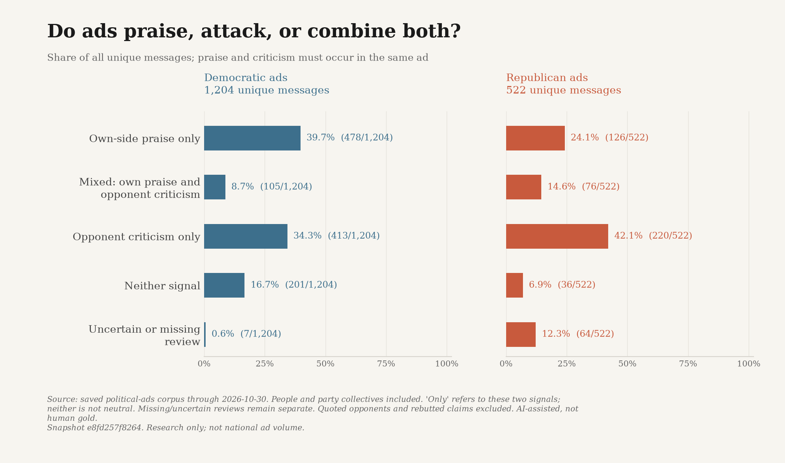
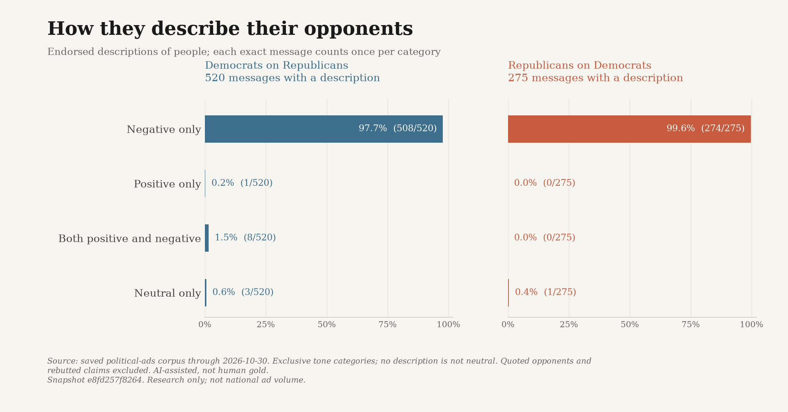
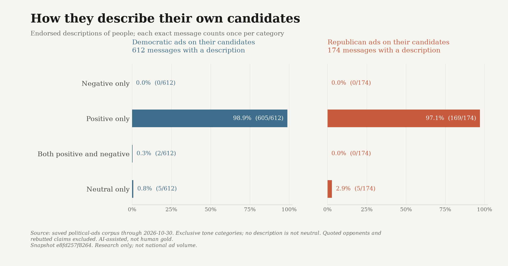
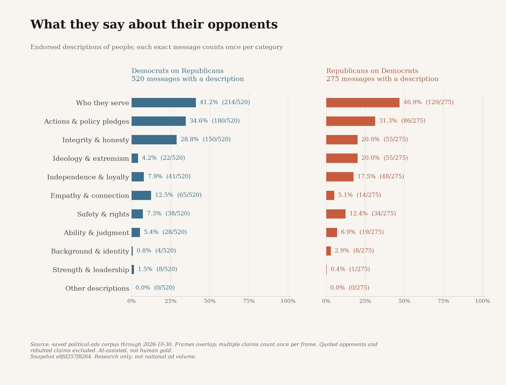
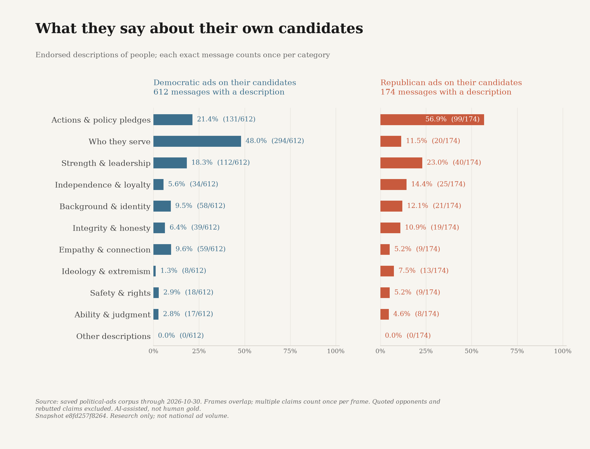
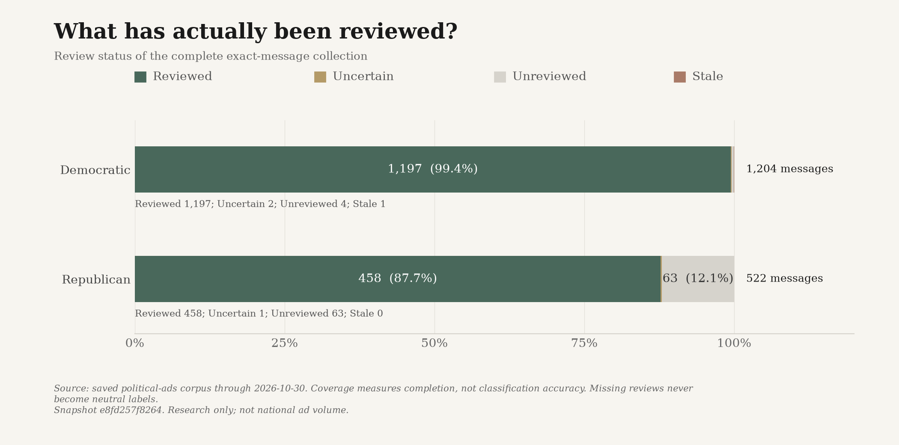
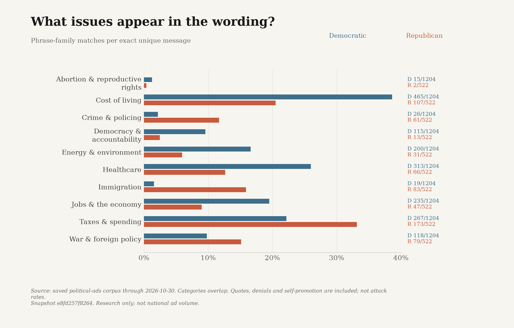
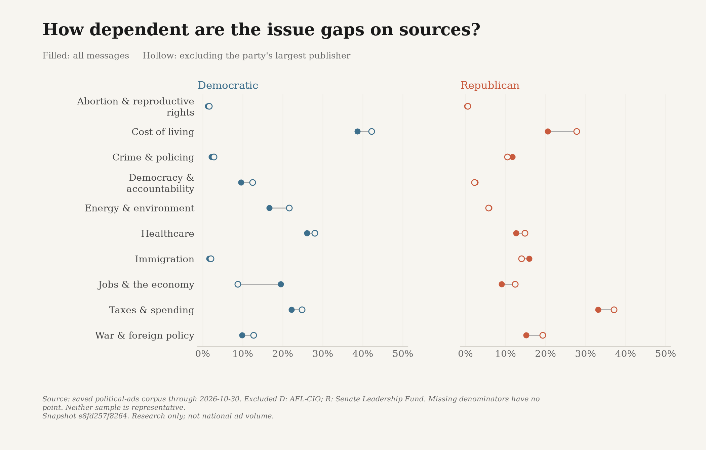
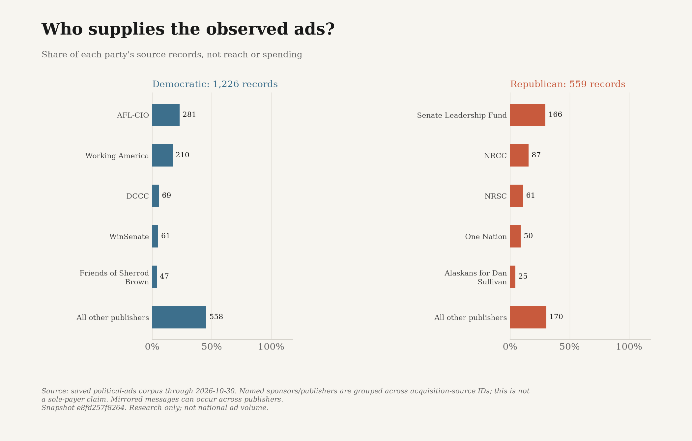
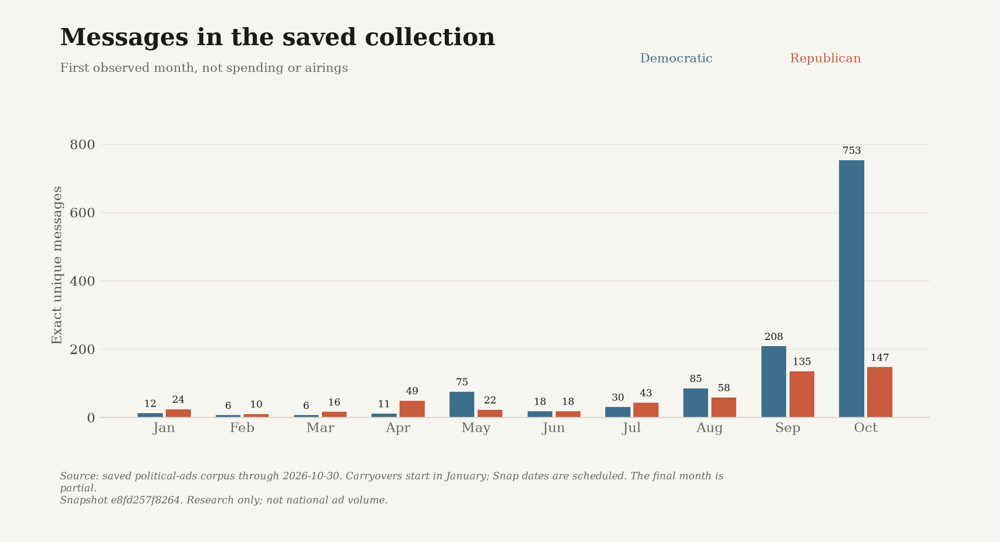
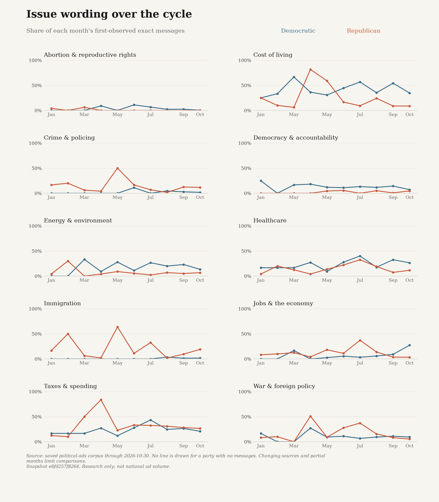
First observed exact messages, not airings or spending. Snap dates are scheduled intervals; publisher posts are not verified paid delivery. Pre-2026 carryovers start in January, not as new launches. Early and final months are partial. Changed-target templates are distinct messages, not independent strategies.
| Month | D messages | R messages | D publishers | R publishers |
|---|---|---|---|---|
| 2026-01 | 12 | 24 | 10 | 10 |
| 2026-02 | 6 | 10 | 4 | 6 |
| 2026-03 | 6 | 16 | 4 | 8 |
| 2026-04 | 11 | 49 | 8 | 7 |
| 2026-05 | 75 | 22 | 12 | 10 |
| 2026-06 | 18 | 18 | 9 | 8 |
| 2026-07 | 30 | 43 | 11 | 12 |
| 2026-08 | 85 | 58 | 23 | 19 |
| 2026-09 | 208 | 135 | 26 | 29 |
| 2026-10 | 753 | 147 | 34 | 25 |
Unequal races, publishers, primary/general phases and extraction formats limit party comparisons. Unknown identities and phases remain unknown. ASR/OCR can misrecognize words and negation. Claims about people describe advertiser framing, not factual truth, persuasion, reach or national party strategy. The November 4 inclusive cutoff and research-only publication hold remain in force.
| Dimension | Stratum | D messages | R messages |
|---|---|---|---|
| chamber | 33 | 9 | |
| chamber | House | 689 | 157 |
| chamber | Senate | 482 | 356 |
| sponsor_type | candidate | 270 | 160 |
| sponsor_type | joint_fundraising | 0 | 3 |
| sponsor_type | outside_group | 857 | 232 |
| sponsor_type | party | 78 | 127 |
| phase | general | 23 | 40 |
| phase | primary | 3 | 12 |
| phase | unknown | 1178 | 470 |
| placement | campaign_release | 289 | 294 |
| placement | google_reported_delivery | 41 | 32 |
| placement | snap_paid_ad_scheduled_dates | 874 | 196 |
| record_format | google_image | 0 | 3 |
| record_format | google_text | 41 | 29 |
| record_format | image_ocr | 0 | 18 |
| record_format | local_asr | 0 | 21 |
| record_format | publisher_ad_copy | 34 | 35 |
| record_format | publisher_transcript | 228 | 182 |
| record_format | snap_image | 289 | 11 |
| record_format | snap_video | 588 | 185 |
| record_format | youtube_auto_caption | 27 | 38 |
Among Democratic Senate messages, the most frequently matched issue families were cost of living (170/482), healthcare (122/482), energy & environment (89/482). These are transcript-level phrase counts, not validated estimates of an ad's main subject.
Among Republican Senate messages, the most frequently matched issue families were taxes & spending (97/356), immigration (65/356), healthcare (54/356). These are transcript-level phrase counts, not validated estimates of an ad's main subject.
Even within a chamber, publishers, races, dates and extraction methods differ. These differences must not be treated as a pure effect of party.
Exact phrase matches per unique message. An ad can match several families. A quotation is still a lexical match.
| Phrase family | Democratic | Republican |
|---|---|---|
| Abortion & reproductive rights | 15 / 1204 | 2 / 522 |
| Cost of living | 465 / 1204 | 107 / 522 |
| Crime & policing | 26 / 1204 | 61 / 522 |
| Democracy & accountability | 115 / 1204 | 13 / 522 |
| Energy & environment | 200 / 1204 | 31 / 522 |
| Healthcare | 313 / 1204 | 66 / 522 |
| Immigration | 19 / 1204 | 83 / 522 |
| Jobs & the economy | 235 / 1204 | 47 / 522 |
| Taxes & spending | 267 / 1204 | 173 / 522 |
| War & foreign policy | 118 / 1204 | 79 / 522 |
1226 source records; 1204 exact unique messages.
[NARRATOR] Price Hike Mike is out of touch.
The ad alternates news clips, a Rogers quotation, and advertiser narration. This excerpt is the narrator's conclusion, not Rogers's own description.
And Perry approved firing the watchdogs whose job it is to report waste because they might expose corruption.
Janelle Stelson connects spending and the dismissal of watchdogs to corruption; this records the ad's allegation, not a finding that it is true.
More lies from spineless Juan Ciscomani.
The opening attacks Ciscomani; the rest promotes JoAnna Mendoza's biography and healthcare position.
559 source records; 522 exact unique messages.
Cuellar is with radical Democrats, not us
The full script links Cuellar to other Democrats and criticizes his votes and record. This is the advertiser's closing portrayal, not an endorsement by Cuellar or a finding about his ideology.
Spineless, shameless, completely out of touch.
The ad quotes a Trump request and then criticizes Democrats for remaining seated. This sentence is the advertiser's condemnation, not Trump's quoted request. The script repeats across 22 NRCC releases and is counted once as an exact message.
“Mary Peltola. “Still radical. “Still ineffective. “Still Alaska Last.”
These are the voice-over's closing labels. Earlier the ad includes a quotation attributed to Peltola, kept separately in the complete transcript.
“Georgia can’t afford Jon Ossoff’s radical policies.”
The ad contrasts claimed Republican tax savings with an attack on Ossoff's opposition; no truth determination is made.
“America can’t afford another Democrat crime wave. Reject Roy Cooper, and stop the anti-police agenda.”
A pro-Republican opening is followed by allegations about Cooper and Democrats. This example is one state variant of a repeated message template.
Download the complete text and evidence (CSV) · Download JSON